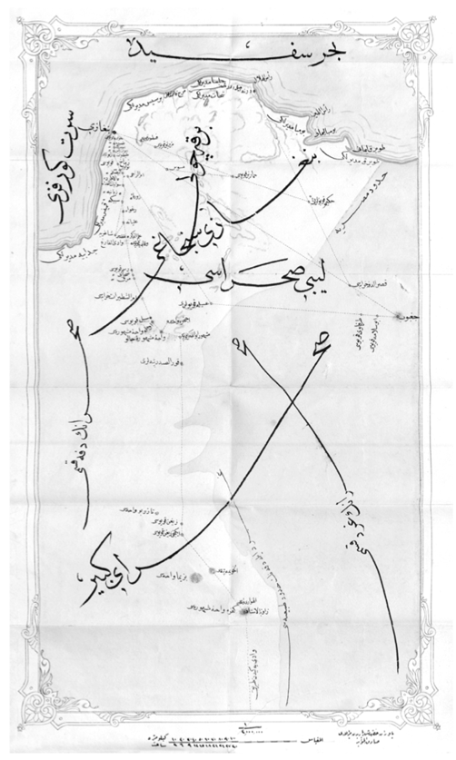

AFRİKA SAHRÂ-YI KEBÎRİ’NDE SEYAHAT
Arz-ı Şükrân
Bugün eydî-i erbâb-ı mütâlaaya takdîmine muvaffak olduğum bu seyahatnâme, taraf-ı eşref-i Hazret-i Pâdişâh-ı efhamîden uhde-i kemterâneme lutfen tevdî buyurulan bir hizmet-i müstevcibü’l-mefharet sâyesinde meydana gelmiştir. Zaten bu abd-i kemterin esas tahsîl ve ma’lûmâtı ve hayât ve saâdeti ol velîni’met-i bî-min-net-i a’zam u efhamın sâye-i lütf u âtıfetinde meydana gelmiş ve hâsıl olmuş olmağla gerek eser gerek müessir doğrudan doğruya Pâdişâh-ı bende-perver ve Şehinşâh-ı kemâlât-küster efendimiz hazretlerinin ebediyyen minnetdâr ve şükür-güzârlarıdır. Binâenaleyh kemâl-i ubûdiyet ve rıkkıyet ile ed’ıye-i hayriye-i cenâb-ı hilâ-fet-penâh-ı a’zamîyi bir daha tekrar ederek seyahatnâmemize şürû’ eyliyorum.
Azmzâde
Sâdık el-Müeyyed
Sâdık el-Müeyyed Bey
Medhal
1311 sene-i rûmiyesi Eylülünün on dokuzuncu Salı gecesi idi ki üç gün sonra Dersaadet’ten infikâk etmek1 ve Bingazi’nin cihet-i ce-nûbîsinde ve oradan takrîben bir aylık bu’d ve mesâfede, Sahrâ-yı Kebîr’in vasatında kâin Kufra’ya gitmek üzere emir aldım. İşbu uzun yola lâzım gelen tedârükât-ı seferiyeyi düşünmekle bütün geceyi geçirdim. Gözüme hiç uyku girmedi. Münâsebeti geldikçe beyân edileceği üzere 1302 senesinde Bingazi’nin cenûb-ı şarkîsinde kâin ve oradan yirmi gün bu’d ve mesâfede vâki olup Şeyh Muhammed el-Mehdî es-Senûsî’nin post-nişîn-i tarîkat ve takvâ bulunmuş olduğu Cağbûb (Avrupalıların Cerbub nâmıyla haritada gösterdikleri) mahalle azîmet ve avdet eylemiş bulunduğumdan ol vakit havalî-i mezkûreye kesb-i vukûf etmiştim. Bir de oraya îsal eden istikâmetlerin haritasını almak için kitabımıza merbût haritamızda gösterildiği üzere azîmette garb ve avdette şark tarafı tercih olunarak bu sebebden muhtelifü’t-tabîa arâzî ve sahârâyı geşt ü güzâr2 ve ahvâl-i mevki’iyeye daha ziyade kesb-i ıttılâ etmiş olduğumdan ilk sefer esnâsında lüzumu hissolunan ve taşıması kolay olan erzak, edviye ve edevât-ı sâireyi bu defa birlikte bulundurmağa karar verdim. Hemen hatıra tevârüd3 eden bu gibi malzemeyi bir kağıda kayd etmeğe başladım. Ortalık ağardı, beyhûde yere işgâl etmiş bulunduğum yataktan fırlayarak çarşıya gittim. Yetişebildiğim eşyayı mübâyaa ile akşamı ettim. Eşyâlarımı Bingazi’den tedârik olunan malzeme ile beraber ileride ta’dâd ederim.
Çarşamba 20 Eylül - Yevm-i hareket olan Çarşamba günü memûriyetime aid evâmiri telakki ile geçirileceği ve başka bir iş görülemeyeceği tabiî ise de işbu sefer için elzem olan bir fotoğraf makinesini elde etmeyi fevkalâde arzu eyledim. Halbuki çarşı pazar dolaşıp araştırmaya meydan yok idi. Ale’l-husûs ben kullanışı kolay ve sıcağa mütehammil bir makine istiyordum. Haydarpaşa’da sakin bir ahbâbımda gayet mükemmel bir makine mevcud olduğu hatırıma geldi. Daha idare vapurları işlemeğe başlamazdan akdem bir kayığa binerek arkadaşımın nezdine gittim. Hâne-sine girdikte kendisini giyinmiş ve ale’s-sabah icrâ-yı tenezzüh4 etmek üzere velosipedinin5 tekerleğini yağlamakla meşgul gördüm. Bende derhal bir fikir hâsıl oldu. Dokuz sene evvel mürur ettiğim o gayet müstevî Afrika çöllerinde acaba velosipetten istifade kâ-bil mi dedim? Arkadaşımdan cam yerine pelikül6 isti’mâl eden makineyi aldıktan sonra velosipede dair beyân-ı mütâlaâta başladık. Yolda bozulduğu takdirde çöllerde tâmir edilemeyeceği gibi işbu seyahatte şart-ı a’zam sebükbarlık7 kazıyesi idüğü ve velosipetle ne kadar ileri gidilirse gidilsin kâfileden pek de ayrılmak kâbil olamayacağı ve bu halde istifâde mahdûd kalacağı cihetle velosipetten istifâde zanları zayıflamağa başladı. Vakıâ velosipede binen adam Afrika’nın işbu tarafında kâfileden pek ayrılamayacağı cihetle istifâde edemeyecektir. 1302 sene-i rumiyesinde Cağbub’a gider iken tâkib eylediğim istikâmet ne kasaba ne de köye tesâdüf etmemiş idi. Zaten oralarda böyle şeyler mevcud olmadığından işbu istikâmetleri mevcud olan kuyular tahdîd eder.
Binaenaleyh sahil-i bahrdan müfârakat edildiği halde savb-ı maksûda8 vâsıl oluncaya kadar yolda zâd u zahîre mevcud değildir. Bâdiyenin sahile yakın olan mahallerinde hayme-nişîn ve müteharrik urbân kabâiline tesâdüf edilirse de bunlarda mevcud olan zahîre mahdûd olup arpa unu, hurma, sade yağ ve biraz zeytinyağı gibi mevâddan ibarettir. Dâimâ bu gibi yollara çıkan ve hatta Bingazi’den üç ay bu’d u mesafede bulunan Vaday Sudanına giden kâfileler üç aylık yiyeceklerini sâhilden tedarik ederler. İşte velosipetli kimse müddet-i medîde yiyeceğini içeceğini beraber taşıyamayacağı ve rehbersiz ilerleyemeyeceği cihetle makinesinin sür’atinden istifâde edemez. Şimdi bilâd-ı ma’mûrede sâkin ve medeniyet-i hâzıramızın nimetiyle mütene’im9 olanların hatırına kim bilir nasıl suâller vârid olur!. Bir insan üç aylık yiyeceğini nasıl birlikte taşır dersiniz değil mi? Bunu taşıyan hayvanın boğazı da mı yok. Bir hayvan üç aylık yiyeceğini taşıyabilir mi? Bunlara birer birer cevap vermek kolay. Hem bu tafsilâtı verirsem çöl yolculuğunun esasını anlamış olursunuz. Bir kere bu çölde yaşayan, bu uzun yollarda kat’-ı merâhil10 eden kimseler bizim bildiğimiz âlâ yemeklere mesela çorbalar, salatalar, biftekler, fileler, böreklere bi’t-tabi’ alışkın değildir. Maîşetleri pek sâdedir. Çöllerdeki ur-bânın başlıca yemekleri zemîtadır. Zemîtanın eczâ-yı mürekkebe-si arpa unu, su, biraz da zeytinyağıdır. Un tedarik olunur olunmaz, demir saç derûnuna konularak ateş üzerinde kahve kavrulur gibi kuru kuru kavrulur. Daima yola çıkıldığı zaman kavrulmuş olduğu halde götürülür. Yağmur ile rutûbet ve sâireden muhafaza olunmak için yolda çuvallara doldurulmayıp su gibi tulumlara konulur. Bu halde bedeviler esnâ-yı râhda taâm etmek11 istediler mi, iş acele ise yani yola devam edilecek ve daha konmayacaklarsa develeri oturtmağa hâcet olmaksızın onları durdururlar ve devenin bir tarafına asılmış olan kas’a nam müdevver ve yekpare tekneyi (Dersaadet’te balıkçıların balık sattıkları tahta teknenin küçüğüdür) çıkarıp un tulumunu devenin üzerinden indirmeksizin ağzını çözerek o tekneye bir mikdar un boşaltırlar, su tulumunu dahi yine indirmeksizin yalnız ağzını açıp icâb eden suyu onun üzerine dökerler. Un su ile karıştırılır. Bizim ekmek hamurumuzun kıvamından daha koyuca, asîde gibi bir hamur yaptıktan sonra diğer tulumda mahfûz olan zeytinyağından bunun üzerine birkaç dirhem gezdirdikten sonra (salatalara, piyazlara koyduğumuz zeytinyağı gibi) zemîta denilen taâm-ı enfes tehyie12 edilmiş olur. Tehyiesine lâzım olan zaman, târifine lâzım olan zamandan bilâ mübâlağa daha kısadır. İşte bedeviler zemîtalarını bu vechile yaptıktan sonra ortaya korlar ve etrafına çömelip koskocaman lokmaları ağza tıkarak nihayet on dakika içinde kabı temizlerler. Bedevi demekten merâm bunları vahşî göstermek değildir. İleride sırası geldikçe anlatacağımız üzere bu adamlar pek güzel ahlâka mâlik ve zariftirler. Bakınız sadedden ne kadar ayrıldık. Biz gene on gün sonra başlayacağımız çöl seyahatine nakl-i kelâm edelim. Zaten esnâ-yı seyahatte zikre şâyân hususlar her gün sırasıyla derc olunacaktır.
Dediğim gibi fotoğraf makinesini tedârik ettimse de ona lâzım olan pelikülü İstanbul’da bulmak kâbil olmadı. İzmir’de bulur taktırırız ümidi var idi. Sâir lâzım gelen levâzımı mehmâ-emken13 tedârik ettim. Hedâyâ-yı müstahzara-i Hazret-i Hilâfet-penâhîyi ve memûriyetimi mutazammın bazı irâdât-ı seniyyeyi ahz ve telakkî ederek hemen hareket etmek üzere bulunan Canik vapuruna şitâb ettim. Muvâsalat ettikten bir çeyrek saat sonra ve tam gurûb-ı şems-i münîrde14 vapur harekete başladı. O gün Eylül’ün yirmisi, Re-bî’ulâhır’ın on dördü idi. Hava gâyet sâkin, deniz nihâyet derecede râkid olup gurûb-ı şemsle beraber kevkeb-i münîr-i kamer aza-met-i kâmilesiyle şurûk etmekle15 ortalığı öyle bir letâfet kapladı ki târifi kâbil değildir. Yol arkadaşlarımızdan birisinin sesi gâyet güzel olup ortalığın letâfeti onu tegannîye tahrîk etti, gâyet güzel şarkılar söylemeğe başladı. Ertesi günü Kal’a-i Sultâniye’ye muvâ-salat olundukta Girid ve Bingazi ve Trablusgarb’a îsâl edilmek üzere vapurumuza bini mütecaviz kur’a-i cedîde efrâd-ı şâhânesi irkâb edildi. Bunların memleketleri muhtelif bulunduğu cihetle elbiseleri de tabiî haylice muhtelif idi. Vapura girip de hazırlanmış olan yeni kisve-i askeriyelerini giyince ve bu tebdîl-i kıyafet ân-ı vâhidde müşâhede olununca heyet-i mecmûalarının evvelki manzarasıyla bu manzara-i cemîleleri arasındaki fark beni mebhût eyledi. Bunlar vatan ve memleketlerini, akraba ve ta’allukâtını henüz bıraktıkları için yüzlerinde alâim-i teessür ve mahzûniyet görülmesi şöyle dursun kisve-i fâhire-i askeriyelerini16 lâbis olduktan sonra o kadar mesrûr oldular ki; çokları eski elbiselerini denize attılar. Vapur hareketle herkes yerli yerine yerleşince her taraftan tegannî, şarkı, mâni koptu. İşbu esvâtın17 heyet-i mecmûası pek tuhaf bir konser teşkil ediyordu.
13 Mümkün olduğu kadar.
Suda limanına Eylül’ün yirmi üçüncü Cumartesi günü ale’s-sa-bah muvâsalat olunarak oradan arabaya râkiben Hanya’ya gidildi. Hanya’da Afrika için eşedd-i lüzûmu olan Girid ma’mûlâtından beyaz çizmeler ve daha başka bulabildiğimiz nevâkıs dahi alınarak o günü akşamleyin saat on iki raddelerinde Bingazi’ye müteveccihen hareket olundu. Hayf ki vapurumuz me’mûl hilâfında olarak İzmir’e uğramamış ve Hanya’da ise bulmak kâbil olmamış bulunduğundan bizim fotoğraf makinası pelikülsüz kalmış idi.
Hanya’dan sonra deniz kabardı. Bingazi’ye kadar bir şey yememek ve yataktan baş kaldırmamak üzere otuz iki saat kamarada yattım. Ayın yirmi beşinci Pazartesi günü sabahleyin Bingazi’ye muvâsalat olundu. Oranın mutasarrıf ve kumandanı bulunan Ferîk saâdetlü Tahir Paşa Hazretleri mensub bulunduğum makâm-ı akdes-i Hazret-i Hilâfet-penâhîyi tâzîmen vapura kadar gelip istikbâl eylediler. Filikalarıyla karaya çıktık. Bingazi’de bulunan asâkir-i şâhâne, musikalarıyla beraber sâhilde saff-beste-i selâm idi. Musika ile istikbâl ettiler. Hükûmet konağına gidip orada istirahat edildikten sonra mutasarrıf paşanın dâmâdı olmak üzere bulunan Kolağası fütüvvetlü Hüseyin Efendi’nin hânesine misafir ettiler ki, orada geçirdiğim müddet esnâsında hânem gibi rahat ettim desem mübâlağa etmemiş olurum.
İşbu muvâsalat gününde ümerâ-yı askeriye ve memûrîn-i mülkiye ve memleketin müftîsiyle, eşrâf ve mütehayyizânı18 nezd-i âci-zîye gelerek hasbe’l-âde merâsim-i hoş-âmediyi19 icrâ ettikten sonra bir an evvel yola çıkmak üzere kâfilenin tertîbi için mutasarrıf paşa hazretleriyle müzâkereye başladık. Müşârunileyh derhal a’yândan ve meclis-i idâre a’zâsından olup ahvâl-i mahalliyeye fevkalâde vukûf ve ıttılâı olan saâdetlü Sâlim Efendi el-Mahîş ile yine vücûhtan ve ehl-i vukûf ve malûmattan belediye reîsi iz-zetlü el-Hâc Ahmed Efendi el-Mehdevî’yi yanımıza dâvet ederek kâfile için lâzım olan develer ile eşya ve erzak ve malzeme-i sâ-irenin kendi mârifetleriyle tedârik ve tertîb olunmasını tavsiye eyledi. Müşârunileyhima Bingazi’ye her gelen gidenin malûmu ve Dersaadet’çe dahi marûf olduğundan burada bunların hamiyet ve mürüvvetlerinden ve devlete olan fart-ı muhabbet ve sadâkatlerinden uzun uzadıya bahsetmeğe hâcet yoktur. Zaten bundan dokuz sene evvel Cağbûb’a vukû bulan seyahatim esnâsında kâfilem yine bu zevâtın mârifetiyle tertîb olunmuş idi. Bingazi’den Eylül’ün otuzuncu Cumartesi günü hareket olunmak üzere develer ısmarlayarak techîzâta başladılar.
Mutasarrıf Paşa hazretleri refâkat-i âcizâneme hayli süvâri asâkir-i şahânesini vermek istediyse de yolda emniyet-i kâmile mevcud olmağla beraber süvârinin hayvânâtı için iktizâ eden iki aylık arpa ile Bingazi’den Câlû’ya kadar bâzen bir bâzen iki günlük ve Câlû’dan Kufra’ya kadar on günlük sularını taşımak için pek çok develere ihtiyaç mess edeceğinden işbu tekliflerine teşekkür ederek, refâkat-i acizîde develere binmek üzere yalnız dört adet silah-endâzın terfîkine karar verildi. Zaten refâkatimde Der-saadet’ten beraber gelen Salih Onbaşı dahi var idi. Onunla beş kişiye bâliğ oluyor idiler. Refâkatimde işbu uzun yola gidecek efrâdı şerâit-i âtiye dâhilinde intihâb eyledim. Evvelâ gayet sahîhu’l-bünye olup hafif ve çevik ve yola mütehammil olmak, sâniyen en iyi nişancılardan bulunmak, sâlisen birisi cümlemize yemek pişirecek iktidarda bulunmak, râbian birisi de birlikte getireceğim iki hayvanı tımar etmek, yemlerini, sularını vermek, takım vurmak ve icâbında atları nallamak üzere sanat-ı nalbant ve binâenaleyh süvâriden olmak, hâmisen diğer ikisi süratle çadır kurup yıkmakta kesb-i meleke etmiş ve az çok memûriyetle uzunca mesâfelere gitmiş olmak meşrût idi. Hakîkat-i halde asâkir-i şâhânenin hemen kâffesi seferberlik hıdemâtını hıdemât-ı sâire-i askeriye mi-sillü kemâl-i mahâretle îfâ edebildikleri cümlece müsellemdir.
İâde-i Ziyâret ve İntihâb-ı Efrâd
Bingazi’ye muvâsalatımın ikinci Salı günü ale’s-sabah âcizlerini ziyâret eden zevâta birer birer iâde-i ziyâret ettim. Oradan yeni küşâd20 edilen rüşdiye mektebini ve kışlalarında asâkir-i şâhâne-yi ziyâret edip, ba’dehû21 Bingazi’nin yarım saat hâricinde ve en münâsib ve havadar bir mahallinde sâye-i umrân-vâye-i Hazret-i Padişahî’de bir tarz-ı dil-firîb ve metînde22 inşâ olunmuş olan kış-la-i hümâyûnu temâşâya gittik ki, bu esnâda refâkatimde gelecek dört silah-endâzı da intihâb eyleyecek idik. Öğleden sonra oraya vardım. Kışlaya takarrub olundukta mevcud asâkir-i şâhâne saff-beste-i selâm olduğu halde musika çalmağa başladı. İşbu resm-i istikbâl bittikten ve asker koğuşlarına dağıldıktan sonra, kuvvetlilerinden ve nişan ta’lîmi esnâsında cedvel-i mahsûsunda en iyi numara alanlarından bir mikdar ayrılarak uzak bir mesâfede vaz’ edilen hedefe tüfek attırdık. Müsâbakada kazananlardan dördü bi’t-tefrîk gidecekleri kendilerine tefhîm edildi. Ve nişancılıkta görülen mahâretlerine mükâfâten Salih Onbaşı ile birlikte bir derece terfîleri kumandan paşa hazretleri tarafından emir ve icrâ edildi.
İflte refâkatime aldığım niflancıların esâmîsi:
Birlikte gidecek olan bu dört askere nevâkıs-ı seferiyeleri varsa ikmâl etmelerini ve bilhassa birlikte çokça tütün almalarını tavsiye eyledim. Çünkü ilk seyahatimde yanımda İstanbul’dan aldığım Abdullah Ağa nâmında bir Arnavut var idi. Bingazi’den Kürd Ahmed Ağa nâmında birisi daha refâkat eyledi. Her ikisi de beraberlerinde birer mikdar tütün almış idiler. Bunlardan birisi sigara yapınca diğerine de bir adedini ikram eder idi. Bu sû-retle on senelik ahbâb gibi geçinirlerdi. Vaktâ ki Cağbûb’a mu-vâsalatla orada on gün ikâmet ve ba’dehû Bingazi’ye avdete başladık. Menzil-i maksûda bir hafta kalarak ikisi de tütünü seyrek ve birbirlerinden gizlice içmeğe başladılar. İki gün sonra Ahmed Ağa’nın tütünü bütün bütün tükendi. Abdullah Ağa dahi tütününün kâmilen bittiğini haber verdi. Ahmed Ağa’nın neşesi kaçtı. Yüzündeki beşâşet23 külliyen zâil olarak artık Abdullah Ağa’yı hazm edememeğe ve ondan dâima teşekkî24 etmeğe başladı. Abdullah’ın ise yüzünde o kadar alâim-i gam ve keder görülmediği cihetle koca tiryâkinin tütünü bitmemiş olduğuna kanâat hâsıl ettim. Zâhir, sigaralarını pek gizli ve ihtiyatlı içtiği için kimse farkına varmıyordu. Meğer Ahmed Ağa tecessüsten hâlî kalmıyor-muş. Bir gece nısfü’l-leyle karîb zamanda arkadaşının dışarı çıktığını görür. Yüzü koyun olarak tâkib eder. Arkadaşının çadırdan uzak bir mahalde kırın ortasında kemâl-i hırs ile sigara içtiğini görünce artık dayanamaz. Bir şamatadır koptu.
Nihâyet bu dâvanın tarafımdan hallolunmasına karar verdik. Ben her ikisinin de eşyalarını yoklamak istediğimi söyleyince Ahmed Ağa sevindi. Abdullah Ağa’nın ise yüzü ekşidi. Bu muâmele-nin hukûk-ı şahsiyeye taarruz demek olduğunu îma etmek istedi. Biraz şiddet göstererek eşyâlarını açtırdım. Abdullah’ın heybesinden altı paket tütün çıktı. Ahmed’in hırsından gözleri yerinden fırladı. Abdullah Ağa’nın ise hiddetten çehresi dönmüş idi. Biri Arnavutça mırıldanır iken diğeri Kürdçe cevap veriyor idi. Tarz-ı muhâvere25 yine mudârebeyi intâc etmek üzere idi. İkisine birden çıkışarak tütünleri aldım. Bahâsının birkaç mislini Abdullah Ağa’ya tesviye26 ederek tütünü müsâvât üzere taksim eyledim. Bundan sonra biraz sükun buldular ise de pek de imtizâc edemez oldular. İşte bu sefer refâkatimde bulunacak asker arasında böyle tütün münâzaasının zuhûruna meydân vermemek için tenbihte bulunmuştum. Bereket versin ki bunların üçü tütün içenlerden değildi. Yalnız birisi içiyorsa da bu da hareket gününden itibâren tütünü bırakacağını va’d eyledi. Salih Onbaşı ise pek tiryâki olduğundan birlikte mikdâr-ı kâfi tütün aldı.
İlk seferimde develerden dolayı da hayli sıkıntı çekmiş idim. Hatta bazıları Bingazi’ye dört gün kala yolda kalıp urbândan diğerlerini istîcâr etmek27 mecbûriyeti hâsıl olduğu için bu sefer kâ-filemize dâhil olacak develerin kâffesi genç, kuvvetli, yürük olmakla beraber her birine yüz kıyyeden28 ziyâde yük yükletilmeme-sini şart koydum. Fi’l-hakika matlûba muvâfık develer tedârik olundu. Deveciler dahi istediğim gibi idi. İçlerinde ne ihtiyar, ne de hastalıklı kimse yok idi.
Mihmandâr ve Arkadaşlar
Mensub olduğum makam-ı a’zama ve yâveri bulunduğum Zatı Hazret-i veliyyü’n-ni’ama ihtirâmen Bingazi ahâli ve meşâyıhın-dan bazısı şu seyahatte refâkatimde bulunmayı çok istediler ise de yalnız Şeyh Senûsi Hazretlerinin oradaki zâviyesinin şeyhi es-Seyyid Muhammed Efendi el-Îsâvi ile mûmâileyhin birâderi Abdü-lazîz Efendi el-Îsâvî ve mu’teberândan izzetlü Mansûr Efendi el-Kâhiye ile Sâlihîn Efendi, Ebû Zeylah nam zevâtın birlikte gelmelerine karar verildi. Bunlardan mâ’dâ evvelki seferimde refâ-kat-i acizîde bulunmuş olan Senûsi Efendi Ebu Medyen nâm zât bu kere dahi beraberimde bulunmasını arzu etti. Geçen sefer su tedâriki ve kırbaların nezâreti kendisine ihâle edilmiş olmağla bu kere dahi işbu husûsa nezâret etmek üzere birlikte aldım.
Mûmâileyhin geçen sefer esnâsında hakkımda icrâ etmiş olduğu bir muâmele-i hayır-hâhâneyi hiç unutamam. Bakınız nakledeyim: Bingazi’den on saat mesâfede kâin Taylamûn’dan ayrıldıktan sonra ilk konağa konduğumuz zaman Taylamûn’dan matarama doldurduğum su bitmiş idi. Kırbaların birini açıp su doldurmasını Abdullah Ağa’ya söyledim. Hayvanları sulamak için büyük tahta tekneye suyu boşalttılar. Bir de ne göreyim? Taylamûn’dan doldurduğumuz su zift gibi simsiyah olmuş. Sathında bir parmak zifir yüzüp duruyor. Acemilik bu ya! Bunun sebebini sordum: Kırbalarımız yeni olduğu cihetle mesâmmâtını29 kapamak için bunları hasbe’l-âde Bingazi’de zeytinyağıyla tılâ ettiklerini30 ve siyah rengin bundan mütevellid olduğunu söylediler. Bir vakit bunu içmekten imtinâ ettimse de susuzluğa dayanamadım. Kemâl-i ikrâh ile birkaç yudum alabildim. Kırbaları tılâ ettikleri yağ kim bilir ne aşağı cinsten imiş ki, dehşetli bir de katran kokusu peyda etmiş idi. Kırba içinde ve güneş altında su on saat kadar deve üzerinde çalkandıktan sonra deriden ve o fena yağdan öyle bir halîta peyda etmiş ki; manzarası hakîkaten iğrenç idi. Bu su ile elimi yıkayacak oldum. Keşke yıkamayaydım. Ellerim o kadar kirlendi ki zifirini ne ile izâle edeceğimi şaşırdım. İşbu hâl-i ızdırâbımı uzaktan seyreden ve kâfile ile birlikte geldiği halde iki günden beri henüz benimle ihtilât etmeyen mûmâileyh Ebû Medyen elinde bir kap derûnunda temiz su olduğu halde imdâdıma yetişti. O sudan içtim. Ne tatlı, ne güzel, ne soğuk! Elimi de yıkadım, siyahlık gitti, dünya benim oldu. Hemen Ebû Medyen’in boynuna sarılacaktım. Çünkü imdâdıma gelmese idi, o kirli suyu seyahatimin nihâyetine kadar içmeğe mahkûm oluyordum. Bu su kalbime yeni bir ümid getirdi. Kendisinden suyu nereden bulduğunu sorduğumda, bunun diğer kırbaların doldurulduğu mahalden dolduğunu ve fakat mahfûz olduğu kırba gayet eski bir Vaday kırbası olduğunu ve böyle kırbalar suyun tadını aslâ bozmayacağını söyledi. Sebkat etmiş olan şu su hizmetine mukâbil ikinci seferimde kendisini su müdürü sıfatıyla beraber aldım.
Mûmâileyhin bana diğer bir hizmeti dahi vukû buldu. Onu da hikaye edeyim: At yürüyüşü deve yürüyüşünden daha süratli olduğu ve dâimâ yollarda bir kuyudan müfârakat edildiği zaman diğer kuyuya gelinceye kadar bir hatt-ı müstakim üzere hareket olunduğu cihetle işbu istikâmetin ciheti pusula üzerinde sâbit görünür. Binâenaleyh ekseriyâ gündüzleri istirahat etmek için atımı bir bir buçuk saat ileriye sürüp iner ve kâfile gelip beni geçinceye kadar istirahat eder idim. Bir müddet geçtikten sonra kâfile hâlâ görünmekte ise ta’kiben yetişir idim. Arâzi dalgalı bulunup da kafilenin rü’yeti kabil olamıyorsa nezdimdeki pusulanın yardımıyla ta’kib eder, fakat geceleyin kafileden aslâ ayrılmazdım. Bir gece kumsal bir arâziye konmuş idik. Henüz ortalık pek karanlık iken harekete başladık. Pusulaya bakmayarak urbandan birisine hangi seyyârenin istikâmetinde gidileceğini sordum. Bana bir tanesini göstererek dosdoğru gitmemi tavsiye etti. Yanımda bulunan Abdullah Ağa ile birlikte esb-süvâr olarak31 kafileden evvel ileriye çıktık. Yavaş yavaş ortalık ağarmaya başladı. Arkamıza döndük kafile yok. Pusulaya baktım bir de ne göreyim? Sağa kırk derece kadar inhirâf32 etmişiz. Güneş ufukta yükseldikçe sıcak ziyâ-deleşti. O aralık bâd-ı semûm33 da esmeğe başlamasın mı? Susuzluk bastı. Abdullah Ağa matarayı beraber almış idiyse de az zamanda tükettik. Kum deryâsı içinde altmış iki santigrat derece-i harârette vakt-i zuhurda34 susuz olarak ümidsiz kalmak; Aman Yâ Rabbi!.. Şu çöl ortasında hayatımıza hâtime çekeceğimizi anlamaya başlamıştım!
Nihâyet uzaktan o kum deryâsının dalgası üzerinde yani bâdı semûmun hubûbuyla35 teşekkül eden müteharrik tepelerden birisinin zirvesinde bir beyaz alâmet göründü. Ona doğru atları sürdük. Oranın kumu gayet yumuşak olduğu cihetle biçâre hayvanlar bataklıkta yürür gibi hemen dizlerine kadar kuma batıyordu. Alâmet gittikçe büyümeye başladı. Nihâyetü’l-emr bu alâmetin bir adam tarafından sallanmakta olan bir beyaz ihrâm olduğunu gördüm. Dünyalar benim oldu. Sonra kulağımıza bir ses geldi. Birkaç yüz metreye yaklaşınca Ebû Medyen’in sesi olduğunu anladık. Yanına yaklaştık. Kendisi gayet hiddetli görünüyor idi. Susuzluğumu ve atlattığım tehlikeyi unuttum. Gülmeğe başlayıp “Ne oluyorsunuz?” dedim. “Vay bu suâli soran sen misin?” Ne mi oluyorum? Bu çöllerin nice nice kurbanları görülmüştür!” diye ihtiyatsızlığımı kemâl-i şiddetle muâheze etti. Hele Seydî Mustafa’nın gayet muz-darib ve mükedder bir halde bulunduğunu söyledi. Seydî Mustafa dediği zat Bingazi civârında bulunan Taylamûn zâviyesinin şeyhi olup o sefer birlikte Cağbûb’a gidiyor idi. Doğrusu âdetâ kendi misâfiri gibi idim. Binâenaleyh böyle semûmlu bir günde kum dalgalarıyla memlû bir arâzide kaybolunca birkaç saat içinde telef olacağıma zâhib olarak biçâre adamların istedikleri kadar hiddetlenmeğe hakları var idi. Ebû Medyen yaya, benimle Abdullah Ağa hayvan üzerinde sola doğru yarım saat gittikten sonra peşimize gönderilmiş olan Ebû Zeyd nâmında diğer bir arayıcıya rast geldik. Bir saat sonra da bizi beklemekte olan kâfileye yetiştik. Seydî Mustafa’yı ne halde göreyim? O şetâretli36 ihtiyâr, o her sözüme tatlı tatlı gülen adam, Allah bilir hiddetinden ateş püskürüyor-du. Bir daha kafileden infikâk edecek olur isem ellerimi deve üzerinde bağlayacağına evvel emirde yemin etti. Ben de bu hususta itâat edeceğimi ve bundan böyle kafileden aslâ ayrılmayacağımı va’d edip yüzünü, sakalını öptükten ve bir hayli okşadıktan sonra neşesini iâde edebildim. Kendisine hak vererek yola devam ettik. Semûm yani çöl rüzgarı gittikçe ziyâdeleşmeye başladı. İçmek için kırbalarımızda kalan su, bulunduğumuz mahalden yüz yetmiş kilometre mesafede vâki Matar kuyusundan alınmış olmağla bitmek üzere idi. Useyle’ye yaklaştığımız için oraya varıncaya kadar semûm devam ettiği halde bile ârâm etmeği bir türlü tecvîz etmiyor idik. Çünkü devâm eder ise ma’lûm olduğu üzere kırbalardaki suları bile kurutur, kırba açılınca içinden yalnız sıcak hava çıkar. Binâenaleyh kemâl-i germî37 ile yolumuza devâm ederek tak-rîben saat sekiz râddelerinde vâha i’tibâr olunan Useyle nam mahalle geldik. Burası kumsal ve etrafındaki araziden biraz münhat-tır. Tahmîn-i âcizâneme göre hafif olan üstteki tabaka-i remliyenin38 altında bir tabaka-i haceriyye39 mevcud olmalıdır ki orada herhangi bir mahal, bir buçuk metre kadar kazılır ise su çıkıyor. Kezâlik nüzûl eden yağmur suları tecemmu’ ederek altında bulunan tabaka-i sahriyeden40 dolayı daha aşağıya nüfûz etmiyor. Sudan başka orada birkaç hurma ağacı da mevcûddur.
Bâd-ı semûm bizi fevkalâde susuzluğa dûçâr etti. O zaman refâkatimde bulunan şeyhler, bedevîler kâffesi ihrâmlarıyla yüzlerini, gözlerini güzelce sararak oracıkta yere serildiler, yattılar. Besbelli buna alışmış idiler. Ben ise nâçâr onlar gibi ağzımı, burnumu tıkayamayarak baygın bir halde yere düştüm. Semûm hâlâ devam eyliyor idi. O sıcak rüzgârı teneffüs ettikçe nefesim darlaşmağa başladı. Bazen su içtimse de tuzlu olduğu cihetle yalnız karnımı şişirerek harâretimi teskîn etmiyor idi. Artık tâkatim kesilmiş, nefesim darlaşmış idi. Bulunduğum mahalden takrîben elli metre uzaklıkta bulunan ma’hûd su kuyularından birinin yanına kadar sürüne sürüne gittim. Elbisemi dar çıkararak kendimi suyun içine attım. Boylu boyumca çukurda uzandım. Tas makamında kullanmak üzere birlikte getirdiğim küçük tahta tekne ile suyu hem içmekte, hem de başıma dökmekte devam ettim. Saat on bire gelip de sıcağın şiddeti biraz eksilinceye kadar çukurda kaldığım halde hâlen kafilenin urbânı bîhûş idi. Abdullah’dan başka kimse gaybûbetimin farkında değildi. Saat on ikiden sonra sıcağın tesiri hafifleşti. Semûm hâlâ devam ettiğinden kesilip de he-vâ-yı bahrî esmedikçe yerimizden hareket etmemeğe, orada ârâm etmeğe karar verdik.
Oradan Cağbûb’a kadar, gurd tesmiye olunan kıt’a-i arâzi çorak, kumsal ve gayr-ı sâbittir. Altmış beş saat müddet su görülmez. Binâenaleyh günde on sekiz saat mesâfe kat’ etmek iktizâ eder. Halbuki, semûm devâm ettiği halde bu mesâfeyi kat’ etmek ne kadar müşkildir. Bi-lutfihî teâlâ41 nısfu’l-leylden42 sonra hava ta-ğayyür ederek şimâl tarafından serin bir rüzgâr esmeğe başladı. Ertesi günü yola devam ettik.
Useyle ile Cağbûb arasındaki yol esnâsında hep bir yerde telef olmuş, yarısı dışarıda kalmış sekiz on insan lâşesine müsâdif olduk. Ve biraz ileride 400 kadar koyun ölüsü gördük. Bunlar hep semûmdan telef olmuşlar idi. Semûm estiği zaman bu taraf yolcularının teskîn-i atş43 için kullandıkları usullerin bi’t-tecrübe en iyisi ya ceste ceste44 revgan-ı sâde yalamak, yâhud yukarıda
bahsi geçen kavrulmuş unu suya katıp boza gibi içmek olduğunu id-diâ ediyorlar.
İşte size eski seyahatimden uzun bir fıkra naklettim. Şimdi yine bahsimize avdet edelim:
Birlikte bulunan askerin erzâkı hâric olarak iki ay kifâyet etmek üzere kendim ve icâbında misafirlerime ikram için alınan zâd u za-hîrenin mikdârı ile envâ’ı ber-vech-i âtîdir.
Askerin eşyasından başka birlikte alınan edevât:
Kaşık, çatal, bıçak, bir büyük keten iskemle, bir küçük keten iskemle, bir portatif masa, bir ispirto kahve takımı, bir boş kırbaların hıfzı için şebeke, sekiz ihtiyat çuval, bir ibrik, bir maşraba, bir huni, bir büyük telâtîn matara, bir telâtîn bardak, bir ma’den bardak, bir ilaç için çotra, keten ip 9 kıyye.
Yanıma aldığım eczâhânenin muhteviyâtı:
Dühût nam müshil hapları, sülfat hapları, hardal kâğıtları, afyon ruhu, bizmut tuzları, sülfat dö zenk, antiprin, antifibrin, amonyak, asit sitrik, asit asetik, eter sülfrik, nane ruhu, çiçek suyu, envâ’-ı şu-rublar, demirhindi, demirhindi hülâsası, nar pekmezi.
Âlât ve edevât-ı sâire:
Revolver, dürbün, iki aded mâvi gözlük, bir plânçete pusulası, bir cep pusulası, bir dübel desimetre, iki perkâr, mukavvâdan istikşâf plânçetesi (harita almak için), adese, termometre, Almanca Afrika haritası, fotoğraf makinesinin pelikülü olmadığını söylemiştim. Makineyi Bingazi’den, pelikül taktırılmak üzere Malta’ya gönderdik. Eğer yetişirse yolda arkamızdan süvâriyle Câlû’ya gönderilecektir.
Bingazi’den Hareket
Eylül’ün otuzuncu Cumartesi günü yola çıkılacağı evvelden ta-karrur etmişti. Istîcâr edilen develerin bir kısmı geceden geldi. Kısm-ı mütebâkisinin dahi memleket hâricine vurûd ettiği sâhibi tarafından haber verildi. Bingazi’nin hâricinde yarım saat mesâfe-de vâki olup kâfilenin mahall-i tecemmu’u olmak üzere tâyin edilen asâkir-i şâhâne kışlasına müteveccihen o gün gündüz saat altıya çeyrek kala hareket eyledik. Fotoğrafa merâkı olan bir zat bizimle beraber geldi. Kâfile heyet-i mecmûasının, resm-i vedâ’ın fotoğrafını aldı. Halbuki memleket hâricine vusûlü haber verilen develer vürûd etmemişti. Bi’l-mecbûriye gece kışlada kaldık.
Bu taraf urbânının sözüne inanmak pek zordur. Meselâ bu adamlar uzun uzun mesâfeler kat’ına alışık olduklarından parmaklarıyla bir istikâmet gösterip de “Filân kuyu işte şuradadır.” dediler mi, bunun on dakîka, bir çeyrek, nihâyet bir saat mesâ-fede olduğunu zannedersiniz. Halbuki heyhât! Kuyu ya bir veya iki günlük mesâfededir. Bunlar saat kullanmadıkları için “Falan yer yakındır, şimdi varırız.” derler, ama zamânın hesâbını bilmezler. Şimdi varılacağı zannolunur da sabahtan akşama kadar yürür, yine varamazsınız. Meğer deve sâhiplerinin dün gelip de “Develerimiz şehir hâricine geldi.” diye haber vermeleri de bu kabîlden imiş.
Akşam ve gece olup develerin henüz gelmediklerini görünce ziyâde canım sıkıldı. Develerin sâhibini çağırdım. Develerin nerede kaldığını sorunca “Hemen şimdi muvâsalat edecekler.” diye bir daha yalan söylemesin mi? Bir zaptiye süvârisi çağırdım. “Şu adamın yanı sıra git, hiçbir yerde ârâm ve istirahat ettirmeyip develerine tesâdüf edinceye kadar dolaştır, bul getir.” dedim. Deveci ile önünde süvâri zaptiye, kışladan geceleyin saat dörtte hareket ettiler.
Pazar, 1 Teşrinievvel - Bugün de saat dokuza geldiği hâlde mütebâki develerimiz henüz görünmemişti. Artık her halde yola çıkmağı tasmîm45 etmiş idim. Devecilerin develeri gideceğimiz yoldan gelecek idi. Yolda onlara tesâdüf edince iâde eylemek üzere buradan asâkir-i şâhânenin nakliye develerinden mikdâr-ı kâfi almağa karar verdik. Bu vechile saat dokuz buçukta kışladan müfâ-rakat olundu. Bingazi’den birkaç zat ilk konağa kadar gelmek arzu ettiler ise de bir saat sonra kendilerine teşekkür ederek memlekete avdetlerini ricâ eyledim. Saat on bir buçuk râddelerinde yolumuz üzerinde bulunan bahçelerden birinin sâhibi olan Mustafa er-Rahîs nâm zât karşımıza çıktı. Akşam taâmını herhalde kendi bahçesinde tenâvül etmemizi teklif etti. Yemekten ziyâde kat’-ı mesafeye âmâde idiysem de birlikte bulunan mihmandârlar “Biz hepimiz atlıyız, varsın develer yola devâm etsin, ne vakit olursa onlara yetişiriz.” dediler. Ne onların, ne de bahçe sahibinin gönlünü kırmak istemedim. İstikâmetimizi inhirâf ettirerek da’vete icâbet ettik. Derhâl bir koyun kesilerek tencereye atıldı. Bu etin biraz kaynayınca daha pişmeden yeneceğini eski tecrübelerimden biliyordum. Yanımızdaki misâfirlerden Bosnalı bir muhâcire koyunun böbreklerinden, yüreğinden bir şiş kebabı pişirmesini söyledim. Vakıâ sofraya oturup da onların çiğ etinden yememek ayıp olacaktı. Yemek yendi. Derhal hareket eyledik. Bahçe sâhibi bizi teşyî’a çıktı. Sâir misâfirleri de beraber idi. Bunların hiçbirisi çöl yollarını bilir takımdan değil idiler. Her biri bir istikâmet göstererek başka tarafı sağlık veriyor idi. Gece kırlarda serseri serseri dolaşmağa başladık. Bereket versin bir köpek havlaması işitildi. Oraya doğru gittik. Bir mezra’a imiş. Kapıyı çaldık. Oradan iki bedevi aldık. Bunlar önümüze düşerek bizi ilk konak yerimiz olan Havâbî nam mahalle kadar îsâl ettiler. Birlikte bulunan mihman-dârlar şu yol şaşırılması meselesinden pek mahcûb oldular. Vakıâ müşkilât hep ziyâfeti kabul etmekten ileri gelmiş idi. Orada konak yerini bir gözden geçirdim. Çadırım güzel kurulmuş idi. Bu gece ilk defa olarak haymenişîn46 olduk.
Pazartesi, 2 Teşrinievvel - Ale’s-sabâh saat onbirde kalktık. Sabah ezânını okudular. Cemâatle namaz kılındı. On ikide yola çıkıldı. Öğleden sonra Ebû İdrîs nam mahalle geldik. İki gün evvel yola çıkardığım deveci ile zaptiyeyi develeriyle beraber orada bulduk. Bereket versin ki Bingazi mutasarrıf kumandanı paşa hazretleri, bunların peşinden bir zâbit ile iki süvâri daha göndermiş idi. Yoksa burada da rast gelemeyecek imişiz. Yükleri nakliye develeri üzerinden kaldırıp kira develerine tahmîl47 ile yolumuza devâm ettik. O esnâda Vaday’dan gelen kırk develik bir kâfileye tesâdüf olundu. Kâfile halkı yâverân-ı Hazret-i Hilâfet-penâhî’den olduğumu anlayınca kemâl-i ta’zimle ellerime sarıldılar. Yolda ne kadar urbâna ve urbân meşâyıhına rast geldimse cümlesi ta’zîmde kusur etmiyorlar idi. Rast geldiğimiz kâfile halkına îrâd eylediğim bazı es’ileye verdikleri cevaplardan Vaday’dan tamam yüz gün evvel hareket ettiklerini ve Vaday’ın civârına Mütemehdîler48 dervîşânından bir fırka gelmiş olduğunu ve fakat muhârebe etmeyip çekilip gittiklerini anladım. Bu adamlar Kufra’da Seyyid Muhammed el-Mehdî es-Senûsî Hazretleri’ni görmüşler. Şeyh-i müşârunileyhi suyu ve havası güzel olan arâzilerden Rebyân nâmında bir mahalde ikâmet etmek üzere birçok zevâtın da’vet etmiş olduklarını ve fakat şeyhin Kufra’dan müfârakat etmek istemediğini de ilâveten beyân eylediler. Hamûle-lerinde49 fil dişi, deve kuşu tüyü var idi. Saat yedide Seydî Geylânî nam evliyânın türbesi kırın ortasında göründü. Hem ziyâret hem de biraz kapalı yerde istirahat için atımı oraya sürdüm. Bugün üzerinde kat’-ı mesafe eylediğimiz Berkatü’l-hamrâ arâzisi nazar-ı dikkatimi celb eyliyor idi.
47 Yüklemek.
Bu arâzinin toprağı gâyet yumuşak ve kuvvetlidir. Pek az mikdârına urbân tarafından arpa, buğday ekilir. Bunların çift sürdükleri sabanlar da garibdir. Sabanın hacmen, veznen bizim bildiğimiz rençber kazmasından farkı yoktur. Tarlayı sürdükleri vakit sabanı ya deveye ya bir merkebe çektiriyorlar. Bunlar olmazsa iki kişi el birliği ile sürüyorlar. Sabanın ucu toprağa ancak dört parmak giriyor. Yere hiç gübre verildiği yok. Yalnız oralarda deve, koyun ve sâire gezip gübre bırakacak olur ise işte o kadar! Halbuki arâzi bu kadar ehemmiyetsizce, gayretsizce sürüldüğü ve akar suyu olmadığı halde yalnız yağmur suyu bereketiyle ekilen bir kilelik tohumun yüz kile mahsûl verdiğini defe’âtla ekip biçenler söylediler. Şeyh Abdülaziz Efendi’nin temînine göre bereketli senelerde bir buğday veya arpa habbesi o kadar çok ve kalın başaklar hâsıl eder imiş ki, bir kök mahsûl koca çalı gibi olur, âdetâ köküne hayvan bağlarlar imiş. Hayfâ ki buranın urbânı felâhat50 ve zirâattan bî-behredirler51. Bâ-husûs hiç çalışmazlar. Eğer bu havâliye muhâcirler sevk ve iskân ettirilip kuyular kazılsa fevkalâde mahsûl alınacağı muhakkaktır. Bir de civar urbânı hurma, deve sütü ve arpa unu ile tagaddî52 ettiklerinden aslâ zirâate rağbet etmezler. Yalnız sevâhile yakın olan ahâli ve sekene az çok tarla eker ve sâniye tabir ettikleri kuyulu bahçeler yetiştirirler ise de, arâzinin vüs’at ve kabiliyetine nis-betle bu da binde bir derecesinde değildir.
Bugün yolda zehirli bir yılana rast gelerek öldürdüm. Akşama konak mevkimiz olan Taylamûn nâm kasabaya varmadan Berkâ arâzisi meşâyıhından Seydî Dermâme nâm kabile şeyhi istikbâlimize geldi. Bize refâkat etti.
Berkâ çölü sath-ı deryâdan tahmînen 300 metre irtifâında olup ismini eski Berkâ şehrinden iktibâs etmiştir. Târîh-i kadîmde bu çöl başlıca beldesi olan Girene şehrine nisbeten “Girenebekâ” nâmıyla ma’rûf idi. Batlamyuslar zamânından sonra ise o zamanlar meşhur olan Beş şehrine nisbetle Pentapolis nâmını almıştır. Çöl kuvve-i fevkalâde-i inbâtiyesiyle53 meşhur olduğu gibi taraf-ı şimâlîsinde bulunan ve sâhil-i bahre muvâzî olan Cebelü’l-ahdar dahi gâyet güzel yaylaları, zengin ve vâsi ormanları ve birçok akarsuları şâmildir. Eskiden kalmış ve şimdiki halde yabânileşmiş birçok da zeytin ormanları vardır. Bunlardan hâsıl olan zeytinyağını sahil-i deryâya îsâl etmek için yapılmış olan su olukları şeklinde mecrâlar el’ân mevcud olduğu gibi bu havâlide mütevattın bedeviler hâlâ o yabâni ağaçlardan bir hayli zeytin alıp kaba usuller ile ve ez-cümle taneleri iki taşş arasında ezdikten sonra suda kaynatmak sûretiyle gâyet nefis zeytinyağı istihsâl ederler. Cebeldeki ormanları teşkil eden eşcâr54 meyânında kesretle servi ağaçları görülür. Bundan birkaç sene mukaddem sâye-i umrân-vâye-i mülûkânede Bingazi hâricinde inşâ edilen kışla-i hümâyûnun direk, kiriş, döşemelik ve hattâ doğraması hep oradan celbolunan ulu servilerden i’mâl edilmişti ki, bu kerestelerin râyiha-i nefîsesi55 kışlanın haricini bile ta’tîr56 etmektedir. Berkâ çölünde pek çok ceylan, geyik, karaca ve tavşana rast gelinir. Cebel tarafında da birçok yabani güvercin, keklik, vesâir av kuşları görülür. Bundan birkaç yıl evvel Almanya’dan on bini mütecâviz âilenin Cebelü’l-ahdar’a hicretle orada ihtiyâr-ı ikâmet ve tâbiiyyet-i Osmâ-niye’ye dehâlet etmek üzere hükûmet-i seniyyeye mürâcaat etmeleri de bu mevkiin letâfet-i âb u havâsına ve her türlü terakki ve ma’mûriyete olan kâbiliyet-i tabîiyesine burhândır.
Bingazi’den hareketimden akdem ed‘ıye-i hayriye-i hazret-i pâdişâhinin tekrârı
Taylamûn’a saat dokuz buçukta muvâsalat ettik. Muvâsalatımı-za uzaktan muntazır olan Senûsiye zâviyesinin şeyhi ile mürîdleri ve urbân fevc fevc gelerek râsime-i hoş-âmedîyi bi’l-icrâ bizi zâvi-yenin üst katında güzelce bir odaya götürdüler. Kahve yerine gâ-yet büyük bir kab içinde deve sütü ikram ettiler. Dokuz sene evvelki seferimde ilk defa deve sütünü içtiğim zaman bir mide rahatsızlığına dûçâr olmuştum. O vakitten gözüm yılmıştı. Bu sefer yolda susuzluk zahmeti çekmemek için mihmandarlarımdan Şeyh Abdülaziz Efendi birlikte yüksüz ve yalnız sütleri için üç deve getiriyor idi. Sütlerine alışmağa karar verdim. Evvelâ ihtiyatla sonra îtiyadla içmeğe başladım. Deve sütü taze sağılıp içilirse koyun sütünden pek de farkı olmaz. Şeker katmağa da hâcet yoktur. Soğuyup duracak olursa ekşir, ayran gibi olur. O zaman içince ha-râreti teskîn eder.
Biz zâviyede istirahat eder iken kâfilemiz yetişip hâricde çadırlar kurulmuştu. Artık zâviyede taâm ve beytûtet57 etmem için vâki olan dâvete karşı teşekkür ve itizâr ederek çadırıma gittim. Yarım saat sonra bir şeyh ile refâkatinde elleri yüklü birkaç adamla yanıma geldiler ve hâmil oldukları hediyelerin zaviye tarafından ka-bûlünü ricâ ettiler. Zâd u zahîrem ihtiyâcât-ı seferiyeme kâfî ve hattâ fazla bile olduğu için bu hedâyâyı kabul etmemek istedimse de refâkatimde bulunanlardan biri bu adem-i kabûlün58 zâviye halkınca bir hakâret gibi telakkî olunacağını dermeyân ettiğinden reddine cesâret edemedim.
Gelen Hedâyâ: Bir koyun, bir lenger tereyağı, bir kazevi59 pirinç, bir sepet yumurta, soğan, nohut, kestane, kuru üzüm, nar hoşafı, tuz, biber, ekmek ve deve sütü ile taze böreklerden ibâret idi. Bunlarla çadırı doldurmamak için derhal bir kısmını askere, kısm-ı mütebâkisini de devecilere vererek kendime biraz kebap kestane ile kocaman bir kâse hoşaf alıkoydum.
59 Saz hasırından yapılan pirinç vesaire kabı, zenbil.
Akşam üzeri dolaşırken devecilerden birinin oradaki ince otları döğüp ip örmekle meşgul olduğunu gördüğümden bunu ne yapacağını sordum. İpleri kâfi olmadığını söyleyince ihtiyât iplerimizden iki tanesini kendisine verdim. Bunları pek ziyâde sevinerek aldıysa da başlamış olduğu ipi yine örmekte devam etti. Geceyi zâviye civârında geçirdik.
Salı, 3 Teşrînievvel - Gece saat dokuzda uyanıp getirilen deve sütünü sıcak sıcak içtim. Daha Bingazi’de iken bir tenekeciye mecidiye kıtasında yüz tane yuvarlak teneke kestirmiş ve üzerlerine katran ile birden yüze kadar rakam vaz’ ettirmiş idim. Urbân ve deveciler gece karanlığında bile develerini biribirinden tefrîk etmekte güçlük çekmezlerse de bunların şekilleri, renkleri, boyları bizce fark edilemeyecek derecede müşâbih olduğundan bizim için ikide bir yanılmak mahzûru vardı. Binaenaleyh bugün hareket etmeden evvel ilk işim develerimizin boyunlarına (1)’den itibaren numaralı birer teneke asmak ve zahîre denklerine de sırasıyla numaralar takmak oldu. Sonra denklerin numaraları bir cüzdana kayd olunarak her dengin içinde mevcud olan eşya, numarasının altına yazıldı. O surette ki akşamları konduğumuz zaman her ne çıkarmak ister isek istenilen şeyi evvelâ cüzdanda arar, orada numarasını bulup ona göre denkleri açar kolayca alırdık. Böyle yapmamış olsaydık çok zahmet çekecektik. Hemen hemen biribirinin aynı olan çuvallar, denkler, develer arasında, sefer hâlinde aranılan bir şeyi bulup çıkarmaktaki müşkilât bir kere düşünülsün! İşte bu tertîb sâyesinde bütün o müşkilâtı bertaraf etmiş olduk. Bu es-nâda üç koyun ile bir keçi ihdâ edildi. Yolda zebh edilmek60 üzere hemen kafileye kattık. Berâ-yı vedâ61 nezdime gelen meşâyıh-ı urbân ile görüşüp vedâlaştıktan sonra saat üçü yirmi geçe oradan hareket eyledik. Bugün öğle vakti sıcak gölgede otuz, güneşte kırk derece santigrad idi. Dokuz sene evvelki seyahatimde aynı mevkide mizânü’l-harâre62 gölgede elli, güneşte altmış ikiyi göstermiş idi. Nisbeten bu defaki hiçbir şey değil idi.
Saat yedi buçukta Elkiriysâ nam kıt’a-i arâzîye muvâsalat olundu. Orada kıldan mamûl bir urbân çadırı ile müteaddid buğday ve arpa harmanları, bir de birçok toprak yığınları gördüm. Bunlar bittabi’ merâkımı mûcib olduğundan sual ettim, dediler ki: Urbân kendilerine lâzım olan hubûbatı ifrâz eyledikten sonra kusûrunu -istedikleri zaman çıkarmak üzere- bir yığın yapıp toprak ile örterler. Bu toprak lüzûcetli63 olduğu için içine yağmur nüfûz etmediği gibi, geceleri nüzûl eden şebnemle biraz ıslandıktan sonra gündüzün harâret-i şems ile katılaşıp az müddet içinde hemen kiremit gibi olur ve altında mahfûz olan hububat beş on sene dayanır.
63 Yapışkan.
Bu mevkiin garb tarafında ve yarım saat bu’d-ı mesâfede Ze-kârîr nam bahçelikler kâindir.
Harmanları temâşâ için tevakkuf64 ettiğimiz sırada öteden ur-bân bize doğru koşuşup yanımdaki mihmândârlara “Halîfe-i İslâm’ın yâveri bu mudur?” diye sorarak hayvan üzerinde olduğum halde kimi ellerime, kimi dizlerime sarıldılar. Hepsi ayrı ayrı bahtiyarlığımı tebrîk ve ta’birât-ı hoşâmediyi tekrar ile biraz inip istirahat etmemi teklif ediyorlardı. Teşekkür ederek yola devam ettim. Bu sırada çadırdan örtülü bir kadın çıkıp refâkatimde bulunan Ebû Medyen’e bir şeyler söyledi. Yolda giderken kadının ne söylediğini sordum. Benim güzel kokulu insanlardan olup olmadığımı sual etmiş. Bu zavallıya mutlaka ömründe bir kere ya zevci yâhud kardeşi Bingazi’den bir şişe lavanta getirip şehirde efendilerle hanımların bunu süründüklerini söylemiş olduğunu tahmin etmek güç bir şey değildi. Şâyan-ı taaccübdür ki bu ıssız bâdiye-de ne telgraf, ne posta, hiçbir vasıta-i ihbâr ve istihbâr mevcud olmadığı halde Bingazi’ye vürûdumla Kufra’ya azîmetim bir sür’at-i berkıye65 ile etrâfa yayılmış idi. Bâdiye hayâtını bilenlerce ma’lûmdur ki, dâima çölde iki kişi veya iki kafile biribirine rast geldi ve hattâ uzaktan biribirini gördü mü, behemehal yek diğerine takarruba başlar. Mülâkat ederler, uzun uzadıya istifsâr-ı hâl ve hatırdan sonra her biri diğerinin nereden geldiğini, nereye gideceğini, geldiği yerdeki meşhûdât ve mesmûâtını sorup anlar, nihayet birer fâtiha-i şerîfe tilâveti ile ayrılırlar. Bir kafile sâhile ta-karrub ettiği zaman orada gidip gelen bittabi’ çokça olduğundan kafile adamları defeâtle tevakkuf edip bunlara malûmât vermek mecbûriyetinde bulunurlar. Bu vakfeler esnâsında develerin tevakkufu mutâd değildir. Onlar yoldan kalmamak için ya kendi başlarına yahud yanlarında kalan bir iki kişi ile yola devam ederler. İki kafile halkı yek diğerinden alacakları malûmatı alıp da ayrıldıktan sonra sür’atlice yürüyerek develerine kavuşur. İşte bu te-âmül sayesindedir ki urbân arasında şuyû-ı havâdis o derece süratle kabil oluyor.
Elkiriysâ meşâyıhından biri kaide-i mihmân-nüvâzîye66 riâyeten bu akşamki konak yerimize kadar refâkat etmek üzere esb-süvâr olarak bize katılmıştı. Saat dokuzda Zemâh, saat on buçukta Şe-rîfe kuyuları hizâsına ve gece saat birde Beyzafîm kuyusuna mu-vâsalat eyledik. Orada Cidâbiye müdürünü beraberinde biri süvari, diğeri piyade iki zâbit ile otuz piyâde ve yirmi dört süvâri neferi olduğu halde haymenişîn bulduk. Mûmâileyh bizi pek güzel bir surette istikbâl ve yolculuk haline nisbeten nefis taâmlarla ik-râm ve in’âm etti. Gece orada yattık. Ertesi günü sabahleyin saat on birde hazırlık görmeğe başlanarak birde itmâm edildi. Saat üçü çeyrek geçe en-Naklü’l-Ahmer nam harabelere, el-Ecred bahçeliklerine muvâsalat etmiştik. El-Ecred ta’kîb ettiğimiz istikametten iki buçuk saat sağdadır. Taâm için beşten altıya kadar bir saat mola edilerek altıda yine yola dizildik. Bu esnâda kafilenin yüksüz ihtiyât develerinden biri kaçmakla peşine düşen bir bedevi tarafından altı yedi kilometre kadar ta’kîb olunarak nihâyet tevkîf ve iâde edildi. Bedevinin bilâ-inkıtâ67 böyle müddet-i medîde68 yalın ayak koşması nazar-ı dikkat ve istiğrâbımı69 celb etti. Yanım-dakiler bu mesafenin hiç hükmü olmadığını söylediler. Ve bedevilerin gerek yürümek gerek koşmak sûretiyle bilâ fâsıla kat’ ettikleri mesâfât-ı bî-nihâyeye misâl olmak üzere birçok vukuât nakl ettiler. O zaman hayretim kat kat ziyâdeleşti. Bir ikisini hikaye edeyim:
İhtiyâr bedevinin biri Sîvâ’dan kaçırdığı devesini gece gündüz, kâh yürüyerek, kâh koşarak hiç durmaksızın Cağbûb’a kadar ta’kîb ile ancak orada yakalar ki bu vak’a Sîvâ ahâlisi beyninde meşhurdur. Sîvâ ile Cağbûb arasındaki mesafe ise deve yürüyüşü itibârıyla tamam otuz saattir.
Bir gün de Bingazi hükûmetince nakliyât-ı askeriye için deve tedariki lâzım gelir. Urbândan deve celb etmek üzere a’yân-ı ma-halliyeden ve rüfekâ-yı seferiyemizden Sâlihîn Efendi Ebû Zeylah gönderilir. Salih Efendi yüz deve istîcâr eder. Bunlar Bingazi’nin yarım saat dışarısında bulunan kışlaya saat dokuz raddelerinde muvâsalat ederler. Tesadüfen, o sırada kışlada bir boru çalınır, develer bundan ürkerek dağılırlar. Bre aman! Herkes bu genişş adımlı hayvanların arkasından seyirtmeğe başlar; koşan koşana... Nihâyet bin meşakkatle develeri toplamağa muvaffak olurlarsa da altısı pek uzağa kaçmış olduğundan bunların peşine mûmâileyh Sâlihîn Efendi ile diğer iki süvari, bir de deveci düşer. Süvariler dört nala, bedevi yayan koşa koşa dokuzdan on ikiye kadar tamam üç saat hayvanları ta’kîb ederler. Dördünü yakalarlar, fakat süvarilerin altlarındaki beygirler de yorgunluktan biter. O zaman bunlar o dört deve ile avdet ederler. Koca bedevi diğer iki deveyi gece saat üçe kadar yayan olarak kovaladıktan sonra nihayet çevirmeğe muvaffak olur ve nısfü’l-leylde onlarla avdet eder. Hayret... Hayret... Fıkrayı bizzat Sâlihîn Efendi anlattı.
Bedevilerin yürüyüp koşmaktaki şu meleke ve kuvvetlerinden bahsedildiği sırada bizim Salih Çavuş gayrete gelerek maskat-ı re’si70 olan Ma’arratü’n-nu’mân’da da böyle yürümekle müştehir adamlar bulunduğunu iddia ve Beyzûn namında birinin birkaç fıkrasını hikâye etti ki bunlar hadd-i zâtında mübâlağalı farz edilse bile epeyce garib ve mudhik olduğu için şuraya derc ediyorum:
70 Doğum yeri.
Beyzûn Ma’arra’da mektublarını postaya yetiştiremeyen tüccarların müsta’cel kağıtlarını taşımak ve uzak yerlerde ufak tefek işi zuhûr edenlerin gidip işlerini tesviye etmek gibi sür’at-i meşy71 ve sefere mütevakkıf hizmetlerde bulunur, az zaman içinde çok mesafe kat eder bezle-gû72, latife-cû bir adam imiş.
Ma’arratü’n-nu’mân ahâlisi arasında Hristiyan pek az olduğundan orada dâimi papaz bulunmayıp zifaf, defin vesâire için bir memûr-ı rûhânî lâzım olunca sekiz saat mesafede kâin İdlib’den getirilir. Bir gün bir düğün için papaza ihtiyâc messeder. Öğle vakti Beyzûn’u çağırırlar. Kendi ücretinden başka papaz efendiyi bindirip Ma’arra’ya getirmek üzere İdlib’den istikrâ73 edeceği hayvanın ücretini de verirler. Beyzûn derhal Ma’arra’yı terk ederek mutâdı üzere mâşiyen İdlib’e gider. Yolda “Nasıl etsem de şu hayvan ücretini içine oynatsam!” fikri dimağını meşgul etmekten hâli kalmaz. İdlib’e yatsı vakti muvâsalatla doğruca kendisine ten-bih edilen papaza gidip getirdiği da’vetnameyi verir. Papaz efendi “Peki, yarın birlikte gideriz.” der ise de Beyzûn, mevsim yaz olmak münâsebetiyle gündüzün yolda sıcaktan pek ziyâde rahatsız olacaklarından bahsederek hazır mehtab iken yola çıkılmak mü-nâsib olduğunu ve zaten Ma’arra’da bir an evvel vürûdlarına mun-tazır olduklarını beyân ile hemen azîmete teşvik eder. Papaz efendi muvâfakatla yol hazırlığını görür, dışarı çıktıkları zaman “Hayvan kiralayacaktın hani ya?” diye sorunca Beyzûn “Kiraladım efendim, memleketin hâricinde falanca handa. Oraya kadar yayan buyurunuz. Biz gidinceye kadar o da yemini kesmiş bulunur, binersiniz.” cevabını verir. Râhip bu yalana inanarak birlikte tayy-ı merâhile başlarlar. Tamamdır memleketin hâricine çıkıp da etrafta kimse olmadığını görünce Beyzûn yere çömelir, hayretle bakmakta olan papaza kendi sırtını gösterip “Buyrun!” der. Papaz efendi binmemek ister, herifi çıldırdı zan ile bağırır çağırır. Fakat izbandid Beyzûn, suratını asarak behemehal binmesini ihtâr edince çâr u nâçâr itâat eder. Beyzûn yükünü sırtladığı gibi kemâl-i sür’atle ilerlemeye başlar. Esnâ-yı râhda muhterem râkibine ara sıra yerini değiştirtir, yani kâh omuzlarına oturtup bacaklarını göğsünden aşağı sarkıtır, kâh sırtına bindirip iki eliyle arkasından kavrayarak koşardı. Bu minvâl üzere kat’-ı mesâfât edip şafakla beraber Ma’arra’ya gelirler. Orada râhibin şikâyeti üzerine düğün sâhibleri Beyzûn’u tekdîr ve tevbîhe kalkışırlar ise de bir taraftan İdlib’de papaz efendiye lâyık hayvan bulunamadığı iddiâsı diğer taraftan vak’anın tuhaflığı, kabahatini herkes nazarında afv ettirir.
73 Kiralamak.
Bir kere de Beyzûn bayrama iki gün kalarak ayağına yeni bir yemeni almak ister. Yemenicide bir tane beğenip fiyatını sorar.
Herif on sekiz kuruş istemekle Beyzûn bunu çok görerek böyle bir yemeninin Haleb’de on bir kuruşa satıldığını söyler. Yemenici: “Öyleyse git Haleb’den al!” der. Bunun üzerine Beyzûn hiddetlenerek: “Vay bu lakırdıyı bana mı söylüyorsun? Haleb’e gidip yemeni almayı Beyzûn için zor bir iş mi zannedersin. İşte sana inadıma gidiyorum!” diyerek derhal Haleb’e müteveccihen tabanları yağlar ve bayram sabahı Ma’arra halkı henüz namazda iken Ha-leb’den getirdiği yemeniler ayağında olduğu halde cami kapısında cemaatin çıkmasını bekler. Herkes çıktıkça ayağını göstererek da’vasını isbât ve yemeniciyi -kendi zu’munca- mağlub ve mahcûb eder.
Perşembe, 5 Teşrinievvel - Sabahleyin saat onu çeyrek geçe kalkılıp bir buçuk saat içinde develer yükletilerek saat on ikide yola çıkıldı. Saat ikide Sebîke kuyusuna vâsıl olduk. Bu akşam kırın ortasında beytûtet edeceğimizi ve konacağamız mahalde su mevcud olmadığını bildiğim cihetle burada biraz tevakkufa karar verdik. Kafile halkı bir taraftan develere su verip kırbaları doldururken fırsattan bi’l-istifâde akşama pişireceğimiz et hazır olsun ve fazla su telef olmasın mütâlaa-i ihtiyât-perverânesiyle bir koyun kestirip etini dağıttım. Fazla su telef olmasın mütâlaasına sebeb şu ki, bedeviler deve, koyun vesâire gibi yenecek bir hayvan kestikleri zaman boğazında kandan eser kalmayıncaya kadar yı-kamadıkça yüzmezler. Bunun için de birçok su telef ederler. Eti dağıtmak bahsine gelince kafilemiz bir olduğu halde bunu terkîb eden eşhâsın zevkleri muhtelif olduğundan matbahlar da muhtelif idi. Benimle refâkatimde bulunan efrâd-ı şâhânenin yemeğini bunlardan Süleyman Onbaşı pişirir idi ve yemeğimiz âdetâ Osmanlı yemeği idi. Mihmândârlar ise Bingazi’nin ve ekser bilâd-ı hârre74 ahâlîsinin âdeti üzere yemeklerine muhtelifü’l-cins biberler, baharlar doldurduklarından onların yemeğini kendi hizmetçileri, köleleri pişirirdi. Ara sıra onlar bize, biz onlara müntehab birer kap yemekle ikramda bulunurduk. Onlar bizim gönderdiği- miz yemeğe birçok bahar katıp kendi zevklerine uydurduktan sonra kemâl-i iştihâ ile yerler idi. Fakat onların bize gönderdiği et’ımeyi yiyebilmek için biz pek büyük bir hüsn-i niyet sarfına muhtâc olur, ancak bir mikdarını, o da zorla ekl edebilirdik. Hele et yemeklerimiz arasında tehâlüf pek ziyâde idi. Bizim matbahda pişirilen etler gayet pişkin ve yumuşak olduğu halde onlar eti sert olarak sıcak sıcak yediklerinden az pişirirler ve âdeta su içinde biraz kaynayınca pişmiş nazarıyla bakarlardı. Bedevilerin et yiyişleri ise büsbütün garibdir. Bunlar ortaya kocaman koca- man birkaç parça et koyarak etrafına toplanırlar. Her biri bir parçayı artık cesâmetine göre bir yâhud iki eliyle tutup ısırdıktan sonra çeker koparır, çiğnemeğe başlar. En garibi parçaları münâvebetle tenâvül etmeleridir. Taâma başladıkları zaman biri koyunun bir but parçasını, diğeri gerdenini yakalayıp yemeğe koyulurlar. Birincisi elindeki parçadan hevesini aldıktan sonra onu ya kendi önüne bırakarak başkasını, meselâ sırt tarafından diğer bir parçayı kapar. Bıraktığı parçayı da diğeri alıp ikmâl eder. Yâhud sofraya bırakmayıp yanındakine verir. Onun elindekini de kendi alır. Hele sofrada şâyân-ı ikram bir misafir olur ise, artık her kimin eline yağlıca, hürmetlice bir parça düşse hemen bir mikdarını yiyip lezzetinden haberdâr olduktan sonra birazını ayırarak ikrâmen misafire takdîm etmek âdettir. Fakat bu âdet yalnız civar kabâiline mahsustur. Bingazi ağniyâsından75 birinin sofrasında bulunulduğu zaman insan kendisini Dersaadet’de büyük bir zatın yemeğinde zanneder.
Devecilere gelince bunlar koyunun paçalarını, başını, etlerini, işkembe, bumbar, ciğer vesâiresini bir kabın içinde biraz kaynatırlar, üzerine de bir parça un, pirinç, bulgur, kuskus, hâsılı her ne bulurlarsa atarlar. Sonra hepsini büyük bir tahta tekneye döküp sıcak sıcak kapışmağa başlarlar idi.
İlk seyahatimden avdet ederken birlikte koyun taşımadığım için bir aralık on beş on altı gün kadar tâze et yemekten mahrum kalmış idim. Kavurma, kıyma gibi şeylerle yemeğimi pişirtir idim. Bingazi’ye varmadan iki gün evvel gurûba yakın uzaktan gözüme bir koyun sürüsü ilişti. Bütün kafile halkı taze et yemeğe o kadar hâhişker76 idi ki, sürüyü gördükleri gibi sevinmeye başladılar. Hemen Ebû Medyen’i bize bir koyun, var ise bir iki de kuzu mübâ-yaa etmek üzere sürüye doğru gönderdim. Daha güneş gurûb etmeden bulunduğumuz mahalde tevakkuf ederek çadırları kurduk. Odun toplattım, matbah takımını çıkarttım, dört gözle Ebû Med-yen’in avdetine muntazır oldum. Arâzî gayet düz olduğu için Ebû Medyen epeyce uzadığı halde nazarımızdan kaybolmuyordu. Hayli müddet çoban ile mükâleme ettiğini gördük. Sonra atını çevirip koyunsuz, kuzusuz bize doğru gelmeğe başladı. Bu hal fevkalâde istiğrâbımı ve bedevilerin meyûsiyetini mûcib oldu. Ebû Medyen’in boş dönüşünü hepimiz, çobanın koyunları satmağa mezûn olmadığına haml ettik. O ise öfkeli öfkeli söylenerek yanımıza geldi. Çobanın tama’kârlığından, aralarında pazarlık uymadığından ve husûsiyle bir yaşındaki koyun için on kuruş teklif ettiği halde tama’kâr herif on iki kuruşta ısrâr ettiğinden bahisle şikâyet ediyordu. Tekrar sürüye gidip velev bir altına olsun behe-mehâl bir koyun mübâyaa eylemesini tekîd ettim.
76 İstekli.
Parayı başkası verecek iken bunun bu kadar i’tinâ-yı tasarruf etmesi şâyân-ı hayret değil miydi? Zavallı, kendi zu’munca beni pek sevdiğinden malımın israf edildiğini istemiyor imiş! Dersa-adet’de bir okka eti kaça aldığımızı ve Beyoğlu’nda adi bir öğle veya akşam taâmı için kaç kuruş feda edildiğini koca Sahrâlı’ya nasıl anlatayım?
İzzetlü Sâdık el-Müeyyed Bey ile birlikte Kufra’ya azîmet eden efrâd-ı askeriye
Her ne ise adamcağız kısrağını dört nala sürerek çobana yetişti ve biraz sonra kocaman bir koyun ile avdet etti. Koyunu kestiler, yüzdüler, bana bir yanından iki şiş kebap, ciğerinden biraz kavurma, but tarafından ertesi gün için biraz söğüşlük ayırdılar. Mütebâkisi bedevilere verildi. Bedeviler kendilerine bir ateş yakıp etrafını sarmışlardı. Koyunu parça parça ederek çalıdan çırpıdan uydurdukları sofranın üzerine koydular. Kazganları olmadığı için koyunu -ancak iki okka et alabilen- bizim tencerede pişireceklerdi. Tencereyi içinde biraz suyla ateşe koydular. Ben çadırımın kapısında oturmuş, bunların on, on iki okka eti böyle ufacık tencerede nasıl pişireceklerini seyre intizâr ediyordum. Derken su ısındı, içine koyunun birkaç parçasını attılar. Bunlar kaynamaya başladıktan bir çeyrek sonra bedeviler “tâb, tâb!” “pişti, pişti!” diye o henüz kıpkırmızı çiğ olan etleri tencereden çıkararak yerine diğer parçaları koydular. Tencerenin altını güzelce beslediler. Çıkardıklarını konuşarak, gülerek, eğlenerek peksimetsiz, ekmeksiz ke-mâl-i iştihâ ile tenâvüle başladılar. Oturduğum yerden bu dişlerin, mi’delerin kuvvetine hayran oluyordum. Herifler ellerindeki parçaları, üzerinde etten eser kalmayıncaya kadar kemirip adeta cilalıyorlar ve biraz körpe olan kemiklerle kıkırdakları da keskin dişleri arasında kıtır kıtır çiğnedikten sonra “küllü dâhilin yenfa!”77 sırrına mazhar ediyorlardı. İlk tencere mahsûlü olan parçalar bu sûretle silinip süpürülünceye kadar geçen bir çeyrek müddet içinde tenceredeki etler evvelkilerin kıvâmına gelmiş idi. Bunlar hakkında da muâmele-i sâbıka icrâ edildi. Bu minvâl üzere tencere bir saatin içinde dört beş nöbet dolup boşaldı. Tencerenin adem-i vüs’atından dolayı ateşin altına gömülmüş olan kafa ve ayaklar da çıkarılarak afiyetle yenildi ve üzerine tenceredeki sıcak et suyu “kadeh” tabir ettikleri tahta kap derûnuna boşaltılarak kahve gibi nûş edildi. O koca koyundan ortada bir avuç kemikten başka bir şey kalmadı!...
77 “İçeri giren her şey fayda verir”.
Gelelim Sebîke kuyusunun başına. Kafilemiz üç saatten beri burada istirahat ediyor, yemeğini pişiriyor, kırbalarını dolduruyor-du. Bir de saate baktık, beş, hemen yola düzüldük. Akşamleyin on birde bir kilometrelik mesafede bir ceylan sürüsü göründü. Salih ve Said çavuşlar birkaç kurşun attılarsa da mesafenin uzaklığından dolayı tutturamadılar. O zaman ceylanlar ürküp alabildiklerine koşmağa başladılar. Fakat bizden uzaklaşmıyorlar, bulunduğumuz noktanın etrafında bir daire resm ederek süratle dönüyorlardı. Kafilemizin en mâhir nişancısı bulunan Mustafa Onbaşı, birkaç yüz adım ileriye koşarak üzerlerine ateş etti, bir tanesini düşürdü. Hayvan ölmeden yetişip kesmek için Mustafa Onbaşı ile düştüğü yere doğru şitâb ettik. Bîçâre ceylan kendisine yaklaştığımızı görünce ciyak ciyak bağırmakla beraber bütün kuvvetini toplayıp mecrûhen olsun elimizden kurtulmak için koşmağa başladı. Martini kurşunu her ne kadar içeriye nüfûz etmemiş ise de sırtının bir karış kadar derisini etiyle beraber sıyırıp büyük bir yara açmış idi. Onbaşı biraz kovaladıktan sonra yakaladı ve bir bıçakta cerihasının acısından kurtardı. Hayvancağızın bizi görünce acı acı haykırmağa başlayışı bana fena dokunmuştu, etinden yi-yemedim. Ceylanın düştüğü nokta ta’kib ettiğimiz istikamette bulunduğu gibi zaten ortalık da kararmağa başladığından çadırlarımızı kurarak orada beytûtet eyledik. Geceleyin başıma şiddetli bir ağrı yapıştı. Altıya kadar uyuyamadım, biraz antiprin ile teskîn-i sudâ’78 etmedikçe gözlerimi yummak mümkün olmadı.
78 Baş ağrısını teskin etmek.
Cuma 6 Teşrinievvel - Kable’s-seher79 saat onda toplanmağa başlamıştık. Saat on ikiye çeyrek kala hareket etmek müyesser oldu. Sabahın serinliğinden dolayı kafilenin önünde mâşiyen giden asker arkadaşlarımız bugün de bir ceylan sürüsüne rast gelip Mustafa Onbaşı yine bir danesini vurdu. Bu ceylan erkek, semiz ve cüsseli olduğundan bedevilerin meserretini mûcib oldu. Süleyman nâmında bir delikanlı, deve üzerinde olduğu halde derisinin hiçbir tarafını yaralamaksızın ceylanı yüzerek ve içini boşaltarak etini akşam pişmek üzere hazırladı. Bedeviler yerde ve hal-i sükûnette gördükleri işi seyir ve hareket halinde de suhûletle görebilirler. Bunlardan biri istirahat için yükü hafif bir deveye binecek olsa ya kendisine, yahud oğluna veya kölesine bir gömlek dikmek, yahud yeni bir ayakkabı yapmak veyahud hurma kökünden toplanmış liften bilâ-âlet ve yalnız elleriyle burarak gayet düzgün ve metîn bir ip örmekle meşgul olduğu, yahud kızgın güneşe karşı yüzü koyun veya arka üstü ferîh u fahûr80 uyuduğu görülür. Devenin bizim için müz’ic olan sarsıntısından bunlar hiç rahatsız olmazlar.
Burada urbânın gömlek ve ayakkabılarına dair bir iki söz söyleyeyim. Bedevilerde dikiş dikmek hizmeti erkeğe ve bir evin ya-hud ailenin en büyüğüne, yani efendisine aiddir. Bir peder zevcesinin, çocuklarının, kölesinin gömleklerini hem biçer hem diker. Bereket versin ki bedevilerin dikişli olan libâsları ekseriya bir gömlek ile bir takyeden ibaret olup bunlar ise gayet basit şeyler olduğundan erkekler bu el işinde pek ziyade dûçâr-ı müşkilât olmazlar.
Bu mâhir terzilerin gömlek dikmeleri bakınız nasıldır. İbtidâ gömleği giyecek adamın omuzundan dizlerinin biraz aşağısına kadar göz tahmini ile bir boy ölçüsü alırlar, bu tahmin üzerine kestikleri amerikan bezinin veya patiskanın iki ucunu bir araya getirip tarafeynden81 sülüseyn82 mikdarını dikerek bir çuval haline ifrağ ettikten sonra aynı ende iki kol dikerler ve çuvalın açık kalan sülüslerine iliştirirler. Ba’dehû üst taraftan kumaşın enince bir yırtmaç açıp kenarını bastırıverirler, gömlek bitmiş olur. Gömleğin bedeniyle kolları bir genişlikte olduğu için bunu lâbis olan şahıs koluna ufkî bir vaziyet verecek olur ise boş böğrü kalçasına kadar görünür. Güneşin pek şiddetli zamanında bazıları, ihrâmla-rı üzerlerinde olmaz ise, gömleklerinin kolunu başlarına geçirerek ona şemsiye hizmetini gördürürler. Güneş hangi taraftan çarpıyorsa o taraftaki kol ile başlarını örterler. Yük yükletmek, yük indirmek, kuyulardan su çekmek gibi hizmetler esnasında bu genişş kolların sıkıntısından kurtulmak için bedevi, gömleğin sağ kolunu başının üstünden aşırıp boynunun sol tarafına, sol kolunu yine başından geçirip sağ tarafına atar, çırçıplak kalan kollarıyla serbest serbest işini görür. Gömleğin üstünde de beş altı arşın boyunda ve iki iki buçuk arşın eninde yünden bir ihram bulunur. Bedeviler bununla bütün vücudlarını sararlar. Ekserisi başlarına beyaz takye giyer, şeyhlerin bazısı Tunus fesi kullanır, bazısı üzerine bir de sarık sarar. Bahsettiğimiz ihrama bedeviler “cerd” tabir ederler ki sihanı83 ince sof ve çukadan kalın kastora84 kadar muhteliftir. Rengi ekseriyâ beyaz veya kremdir. Köle ve fukarâ takımınınkiler boz renkte ve diğerlerine nisbeten kalıncadır. Kemâl-i suhûletle imâl ettikleri ayakkabıları ise tüyü üzerinde olarak kurutulmuş deve derisindendir. Bir deve kesildiği zaman bedeviler bunun cildini alarak hâliyle kuruturlar ve büyük parçalara taksim ile hıfz ederler; birisine bir ayakkabı lâzım oldu mu, bir parça alır üzerine basar, bıçağın ucuyla ayağına göre bir taban çizer, keser, tekmîl parmaklarının müntehâsına tesâdüf etmek şartıyla tabana bir tasma diktikten başka baş ve ikinci parmaklarının arasından çıkmak üzere altından geçirdiği sırımı da tasmaya diker ki bu sû-retle ayağın tabandan ileri fırlaması men edilmiş olur. Tabanın ökçe tarafından dahi ayağa yapışması için bizim çocuk patikleri gibi ön tarafından iki sırım geçirip bunları ayağın boğazında ilikler. Böyle bir ayakkabının biçilip hazırlanması bir çeyrek, yirmi dakikadan ziyâde sürmüyor. Bazen kafile giderken birinin ayakkabının tasması veya sırımı kopar ise hemen oturup tamîr ile kafileyi ta’kîb ettiği gibi bazen yeniden bir çift ayakkabı yapmak üzere geride kaldığı ve sonradan yetişip kafileye katıldığı olur. Urbân ekseriyetle, bâ-husûs yağmur ve çamurda yalınayak yürürler.
Saat beş buçukta öğle taâmı için yarım saat tevakkuf edilerek sonra yola devam olundu. Saat dokuzda haritada gösterilen Vâ-di’l-fâriğ’den bi’l-mürûr85 el-Vikadiye kuyusunu solumuzda bırakarak gurûb-ı şems ile beraber kırın ortasında konduk.
85 Geçilerek.
Konak mahallerinde kafilemize tevakkuf işaretini verir vermez hemen develer çöktürülüp asker deveci herkes bir işle meşgul olur. Salih ve Saîd çavuşlarla Mustafa Onbaşı çadırlarımızı kurmakla uğraşırlar iken Süleyman Onbaşı rüzgârın cereyânına göre matbahımızın yerini intihâb ve zahîre sandıklarını havanın estiği cihete yığarak onları siper ittihâz eder, yemeğimizi pişirmeğe başlar. Nalbant Hüseyin Onbaşı hayvanları gezdirip terlerini kurutmak, kazıklarını çakıp bağlamak, sularını yemlerini vermek ile meşgul olur. Öbür tarafta deveciler denkleri indirip çadırımın etrafına sırasıyla dizdikten sonra, kimi develeriyle, kimi matbah ve taâmlarıyla iştigâl ederler. Ben ise bütün bu harekât ve ameliyât arasında dolaşıp her şeyi yerli yerine koydurduktan sonra çadırımın kapısına yol iskemlemi kurar, tabiatın letâfetini temâşâya koyulur, gündüzün harâretinden, yorgunluğundan vücûdumda hissettiğim rehâvet-i müz’icenin yavaş yavaş indifâ’ını86 duyarım. Konağımızın üç muhtelif noktasında birden ateşlerin yanması, bedevilerin kendilerine mahsûs ve ekseriyâ müessir ve latif terennü-mât-ı garîbânesi, yabani kır otlarının tarâvet-bahşâ râyihası87, hele mehtâbın ancak çöl gecelerinde görülen o bî-pâyânî-i leme-ânı88 içinde insan bir saat evvelki sıcağı, rahatsızlığı, sıkıntıyı sanki hiç vâki olmamış gibi- unutarak bir taze hayât-ı âzâde ile teneffüse başlar.
Bir buçuk, iki saat istirahat ettikten sonra o zamana kadar hazırlanmış olan yemeğimi kemâl-i iştihâ ile yiyip yoldaşlarımın çadırına gider, biraz onların çay sohbetlerinde bulunurdum. Bu ha-vâlînin gerek sâhil gerek Sahrâ ahâlîsi ale’l-umûm çay tiryakisidirler. Hangi mevsimde olursa olsun behemehal günde iki üç defa çay içtikleri gibi esnâ-yı seferde de çaylarından vazgeçemezler. Ezcümle rüfekâ-yı seyahatim, kafile konar konmaz, hizmetçi ve köleleri yemeklerini hazırlayıncaya kadar çadırlarına çekilerek yorgunluklarını çay ile alırlar. İçtikleri siyah ve yeşil bildiğimiz çaylardan ise de sûret-i istihzârı89 bizimki gibi değildir. Bir kere gayet koyu ve acıdır. Bizim yalnız bir kahve kaşığı çay koyduğumuz suda onlar bunun on, on beş mislini kaynatırlar. Matbûhun90 acılığını gidermek için de bi’t-tabi’ o nisbette şeker katmağa mecbûr olurlar ki; bu sûrette istihzâr olunan bir çayı bizim içmemiz kabil değildir. Çay sohbetlerinde bulunduğum zaman, ikram edilen çaydan bir parmak kadarını bir büyük bardağa koydurup üzerine kaynar su doldurarak, bizim nûş etmek mutâdımız olan çayın kıvamına getirmedikçe içemezdim.
Kafile konduktan iki üç saat sonra tekmîl sesler, gürültüler bir sükûn ve sükût-ı meyyitâneye91 münkalib olur, nöbetçiden başka herkes derin ve tatlı bir uykuda bulunurdu.
91 Ölüm sessizliği.
Cumartesi, 7 Teşrinievvel - Hazırlık işareti verildiği zaman gece saat yedi buçuk idi. Saat sekiz buçukta rehber-i kafile elinde bir fenerle önümüze düştü. Bu fener karanlıkta sağa, sola diye bağırmak külfetini bertaraf etmek içindi. Gündüzün altıda Resm kuyularına vâsıl olduk. Kuyunun yanında bulunan yabani hurma ağaçları uzaktan görünür görünmez bunlara doğru atımı sürerek birinin gölgesine sığındım. Bu gün derece-i harâret pek ziyâde değil idiyse de rüzgâr cenûb tarafından esmekte olduğu, mevki ise gayet yumuşak, kumlu ve inişli yokuşlu bulunduğu için ziyâdesiyle sıkıntı çektik. En fenâsı kuyunun suyu tuzlu ve müshil ve yalnız develerle bir râddeye kadar da bedevilerce şürb ve isti’mâle kabil idi. Binâenaleyh harâretimizi ta altı gün evvel Taylamûn’dan doldurup bir mikdârı hâlâ mahfûz olan su ile teskîn etmeğe mecbûr olduk. O mübarek tulumların mesâmmâtını tıkamak için yola çıkmadan evvel içlerine tılâ ettiğimiz zeytinyağı tortusu develerin hareketinden mütehassıl salıntı ve harâret-i şemsin tesiriyle hal ola ola suyu öyle bir hale getirmişti ki tarif edemem. Şu kadar derim ki şehirlerde bu suyu kendimiz içmek değil hayvanlarımıza bile içirmeyeceğimiz gibi onunla bulaşık yıkamaya da tenezzül etmeyiz. Dersaadet’den müfârakatım -beyân edildiği üzere- ıcâleten92 vukûa geldiği için kauçuktan bir emme süzgeç tedârik etmeğe vakit bulamamıştım. Artık çâr u nâçâr gözlerimi kapayarak bu suyu içiyordum.
92 Acele olarak.
Saat dokuzdu, Resm kuyularından hareket ettik. On ikiye kadar yürüdük. Bir gece evvel az uyuduğum cihetle bu akşam dere-ce-i kifâyede istirahat etmek arzusunda idim. Fakat konak yerimizin kumu gayet yumuşak olduğundan kazıkları tutturmak muhâl idi. Fazla olarak gece yarısı şiddetli bir rüzgâr esmeğe başladı. Gittikçe tezyîd-i hiddet ve şiddet eden sarsarın93 çıkardığı kazıkları bir yandan çakmağa uğraşmak suretiyle bir müddet boşuna çabaladıktan sonra meyûs olarak saat sekizde çadırları yıktık ve tamam dokuz buçukta yola koyulduk. İki saat sonra Marak kuyusu pişgâhından geçiyorduk.
93 Şiddetli, gürültülü rüzgar.
Pazar, 8 Teşrinievvel - Bugün öğle taâmını tenâvül için üç çeyrek saat ârâm olunup ba’dehû tayy-ı merâhile devam ile akşamleyin saat on ikide yine çölün ortasında konduk. Şimdi geçmekte olduğumuz şu kumsal arâzî ile birkaç gün evvel mürûr ettiğimiz Berkâ çölü arasında ne kadar tefâvüt94 var! Berkâ çölü, topraklarının levnine nisbeten Berkatü’l-hamrâ ve Berkatü’l-beyzâ nâmıyla iki kısma münkasımdır. Berkatü’l-beyzâ kumsal arâzîye müntehî olur, toprağı kilsi ve sert olup zirâate pek o kadar sâlih değildir. Berkatü’l-hamrâ vâsi bir çöldür ki Bingazi sancağı bazı harita ve kitaplarda bu nâm ile yâd olunur. Bu kısmın toprağı kırmızı, yumuşak ve yağlıdır. Zirâat kabiliyeti ise -evvelce de beyân olunduğu üzere- emr-i zirâatte akvâm-ı cihanın belki en beceriksizi olan sekene-i mahalliyenin fart-ı atâlet ve fikdân-ı mahâreti, kullandıkları âlât ve edevât-ı zer’ıyyenin noksan ve adem-i kifâye-ti ile beraber yine rahmetlerin bereketli olduğu zamanlarda bire yüz on, yüz yirmi vermek derecesindedir. Burada akarsular bulunmamasından dolayı yağmursuz senelerde Bingazi sancağını kaht u galâ95 istîlâ eder. Berka arâzîsinin mezrû olmayan kısm-ı a’zamı hudâyî-nâbit96 ve binlerce mevâşînin tagaddîsine kâfil türlü türlü nebâtat ile mâlâmâldir. Bunların bazısı o kadar latîfü’r-râyihadır ki, sabah serinliğinde oradan geçen bir yolcu kendisini bir çemen-zâr-ı behiştîde97 zanneder. Berkâ çöllerinde artezyen yahud âdi kuyular hafr olunup suları zirâat işlerinde isti’mâl edilecek olsa bakla, mısır, patates gibi nice mahsûlât elde edileceği muhakkaktır. Bingazi sancağında deve, sığır, koyun, keçi ve sair hayvânâ-tın kesreti, mikdârca kalîl olan bahçe ve bostanlarında yetişen sebzelerin fevkalâde lezzet ve vesâmeti98 şu arâzînin her türlü ne-bâtât ve mahsûlât yetiştirmekte hiçbir yerden aşağı kalmayacağını isbâta kâfîdir. İska ve irvâsı99 yalnız ara sıra yağan yağmurlara müftakir olan tarlalarında gayet ibtidâi ve basit usûl ile yetiştirilen karpuzlar gerek lezzet ve gerek cesâmetçe Dicle kenarında bir dikkat ve mahâret-i mahsûsa ile vücûda getirilen meşhur Diyarbe-kir karpuzuna rekabet eder.
94 Fark.
Pazartesi, 9 Teşrînîevvel - Sabahleyin saat on ikiye çeyrek kala yola çıkıldı. Bugün Câlû hurmalıkları civârında bulunan ve suyu urbân tarafından pek ziyâde medh edilen Sebîl kuyusuna varacağımızı bildiğimizden öğle vakti taâm için tevakkufa lüzum görmedik. Ben deve üzerinde biraz şey yedim. Rüfeka-yı seyâha-tim hareket ederken karınlarını doyurmuşlardı. Ta ibtidâ-yı seyâ-hatimden beri taze fakat acı yahud bayat ve bulanık sular içmekte olduğumdan tatlı ve soğuk bir suya adeta hasret çekiyordum. Sebîl kuyusunun dillerde dolaşan medâyih ve evsâfı bu tahassürü son dereceye vardırıyordu. Kuyu daha gözükmeden o tarafa doğru hayvanımı dört nala kaldırdım. Saat dokuz vardı. Tamam bir saat güneşin kızgın cehennemî şuâ’ı altında tek ü tâz100 ile kendimi de hayvanımı da yorduktan sonra kuyunun başına vardım. Bir de ne göreyim: Kumun içinde bir, bir buçuk metre umkunda, beş altı metre ittisâında101 ve huni şeklinde bir çukur ki içindeki suyun tesviyesi bir kırbayı doldurmakla meşgul bulduğum genç bir kız ile kölenin ancak topuklarına kadar çıkıyor! Ya suyun bulanıklığı? Mümkün değil bir damlasını ağzıma koyamadım. Civarda başka kuyu olup olmadığını sordum. Orada duran bir bedevi suyu gayet tatlı, soğuk ve berrak bir kuyu bulunduğunu haber verdi. Bahşişş va’d ederek oraya kadar bana rehberlik etmesini teklif ettim. Razı oldu ve önümüzdeki hurmalıklara doğru koşmağa başladı. Bir çeyrek kadar gittikten sonra ancak hurmalıklara vardık. Daha kuyudan eser yoktu. Harâret, yorgunluk her adımda birkaç derece tezâyüd ile tahammül-güdâz102 oluyordu. Sabırsızlıkla kuyunun nerede kaldığını sordum, “İşte şuradadır, önümüzde...” diyerek parmağıyla bir istikamet gösterdi. O yorulmak nedir bilmeyen zayıf bacaklarıyla muttasıl koşuyordu, ben ise aradan bir çeyrek daha geçtiği halde henüz kuyuya varamadığımıza yanıyordum. Bedevi saatin ne demek olduğunu bilmezdi ki daha kaç saat gideceğimizi kendisinden sorup öğreneyim. Yol, dakikaları saat zannettirecek bir imtidâd ile uzadıkça uzuyordu.
Ah şu tatlı, soğuk, berrak suyun başına bir kere varabilseydik!
Bu aralık içimde, bu yalancı Sahralı’ya karşı bir hiddet başladı. Hem bir an evvel kuyuya varıp artık hakikaten tâkatsiz bir hale gelen susuzluğumu teskîn etmek hem de “Kuyu işte şuracıkta!” diye beni aldatarak buralara kadar sürükleyüp getirdiği için herife bir mücâzat olmak üzere hayvanı dört nala kaldırdım, ona da bir adım geri kalmamasını şedîden tenbih ve ihtâr ile ilerlemeğe başladım. Koca bedevi geri kalmak şöyle dursun öne bile geçti. Hayvan dört nala, o yayan alabildiğine koştuğu halde kendisine îrâd eylediğim suallere bilâ-tereddüd ve soluk almaksızın cevab veriyordu. Bu minvâl üzere yarım saat kadar daha gittikten sonra hurmaların arasında bir çukurun başına vardık. Bu bedevinin haber verdiği kuyu idi. Hayvandan indim, zavallı sık sık soluk almaya başladı. Bedevide ise hiçbir eser-i ta’ab görülmüyordu. Güya kendisini kuyunun başında istirahatte bulmuşum gibi rahat rahat lakırdı ediyordu. Urbânın şu yürümek, koşmak husûsunda gösterdikleri kudret ve metânet doğrusu şâyân-ı hayrettir!
Vardığımız kuyunun ağzı sath-ı zemîn ile müsâvî ve müsellesü’ş-şekl103 idi. Beş altı metre derinliğinde olduğu halde ağzında makara, ip, kova gibi edevâttan bir eser göremeyince bundan nasıl su çıkaracağımızı düşünmeğe başladım. Bedevi: “Sizde su içecek kab var mıdır?” diye sordu. Derhal kuburluktan telâtin104 yol tasını çıkarıp eline verdim. Tası alır almaz kendisini kuyuya sarkıtarak gözümden kayboldu. Birkaç saniye sonra elinde dolu tas ile kuyudan çıktı. Suyun berraklığını görünce ne yalan söyleyim, çocuklar gibi sevindim. Tası kaparak hemen ağzıma götürdüm. Hayfâ ki su hem tuzlu, hem de ılık olduğundan içine biraz nane ruhu katmadıkça içmek mümkün olmadı. Kemâl-i kerâhatle bir mikdarını yutabilerek harâretimi teskîn ettim. Bedevi bu sudan zi-yâdesiyle hoşnut olacağıma mutmain olduğundan teşekkürâtıma dört gözle muntazır idi. Kuyunun başına geldiğimiz vakit çehremde hâsıl olan âsâr-ı beşâşetin105 suyu tadar tatmaz mübeddel-i iğ-birâr ve me’yûsiyet olduğunu görünce müteaccib oldu. Hiçbir şey söylemiyordu. Ben ise onun böyle bir suya ne yüzle tatlı ve soğuk diyebildiğine istiğrâb ederek iskân ettiğimiz memâlik-i ma’mûrede kadrini hakkıyla takdîr edemediğimiz ve şu çorak yerlerde dünyayı versek bir zerresini bulamayacağımız nice nice niam-ı celîle için kalben Hakk Teâlâ hazretlerine şükretmeğe başladım.
Bu kuyunun suyundan bi’l-mecbûriye teskîn-i harârete râzı olmuş idiysem de akşam burada ârâm etmeği bir türlü tecvîz etmiyordum. Bedevi derûnunda bulunduğumuz hurmalığın daha iyi ve meşhur bir kuyusu olduğunu söyledi. Birlikte hemen oraya revân olduk ve yolda rast geldiğimiz bir çocuğu kafileye haber vermek için geriye gönderdik.
Hurmalıkların arasında taş bulunmadığı için civardaki bütün kuyular gibi arkada bıraktığımız kuyunun da su tesviyesinden ağzına kadar cidârı106, birbiri üzerine müselles şeklinde kat kat dizilmiş kuru hurma kütüklerinden ibaretti ki bedevi tası doldururken -kütüklerin yuvarlaklığı hasebiyle her iki ağacın arasında kalan-boşluğa ayağını basarak adeta bir merdivenden iner gibi inmiş, sonra yine aynı suhûletle yukarıya çıkmış idi. Ale’l-umûm urbân bu kuyulara kemâl-i suhûletle inip çıkarlar.
106 Duvarı.
Hurmalık içinde bir yarım saat gittikten sonra diğer bir kuyunun başına vâsıl olduk. Bunun suyu diğerinden tatlıca, yani tuzsuzca idi. Bugün akşama kadar şiddet-i harâret hiç eksilmediği için ziyâdesiyle sıkıntı çekmiştim. Kuyunun başına varır varmaz bir hurmanın gölgesine seccâdemi serip üstüne uzandım. Bir saat sonra ki gurûb-ı şemse yakın, kafile de gelip yetişti. O zaman kalktım, hasbe’l-âde çadır, matbah ve develerin yerlerini tayin ve kafileyi iskân ile meşgul iken yanıma Mustafa Onbaşı gelip arkadaşlarından birine fenalık geldiğini söyledi. Süleyman Onbaşı yolda ziyâdesiyle susamış olduğundan suyun başına varır varmaz -tenbihâtımın hilâfına olarak- içmiş, içmiş, içmiş. O kadar içmiş ki nihâyet şiddetli bir sancı yakalamış, kumların üzerinde yuvarlanıp duruyordu. Sandıktaki eczâhânemden başka eğerin kuburluğunda da öteberi bazı edviye bulundurduğum cihetle oradan biraz nane ruhu çıkarıp içirdim. Adamcağız iki saat istirahat ve uykudan sonra ancak kendisine gelebildi.
Bu akşam bulunduğumuz mevkiin kumu o derece kesîf ve yumuşak idi ki üzerinde yürürken topuklarımıza kadar batıyor idik. Esen rüzgâr bütün bu rîk-i rakîki107 yemeklerin içine doldurmuş olduğundan bu gece çorbadan başka bir şey yemek nasîb olmadı.
107 İnce kum.
Salı, 10 Teşrinievvel - Sabaha karşı, saat ona çeyrek kala kafilemiz yola çıktı. Güneş doğup da bâlâ-yı ufka108 doğru biraz yükseldikten sonra deveciler: “İşte Câlû’nun hurmaları görünüyor.” diye elleriyle bir istikamet gösterdiler. Baktım, baktım, bir şey göremedim. Fakat dürbünü açıp dikkatle nazar edince ta uzakta bulutumsu bir hayal fark edebildim ki ancak iki saat sonra bunun bir ağaç deryası olduğu görülmeğe başladı. Sahrâ ve bâdiyelerde yaşayan akvâmın nazarları bizim gibi dâima yakın ebniye vesâ-ire ile mahdûd kalmayıp mesâfât-ı baîdeye109 bakmağa alışkın olduğu için bu derece hiddet-i bâsıraya110 mâlik olmaları tabiîdir.
İki gün evvel Ebu Medyen’i gece gündüz bilâ-tevakkuf hareket etmek üzere Câlû’ya haberci göndermiş olduğumdan memurîn-i mahalliyece bugün oraya muvâsalatımıza intizâr ediliyor idi. Binâenaleyh hurmalığa yaklaştığımız zaman -vürûdumuzu görüp haber vermek üzere Câlû’dan gönderilmiş- bir jandarma süvârisine rast geldik. Kafileye münâsib bir ârâmgâh ta’yin etmek için jandarmayı önüme katarak ve hayvanı hafif dört nala kaldırarak kasabaya doğru şitâb eyledim. Hükûmet konağının önüne vardığım zaman saat altı idi. Orada kaimmakam vekili Kolağası Şükrü Bey ile diğer memûrîn ve ayân-ı beldenin kafilemizi istikbâl için yola çıkmağa hazırlanmış ve haberci jandarmanın avdetine muntazır bulunmuş olduklarını gördüm. Hükûmet konağında râsime-i hoş-âmedîyi îfâya gelen zevât ile görüşerek biraz istirahat edinceye kadar kafile de muvâsalat etmekle kasabanın hâricinde ve hükûmet konağına yakın intihâb edilen noktada çadırlarımızı kurduk. Câlû’da yalnız bir gün ikametle ertesi gün yola devam etmek arzusunda idiysem de bir taraftan develerimizin istirahati, diğer taraftan bizimle birlikte buradan azîmet edecek birkaç zâtın tesviye-i levâzım-ı seferiyeleri ve devecilerin develerine yol yemeği olmak üzere hurma ve kendilerine kırba ve sâire tedarik etmeleri için hareketimiz Perşembe gününe kadar tehîr edildi.
Urbânın yolculuk esnâsındaki ihtiyatsızlığını bildiğim cihetle önümüzdeki dehşetli sahrâda, o tenhâyî-i bî-pâyânda111 develerinin iâşesine kâfi olacak derecede hurma almalarını ve bundan böyle kendi suyumdan refâkatimdeki asker arkadaşlarımdan başka hiçbir kimseye bir damla vermeyeceğimden herkesin kendisine lâzım olan kırbaları buradan tedarik etmesini kat’iyyen tenbih ile beraber hareketten evvel her devecinin develerine göre hurması hadd-ı kifâyede olup olmadığını anlamak için vezn eyleyeceğimi ve kırbaların mevcûdunu da yoklayacağımı beyân ettiğimden herkes ikmâl-i nevâkısa112 şitâb etti. Zât-ı Hazret-i hilâfet-penâhi’ye bir hizmet-i müftahirede bulunmuş olmak ve maksûd-ı seyahatimiz olan Şeyh Senûsî’yi ziyâret etmek arzusuyla Câlû ahâlîsinden birçok kimseler Kufra’ya kadar bize refâkat etmek istediler ise de biz Sahrâ-yı Kebîr’de -öyle bildikleri ve sâir kafilelerce mutâd olduğu gibi- yirmi dört saat zarfında yalnız sekiz on saat hareketle iktifâ etmeyip her gün behemehâl on altı ve hatta on sekiz saat yol yürüyeceğimizden birlikte gidecek olanların kendileri sahîhü’l-bünye ve develeri en iyi cinsinden olmakla beraber tekmîl yükleri yüz kıyyeyi tecavüz etmemek lâzım geleceğini ve konmak ve hareket etmek zamanlarının tayinince hiç kimsenin müdâhalesini kabul etmeyeceğimi söyledim. Buna benzer bazı şerâit daha dermeyan ettim. Bunun üzerine çoğu refâkatten vazgeçtiler. Vâkıâ Câlû ahâlîsi dâimâ Vaday Sudanına gidip geldikleri cihetle her ne kadar yola me’lûf113 iseler de esnâ-yı râhda rast geldikleri her kuyu başında beş on gün ikamet ve istirahat etmek, günde sekiz ve nihâ-yet on saatten ziyâde yol kat etmemek, ekseriya müstefreşelerini114 de beraber taşımak ve develerine yüz elli, hatta iki yüz kıyye-den ziyâde yük vurmak gibi hallere alışık bulunduklarından tekliflerim kendilerine ağır gelmişti.
Öğle taâmından sonra zâd u zahîre çuvallarımı açtırarak Câ-lû’dan Kufra’ya ve Kufra’dan tekrar Câlû’ya gidip gelinceye kadar kifâyet edecek mikdârı bi’l-ifrâz zehâirin kısm-ı mütebâkî-i a’zamı-nı çıkarıp kaimmakam vekîline tevdî ettim. Eskâli115 bu sûretle tahfîf edişim Sahrâ-yı Kebîr için yanımda bol bol su bulundurmak maksadına mübtenî idi. Çünkü önümüzdeki Ebu’t-tıfl kuyularıyla Zigan kuyuları arasındaki yüz saatlik mesafe için su taşımak mec-bûriyetinde idik.
115 Ağırlıklar.
Câlû’dan ayrılmadan evvel kâriîn-i kirâma116 buraya âit malûmatımı arz edeyim:
116 Muhterem okuyucular.
“Câlû” kasabası -ada gibibir kum deryâsı ortasında kâin olup Bingazi sancağının müştemil bulunduğu kazâlardan üçüyle Câlû kazasının merkezidir. İki bin hanesi, on iki mescidi, iki zâviyesi, beher zâviyede usûl-i atîka üzere birer mektebi ve zükûr ve inâs, tahmînen altı bin nüfûsu vardır. Kasabanın muhât bulunduğu hurma ağaçlarının mikdarı da yetmiş altı bin altı yüz raddesindedir. Şu hâlde Câlû’nun etrafı engin bir kum deryâsından sonra bir de mütemevvic117 ağaç deryâsıyla mahdûd bulunuyor demektir. Câlû ahâlîsi mine’l-kadîm118 Sudan ticaretiyle meşguldürler. Vaktiyle rakîk119 ticareti cârî ve fil dişi ile deve kuşu tüyü gayet kıymetli olduğu için Câlû tüccarı meyânında pek çok servet ve sâmân sâhibleri var imiş. Şimdi ise Afrika’nın sevâhil-i müteaddidesinden külliyetle fil dişi ve deve kuşu tüyü ihrâc edilmekte olduğundan şu iki cins emti’anın kıymeti pek ziyade tedennî eyleyerek bilâhire rakîk ahz ve i’tâsının memnu’iyeti de buna inzimâm ile Câlû ahâlîsinin yegâne vasıta-i maîşet ve servetleri olan ticaret ellerinden gitmiş addedilecek derecede tenâkus etmiş ve başka sanatları mevcud olmadığı gibi arâzîleri de -biraz evvel tarif edildiği üzerekumsal olup zirâate gayr-ı sâlih bulunmasından dolayı taayyüşleri etrâf-ı kasabada külliyetle yetişen hurmalarına münhasır kalmıştır. Câlûlular hurmaların bir kısmını ekmek yerine yerler, kalanını da Kufra’ya, Sudan’a gidip gelen kavâfile satarak parasıyla gayet mahdûd ve muhtasar olan diğer malzeme-i hayâtiyelerini tedârik ederler. Hurmalıklar arasında kemâl-i meşakkatle zirâate salih bir hale ifrâğ edebildikleri küçük tarlalarda kabak, domates, biber gibi cüz’î sebze yetiştirenleri de vardır. Ahâlînin asıl rengi esmer olmak lâzım gelir ise de Vaday Sudanı ile kesret-i ihtilâtları bulunduğu ve oraya gidip gelir iken nikahlı zevcelerini birlikte götürme-yip yanlarında siyah cariyeler taşıdıkları için bu cariyelerden gelen nesilleri bittabi’ melezdir. Binâenaleyh Câlû’da sekenenin ekseriyeti esmer olmakla beraber melez ve siyahları da çok vardır. Tarz-ı telebbüslerine gelince diğer bâdiye-nişînândan120 farkları yoktur. Yani bir gömlek ile bir takye ve muteberândan ise bir sarık, bir de ihrâm taşırlar. Bazılarının ahyânen121 don giydikleri de olur.
Câlû’nun tekmîl binaları kumun ilk tabakası altından çıkarılan hacer-i remlî122 ile yine o tabakadan alınan lüzûcetli kum çamurundan ve hurma ağaçlarının gövde ve dallarından inşa edilmiştir. Hacer-i remlî bildiğimiz sünger taşına müşâbih ve yumuşaktır. Meskenler ale’l-umûm bir katlı olup müştemilâtı üstü açık bir havli ile etrafında birkaç odadan ibarettir. Duvarlar, irtifâ ve tûllerine nisbeten sihansız olduğundan sağlam değildir. Kuvvetli bir adam hangisine bir tekme vuracak olsa ya bütün duvarı indirir, yahud vurduğu yerde koca bir delik açar. Bu duvarlar kaba taslak sath-ı zemînden iki iki buçuk metre çıktıktan sonra kiriş yerine kâim olmak üzere yontulmamış kuru hurma ağaçları boyuna ve yarımşar arşın ara ile uzatılır. Pek kalın olan ağaçlar tasarrufa riâyeten ikiye ayrılır. Fakat bıçkı olmadığı için ağacı bir mevlidî istikâmette içine birkaç kama çakmak sûretiyle âdetâ bizim odunlar gibi yararlar. Lâ-teşbîh kirişler böylece uzatıldıktan sonra üzeri sık sık hurma dallarıyla örtülür. Daha üzerine de kiremid yerine o lüzû-cetli kum çamuru yayılarak üstü döğülür. Bazıları evlerinin üzerine toprak örtmeyip yalnız hurma dallarıyla iktifâ ederler. Çünkü maksad yağmurdan değil, harâret-i şemsten tahaffuz etmektir. Câlû’da nâdiren, sekiz on senede bir kere biraz yağmur yağar, o zaman da herkes yağmurun kesilmesi için duâ edermiş. Çünkü rahmet bir parça şiddetlendi mi bütün hânelerin duvarları tuz gibi erir yıkılır imiş. Zaten zirâat olmayan bir yerde yağmura ne kadar ihtiyâc olur? Yetiştirdikleri hurma ile cüz’î sebzevâtı kuyulardan çektikleri acı su ile iskâ ederler. Câlû’da hiç tatlı su kuyusu yoktur. Sulardaki tuzluluk, acılık bir derecededir ki, bunlarla pişirilen kahvenin bir yudumunu içmek mümkün olmaz. Sular geceleyin kırbalarda soğutulduğu halde tuzluluğunu biraz kaybediyorsa da ısınınca yine eski hâline, yani bizim için içilemeyecek bir hâle geliyor. Câlû ahâlîsi umûmiyetle bu suyu içerler, fakat müte-reffih123 ve çaya meraklı olanları sularını kasabadan sekiz saat mesafede kâin Ebu’t-tıfl kuyularından getirirler.
Binaların dışarıya hiç penceresi yoktur. Sâde avluya açılan pencerelerinin de camı olmayıp kaba taslak tahta kepenklerle kapanır. Câlû’da en mükemmel ve metîn ebniye hükûmet konağıy-la ittisâlindeki hânedir ki kaimmakamın taht-ı tasarrufundadır. Bu hâne, yedi, sekiz yüz arşınlık bir arsa üzerine mebnî olarak epeyce bahçesiyle vâsi bir avlusu, beş oda, bir matbah ve sâiresi olduğu halde kaimmakam bunu mecidiye yirmi kuruş hesâbıyla bin dört yüz kuruşa selefinden satın almıştır. Câlû’ya gelen kaimma-kamlar müste’ciren ikamet etmeyip bu evi aralarında devrederler.
Binaların zeminine gelince taş veya tahta hiçbir döşeme yoktur. Ma’hûd yumuşak kum sathı hâli üzere bırakılmıştır. Binâenaleyh bir insan Câlû’nun gerek sokaklarında gerek bir hânenin avlusunda ve odalarında gezinirken topuklarına kadar kuma batar. Buralarda kundura veya potinle gezmek bizim için mümkün değildir. Ayakta behemehâl çizme olmalıdır. Ahâlinin yalnız en ileri gelenleri hânelerinde oturmak ve yatmak için halı veya kilim ve keçe nevinden bazı şeyler kullanırlar ise de kısm-ı a’zamı bu külfetten de âzâde olarak bunların oturmaları, yatmaları, kalkmaları hep kum üzerindedir. Mürûr-ı zaman ile bir odanın kumu kirlenir ise bir iki karış derinliğinde toplanıp dışarıya atılır. Yerine kırdan taze kum getirilir ve bu suretle mobilya tecdîd edilmiş olur. Getirilen kum pek ince ve yumuşak olmakla beraber gayetle temizdir. O kadar ki insan beyaz elbisesiyle üstünde yuvarlanacak olsa bir tarafı kirlenip lekelenmez.
Câlû’da sokakların, avluların, odaların hâsılı her tarafın böyle kumsal bulunması ahâliye iz bilmek husûsunda fevkalâde bir ma-hâret ve meleke kazandırmıştır. Bunlar biribirlerini sîmâlarından nasıl tanırlarsa izlerinden de öyle tanırlar. Meselâ Zeyd bir mahalden birkaç kişi ile geçecek olsa Zeyd’i tanıyan onun oradan geçtiği kendisine haber verilmeksizin izini diğer izlerden tefrîk eder ve size söyler ki; buradan Zeyd geçmiştir. Daha garibi izin derinliğine nazaran kaç gün evvel geçtiğini de bilir. Câlû sekenesinin izden anlamaktaki mahâretlerine dâir dinlediğim hikayelerden bir ikisini nakledeyim:
Bingazili bir mal müdürü Câlû’da ahâliden birini ararken sokakta bir kadına rast gelir. O şahsın oradan geçip geçmediğini sorar. Kadın tesadüf etmediğini beyân ile beraber hemen yere bakar, izlerin arasından birini mal müdürüne göstererek “Evet geçmiş, işte şu izi takib et, nerede olduğunu bulursun.” der. Mal müdürü gösterilen izi müntehâsına kadar takib eder. Fi’l-hakika aradığı adamı orada bulur. Bunu mal müdürü bizzat hikaye etti.
İz bilmek meselesinden dolayı Câlû’da sirkat124 vuku bulmazmış. Şayet nâdirât kabîlinden olarak vuku bulacak olsa bile behemehâl sârik meydana çıkarılırmış. Ez-cümle bir gün biri bir hurmalıktan hurma çalmayı tasavvur eder. İzi bilinmemek için bir dostuna mürâcaat ederek merkebi istiâre125 eyler. Gece olunca merkebin üzerine kocaman bir heybe koyar, üstüne de kendi biner, tasarladığı hurmalığa gidip bodur cinsinden bir hurma ağacının altına sokulur, orada merkebinden inmeksizin salkımları koparır, heybeyi doldurduktan sonra hânesine avdet eder ve ertesi gün hımârı sahibine iâde eyler. Hurmanın sahibi hurmasının çalındığını görünce ötede beride söylenmeğe başlar. İhtiyarlardan birkaç kişi ma-hall-i sirkat olan hurmalığa giderler, yerde hiçbir yabancı insan izi bulmadıkları için dûçâr-ı istiğrâb olurlarsa da merkebi izinden tanıyarak hurmalığın sahibine: “Senin hurmanı çalan falanın merkebinden başka kimse değildir.” derler. Herif ihtiyarlarla beraber merkebin sahibine gider, merkebin dün gece kendi hurmalığından bir hayli hurma sirkat etmiş olduğunu söyler. Merkeb sahibi önce şaşırır, sonra kendini toplayıp der ki: “Merkebim dün falanda idi, daha bu sabah bana iade edildi.” Bunun üzerine hurma sahibi ile ihtiyarlar merkeb sahibini de alarak tekrar hurmalığa giderler, oradan itibaren kasabaya doğru isr-i hımârı126 takibe başlarlar. Gele gele fi’l-hakika bir gün evvel merkebi istiâre etmişş olan adamın evine gelirler. Ev taharrî127 edilince hurmalar ortaya çıkar, sârik hükûmete teslim olunur ve çâr u nâçâr râkib olduğu halde hurmayı çaldığını ikrâr ederek cezasını çeker.
Câlû’da sinek o kadar çoktur ki görenler, “Burası sineklerin vatan-ı aslîsîdir, müz’ic hayvancıklar, dünyanın her tarafına buradan intişâr etmişler.” demekte muztar kalır. Ahalisinin mevsimden mevsime hurmalarını toplamak ve bazen ticaretle veya rehberlikle Vaday’a gidip gelmekten başka meşgaleleri yok ise de en büyük işleri ellerindeki hurma yaprağından veya at kuyruğundan mamûl yelpazeleri bir düziye sağa sola sallayıp çehrelerine hücum eden sinek bulutlarını dağıtmaktır. Bazı çocuklar böyle bir alet-i tedâfüiye ile mücehhez olmadıklarından bîçarelerin gözleri, burunları, ağızları sinek ile mâlâmâldir. Ekserisi göz hastalığına müptelâdır ki bu hastalık büyüklerin de çoğunda vardır. Bugün çadırımda geçirdiğim müddetçe açıkta oturamayıp birlikte götürdüğüm cibinliği kurarak, iskemle ve masamı da içine alarak öğle taâmını öylece yediğim gibi yazıyı da cibinlik dâhilinde yazdım. Gecenin hulûlü sineklerin muhacemâtına hitâm verdi. Akşam ka-immakam beyin hanesinde taâm ile bir müddet ârâmdan sonra çadırıma avdet ve kafilemin yanında beytûtet eyledim.
Çarşamba, 11 Teşrinievvel - Susuz arazide uzun bir mesafe kat’ edileceği vakit kable’l-hareke develere ziyâde su içirilir, çabuk susamamaları için de otlatılarak tekrar su verilir. Binâenaleyh develerimizi güzelce besleyip suvarmak128, henüz levâzımlarını tedarik edemeyenlerimiz ikmâl-i nevâkıs etmek için bugünü de Câlû’da geçirmeye karar verdik. Kıble rüzgârı şiddetle esip kumları savuruyordu. Çadırda istirahat kabil değildi. Zaten yolculuk belâsı, vücudum pek ziyade muhtâc-ı tathîr129 bir hale gelmişti. Kaimmaka-mın hanesinde temizce istihmâm130 ettim; sonra da sağımda ve solumda yelpazeli iki kişi muhâcim sinek ordularını dağıtmakla meşgul oldukları halde traş olmağa da muvaffak olabildim ve ka-immakam beyin yatak odasına çekilip kapıyı, pencereyi kapattıktan sonra yatağa uzandım. Mûmâileyh Câlû’da bekar olarak bulunuyor ise de hânesinin tertîbi, nezâfeti pek yolundadır. Üzerinde istirahat ettiğim yatak temiz, yumuşak ve cibinlikli de olduğu halde ittihâz ettiğim tedâbîr-i ihtiyâtiye ile beraber yine birkaç sinek cibinliğin içine girmiş olduğundan öğle vakti husûsiyle hamamdan sonra muhtac olduğum biraz uyku ve istirahati layıkıyla bulamadım. Bu sinek rahatsızlığı bana dokuz sene evvel Cağbûb’da çektiğim sıkıntıyı der-hâtır ettirdi. O zaman birlikte cibinlik almamış olduğum için oturduğum, yattığım odada yanımda kimse bulunmadığı vakitler bir düziye kollarımı sallamak yorgunluğundan kurtulmak üzere kapı ve pencereleri kapatır, daima karanlıkta oturur idim. Sinekler karanlıktan hazzetmedikleri cihetle kapı ve pencereler kapanır kapanmaz kepenklerdeki ufak tefek çatlaklara, deliklere hücum ederek dışarıya kaçarlar idi.
Cağbûb’da olduğu gibi Câlû’da dahi me’kûlâttan131 bir şeyi açıkta bırakmak câiz değildir. Çünkü bu müz’ic mahlûklar meydanda ne bulsalar yağma ve itlâf ederler. Cağbûb’da müctemi’an taâm eylediğimiz zamanlar -eğer bulunduğumuz mahal aydınlık ise-mutlaka her birimizin baş ucunda cesîm132 yelpaze ile müsellah133 bir köle bulunur ve bu da kifâyet etmediğinden bir elimiz yemekle uğraşırken diğer elimiz sinek kovmakla iştigâl eder idi. Yazı yazan bir adam behemehal sol eliyle sık sık sinekleri kovmalı, yoksa üçüncü satırı yazar iken iki evvelki satırların nâ-bedîd olduğunu134 görmek mukarrerdir. Buralarda bulunduğum zamanlar ve-kayi’-i seyahati tercîhen kurşun kalem ile kayd ve zabt eder idim.
Câlû’da sinek muhâcemâtına bir de kum serpintileri inzimâm eyler. Ne kadar dikkat ve ihtiyât edilir ise edilsin kumsuz bir lokma şey tenâvül etmek mümkün değildir. Yemekler şöyle dursun, vücudun her tarafında kum bulunacaktır. Hava dâima ince ve görülmez kum zerrâtıyla meşbû’135 bulunur. Binâenaleyh yemek yerken ziyade çiğnememeli ve sulu yemekleri ez-cümle yahni, çorba gibi şeyleri tercih etmelidir. Aşcıların fevka’l-had i’tinâlarına rağmen daha yemekler tencerede iken içlerine mutlaka birkaç sinek, bir avuç kum karışır. Taâm sofraya getirilip de sahanın kapağı kaldırılır kaldırılmaz sinekler üzerine dolar. Öyle ki her lokma bu haşerattan zorla, adeta muharebe ile kurtarılır. Bu esnada lokmaların arasına bir mikdar sinek de karışmak zaruridir. Câlû’da kaç kere kahve içtim ise mutlaka fincanın dibinde bir iki tanesi zuhûr etti.
135 Dolu
Ben sineğin kesretinden, arsızlığından teşekkî ettikçe yerliler onun kesretli vaktini görsem ne yapacağımı, asıl hurmanın kemâle erdiği zaman ki -Temmuz ve Ağustos aylarıdır- üç beş kat ziya-deleştiğini söylüyorlardı. Bi-hikmetihî Teâlâ Câlû’da aslâ pire olmadığından ahâlî bununla iftihar ederler. Hurması çok olan diğer yerler gibi burada da halk hurmalıklarının mahsulünden, ağaçlarından, dallarından, yapraklarından istifade ettikten başka bazı fukara ağacın meyvesiz bulunduğu mevsimlerde gövdesinin müntehâ-yı fevkânîsinden yani dalların başladığı mahalden bir parça yerini oluğumsu kesip oyar, altına da bir desti bağlarlar. Oradan asmalar budandığı zaman hâsıl olan usâre gibi, bir su damlamağa başlar. Destinin içine toplanan bu mâyi’136 ağaç sahibinin bir müddet nafakasını teşkil eder. Zavallı fakir, yiyecek bulamadıkça onunla iktifâ eyler. Bu usâre taze iken lebkî diyorlar. Birkaç gün kalırsa tahammur ederek hafîf bir müskir hâlini alıyor ki hurma şarabı dedikleri işte budur. Ağaç budandığı mahallin tâ ortasından gayet körpe ve enginar fidanına müşâbih bir filiz de verir ki “cüm-mâr” tabir ve ekl ederler.
136 Sıvı
Câlû’da bütün kafile erkânı ikmâl-i nevâkıs ederken ben de boş kalmıyordum. Esnâ-yı râhda rüzgârın şiddetinden yanımdaki iki şemsiyenin demirlerini değneğine rabt eden tel kırılmış idi. Onları Salih Çavuş’a tamîr ettirdim. Bu sırada Câlû mu’teberânı birçok hediye getirdiler ise de hatırları kalmamak için yalnız birkaç koyun ve bir mikdar hurma ile Hacı Fîtetâ(?) nâm zâtın Afrika çölü için sûret-i mahsûsada yaptırmış olduğu bir şemsiye ile yol fenerini ve iki tane mükemmel Vaday kırbasını avdette iâde etmek üzere alıkoydum. Bu şemsiyenin sapı olsun, demirleri olsun gayet sağlam, dışı kalınca beyaz ketenden ve astarı siyah bezden olup kutru da vüs’atlice olduğundan birlikte götürdüğüm, taşıdığım şemsiyelere her cihetle müreccah idi. Lâkin onların üçü ağırlığında bulunması biraz kolları yoruyordu. Fener ise Bingazi tenekecilerinin teneke ve camdan yaptıkları, kaba fakat açılır kapanır ve mahsûs kutu içinde muhâfaza olunur kullanışlı bir şey idi. Bingazi’den hareketimizde bundan iki tane de biz almış idik. Kırbalara gelince bunlar Vaday mamûlâtından ve en iyi cinsinden olup cesâmetleriyle de matlûba pek muvâfık idi.
Bugün kıble rüzgârı bilâ-inkıtâ devam ettiği cihetle çadırda ka-lamayıp kaimmakam beyin hanesinde taâm ile geceyi de orada geçirdim. Yattığım oda gayet geniş olduğu ve yanımda kimse bulunmadığı halde geceleyin birkaç defa kâbusa dûçâr oldum. Bu hâli iki haftadan beri teneffüse alıştığım hafif ve latif çadır havasıyla binâ dâhilinde mahbûs hava arasındaki tefâvüte haml ettim.
Sabahleyin henüz ortalık ağarmadan giyinerek konak mahalline gittim, yol tehyiâtına başladık.
Perşembe, 12 Teşrinievvel - Bedeviler meskûn bir mahalle kondular mı artık oradan infikâkları uzadıkça uzar. Nitekim bu sabah Ebu’t-tıfl’a müteveccihen Câlû’dan hareketimiz saat bir buçuğu buldu. Kaimmakam beyle memûrîn ve eşrâf-ı belde süvâri olarak Ebu’t-tıfl’a kadar kafilemizi teşyî etmek istediler ise de yola çıktıktan bir saat sonra artık Câlû’ya avdetlerini ricâ ve gösterdikleri âsâr-ı mihmân-nüvâzîden dolayı arz-ı teşekkürât eyledik.
Esnâ-yı râhda Vaday hâkimi Seyyid Yusuf’un akîdlerinden “ümerâsından” el-Fakih Yusuf nâm zât ile mülâkat eyledim. Mû-mâileyh hâkime âit bir kafile ile Bingazi’ye gelmiş ve getirdiği em-ti’ayı orada füruht137 ile yerine diğer eşya almış, Vaday’a dönüyor idi. Kafilesi yirmi beş adamla yüz kadar deveden mürekkeb idi. Refâkatinde hâkimin toyratlarından “yâverânından” Ubeydullah ve Abdurrahman namında iki delikanlı ile kendisinin ve bunların cariyeleri, deveciler ve köleler bulunuyor idi.
137 Satmak.
Fakih Yusuf ile daha ilk mülâkat beynimizde bir muhabbet hâsıl eyledi. Mûmâileyh zenci ise de gayet terbiyeli, nâzik, fasîh ve oldukça âlim ve şâirdir. Keskin bir zekâ gözlerinde lemeân eder. Çehresi vakur olmakla beraber daima beşûştur. Sinnini138 sormadım ise de kırk ile kırk beş arasında kadar tahmîn ettim. Kendisi ile biraz görüştükten sonra kafilesinde kadın bulunduğu için refâ-kati münâsib görmeyip ileride yine buluşmak üzere ayrıldım.
138 Yaş.
Ebu’t-tıfl kuyularına muvâsalatımızda saat on buçuk idi. Gurûb-ı şemse yakın Fakih Yusuf’un kafilesi de gelerek bizden birkaç yüz metre uzakta kondu. Kafilemiz için koyunlar kesildiği sırada bir diri koyun da ikrâmen mûmâileyhe gönderdim.
Câlû’dan teşyi’e çıkan zevât ile beraber binlerce sinek de bize refâkat edip bütün gün ellerimizi, yüzümüzü, gözümüzü -ta’ciz edercesine- öptüler ve akşam bizde zorla misafir kaldılar! Geceleyin çadırlarımızın derûnu bu istiskâlden139 anlamaz mihmânlarla140 o kadar mâlî141 idi ki astar yerine siyah çuha çekilmiş zannolunurdu.
Ebu’t-tıfl kuyuları sahrânın ortasında bir iki metre umkunda birkaç çukurdan ibarettir. Buralarda hangi noktadan bir iki metre kazılacak olsa su çıkar ve o sudan ne kadar alınırsa alınsın tesviyesi alçalmaz. Ebu’t-tıfl suyu tatlı ve berrâk ise de latronlu olduğundan onunla yıkanan çamaşır pek çabuk parçalanırmış. Hatta Câlû’da bulunan Bingazili bazı memûrîn çamaşırlarını Câlû’da yı-katmayıp (çünkü nefs-i Câlû suyu tuzlu olmakla sabunu köpürtmez) tâ memleketlerine yani yüz sekiz saatlik mesafeye kadar gönderirler. Vaday’a giden kafileler tay edecekleri koca Sahrâ-yı Kebîr’in bir kısmı için lâzım olan suyu buradan doldurdukları gibi Vaday’dan gelenler de pek uzak olan Zigan kuyularından sonra ilk vakfe-i selâmet olmak üzere Ebu’t-tıfl sularına kavuşacaklarından bu mevki sahrânın en meşhur konak yerlerinden ma’dûddur. Zikri sebk ettiği üzere Câlû ahâlîsi de sularını kırba ve develerle dâima buradan taşırlar. Kuyuların yanında ağaç yahud diğer bir alâmet-i fârika mevcud olmadığı için tâ yanlarına varılmadıkça fark etmek mümkün değildir.
Geceyi sinek sürüleriyle memlû çadırlarımızda mümkün mertebe istirahatle geçirdik. Sabah olunca yolumuza devam etmeği arzu ettim ise de yanımda bulunan urbân Ebu’t-tıfl’a gelen kafilelerin burada behemehâl beş altı gün ikâmetle develerini güzelce doyurup o nisbette su içirmeksizin Sahrâ’ya girmeye cesaret edemediklerini beyân eyledikleri cihetle azîmet fikrinden vazgeçerek ârâma karar verdim.
Cuma, 13 Teşrinievvel - Bugün her zamanki gibi erken kalkmağa mahal yoktu. Binâenaleyh doya doya uyudum. Gözümü açtığım zaman güneş doğalı hayli olmuştu. Biraz sonra çadırım züv-vâr142 ile doldu. Fakih Yusuf ile Ubeydullah ve Abdurrahman, Câlû muteberânından olup bizimle birlikte Kufra’ya giden Şeyh Şuayb Yunus, Seyyid Senûsi’nin amcazâdesi Seyyid Muhammed ibn Sultân ile iki mahdûmu, Seyyid Muhammed ibnü’ş-Şefî, Seyyid Ömer es-Sagîr, Mansur Efendi ve daha sâir yol arkadaşlarım toplanarak bir halka teşkil ettik. Yanımda bir yol sandalyesiyle bir iskemleden başka oturacak şey bulunmadığından sandalyeyi Fakih Yusuf’a takdîm ettim. Kusurumuz hep yerde hasır üzerinde, kimimiz yerde diz çökerek kimimiz bağdaş kurarak oturduk. Meclisimiz pür-sükûnet ve ciddiyet idi. Sohbet ve muhabbet için toplanmış ehibbâ cemiyetinden ziyâde bir mahkeme heyetine benziyor-duk. Urbân arasında teşrîfâta pek ziyâde riâyet olunur. Bir mecliste defaâtle, “Buyrunuz oturunuz!” denilmeyince ve herkese yeri gösterilmeyince oturulmaz. Bizim misafirler de, işte bu kaide-i merâsim-perverîye tebe’an çadıra girdikleri zaman hep diz çökerek oturdular. Rahat etmeleri için bir hayli teklif ve ricadan sonra ancak pek ileri gelenleri bağdaş kurdu. Gençler ezcümle Ubeydullah ve Abdurrahman ile lbn-i Sultan’ın mahdûmları bağdaş kurmak şöyle dursun diz üstü oturdukları yerden ağızlarını açıp bir kelime söylememek derecesinde büyüklerine hürmet gösteriyorlar ve lakırdı arasında kendilerine tevcîh-i hitâb edildikçe vecîz ve muhtasar bir söz ile ve gayet yavaş sesle cevap veriyorlar idi. Çadırın haricinden işitilebilecek bir sadâ var ise ancak benim sesim idi. Yarım saat sonra misafirler dağılıp yerli yerine gittiler. Şimdi bizim için Fakih Yusuf’a iâde-i ziyaret lazımdı. Buna hazırlanmakta iken arkadaşlarımla beraber akşam taâmına davet edildiğimizi hâvi bir kağıdı geldi.
142 Ziyaretçiler.
Bugün hararet ziyade idi. Rüzgar da cenûb tarafından estiği cihetle çadırların içi tahammül edilemeyecek derecede hâr ve mu-hannık143 bir hava ile memlû olduğu gibi kumla meşbû’ rüzgarın ve yakıcı güneş ziyâlarının tesirine karşı hâricde barınmak da kabil değildi. Çâr u nâçâr çadırımın eteğindeki bir arşınlık kadar gölgede yastık yerine bir deve semerine dayanıp uzandım. Oradan ef-râd-ı kafilenin meşguliyetlerini temâşâya daldım. Kuyu başlarında bedeviler yarı bellerinden yukarı çıplak oldukları halde kimi ihrâm veya gömleğini yıkamakla kimi tulumlarını doldurmakla uğraşıyor, herkes sudan bol bol istifade ederek birçok zaman için güya onunla vedalaşıyor idi. Saat sekizde harâret gölgede kırk, güneşte kırk sekiz derece santigrad olduğu halde bedevilerin böyle yarı çıplak başı kabak güneşin altında çalışıp çabalamaları nazara hayret ve dehşet verecek şeylerden idi. Ben ise çadırın gölgesine sığınmış olduğum halde elimden şemsiyeyi ve gözümden mavi gözlüğü çıkaramıyor idim. Bu esnâda gözlerim gökyüzüne müteveccih oldu. Sübhânallah, ne garib manzara! Ömrümde ilk defa olarak böyle bir levha önünde bulunuyordum: Sahrânın zemîni yek-renk ve yek-siyâk alabildiğine uzanıp giderek yalnız mesafe bemesafe serâblardan birer buhayre-i nazar-firîb144 teşekkül ediyor, kubbe-i semânın ufka muhâzî olan kısmı ufku dâiren mâ-dâr kuşatmış iki azîm halka gibi manzûr oluyordu. Bu halkalardan zemî-ne bitişik olanı aynıyla kum renginde olup onun üstündeki daire mor görünüyordu. Bu daireden itibaren sema bulutsuz, dumansız, gayet şeffaf ve berrak bir mavilikle parlıyordu. Şu cesîm kum der-yâsıyla üzerinde nâ-mütenâhî açılan lâciverdî semâ arasında bizimle Vadaylılar’dan, şu iki kafilecikten başka hiçbir mahlûk, hiçbir nebât, hiçbir zerre-i zî-hayat görünmüyor idi. Şu kadar ki Câlû’dan beri bizi ta’kib eden sinekler henüz müfârakat etmemişlerdi! Kuyuların başında yığılmış olan kırbalara baktıkça bunları, bu hazîne-i hayatımızı yolda nasıl muhâfaza edeceğimizi düşünüyordum. Kendi kendime, “Muhâfaza etmek içlerindeki âb-ı hayâtı idare ve tasarruf eylemek kolay, lâkin maâzallahu teâlâ, nâgehâ-nî145 bir kazaya karşı vikayelerine146 kim muktedir olacak? Meselâ esmekte olan kıble rüzgârı iki üç gün sonra bâd-ı semûma mün-kalib olur da mu’tâdı üzere kırbalarımızdaki suyu tebhîr147 ile bir sıcak havaya tahvîl eder ise şu ıssız çölün ortasında halimiz ne olur?” diyordum. Semûm vezân148 olduğu zaman suların kırbalarda kuruduğu ve yolcuların susuzluktan helâk, yahud yakında bir kuyu varsa oraya muvâsalat edinceye kadar “fers” tabir ettikleri usâre ile idâme-i hayâta mecbûr oldukları bu havâlîde her gün işitilip görülen hâlâttandır. Fers dedikleri usâre bir devenin kesildiği zaman karnında bulunan mâyiât ile işkembe, bağırsak ve sâire-sinin sıkılmasından husûle gelen sudur. Böyle bir suyu içmek için hayatın nasıl terki müşkil bir bâr-ı kıymetdâr olduğunu düşünmeli! Fikrim bu mülâhazât ile meşgul iken çadırın içinden Salih Çavuş’un sıcaktan, havadan, sahrâdan acı acı şikâyet ettiğini işitiyordum. Bîçarenin tâ Girid’den aldığı tütün harâretten kupkuru kesilmiş olduğundan üzerine su serperek yumuşatmağa çalışıyor, bir taraftan da ağzına gelen küfrü ediyordu.
143 Sıcak ve boğucu.
Kafilemizin rehber-i tevfîki olmak üzere birlikte taşıdığım iki kıt’a râyet-i zafer-âyet-i Osmânî pîş-i uyûn-ı iftihârımızda mevce-pâş-ı ikbâl oluyor149. O gülgûn temevvücât-ı şa’şa’adâr150 Sahrâ-yı Kebîr’in bu taraflarında şimdiye kadar ilk defa olmak üzere tenvîr-i enzâr eylediği cihetle rüfekâ-yı seyahatim, mihmândarlar, bedeviler, bütün kafile halkı sâye-i muallâ-yı Hilâfet-penâhîde bu şerefe en evvel nâil olmak bahtiyarlığında bulunduğumdan dolayı beni tebrîk ediyordu. Ben de aynı saadete mazhariyetlerinden nâşî onları tebrîk eyliyordum. Hepimiz bu şeref-i alül’âl ile hoşkâm-ı ibtihâc oluyorduk. Râyât-ı Osmâniye’mizin böyle Kufra’ya kadar sâye-endâz-ı iclâl olacağını düşünerek kafilemizin tâ sînegâhında iki hurşîd-pâre-i nusret ve muvaffakiyet gibi dalga dalga parlayışına bakarak ruh-efzâ bir inbisât-ı mübâhât151 içinde bütün meşâkk-ı seferiyeyi unutuyorduk. Bu mülâhaza, bu manzara vücudlarımı-za fevkalâde bir kuvvet, yüreklerimize tarif olunmaz bir inşirâh ve emniyet veriyor idi... Yaşasın Osmanlılık.. !
149 Gözlerimizin önünde dalgalanıyor.
Çadırın kenarında şu satırların kayd u zabtıyla iştigâl eder iken bir aralık gözüme tuhaf bir manzara ilişti. Salih Çavuş, su başında gömleğini yıkamakla meşgul bir bedevinin ensesine doğru güneşe bir şey tutuyordu. Derken bedevi birdenbire elini boynuna götürerek yerinden fırladı. Muzib adam pertevsûz152 ile herifceğizin canını yakmıştı. Öteki, çavuşun elinde kava, kibrite, ateşe benzer bir şey görmediği cihetle bu şakaya karşı darılmaktan ziyâde hayret ve endişede kaldı. Çavuş elindeki cam parçasıyla bir de sigara yakınca bedevi büsbütün şaşırdı. Bu sırada mîzânu’l-ha-râre gölgede kırk, güneşte elli dereceyi gösteriyordu.
152 Büyüteç.
Sahrâ-yı Kebîr’de Ziyâfet
Saat onda Fakih Yusuf’un davetine icâbeten mihmandâr ve yoldaşlarımla o tarafa doğru ağır ağır ilerlemeye başladık. Mûmâ-ileyh bizi uzaktan görünce arkasında hâkimin iki yâveri ve bunların arkalarında diğer hademe ve köleler olduğu halde istikbâlimize yürüdü. lki taraf yolun ortasında telâki ederek merâsim ve ta’birât-ı mu’tâde sarf edildikten sonra hep birlikte bizim için teh-yie edilmiş olan çadıra doğrulduk. Çadırın derûnu halılarla döşenmiş ve muhît-i dâhilîsi153 boyunca minder ve yastıklar dizilmiş olduktan başka Fakih Yusuf sabahleyin bize geldiği zaman benim sandalye üzerinde oturduğumu görmüş iken sonra sandalyeyi kendisine ikram eylediğimden buna karşı bir cemîlede bulunmak arzusuna yahud yere oturursam rahat etmem mülâhazasına, hasılı her ne fikre mebnî ise bir köşeye yanındaki eşyadan kane-pemsi bir yer hazırlatmış ve üzerini en güzel halılarla örterek yumuşak ve temiz yastıklarla da tezyîn etmiş idi. Ben yalnız başıma bu sadr-ı mefharete geçip oturmaktan istihyâ ve istinkâf154 ile herkes gibi yerdeki minderlerden birine çökmek istedim ise de hâzı-rûn mümkün değil kabul etmeyerek yeminlerle andlarla mutlaka oraya oturmamı teklif ettiler ve bu âcizi aralarında gördükçe Ha-lîfe-i lslâm’ın bir gölgesi dâimâ üzerlerinde bulunduğunu hissettiklerini bu gölgeye ellerinden geldiği kadar hürmet ve riayet etmek kendilerine farz olduğunu söylediler. Nâçâr kanepeye oturdum. O zaman hepsi yerli yerine geçip diz çöktüler. Fakih Yusuf cemaatin en sonunda ta kapının yanında bir yere oturdu. Vaday’da nesc155 olunan ince ve eleğimsi bir nevi bezden mamûl olan çadırın kutr-ı tahtânîsi156 takrîben altı buçuk, irtifâı üç buçuk metre olup kumaşının sûret-i nesci derûnunu harâret-i şemsten muhâfa-za etmekle beraber cereyân-ı havaya da mâni olmuyordu. Sıcaktan tehaffuz hususunda bu çadır bizimkilere müreccahtır. Çünkü bizimkilerin bezi kalın ve sık olduğundan havanın cereyan ve tec-dîdine tamamıyla hâciz157 olarak şiddetli sıcaklarda içerileri gölge olduğu halde yine gayet sıcak olur ve etekleri kaldırılmadıkça altında barınmak mümkün olmaz.
Herkes yerine oturduktan, biraz da muhabbet edildikten sonra ziyâfet başladı. Şöyle ki ortaya geniş bir sofra açılıp kenarına tahta kaşıklar dizildi. Ba’dehû Fakih Yusuf’un davetiyle hâzırûn sofranın etrafını kuşattılar. Kendisi hasbelâde yemeğe iştirak etmediyse de çadırın kapısından ayrılmıyordu. Bir işareti üzerine -uzun boylu, gayet mütenâsibü’l-a’zâ, yakışıklı ve lâbis oldukları geniş kollu ipek helâlî gömleklerin yenleri dirseklerinin yukarısına kadar sıvanmış- siyah köleler ellerinde çamaşır leğeni vüs’atinde kaplarla birer birer içeri girerek sahanları sofranın ortasına koyuyorlar, bir kap bittikçe diğerini yetiştiriyorlardı. Med’ûvîn158 ise kemâl-i iştihâ ile tenâvülden geri durmuyorlardı. Her biri hattâ yetmişlik, yetmiş beşlik ihtiyarları bile bizden dört beş kişinin yiyeceğini yiyordu. Bu minvâl üzere sofraya on, on bir leğen konup kaldırıldı. Bunların ekserîsi türlü türlü pişirilmiş ve ziyâdesiyle biberlenmiş koyun etlerinden olup diğerleri pirinç, kuskus pilavı, “devîde” tabir ettikleri bir nevi yerli şehriye, asîde ve bunlara mümâsil şeylerdi ki bu lengerlerden her birinin muhteviyâtı cümlemizi doyurmağa ma’a-ziyâdetin kâfî idi.
158 Davetliler.
Sofraya oturan ilk posta karnını doyurduktan bir hayli de ge-ğirdikten sonra dağıldı. Hepimiz ellerimizi yıkamak için çadırın dışarısına çıktık. Sofra der-akab temizlenerek yeniden kuruldu. Başka bir posta gelip isti’tâma159 başladı. Bu sefer birinci posta erkânının ısrârı üzerine Fakih Yusuf da sofraya oturmuştu. Hizmet eden köleler -tarif edildiği üzere- hep yakışıklı, endamlı ve temiz idiler. O kadar ki çamaşırlarının beyazlığıyla vücudlarının siyahlığı seyrinden ferâgat kabil olmaz bir levha-i zarîfe-i tezâd-nümâ teşkil ediyordu.
159 Yemek yemek.
Yemek bittikten sonra ber-mu’tâd çay takımı kurularak çay sohbetine başlandı. Bu sırada huzzârdan biri sütlü çayın lezzetinden bahs ile; “Keşke sütümüz ola idi” yolunda beyân-ı tahassür160 etti. Ben gizlice çadırıma birini göndererek süt hülâsası kutularından bir tanesini getirttim, açtım ve çay dağıtan zata vererek her bardağa bir kahve kaşığı kadar koyup karıştırmasını tavsiye ettim. Huzzâr ibtidâ-yı emirde asâr-ı taaccüb ve tereddüd gösterdilerse de bu beyaz maddenin sütten başka bir şey olmadığını söyleyerek kendim bir bardak alıp içince hepsi beni taklîd ettiler ve birbirinin yüzüne mütebessimâne bakarak hülâsanın nefâsetine, husûsiyle müddet-i medîde kutu içinde kapalı durduğu halde nasıl olup da bozulmadığına şaştılar. Çaydan sonra cemaatle akşam namazı kılınarak herkes yerli yerine çekildi.
160 Hasret.
Cumartesi, 14 Teşrinievvel - Sabah erkendi, saat on buçukta hareket hazırlığına koyulduk. Asıl çöl seyahati şimdi başlıyordu. Bin gayretle ancak saat on iki buçukta hareket olunabildi. Fakih Yusuf’un kafilesi bizimle beraber hareket etmeyeceği cihetle kendisiyle vedâ ederek yola düzüldük. Deveciler bugün yükleri betâetle161 yükleterek kafilemizi iki saat kadar yolundan alıkoydukları için hafif bir mücâzâta kesb-i istihkak etmişlerdi. Bir dakika bile tevakkuf etmeksizin gece saat bir buçuğa kadar yol yürüttüm. Kendim öğle taâmını deve üzerinde tenâvül ettiğim cihetle bütün kafile halkı bana imtisâlen yemeklerini inmeksizin yemeğe mec-bûr oldular. Bugün rüzgârdan eser yoktu. Harâret gölgede otuz sekiz, güneşte kırk sekiz derece idi. Sıcaktan ziyâdesiyle sıkıntı çekiyorduk. Yemekte hurma, peksimed ve deve sütüyle beraber Câlû’da haşlattığım sığır dilinden de bir parça yemiş olduğum için ikide bir susuyor ve sık sık deve sütü içerek harâretimi teskîne çalışıyordum. Derece-i harâretin gölgede otuz sekiz olduğunu söyleyişime bakıp da yolumuzda güzel ağaçlıklara, serin gölgeliklere rast geldiğimize kail olmayın. Düz bir ova ki, üzerinde ağaç değil kuru bir çalıya güç tesâdüf olunur!.. Maksadım termometrenin mahfûz bulunduğu çantadan çıkarıldığı zaman 38 dereceyi iş’âr ettiğini söylemek idi. Zavallı âleti azıcık güneşe arz ettiğimiz gibi civa sütunu hemen kırk sekize fırladı. Demek ki bizi ihâta eden hevâ-yı nesîmî daha doğrusu semûm-ı cahîmî bu derece-i harâret-te idi. Sahrâ-yı Kebîr’in şu parçası -eğer arada renkçe bir tefâvüt olmasa- bir ummân-ı bî-pâyândan162 kat’â farklı değildir. İnsan kendini açık denizlerde seyahat ediyor sanır. Çünkü ne kadar gidilse ufuk yine o ufuktur. Boş, derin, sûzân163 bir ufuk! Ne bir bina ne bir ağaç, nazarı bu boflluğun verdiği yorgunluktan tesliye etmez. Şu koca bâdiyede hatta bir kuşcağıza bile rast gelmek bâzen muhâldir. Yalnız şu fark var: Açık denizlerde gidenler etrafta kara olmayınca karaya benzer hayaller görmezler. Bütün nezâretleri önlerinde yapılıp giden sath-ı mütemevvice münhasırdır. Sahrâda ise uyûn-ı temâşa sâhte göller, aldatıcı denizler, bütün vücûdları birer in’ıkâs-ı havâîden başka bir şey olmayan seraplar ile dâimâ avunur. Bugün yine böyle birçok mer’iyât-ı nazar-firîb arasında adetâ yüzerek gidiyorduk. Ziyâ ve harâret-i şemsin tesiri o kadar şedîd idi ki -husûsiyle vakt-i zevâldekumlardan in’ikâs eden hutût-ı şu’âiyenin164 her biri ayrı bir güneş gibi parlayarak ortalığı şûle içinde bırakıyor, sahrâ bir ummân-ı mültehib165 hayâlini veriyordu. Bedevilerin siyah ve uzun kirpikli gözleri bu nazar-güdâz166 parlaklığa alışmış olduğundan onlar zerre kadar müteessir olmuyorlar, ben ise bu adem-i teessür karşısında gözümdeki koyu renkli gözlüğü bir lahza bile çıkaramamak mecbûriyetinde bulundukça müteessir oluyordum. O renkli camlar pîş-i çeşmânımda167 şeffaf birer perde-i sıyânetkâr hükmünde idi. Bazen silip temizlemek için kaldırdıkça hemen gözlerimin kamaştığını hisseder, yine derhal yerine takar idim. Çöl yolculuğu için koyu camlı gözlüklerin derece-i lüzûm ve fâidesi kabil-i ta’rîf değildir. Bunlar gözleri ziyâ-yı şedîdden muhâfaza ettikten mâ’dâ rüzgâr ve husûsiyle bâd-ı semûm estiği zamanlar hârikulâde bir hıffet ve suhûletle yerden kalkan kum tozlarından da vikaye eyler. Rüzgâr olmadığı hâlde bile bazen gözlüğümü çıkarıp camlarının sath-ı dâhilî-sinde peyda olan buğuyu silmek istedikçe sath-ı hâricîsinde gayet ince bir kum tabakası hâsıl olduğunu görür, onu da siler idim.
161 Tembellik, ağır davranmak.
Sahrâ-yı Kebîr bedevîleri
Güneş artık gurûba yaklaşıyor, dokuz-on saatten beri çekmekte olduğumuz azâb-ı dûzah168 bir dereceye kadar hafifleşiyordu. Nihâyet sular kararmaya başladı. Saat bir buçukta tevakkuf ederek çadırlarımızı kurduk. Yorgunluğumuz her zamankinden çok ziyâde idi. Önümüzdeki mesafe-i müdhişeden bugün on üç saat kat’ etmiştik. Bingazi’den çıkalıdan beri takib eylediğimiz istikametlerin, uğradığımız kuyu ve sâirenin istikşâf usûlüyle haritasını almakta olduğumdan her gün gibi bugün de ba’de’t-tevakkuf bulunduğumuz noktayı plânçete üzerinde tayin ettim. Sonra çadırımdan çıkıp taâm hazır oluncaya kadar mutâdım üzere konak yerimizi dolaşmaya başladım. Bir aralık yaktıkları ateşin etrafında muhabbet etmekte bulunan devecilerin mevzû-ı mükâlemeleri nazar-ı dikkatimi celb eyledi: Câlû ahâlîsinden biri birkaç gün evvel savb-ı maksûdumuz olan Kufra’dan Câlû’ya kadar yalnız başına ve mâşiyen gelmiş imiş. Bu mesafe lâ-ekal169 yüz elli saattir. Yüz elli saat bir kum deryâsında yalnız başına yürümek, bu meşy-i gûlâne170 bizim hayâlimizin alacağı şeylerden değildir! Vâkıâ urbânın cümlesi gibi Câlû ahâlîsi de mâşiyen kat’-ı mesâfâtta hıred-sûz171 bir kuvvet ve metânete mâlik iseler de böyle uzun seyahatlerde me’kûlât ve bilhassa meşrûbâtlarını kendileri taşımayıp develerine yükletirler ve deve sâyesinde tayy-ı merâhil ederler. Hele dört beş kişilik bir cemâat veya bir âile halkı tekmîl zâd ü zahîrelerini tek bir deveye yükletip kendileri yayan olarak yola çıkmakta zerre kadar beis görmezler. Bu yolda yolculuklar dâimâ vâki’ olur. Fakat mevzû bahis olan Câlûlu’nun yanında arkadaşı olmadıktan başka eşyasını taşıyacak bir devesi de yok imiş. Demek oluyor ki bu adam Kufra’dan Câlû’ya kadar yüz elli saatlik yiyeceğini ve Kufra’dan Zigan’a kadar elli küsur, Zigan’dan Ebu’t-tış’a yâhud Câlû’ya kadar yüz küsur saatlik suyunu beraber taşımıştır. Bu fıkranın hakikatini anlamak için heman mihmândârların çadırına gittim. Sahrâ-yı Kebîr’de velev başka bir yerde, bir yolcunun yüz elli saatlik gıdâsıyla yüz saatlik suyunu beraber taşıyabileceğine kâ-ni olmak bana güç geliyor idi. “Bu nasıl olur?” diye sordum. Verdikleri cevaplardan anladığıma göre sahrâda böyle yalnız başına mesâfât-ı ba’îde kat’ etmeğe çıkan ufak bir tulumun içine bir mik-dar çiğ buğday yahud arpa koyup üzerine de suhûletle taşınacak derecede su doldurduktan sonra ağzını bağlar, bunu askerlerin çantası gibi sırtına vurarak yola düzülür. Yolda karnı acıktıkça elini tulumun içine daldırıp orada suyun tesiriyle yumuşamış olan hubûbdan bir avuç alarak onunla hem karnını doyurur, hem ha-râretini teskîn eder imiş. Bizim Câlûlu da böyle bir tulumla Clû’ya vürûd etmiş imiş. Sübhânallah! Avrupa’da bir seyyâh, cüzdâ-nı banknot ile dolu olduğu halde muntazam şoseleri takib ederek, yolunun üzerinde gündüzleri istirahat, geceleri beytûtet eyleyecek oteller, hanlar, köyler, evler, lokantalar bularak, istediği gibi yiyip içerek, gülüp eğlenerek yalnız falan şehirden falan şehre mâşiyen gittiği için tekmîl cerîdeler kendisiyle meşgul olur, mahsûs muhbirler bunun falan vakit falan mahalle vasıl olduğunu, falan saatte falan yerden infikâk ettiğini telgraflarla etrafa bildirirler. Şu seyahat birçoklarının dikkat ve istiğrâbını celbeder. Bu sâyede milyonlarla halk seyyâhın ismini öğrenerek sît-i iştihârı172 ayyuka çıkar. Halbuki biz daha üç gün evvel Câlû’dan infikâk etmiş ve bu adamcağız o sırada oraya muvâsalat eylemiş iken vürûdunu haber almadığım gibi bugün bile birçok araştırdığım halde kim olduğunu doğruca öğrenemedim. Câlû’da iken haber alsa idim merak eder, gidip görüşürdüm. Fakat urbanca bu gibi şeyler umûr-ı câriye ve âdiyedendir.
Pazar, 15 Teşrîn-i evvel - Bu sabah saat on bir buçuğa kadar azîmet hazırlığıyla uğraşılarak nihâyet hareket olundu. Yarımda Kûru’s-sadr nâm tepelerin önünden geçtik. Hatt-ı meşiyetimizin sol tarafında kalan bu tepeler Vaday’dan yahud Kufra’dan gelen kafileler için adeta bir müjdeci gibidir. İki gün sonra Sahrâ-yı Kebîr’den kurtulacaklarını tebşîr eder. Bedeviler kat’ ettikleri mesafeleri saat, gün gibi aksâm-ı zamâniye ile hesâb ve takdîr etmeyip nereye vardıklarını, nerede bulunduklarını böyle zemîn ârıza-larıyla tayin, falan yerden falan yere ne zaman vâsıl olabileceklerini de yine o sûretle tahmîn ederler. Bugün rüzgâr şark tarafından eserek harâret-i şemsi biraz ta’dîl ediyordu. Sıcaktan dünkü kadar zahmet çekmiyorduk. Öğleden evvel yükleri develerden in-dirmeksizin tamam kırk dakîka âram ve taâmdan sonra yola devam ettik. Akşam gurûbda biz hâlâ yolda idik. Gece ta saat iki buçukta konduk. Şu hesaba göre bugün on dört buçuk saatlik mesafe kat’ etmiştik. Esnâ-yı râhda yoldaşlarımdan Mansur Efendi ile hem-’inân-ı sohbet olarak gidiyorduk. Dereden tepeden konuştuğumuz sırada söz Kufra’ya intikâl etti. Arkadaşımdan şu malûmât-ı mücmeleyi aldım:
Kufra, Tebu nam zencilerin iskân ettikleri vâhalardan biri olup vüs’atı ve hurmalıklarının kesreti cihetiyle -dâimâ oradan geçerek Vaday’a gidip gelen- Zeveyâ urbânının mine’l-kadîm nazar-ı hırs ve tama’larını celb etmiştir. Zeveyâ urbânı esliha-i nâriye173 ile mü-sellah bulundukları halde Tebular yalnız kılıç, mızrak, cirid gibi ehemmiyetsiz silahları hâmil olduklarından Kufra vâhası ise Tebu-ların diğer arâzîsinden uzak ve sahrânın ortasında bir ada hükmünde bulunduğundan elli altmış sene mukaddem bir gün Zeveyalılar Kufra’ya hücum ve ora Tebularını harben mağlûb ederek vâhayı istimlâk eylemişlerdir. Şimdiki halde orada Tebular var ise de zaîfü’l-mikdar ve rençber sıfatında, Zeveyâlıların hurmalıklarında müstahdemdir.
173 Ateşli silahlar.
Mansur Efendi’den aldığım şu izâhât-ı cüz’iyeyi inşâallah Kuf-ra’ya muvâsalatımızda alacağım tafsîlât ile ikmâl eylerim.
Gece yatacağımız sırada idi ki devecilerin “Benim devemin yükü ağır idi, seninki hafif idi... “ diye akşam sabah kafa patlatan münâkaşaları yine başladı. Bunların bu gürültüleri kadar insanı bî-zâr eden şey yoktur. Binâenaleyh böyle uzun yollar için deve tedariki husûsunda mülâhaza-i âtiyeyi derce lüzûm gördüm.
Bingazi’den isticâr eylediğim develer yalnız bir kişinin olmayıp birkaç kişinin malı idi. Ora bedevilerinin develerine olan muhabbet ve şefkati tarif kabul etmez bir derecededir. Bedevi canına kıyar devesine kıymaz. Fakat develerini kiraya vermek bîçârelerin başlıca medâr-ı maîşetleri olduğundan bunları bi’l-mecbûriye îcâr ederler ise de mehmâ-emken az yük yükletmek cihetini de unutmazlar. Esnâ-yı hareketimizde mümkün olduğu kadar çabuk ve çok mesafe kat’ etmeği tasmîm etmiş ve binâenaleyh bir deveye yüz okkadan ziyâde yük yükletmemek üzere birçok deve istîcârı-na lüzûm görmüş idim. Bedeviler kendi eşya ve zahîrelerini taşıdıkları zaman bir deveye iki yüz kıyye bazen daha ziyâde yükledikleri için artık benim yüklerimin ağır olduğunu söylemeye bir türlü yüzleri olmuyordu. Yalnız develerini yükledikleri zaman herkes hafif eşyaya koşup ağırlarını başkasına bırakmaya çalıştığı cihetle aralarında münâzaa eksilmiyordu. Bu ise her sabah yola biraz geç çıkmamıza sebep oluyordu. Yükler ibtidâ-yı seyahatte müsâvât üzere taksim ve tevzî olunmuş ise de başlıcası kendi me’kûlât ve meşrûbâtımızla hayvanlarımızın arpa ve suyundan ibaret olarak bunlar ise günden güne kesb-i kıllet ve hıffet eylediğinden174 evvelki müsâvâtın muhâfazası bittabi’ kabil olamıyordu. Bununla beraber her gün biraz hafifleşen yükler bu adamları memnun etmek lâzım gelirken aksi zuhûr ediyordu. Evet, dün Zeyd’in develerine tahmîl edilmiş olan kırbalardan hayvanlara su verildiği halde bugün niçin yine oradan bir kırba su alınmalı? Niçin Amr’ın develerine yükletilen kırbalar bir günde sarf ve isrâf edilmemeli. Böylece herkes kendi develerinin taşımakta olduğu suyu bir an evvel tüketmek arzu ediyordu. Bunu açıktan açığa bana söyleyemiyorlar, fakat hal ve tavırlarıyla işrâb175 ediyorlar idi. Yolda çektiğim en büyük sıkıntılardan biri de işte bu tevzî’-i ah-mâl176 meselesi idi. Binâenaleyh bu havâlide uzun uzadı seyahate çıkanlara şunu mükerreren tavsiye ederim ki, ya develeri kendileri mübâyaa edip devecileri hademe sıfatında isticâr etmeli, yahud hiç olmazsa hep bir devecinin develerini kiralamalıdırlar.
Hele gidilecek yere vaktiyle gitmiş gelmiş deve bulunur ise daha iyi olur. Çünkü çöl develerinin hasâil-i garîbesinden177 biri de bir kere gidip gelmiş oldukları mahalli unutmamalarıdır. Artık oraya önlerinde rehber olmaksızın da gidebilirler. Yalnız istika-met-i hareketleri tayin edilmeli. Ötesi kolay. Önünde hiçbir yol, hiçbir iz belli olmadığı halde alışkan bir deve savb-ı maksûda dosdoğru gider. Binâenaleyh acemi develerden mürekkeb kafilelere müteveccih oldukları yere vaktiyle gitmiş gelmiş bir iki deve ter-fîk edilmek mutâddır. Bunlar kendiliklerinden arkadaşlarının önlerine geçip rehberlik hizmetini îfâ ederler. Afrika’nın hangi tarafında seyahat ettimse orada develer ale’l-umûm gemsiz, yularsız adeta koyun sürüsü gibi serbest olarak hareket ederlerdi.
177 Garip hususiyetler.
Develerin tanıdıkları yere avdet ettiklerine dair bugün yoldaşlarım tarafından birçok fıkralar hikâye edildi. Malûmdur ki, muhtelif kabâil-i urbân ara sıra yekdiğerinin emvâl ve mevâşîsine itâ-le-i dest-i gâret178 ederler. Bu kabîlden olarak bundan hayli zaman evvel hıtta-i Mısriyye’ye civar olan urbândan bazıları, kendilerinden on beş yirmi gün bu’d ve mesâfede vâki’ Cidâbiye’ye kadar gelerek oradan bir mikdar deve aşırır, kaçarlar. Aradan üç sene mürûr ettikten sonra bir gün menhûb179 develerden biri arkasında diğer kırk deve olduğu halde Cidabiye’de vaktiyle su içmeye alıştığı bir kuyunun başına gelir. Bunun gibi Cidâbiye’den lâ-ekal yirmi beş otuz günlük bir mesâfede bulunan Tebular tarafından Şeyh Senûsî Hazretlerine hediye edilen develerin de bir gün Ci-dâbiye’de bulundukları mer’adan kaçıp Tebulara avdet etmiş oldukları mervîdir.
Pazartesi, 16 Teşrinievvel - Bu sabah on ikiye çeyrek kalarak hareket olundu. Gündüz saat dört sularında Kufra’dan gelen bir kafileye rast geldik. Çöl seyahatlerine mahsûs âdâttan olmak üzere iki kafile yekdiğerini uzaktan gördüğü zaman, eğer takib ettikleri istikametler îcâbından olarak yekdiğeriyle telâki etmeyecek olur ve meselâ biri diğerinin bir saat sağından veya solundan geçmek mecbûriyetinde bulunur ise kafileler tevakkufa lüzûm gör-meksizin yalnız her birinden bir iki kişi ayrılıp yekdiğerine karşı giderler. Mülâki oldukları zaman ömürlerinde ilk defa olarak görüştükleri halde bile, kemâl-i müvâlât ile180 birbirinin keyfini hatırını sorarlar, nereden geldiklerini nereye gittiklerini söyleşirler, her biri geldiği yere aid bildiği havâdisi diğerine verir. Bu uzun musâhabetten sonra tarefeyn elçileri süratli adımla kafilelerine avdet ederek aldıkları havâdisi hikâyeye başlarlar. Bugün rast geldiğimiz kafile hatt-ı istikametimiz üzerine tesâdüf ettiği için tare-feynden elçiler çıkmaya hâcet kalmayıp iki kafile yolun ortasında telâki ederek selamlar, senâlar, sualler, cevablar hâsılı kırk yıllık dostlar arasında ancak cereyân edebilecek bir ülfet ve muhabbet başladı. Sâhilden ayrılalı nâdir olarak rastgeldiğim yolcu veya kafilelere tevdîan Bingazi’ye ve oradan Dersaâdet’e îsâl edilmek üzere bir mektub yaza geldiğim gibi bugün dahi ayakta iki mektub çırpıştırarak Kufra kafilesi erkânından birine tevdî ettim. Herkes arzu ettiği şeyi sorup öğreniyordu. Ben de bu kafilenin Kufra’dan on iki gün evvel çıkmış olduğunu öğrendim. Bedeviler susuzluktan bizim kadar korkmadıkları için, şu çorak yerlerde bile günde sekiz on saatten ziyâde yol kat’ına lüzûm görmezler. Burasını bildiğim için bunların Kufra’dan buraya on iki günde gelmiş olmalarına taaccüb eylemiyor ve bi-mennihi’l-kerîm181 bizim daha az bir zamanda oraya varacağımıza şüphe etmiyordum. İki kafile halkı muhabbete doyduktan sonra ber-mutâd ellerini açarak birer fâti-ha-i şerîfe tilâvetiyle ayrıldılar. Öğle vakti üç çeyrek kadar bir zaman taâm ve istirahate hasr olunarak yola devam edildi.
Bugün sol tarafımızda kum fırtınalarıyla teşekkül etmiş büyüklü küçüklü muhtelifüş’-şekl birçok tepeler görünüyordu. Gerek Lî-bî sahrâsının ve gerek Sahrâ-yı Kebîr’in zeminleri tabîatça iki esaslı kısma ayrılır ki182; bir kısmına deffe, kısm-ı diğerine gurd tabir ederler. Deffe kısmı gayet müstevî ve kumsuzdur. Adetâ zemî-nine bir iki parmak kum serpilmiş ta’lîm meydanlarına benzer ki; üzerinde yürür iken insanın ayağı ancak iki, üç santimetre derinliğinde bir iz bırakır. Deffede her nevi’ arabalar kemâl-i suhûletle hareket edebileceği gibi, velosipet için de burası aranılıp bulunamayacak bir cevelângâh-ı bî-nihâyettir183. Gurd kısmına gelince sahrânın bu parçası gayet ince, yumuşak ve kesîf kum tepelerinden müteşekkildir. Burada kum fırtınaları hiç eksik olmaz. Bir rüzgâr estiği zaman koskoca bir kum tepesini ceste ceste yerinden kaldırıp başka tarafa yığar. Ondan ya bir yahud -rüzgârın ce-reyânına ve karşıya gelen diğer tepelerin şekil ve heyetine göre müteaddid tepeler hâsıl eder. Bir gün evvel dümdüz olan bir yerde ertesi gün cesîm bir kum tepesi teşekkül ettiği daima görülür. Bu tepelerin eşkâli yekdiğerine benzemez. Bazıları mahrûtî184, bazıları nısf-ı kürevî185 veya beyzîdir. Rüzgârlar bu mahrûtiyyü’ş-şekl tepelerden kimisinin ta ucuna bir helezon resm eder. Sahrânın gurd kısmı hıtta-i Mısrıyye’ye hemen müvâzi olarak şimâlden ce-nûba doğru imtidâd eder, on beş ile otuz derece arz-ı şimâlî ve yirmi beş ile otuz derece tûl-i şarkî arasında vâki’ olup şimâlen Câlû, Evcile, Cağbûb ve Sîve vahalarından başlayarak cenûben Kurdufan’ın cihât-ı şimâliyesinde kâin ve Kebâbîş urbânıyla meskûn arâzîye kadar iner. Gurd ile deffe kısımları arasında muntazam ve tabiî bir hadd-i fâsıl yoktur. Sevâhilde deniz karaya kara denize ilerleyerek burunlar, körfezler teşekkül ettiği gibi burada da kâh gurd deffeyi kâh deffe gurdu çiğneyerek beynlerinde girintili, çıkıntılı bir hatt-ı iltisâk186 hâsıl olmuştur. Şu mukayesede def-fe kısmı dümdüz olmak hasebiyle denize teşbîh edilirse dereleri, tepeleri, inişleri, yokuşları ile gurd kısmı da karaya benzetilmek lâzım gelir. Bu iki kısım sahrâ, muntazam haritalarda aynı renk ile işaret olunmayıp gurd ciheti daima hafîf bir gölge ile tefrîk edilmektedir.
182 Harita-i mahsûsasında renklerle işaret edilmiştir.
Gurd tepeleri deffe arâzîsine birkaç yerden tedâhül ve imtidâd ettiğinden Kufra’ya, Vaday’a giden kafileler bunları aşmak mecbû-riyetinde bulunuyorlar. Gurd kısmı da deffe kısmı gibi çorak ve külliyen nebâttan ârî olduktan fazla, kumlarının yumuşaklığı, kabarıklığı, sebebiyle içinde hareket etmek gayet müşkildir. En düz olan yerlerinde bile yüründüğü zaman hayvanlar topuklarına kadar kuma batarak ilerlemekte fevkalâde güçlük çekerler. Artık böyle bir kumlukta kırk beş derece meyl-i tabiîsi bulunan tepeleri, sırtları aşmaktaki müşkilâtı mütâliîn-i kiram187 tasavvur buyursunlar!
187 Muhterem okuyucular.
Yukarıda Câlû’dan bahsederken bu yumuşak kumların üzerinde ne derece meşakkatle yüründüğünü beyân eylemiş idim. Ma-amâfih bu seferki seyahatimde henüz gurd kumları içinde uzun bir mesafe kat’ etmek mecbûriyetinde bulunmadım. Evvelki seferimde ise Cağbûb tarîkı üzerinde Useyle kuyusundan Tarfâvi kuyusuna kadar tamam beş saat imtidâd eden gurdda tayy-ı merâ-hil ederken çektiğimiz eziyeti ömrüm oldukça unatamayacağım. Buralarda yolu şaşırmak veya bir kum fırtınasına tutularak altında gömülüp kalmak nâdirâttan değildir. Binâenaleyh yirmi dört saat içinde ancak altı saat istirahatle on sekiz saat mütemâdiyen yola devam eder ve birbirimizi kaybetmemek için bütün kafile heyeti daima toplu olarak rehberimizi takib eyler idik. Anadolu’da olduğu gibi buralarda kervan hayvanlarına çan asmak âdeti olmadığından böyle ârızalı yerlerde insan bir kere kafileyi gözden kaçıracak olur ise bir daha bulmak müstahîl188 olur.
188 İmkansız.
Bugün gecenin iki buçuğuna kadar yürümekte devam ile on dört saatlik yol kat’ ettik. Konduktan sonra ber-mutâd su tevzîâtı-na nezâret eder iken bazı kırbalarımızın yamyassı yerde yattığını kemâl-i esefle gördüm. İçlerindeki suyun kısm-ı a’zamı şu birkaç gün içinde sızıp tenâkus etmiş189, hele bir iki tanesinde sudan eser kalmamış idi. Bingazi’den içeriye Sudan’a doğru giden kafileler alelumûm sularını kırbalarda taşırlar. Afrika’nın ekseri susuz mahallerinde de su nakliyâtı ihtimâl ki bu yoldadır. Bingazi’de tedârîk olunabilen kırbalar yüzülmüş keçi derisinden tulumlardır. Bunlar yerli ve Vadâvî olarak iki cinstir. Yerli kırbalar Vadâvîlere nis-beten küçük, cinsleri daha aşağı ve müddet-i medîde suyu muhâfaza edenleri az olmakla beraber cüz’î bir zaman zarfında suyun ta’mını190 bozar. Halbuki Vadâvîler hacmen daha büyük, cinsen daha iyi olduğu gibi suyu daha ziyâde muhâfâza etmek, lezzetini bozmamak cihetiyle de ötekilere müreccahtır. Fakat daha fiyatlıdır. Bu rüchânı gerek evvelki seyahatimde ve gerek bu sefer iyice tecrübe ettim. Şurası da şâyân-ı kayıddır ki çölde seyahat edecek olanlar bu tulumları yola çıkmadan dört beş gün evvel su ile doldurup bir yere asmalı, bu müddet içinde sızanları veya suyun ta’mını pek ziyâde ihlâl edenleri olursa onları bi’t-tefrîk tâcirine iâ-de ile yerlerine başkalarını almalıdır. Ben bu ihtiyâta riâyet etmemiş olduğum için sonradan çok pişman oldum. Tecrübe insana her şeyi öğretiyor!
Salı, 17 Teşrinievvel - Bugün de on ikiye çeyrek kalarak hareket ettik ve öğle üstü otuz beş dakikalık bir istirahatle iktifâ eyleyerek sonra gece saat iki buçuğa kadar yürüdük.
Çarşamba, 18 Teşrinievvel - Bu sabah yola çıktığımız zaman saat on birdi. Yolda bazı deve izlerine rastgeldik. Bu develerin kaç gün evvel buradan geçtiklerini bedeviler söyledikleri gibi rehberimiz Hamed Kuleydâ -bir mektûb ile Câlû’dan Kufra’ya göndermişş olduğumuz- Salih nam bedevinin izini bularak onun da bu kafileye kavuştuğunu iddia etti. Arkadaşlarımızdan Süleyman Menîne Efendi’nin birkaç günden beri devam eden rahatsızlığı bugün zi-yâdeleşmedi. Hastanın ağırlığına bakmayarak kendisini bir devenin üzerine yatırdık ve böylece on beş saatlik mesafe kat’ eyledik. Zîrâ buralarda ziyâde tevakkufa cesâret edemiyorduk.
Perşembe, 19 Teşrinievvel - Bugün de erkenden hareket ettik. Saat bire doğru sağ tarafımızda Vaday’dan gelen bir kafile göründü. Aramızda bir saatlik mesafe vardı. Yukarıda zikrolunan usûle tevfîkan tarafeynden adamlar çıkarılarak muhâbere edildi. Muhbirlerimiz avdet ettiği zaman anladık ki Câlû’dan gönderdiğimiz bedevi fi’l-hakika rehberimiz Hamed Kuleydâ’nın iddiâsı vec-hile esnâ-yı râhda bir kafile ile birleşip bundan iki gün evvel Zigan kuyusuna muvâsalat etmiştir. Hamed Kuleydâ’nın iddi’âsı böylece teeyyüd edince yine söz rehberlerin mahâret ve firâsetlerine intikal eyleyerek herkes birer fıkra söyledi. Fıkralardan en garib ve meşhur olanını ber-vech-i âtî zabt ettim: Vaday Sudanına ve daha içerilere giden kavâfile rehberlik eden Mesuslu Murtazâ kendi birâderiyle tuttuğu bir bahis üzerine Vaday’a gider iken sahranın ortasında gayr-ı muayyen bir noktaya bir değnek diker. Vaday’da birkaç ay kaldıktan sonra avdetinde aynı hatt-ı istikameti takib ederek hiç şaşırmaksızın, sağa sola zerre kadar inhirâf etmeksizin doğruca değneğin bulunduğu noktaya gelir ve bahsi kazanır.
Bu gece yine saat iki buçuğa kadar yola devam ettik. Kat’ ettiğimiz mesafe on beş buçuk saatlik idi.
Cuma, 20 Teşrinievvel - Artık Zigan kuyularına yaklaşmıştık. Orada tevakkuf ve istirahat edecektik. Binâenaleyh pek erken harekete lüzûm görmedik. Kuyulara muvâsalatımızda saat dört idi. Muntazam bir Afrika haritası tedkik edilecek olursa Zigan kelimesinin yanında bir vaha işareti görülür ki buna nazaran oranın ma’mûr ve meskûn bir mevki olduğuna zehâb191 olunur. Halbuki mahalline varılınca bu zehâbın ne kadar yanlış olduğu anlaşılır. Zigan arâzîsinin sahrânın diğer kısmından farkı şudur ki bu kısım çorak ve nebâtsız olduğu halde Zigan yabâni asmaya mü-şâbih bir nevi fidanlar daha doğrusu çalılarla mestûrdur. Yağmur yağdığı zaman -ki nâdirâttandır- bu yabâni çalılar yeşillenir, güzel bir mer’â hâlini alır. Gerek sahilden Sudan’a, gerek Sudan’dan sahile gidip gelen kavâfil yorgun ve aç develeriyle oraya düşerek bunları otlatmak, dinlendirmek için günlerce haftalarca tevakkuf ederler. Dokuz senedir rahmet yüzü görmediği için bu fidanlar el-yevm o kadar kurumuş, o kadar gevrekleşmiştir ki, bir parça dokunulur dokunulmaz kırılıp düşüyor, adeta toz gibi dağılıyor. Ateş yakmak için bunları balta veya sâire ile doğramaya aslâ hâcet görmedik. En kalın ve kuvvetli zannolunanı bir tekme vurulunca bilâ mukavemet dağılıveriyordu. Hatta Zigan ile Kufra arasındaki mesafede ateş yakmak için lüzumu olan odunların hacmini küçülterek çuvallara doldurmak istediğimiz zaman bunları kesmeye hâcet görülmeyip topladığımız kocaman kocaman dallar birbiri üzerine yığıldıktan sonra ayakla çıtır çıtır kömür gibi parçalandı. Zigan arâzîsine girerken kendimi müddet-i medîdeden beri kurumuş gayet cesîm bir üzüm bağında zannettim. Çalıların arasında tek tük kuruya kalmış halfe otları da görünüyordu. Bir haftadan beri hurmadan başka bir şey ekl192 etmeyen develerimiz bunları kemâl-i hâhiş193 ile koparıp çiğnemeye başladılar. Zigan arâzîsi takrîben on saat kutrundadır. İçinde iki kuyu mevkii vardır ki bunlar yekdiğerinden beş saat bu’d ve mesafede ve şimâl cenûb istikameti üzerinde vâki olduklarından bu hattı ta’kib eden kavâfil ikisinden de istifade ederler. İlk kuyulara muvâsalatımızda saat dört vardı. Burada mevcud iki yabani hurma ağacını bir iki saat uzaktan görmeye başladık. Bu cesîm ağaçların rü’yeti susuz, yorgun kafileler için Kadr’i194 görmüş kadar bâis-i meserret195 oluyor. Bedeviler kurak yollarda uzunca mesafeler kat’ ettikten sonra böyle su başlarına takarrüb ettikleri zaman dâimâ cünbüş ederler. Bu cünbüşleri milli şarkılar tegannî etmek ve düşman üzerine hücum eder gibi ileriye doğru bir hayli koştuktan sonra birdenbire diz çöküp silah boşaltmaktan ibarettir. Devecilerimiz bu cünbüşü pek parlak sûrette icra ettiler. Bunların şu hareket-i müstes’idâneleri başlıca iki sebebe atf olunabilir. Biri gerek develeri ve gerek kendileri sahrânın dâimâ tehlikeye ma’rûz olan bir kısmını sâlimen kat’ etmiş olmaları, ikincisi de su başında her zamandan ziyâde ârâm ve istirahat ve mu’tâd olan ziyâfete nâiliyet ümid ve mülâhazasıdır. Bedeviler medâr-ı hayat ve maîşetleri olan develerini kendilerine, hatta evlatlarına bile tercih ettikleri için bu cümlede develeri daha evvel zikr etmeyi münâsib gördüm. “Mu’tâd olan ziyâfet”ten maksad da şudur: Böyle su başlarına gelindiği zaman kafilenin sâhibi yahut en büyüğü kim ise o bir ziyâfet verir, bu kendisi için bir borçtur. Meselâ bir tüccar bir hayli develer istîcâr etti, yahud kendi develeriyle yola çıktı değil mi? Behemehâl su başlarında devecilerine bir ziyâfet çekecektir. Şâyed kendisi kafilede bulunmaz ise bu vazîfe vekîli olan zata terettüb eder. Şu âdete riâyet etmek istemeyenler bedeviler meyânında istihkar edilir ve türlü türlü şarkılarla hıssetinden196, meskenetinden197 bahs olunur.
191 Zannetmek.
Garibdir ki esnâ-yı râhda az bir şeyle, bazen birkaç hurma tanesi ile geçinen, müddet-i medîde açlığa susuzluğa tahammül eden şu nahîf vücûdların böyle subaşı ziyâfetlerinde gösterdikleri kudret-i ekûlâne ve hazîme198 bâdî-i hayrettir. Defaâtle meşhûdum oldu ki üç dört kişiye bir gün evvel verilip de bâliğan mâ-belâğ199 kifâyet ettiği görülen yemeğin birkaç misli ertesi gün ziyâfette yine bu üç dört kişi tarafından sömürülüp gidiyor. Bedeviler subaşı ziyâfetlerine “bû zafer” tabir ederler. Kafile sahibi yemekleri ya pişmiş olarak tevzî eder, yahud erzak ve malzemeyi verir, onlar kendileri pişirirler ki bittabi’ bu daha hoş, daha eğlencelidir.
Zigan’da öyle belli başlı kuyular yoktur. Fakat her neresinden birer buçuk metre kadar kazılırsa tatlı su çıkar. Binâenaleyh orada müteaddid çukurlara rast gelinir ki; her biri bir kuyu demektir. Zigan’a varıp da bu çukurları gözümle görünce yolda bin türlü idare ve ihtiyât sâyesinde arttırmış olduğum on beş kırba suyu hemen oracığa boşalttım.
Bu havâlîde seyahat edenlerin ziyâdesiyle dikkat etmeleri lâzım gelen bir şey de kuyu mevkilerine yaklaşıyoruz diye ellerinde bulunan suyu israf etmemektir. Çünkü oraya varıp da su bulmamak pek muhtemel olduğu gibi rehberin istikameti şaşırıp vaktinde kuyuya varamamak muhâtarası da müsteb’ad değildir. Hatta geçen seyahatimde Cağbûb’dan avdet ederken Hakîm kuyularında su bulacağımızı kaviyyen ümid ederek lâ-kaydâne tayy-ı merâhil etmiş ve tamam oraya muvâsalatımızda ancak altımızdaki hayvanlardan ikisini irvâ ve güç belâ birkaç kırbayı imlâ edecek kadar bulanık, müteaffin200 biraz su bulabilmiştik. Bîçâre develerimiz sudan mahrum olarak Hamârîn kuyularına kadar dört gün daha yol yürümeğe mahkûm kaldıklarından birkaç tanesi harâretten telef olmuş idi. Vâkıâ Hakîm kuyuları yağmur suyuyla dolar sarnıç nev’inden şeyler olduğu cihetle Aralık’ta susuz kalmaları istib’âd edilmezse de diğer kuyularda da bu kuraklığa tesâdüf olunmak pek mümkündür. Bundan yirmi yıl evvel Sudan’dan gelen bir kafile bütün sahrâyı kat’ edip tamam nokta-i selâmet demek olan Ebu’t-tış mevkiine varacağı gün elindeki suyun bakıyesini -artık tazesine kavuşacağı içinisrâftan çekinmez. O gün bi’t-tesâdüf hava gayet sıcak olup semûm rüzgârı da estiği cihetle yolcuları harâret bastıkça basar, herkes bir an evvel kuyuya varmak için can atar. Bu sırada rehber istikameti şaşırır, bir sağa bir sola dönerek kafile halkını yormağa başlar. Bunlar nâ-hak yere yorulup harâretleri artmamak için bir yerde tevakkuf ile kılavuzlarını kuyuyu bulduktan sonra dönüp kendilerini almak üzere ileriye gönderirler. Kılavuz bir iki saat daha dolaştıktan sonra nihayet bulundukları noktadan yarım saat ötede kuyuyu görür ve heman cemaate haber vermek için dönerse de hepsini susuzluktan telef olmuş bulur. Câlû ahâlîsinin rivâyetine göre bu zavallılar yüz dört kişi imiş. Cümlesi helâk oldukları mahalde kumlara defn edilmiş ve o tarihten beri orası uluvvetü’l-atş “susuzluk tepeciği” diye yâd olunmağa başlamıştır. Urbân meyânında bu kabîlden lâ-yu’ad201 vukûât müteâref ve mütevâterdir. Garibi, meselâ şu Ebu’t-tış civarında böyle dehşetli, sûzişli bir fâcia vukû bulmuş iken kuyuların olduğu yere işaret olmak üzere bir hurma ağacı dikmeyi kimsenin düşünmemesidir.
Esnâ-yı râhda ara sıra bazı lâşelere rast geldiğimiz gibi bugün de kuyuların yirmi otuz arşın berisinde bir insan na’şı gördük. Cenazeler çölde pek derin defn olunmadıkları için rüzgâr üzerlerindeki kumu savurunca meydana çıkar. Bedeviler alışık olduklarından bu gibi tesâdüfler kendilerine kat’â vahşet vermiyor.
Zigan kuyularının, daha doğrusu çukurlarının bulunduğu mahaller yekdiğerine beş saat kadar uzaktır. Maamafih her kafile bunların her birinde birkaç gün ikamet etmedikçe geçmez imiş. Arkadaşlarımla deveciler bu ciheti dermeyân ile Zigan’da hiç olmazsa iki üç gün ârâm etmemizi söyledilerse de ber-mu’tâd sabahleyin hareket ve hatta ikinci kuyuda yalnız öğle taâmını tenâvül edecek kadar tevakkuf ve istirahat olunacağını, binâenaleyh bu günden kırbaları doldurmalarını ihtâr eyledim. Çâr u nâçâr imtisâl ettiler.
Cumartesi, 21 Teşrinievvel - Ale’s-sabah yarımda hareket olunarak saat beşi çeyrek geçe ikinci kuyulara muvâsalat olundu. Orada öğle taâmını tenâvül için tevakkuf ettiğimiz sırada yol arkadaşlarımızdan Seyyid Muhammed bin eş-Şefî’ yanıma gelerek develerinden birinin hastalandığından ve yola devam edemeyeceğinden bahisle bugünü burada geçirmemizi teklif eyledi. Fakat kaybedecek zamanımız olmadığı için i’tizâr ederek ve hasta olan devenin yükünü başka develere taksim ettirerek saat altı buçukta hazır bulunulmasını tenbih ettim. Saat dokuz sularında artık Zi-gan arazisinden çıkmış, tekrar kum derya-yı bî-pâyânına202 düşmüştük. Gecenin ikisine kadar yol yürüdük.
202 Sonsuz kum deryâsına.
Pazar, 22 Teşrinievvel - Bugün on bir buçukta hazırlığı bitirip develere bindik. Şimdi gurdun deffeye giren bir kısmında, yani rüzgârın teşkil eylediği müteharrik tepeler üzerinde gidiyorduk. Meyilleri gayet dik olan bu tepelere çıkıp inmek mecbûriyeti, kumlarının rikkat ve kesâfetine inzimâm ederek203 yolculuğu tâkat-güdâz bir hale getiriyordu. Yolda yarısı kum altında yarısı açıkta kalmış iki na’şa tesâdüf ettik. Saat onda bu kumsal dereler tepeler bitip Kûru’l-efâ’î nâmındaki taşlığa dâhil olduk. Burası siyah renkli taşlardan birtakım tepelerdir ki aralarındaki düzlükte rengârenk çakıl kümeleri, bazı mütehaccir204 kemik ve haşarât a’zâsı mevcuddur. Muhtelif ce-sâmette küreviyyü’ş-şekl ve gayetle siyah birtakım taşlar nazar-ı dikkatimi celbetti. Bunlardan birkaçını kırdım, içleri renklerinin kum taneleriyle memlû idi. Kumu ihâta eden tabaka-i haceriye ancak bildiğimiz Hindistan cevizinin kabuğu kalınlığındadır. Bedeviler bu kü-reciklerin küçüklerini bazen kurşun yerine tüfeklerinde kullanıyorlar. Rivâyetlerine göre güya bu küreciklerden bazısının içinde girân-bahâ205 taşlar çıkar imiş. Bu masal üzerine birçoğunu kırdım ise de öyle bir ganimete destres olamadım. Maamâfih İstanbul’a avdetimde erbâbına ve merak edip görmek isteyenlere irâe etmek üzere bir mikdarını toplayıp hıfz eyledim206.
203 Kumlarının incelik ve yoğunluğuna eklenerek.
204 Taşlaşmış.
205 Kıymetli.
206 Bu taşlar ahîren meâdin mühendislerimizden Abdurrahman Beyefendi tarafından bi’l-mu-âyene şu sûretle on bir kısım üzerine tahlîl edilmiştir:
- Büyük kuvars çakıllarından mürekkeb yığın.
- Tahaccür etmiş haşeb.
- Evhar ve kırmızı boya, leymûniyet ve kuvars.
- Yeşim.
- Bir nevi’ yeşim.
- Kırmızı gurre “hadîd” kuvars çakıllarıyla beraber.
- Dolumu “fahmiyet kils ve magnezi”.
- Leymûniyyet “filiz-i hadîd”.
- Şeffaf kuvars ve yeşim.
- Kırmızı evharayı şâmil kuvars çakıllarını muhtevî gurre-i-silis
- Dahilen kuvars kumunu hâvi gurre-i silis kütlesi.
Kûru’l-efâ’î tepelerinde -bu isminden de anlaşıldığı üzere- birçok zehirli yılanlar mevcuddur. Biz bunlardan hiçbirine tesâdüf et-medikse de izlerini ve yuvalarını gördük. Zaten bu haşarât gündüzün pek deliklerinden çıkmazlar imiş. Yılanlı yerde bulunduğumuz için söz yılanı çok olan mahallere intikâl etti. Ez-cümle Tinbuk-tu’da geceleyin altın taharrî edenlerin develeri yılanların mazarratından ne sûretle muhâfaza ettiklerini bedeviler hikaye ettiler. Anlatışlarına göre “teber” ta’bir edilen altınlı kum Tinbuktu’da toprağın yüzünde de bulunduğu ve parlaklığı hasebiyle geceleyin karanlıkta gündüzden daha iyi görüldüğü için bunu toplamağa çıkanlar develerinin ayaklarını yılanlardan muhâfaza için dizlerine kadar kalın deriden ma’mûl bir nevi çizme giydirirler ve kendileri ellerine içi delik uzun birer kamışla bir mikdar kül alarak yerde parıltı görünce hemen kamışın bir ucunu oraya koyup diğer ucundan doldurdukları külü ağızlarıyla üfleyerek bu sûretle develerinin üstünde bulundukları halde parıltılı yerleri işaret ede ede geçerler. Böylece geceleyin külledikleri altın kumlarını gündüzün kolayca toplarlar imiş. Söz sözü açar derler. Yılan derken bahis altına intikal ettiği gibi altından da urbân arasında pek kıymetdâr olan diğer bir maddeye geçti ki o da bizim okkasını kırk paraya aldığımız tuzdur. Afrika’da sahilden ve binaenaleyh memlehalardan uzaklaştıkça tuzun kıymeti bir nisbet-i müzâyede ile artar. Hele bazı mahallerin tabîat-ı arzıyesi hasebiyle sekenesi yalnız kendileri için değil hayvanları için de tuz tedârikine mecbûr olduklarından artık bu gibi yerlerde tuza bahâ olmaz. Bu cihetle Afrika içlerine idhâl edilen eşyâ-yı ticâriyenin en mühimlerinden biri tuzdur. Denilebilir ki tuz bu eşyânın ehemmidir, çünkü enderidir. Oralarda bir okka tuza mâlik olan pek büyük bir şeye mâlik olmuşş kadar bahtiyâr sayılır. Kıymetdarlığı o derecededir ki meselâ Memâlik-i Sûdâniye’de büyük bir zata hattâ bir hâkime hediye vermek isteyenler bi’t-tercih tuz götürürler. Çay gibi, şeker gibi, sabun gibi şeyler de pek ziyâde makbûle geçerse de tuz hepsine fâ-iktir. Rehber-i kafile Hamed Kuleydâ naklediyordu: “Bir kere ahibbâmdan Vaday’a giden bir tüccâra iki okka tuz verip kendi hesâbıma satmasını rica ettim. Tüccâr bunları Vaday’a altı günlük mesafede kâin Siyle’de iki kıyye fildişi ile mübâdele etmiş, dişi bana getirdi.” Bundan da anlaşılır ki tuz oralarda fil dişi kıymetindedir. Zaten Vaday ve sâir Bilâd-ı Sûdâniye’de ziyâfet, düğün gibi büyücek dâvetlerde misafirlere kahve yerine tabaklar içinde tuz ikram ederler. Herkes iki parmağıyla bir mikdar alıp yer.
Bugün öğle vakti bedeviler bir ağızdan “Hâke’l-huveyme!” “Hâke’l-huveyme!” “İşte çadırcık!” “İşte çadırcık!” diye bağrışarak ileriye doğru elleriyle bir tepecik gösterdiler. Malûm olduğu üzere “huveyme” arapça çadır demek olan “hayme”nin ism-i tasgîri-dir. Bunların “Huveyme!” diye gösterdikleri tepecik uzaktan görülünce fi’l-hakika çadırdan pek de fark edilmiyor. Çünkü irtifâı mu-hîtine nisbeten az, şekli ise gayet muntazam bir ehrâm-ı kaim207 heyetinde olduktan mâ’dâ zirvesi tam ehrâm gibi sivri olmayıp tıpkı bir çadır tepesi halinde maktû208 ve düzdür. Bedevilerden biri tah-mîn-i mesâfedeki mümâresemi209 anlamak için oraya ne kadar zamanda varabileceğimizi sordu. “İki, nihâyet üç saat sonra muvâsalat ederiz.” dedim “Üç saat sonra mı? Ne kadar yaklaştırdınız! Biz Huveyme’ye yarın öğle vakti varabilirsek çok iyi...” cevâbını verdi. Diğerleri de onu tasdîk ettiler. Bu mesâfe bana şâyân-ı is-tiğrâb ve istib’âd göründüğünden güldüm ve akşam behemehâl
Huveyme’nin eteğinde çadırlarımızı kuracağımızı söyledim. Sonra Mansur Efendi’yi beraber alarak hayvanımı sürdüm. İstikameti hareketimiz üzerinde mer’î210 bir hedef mevcud olduğu için kafileden ayrılmakta muhâtara yoktu. Ayrılırken Huveyme’nin yanında bize kavuşmalarını kafile halkına ve bilhassa asker arkadaşlarıma tenbih etmiştim. “Haydi Mansur Efendi, arş, arş ileri! Şu tepeciğe gurûbdan evvel varabilirsek yok mu?” diyordum. Bu teşviki mahmuz darbeleri sık sık ta’kib ediyor, hayvanlarımız alabildiğine gidiyordu. Fakat heyhat! Biz her adımda tepeye yaklaşıyoruz hül-yâsıyla hayvanları sürmekte devam ettikçe tepe bir tûde-i seyyâr-ı âmâl211 gibi önümüzden kaçıyordu, yetişemiyorduk. Nihayet güneş gurûb etti. Biz hâlâ yolda, hâlâ tepeden uzakta idik.
Arâzî dalgalı olduğundan bir inip bir çıkıyor ve bu nüzûl ve su-ûdumuz212 arasında Huveyme kâh görünüp kâh gözden nihân oluyor idi. Gurûb-ı şemsten sonra Mansur Efendi artık ilerlemeyerek bir nokta-i tevakkuf intihâbıyla kafilenin vürûdunu beklememizin münâsib olacağını söylediyse de ben bedevilere karşı mahcûb kalmayı bir türlü havsalama sığdıramadım ve öteden zerrîn şuâ bir fânus-ı cesîm213 gibi tulû eden kamerin yavaş yavaş mavileşen aydınlığı içinde yolumuza devam etmek cihetini iltizâm ettim. Yürümeğe başladık. Huveyme yine kâh batıp kâh çıkıyor, yavaş yavaşş cesâmeti de artıyordu. Bununla beraber güya biz yerinde say ediyormuşuz gibi hâlâ ondan uzak bulunuyorduk. Elhâsıl gündüzün üç saatte muvâsalat edileceğini tahmin ettiğim Huveyme’nin eteğine ancak gecenin dördünde varabildik.
Bugün tamam on altı saatlik mesafe kat etmiştik. Öyle olduğu halde yine ber-mu’tâd taze yemek pişirip yemeden yatmadık.
Pazartesi, 23 Teşrinievvel - Dünkü yorgunluktan dolayı bugün her zamanki kadar erken davranılamadı. Develerimiz yükleniyor iken Huveyme’nin biraz etrafını dolaşıp gözden geçirmekle meşgul oldum. Tepe hadd-i zatında siyah bir nevi taş yığınından ibarettir. Dört tarafında muhtelif mesafelerde ve eşkâl-i gayr-ı mun-tazamada214 yine öyle siyah taşlardan birtakım yığınlar daha mevcud ise de intizâm-ı şekli ve cesâmet-i hacmi cihetiyle bu hepsinden temeyyüz eder. Muhîti takrîben yedi yüz irtîfâı ise yetmiş seksen metredir. Zigan ile Kufra arasını vasl eden hatt-ı müstakimin muntasıf215 noktasında vâki olduğu için o iki mahal beyninde yarı yol itibar olunur.
Bugün saat bire çeyrek kalarak yola çıktık. Öğle vakti üç çeyrek zarfında taâm ve istirahat ederek geceleyin saat üç buçuğa kadar yola devam eyledik. Şu hesapça on üç buçuk saatlik mesafe kat’ etmiş olduk.
Salı, 24 Teşrinievvel - Sabahleyin yarımda yola çıkan kafilemiz saat altı buçukta Kufra mülhakâtından Hevârî nâmındaki vâ-ha-i sagîreye216 muvâsalat etti. Burada hurma ağaçlarıyla su ve bazı sekene bulunduğundan arkadaşlarım, hususiyle deveciler, bugün burada ârâm ve beytûtet etmeyi arzu ettiler. Vâkıâ Kuf-ra’ya sekiz dokuz saat kadar yolumuz kalmış ise de bugünü Hevâ-rî’de geçirecek olursak yarın Kufra’ya dâhil olamayacağımız muhakkak idi. Zira i’tiyâdât-ı mahalliyeden217 olarak kafileler büyük bir yere ba-husûs Kufra gibi Şeyh Senûsî Hazretleri’nin makarr-ı cedîdi218 olan bir mahalle mümkün olduğu kadar vaktinde girmek, bir de en güzel, en temiz elbiselerini lâbis bulunmak iktizâ ettiğinden şayet bugün Hevârî’de kalırsak yarın Kufra’ya dâhil olamayıp hâricinde tevakkufla ancak öbür gün girebileceğimizi ve bu sûretle tamam bir gün kaybedeceğimizi dermeyân ettim. Bunun üzerine Hevârî’de yalnız bir buçuk saat ârâm ve o esnâda taâm eyleyerek tekrar yola düzüldük. Gece saat biri çeyrek geçiyordu, kafilemiz şeyh-i müşârunileyhin zâviyesinden bir saat kadar beride bir mahall-i münâsibi kendine vakfegâh-ı beytûtet ittihâz etti. He-vârî’den hîn-i hareketimizde fikrime iştirâk etmek istemeyen yoldaşlarım Kufra’nın ışıklarını görür görmez sevinerek vaktiyle yola çıkmaktaki isabet-i karârımı alkışlamağa başladılar. Bu gece aramızda o kadar heyecan ve hareket, o kadar âsâr-ı şevk u şetâret219 hüküm-fermâ idi ki, mevki-i ârâmımız âdetâ bir düğün yerine benziyordu. Mihmândârlarım mahall-i muvâsalatımızı ve ertesi gün Kufra’ya dâhil olacağımızı ihbâr etmek üzere rüfekâmızdan Şeyh es-Seyyid Muhammed el-Fânûrî’yi zâviyeye gönderdiler. Bugün on bir saat ve bir çeyrek yol yürümüşüz.
Çarşamba, 25 Teşrinievvel - Gece bir hayli şenlik ettikten, eğlendikten sonra yatmış olduğumuz halde sabahleyin yine erkenden uyanmıştık. Maamâfih kafile halkı güya hep güveyi girecek-lermiş gibi bağları, yükleri çözerek kimi saçını başını tıraş ettirmek, kimi temiz çamaşır ve elbiselerini çıkarıp giymekle iştigâl ettiklerinden ancak saat üçte hazırlık ikmâl edilebildi. Herkes kendine çeki düzen vermişti. Ben de küçük formamı220 iktisâ221 etmiş, refâkatimdeki efrâd-ı şâhâneye de siyah elbiselerini giydirmişş idim.
220 Seyahatnâmesinin yazma nüshasında müellif, “Cum’a selâmlığı resm-i âlîsinde giydiğim formayı” demektedir.
221 Giymek.
Bingazide bir kışla
Kafilemizin rehber-i tevfîk ve selâmeti olan râyet-i celîle-i Osmânî, her günkü gibi önümüzde temevvüc-nümâ-yı satvet ve celâdet222 olduğu halde gayet muntazam bir alay ile Kufra’ya doğru yürüdük. Muvâsalatımızdan yirmi dakika evvel Kufra’da bulunan meşâyıh, dervişân ve talebe-i ulûm ile vâhanın hemen umûm sekenesi -önlerinde Seyyid Senûsî Hazretleri’nin en ileri gelen mü-rîdlerinden Seyyid Muhammed el-Biskerî olduğu halde- istikbâlimize gelerek zat-ı şevket-simât-ı hazret-i hilâfetpenâhîye duâdan sonra râsime-i hoş-âmedîyi îfâ ve Seyyid-i müşârunileyhin selâmını teblîğ ettiler. Oradan hep birlikte zâviye yolunu tuttuk ve saat dörtte zâviyeye muvâsalat eyledik. Hemen mihmândârımız Muhammed el-Biskerî, maiyetinde Seyyid Senûsî’nin talebesinden ve kölelerinden birkaçı olduğu halde kafilemiz halkını evvelce hazırlanmış olan mahallere yerleştirdi. Bana ve refâkatimdeki hatırlıca bazı zevât ile efrâd-ı şâhâneye Seyyid Senûsî’nin sâkin olduğu hanenin selamlık bölüğünü tahsîs etmişlerdi. Hepimiz yerlerimize çekildik.
222 Kudretle ve kahramanca dalgalanmakta.
Senûsîlerin ta evvelden beri Kufra’da büyük bir zâviyeleri var ise de Şeyh Hazretleri ancak birkaç aydır buraya tahvîl-i ikamet eylediklerinden henüz kendilerine münâsib ve Cağbûb’daki ikametgâhları gibi fevkânî tahtânî devâiri şâmil bir hâne inşa ettire-memişlerdir. Mesken-i hâzırları Kufra’nın sâir hâneleri gibi medrese tarzında bir zemîn katından ibarettir.
Muvâsalatımızdan bir saat sonra öğle taâmına davet olunduk. Yemek bundan dokuz sene evvel Cağbûb’da görmüş olduğum zi-yâfetlerin aynı idi. Seyyid’in birçok köleleri taâm edeceğimiz odaya gelerek içlerinden ikisi gayet geniş bir sofrayı yere serdiler. Diğer ikisi bunun üzerine masa yerine, bildiğimiz hamur tahtaları şeklinde gayet büyük, müdevver ve zeminden yarım arşın kadar mürtefi’ bir tabla koyup üstünü örttüler. Sonra sırasıyla yemekler gelmeye başladı. Her köle elindeki kabı sofraya koyup çekiliyordu. Böylece sahanlar dizildikten sonra misafirler gelerek yere bağdaş kurup oturdular. Taâm başladı. Mihmândârımız Seyyid Muhammed el-Biskerî bizzat kapının yanında çay semâverini idâ-re etmekle beraber hizmet için ayakta duran kölelere işaretle emirler veriyordu. Birçok ricâ ve ısrâr ettiğimiz halde “Âdet değildir!” diyerek bizimle birlikte sofraya oturmadı. Başucumuzdaki hademeden bazıları ellerinde su kâseleri tutuyor, ekserisi yelpazelerle elimize yüzümüze hücum eden sinekleri koğuyordu. Yemekten sonra kahve yerine üç kere çay içildi. Bunun ilk iki fincanı nanesiz, üçüncüsü naneli idi. O sırada bir köle düğünlerde olduğu gibi elinde buhurdan ile gelerek odayı güzelce tebhîr ve ta’tîr etti. Bir diğeri de bir gülâbdân ile önümüzden geçerek üstümüzü, başımızı, elimizi, yüzümüzü çiçek suyuna gark eyledi. Derûnunda yemek yenilen bir odanın şu suretle tebhîr ve ta’tîri urbân içinde tesadüf ettiğim âdâtın en güzellerindendir. Bu merâsim böylece miskiyyü’l-hitâm223 olduktan sonra mihmândârımızla hademeler birden çekilip bir saat kadar bizi istirahatimize bıraktılar. Ba’dehû mûmâileyh Seyyid Muhammed avdet edip rüfekâ-yı seyâhatimle beraber Şeyh Senûsî Hazretleri’nin nezdine med’uv224 olduğumu söyledi. Hep kalktık. Müşârunileyhin dairesine geçtik. Şeyh Hazretleri keyiflerimizi, yolda zahmet çekip çekmediğimizi suâl ve bir hayli kelimât-ı zarîfe ile cümlemizi taltîf ettikten sonra hasbelâde bir fâtiha-i şerîfe tilâveti için ellerini açtılar. Biz de kendilerine im-tisâl ettik. Müteâkiben yanlarından çıkıp yerli yerimize çekildik. Birkaç dakika sonra bu âcizi sûret-i husûsiyede kabul ettiler. Başş başa bir hayli konuşup görüştük. Müşârunileyh hakkındaki bazı ma’lûmâtımı arz edeyim.
Pederleri Seyyid Muhammed ibn es-Seyyid Ali bin es-Senû-sî’dir ki, sâdât-ı Haseniye’den ve Hatâtibe kabîlesinden olup 1202 sene-i hicriyesinde Cezâyir’de kâin Müstegânem’de tevellüd etmiştir. Tahsîli Fas’tadır. Orada Mevlay el-Arabî ed-Dekâvî’den Ta-rîkat-i Aliyye-i Şâzeliye’yi almış ve 1235’te Fas’tan müfârakatla karadan Cezayir, Tunus ve Trablusgarb bilâdını seyr ve ziyâret ede ede Hicâz-ı mağfiret-tırâza gelerek orada sâdât-ı Şâzeliye’den es-Seyyid Ahmed bin İdris’e intisâb ile müşârunileyhden dahi ahz-ı inâbe eylemiş ve ilm ü ameli ve salâh-ı hâli sayesinde İbn-i İd-ris’in vefâtında yerine postnişîn olup telkin eylediği tarîkat-ı aliy-ye kendi ismine nisbet edilmiştir. Tarîkat-ı Senûsiye’nin elyevm birçok mürîdleri vardır. Seyyid Muhammed bir müddet de Medîne-i Münevvere’de bulunduktan sonra firdevs-âşiyân Abdülmecid Han Hazretlerinin devr-i saltanat-ı hümâyunlarında Bingazi’ye gelerek mürîdlerinden Şeyh el-Îsâvi Efendi’yi Dersaadet’e i’zâm ile Bingazi sancağı dâhilinde mahall-i münâsibede zâviyeler tesîs ve inşâsına müsâade-i seniyye ve fermân-ı âlîşân istihsâl ettirmiştir. O zamanlar kendisi Cebelü’l-ahdar’da mütemekkin idi. 1271 senesinde Bingazi’nin cenûb-i şarkîsinde kâin Cegâbîb nâm arâzî-i hâliyeye gelerek Cağbûb zâviyesini binâ ile orada istikrâr eyledi. Cegâbîb arâzisi yekdiğerine düşman birtakım urbânın cevelân-gâhları arasında kâin olduğu için dâimî bir mevki’-i cidâl ü kıtâl hâlinde iken zâviyenin tesîsiyle beraber büsbütün değişerek bir âsâyişgâh-ı salâh ve irfân şeklini almıştır. Vefâtı 1276 senesi Sa-ferü’l-hayrındadır.
Mahdûmu ve halefi Seyyid Muhammed el-Mehdî, 1255’te Medîne-i Münevvere’de tevellüd etmiştir. Kendisi beyaz tenli, orta boylu, kara kaşlı, siyah sakallı, gayet cemîlü’s-sûre225 bir zattır. Alâim-i beşâşet çehresinden aslâ zâil olmaz. O da pederi gibi âlim ve ilmi ile âmildir. Cesîm bir kütüphanesi vardır. Yeni tab’ edilen kitaplar Mısır’da bulunan mürîdleri tarafından dâima kendisine gönderilir.
225 Güzel yüzlü.
Muhâzarası226 gayet müfîd ve latîftir. Maamâfîh çok söylemez. Vech-i münîri227 ciddiyetle memzûc bir halâvetle228 karşısındakilerin kulûbüne ilka-yı muhabbet ve heybet eder. Fevka’l-hâd mütevazı’ ve nâziktir. Ziyâretine gelenleri kâimen istikbâl eder ve elini öptükleri zaman kendisi de mukâbele bi’l-misilden geri durmaz. Dâimâ izhâr-ı mahviyet eyler. Geçen sefer Cağbûb’da bulunduğum zaman her gün mülâkâtıyla şerefyâb olur, istifâza ederdim. Küçük birâderi merhûm Seyyid eş-Şerîf de meclisimizde bulunur idiyse de kardeşine hürmeten hiçbir söz söylemeyip muhâveremi-ze kalben iştirâk eder idi. Seyyid Senûsî Hazretleri zengin olmakla beraber nihâyet derecede dervîşâne ve kanâatkârâne imrâr-ı hayat etmektedir. Gerek Cağbûb’da ve gerek burada yani Kuf-ra’da misafirlerini kabul ettiği mahallin bütün zîb ü zîneti bir hasır ile bir de kilimden ibarettir. Melbûsâtı da gayet sâdedir. Arkasına bir entâri ile cübbe veya burnus229 giyer. Sarığının üstüne de tayla-san yani ince bir tülbend örter. Ziyâretine gelenleri kim olursa olsun hüsn-i kabul eder ve yüzlerce misâfirleri üç gün yanında alıkoyup it’âm230 ve ikram etmedikçe koyuvermez. Cağbûb’da iken nezdinde pederi zamanından kalmış meşâyıh ve dervişândan Seyyid Ömer ibn Bereke ve Seyyid Ahmed er- Rîfî ve Seyyid Mu-hammed el-Medenî ve Seyyid Ebû Seyf ve Seyyid el-Fâlih ve Sey-yid Muhammed et-Tevânî ve Seyyid Muhammed el-Biskerî ve Seyyid Muhammed ez-Zervâlî nam zevât mevcud idiler ki bunlardan Kufra’da yalnız Seyyid Muhammed el-Biskerî’yi buldum.
226 Malumatı, konuştuğu zaman anlattıkları.
Cağbûb Zâviyesi
Cağbûb zâviyesinin birkaç defadır zikri geçiyor. Buna dâir ma-lûmât vermeyi fâideden hâlî görmem. Biraz evvel de bi’l-münâse-be söylediğim gibi bu zâviye tarîkat-ı Senûsiye’nin müessisi Sey-yid Muhammed bin Ali es-Senûsî’nin inşâ-gerdesi olup kendisi burada iskân ve vefât etmiş ve oğlu Muhammed el-Mehdî-i Senûsî dahi müddet-i medîde ikamet eylemiş olduğundan Senûsîlerin en meşhur zâviyeleri budur. Cağbûb zâviyesi ibtidâ-yı teessüsünde mükemmel bir cami’-i şerif ile ihvân-ı tarîkatın ikamet ve beytûtetine mahsûs birkaç meskenden ibaret olduğu halde gitgide büyüyüp adeta bir kasaba halini almıştır. Zâviyenin mevki’i o kadar iyi intihâb edilmemiştir. Bu, etrâfı mürtefi, kendi çukur bir arâzîdir ki, şu vaziyetinden dolayı bittabi’ havası ağırdır. Artezyen usulünde hafr edilmiş kuyusundan nebeân eden su acı ve müshil olup orada ikâmet edenler nâçâr bununla ülfet etmişlerse de hâricden gelen züvvâr-ı mutebere için on iki saatlik yerden kırbalarla yağmur suyu getirirler. Zâviye bâd-ı semûm denilen cenûb rüzgarına marûz olduğundan yazın pek sıcaktır. Etrafında yetiştirilmiş olan hurmalıkların kesretinden dolayı da sinek muhâcemâtına uğramakta Câlû’dan aşağı kalmaz. Cağbûb’un sekene-i dâimesi tarîkat-ı Senûsiye meşâyıh ve dervîşânından ibâret olarak bunlar tekmîl ıyâl u evladlarıyla beraber beş yüzden ziyâde değildir. Kadınları o kadar mestûrdur231 ki, Cağbûb’da bulunduğum on gün zarfında orada cins-i nisvândan bir vücûd bulunduğunu his bile edememiştim. Fakat nüfûs-ı mevcûdeye daima bir iki misli talebe ve züvvâr inzimâm eyler. Fi’l-hakika Cağbûb’a mahâll-i baîdeden birçok ziyaretçiler geldiği gibi aşâir-i urbân evlâdından birkaç yüz talebe temelli olarak orada tahsîl ile meşgul bulunur. Bunlar ibtidâ hıfza çalışırlar. Ba’dehû sırasıyla sarf, nahiv, fıkıh ve sair ulûm-ı arabiyeyi taallüm ederek derece-i kabiliyetlerine göre iktisâb-ı fazl u irfân eylerler. İçlerinden bazıları âlim olarak vatanına avdet eyler. Talebeden fakir olanların taayyüşü zâviye tarafından temîn olunur. Zâviyenin etrafında hurmalıklardan başka sebze bahçeleri de vardır ki bunlarda mülûhıye232, bamya, hıyar, nane ve sair yeşillikler yetiştirilir. En evvel taze hurmayı Cağbûb’da yemiş idim. Bunun lezzetini unutamam ve yediğim her meyve ve tatlıya tercih eylerim.
Senûsîlerin en büyük merkez-i tarîkatları Cağbûb zâviyesi ise de bundan başka yalnız Bingazi sancağında Deryâne, Tokre, Tal-mîsa, Elhaniye, Elhamâme, Şuhât, Ez-zâviyetü’l beyzâ (Seyyid Râfi’), Elâbidiye, Elurkûb, Elkasrîn, Elkusûr, Ümmü Şuhnub, Tay-lamûn, Mesûs, Elkatîfe, Echere, Evcile, Câlû, Ayn Mâre, Teret, Mertube, Elmerhîs, Defne, Ümmü Rükbe, Elazyât, Habun, El-merc, Elhavîz, Mîrâdu Mes’ûd, Seyyidü’l-habîb, Sûsâ, Lâneron, Kersâ nâmında otuzu mütecâviz zâviyeleri ve Trablusgarb’da, hıt-ta-i Mısrıyye’de, Hicaz’da bi’n-nefs Mekke-i Mükerreme ve Medî-ne-i Münevvere’de ve Afrika-yı Şimâlî’nin cihât-ı muhtelifesinde zevâyâ-yı müteaddideleri olup bunlarda zâviye şeyhi sıfatıyla âlim ve âmil birer nâib ve bir hayli dervişân ile talebe-i ulûm ikamet eder. Zâviyelerin urbân çocuklarına kırâat-i Kur’an-ı Kerîm ile mebâdî-i fıkhiyyeyi tedrîs için mektebleri de vardır ki bu mekteb-lerden çıkanlar isterler ise Cağbûb’a gidip orada ikmâl-i tahsil ederler. Zâviyeler civarında iskân veyahud hayme-nişîn olarak ce-velân eden urbânın kâffesi Şeyh Senûsî Hazretlerine tazîm ettikten mâ’dâ Cezâyir ve Tunus akvâmı dahi müşârunileyhe ibrâz-ı muhabbet ve hürmet eylerler. Bütün Afrika-yı Şimâlî sekenesi kendisine kutb-ı zaman nazarıyla bakarak Rufâîler Hazret-i Ah-med er-Rufâî’yi, Kadirîler Hazret-i Abdulkadir el-Geylânî’yi “kud-dise sırrıhüme’l-azîz” nasıl tebcîl ve ta’zîz eylerler ise onlar da mü-şârunileyhi o derece tekrîm ve tevkir ederler, ismini dillerinden düşürmezler. Sevâhilde bulunan Yahûdîlerin, Hristiyanların bile namına yemin ettikleri ve Müslümanların müşkilât ve müzâyaka zamanlarında ruhâniyetini vesile-i istimdâd eyledikleri dâima görülür. Bingazi yahud Trablus’da bir müddet ikamet edenler şu tarifâtımı eksik bile bulurlar. Seyyid Senûsî’nin Fas’da, Tanca’da ve Mağrib-i Aksâ’da dahi müntesib ve mürîdleri mevcud olup kendisiyle muhâbere ederler. Yollarda hayme-nişîn bulunan urban, müşârunileyhin nezdine gidip gelen kavâfile taarruz etmek şöyle dursun lede’l-îcâb233 her türlü muâvenette234 bulunduktan mâ’dâ li-ecli’t-teberrük onlarla musâfaha ederek zâviyede kendileri için de bir fâtiha-i şerîfe okutmalarını, Seyyid’in haklarında isticlâb-ı da-avât-ı hayriyesine235 himmet etmelerini ricâ ve niyâz ederler. Her zâviyeye âit eşya, hayvanat ve mevâşî birer alâmet-i fârikayı hâiz bulunduğu cihetle bunlardan biri kaybolur ise bulan adam bilâ-tereddüt âit olduğu zâviyeye götürüp teslim etmeyi vezâiften addeder. Senûsîler atâlet ve betâet taraftarı dervişânından olmayıp bir taraftan ta’lîm-i ilm ve neşr-i tarîkat ile uğraştıkları gibi bir taraftan da zirâ’at ve ticaretle iştigâl ederler. Her zâviyenin mevkiine göre etrafında vâsi tarla veya bağ ve bahçesi ve deve, inek, koyun, sığır, keçi gibi hayvanâtı vardır. Zâviyede sâkin olan dervişler ile köleler işbu tarlaları kabiliyet-i türâbiyesine236 göre ekip biçerek mahsûl alırlar. Bu mahsûlattan zâviyenin bir senelik harcı ayrılıp ziyâdesi tarlalarında o cins mahsûl yetişmeyen diğer zâvi-yelere gönderilir. Böyle mübâdele sûretiyle bütün zâviyelerin idaresi temin edildikten sonra zâviyelerin ihtiyâcâtından fazla kalan hubûbât ve sâire, sahile indirilip füruht ve yerine kumaş, şeker, sabun, çay gibi levâzım mübâyaa olunur. Bu muâmelâtın kâffesi tarîkatın postnişîni olan zâttan istihsâl edilen ruhsatla cereyân eder. Bir zâviyenin etrafında iskân eden urbân o zâviyeye her türlü muâvenette bulunmakla iftihar ettikten başka bazıları kendi tarlalarını ektikleri zaman bereket hâsıl olsun diye mahsûlâtından yüzde şu kadarını zâviyeye adarlar. Birçokları da mevâşîlerinin zekâtını zâviyeye verirler. Her zâviye hâsılat-ı vâkı’asıyla kendi şeyh ve dervîşânını beslediği gibi gidip gelen kafileleri, yolcuları ve ale’l-husûs yolu düşen memûrîn ve asâkir-i Osmâniye’yi kemâl-i i’zâz ve ikram ile misafir eder.
Tarîkatın postnişînine her yerden türlü türlü hediyeler tevârüd eyler. Hatta iki sefer taraf-ı eşref-i Hazret-i Hilafetpenâhîden Sey-yid’e hedâyâ-yı vefîre237 îsâl ve teslîmine memur buyruldum. Sudan’ın en büyük hükümdârı olan Vaday hâkimi Seyyid Yusuf dahi müşârunileyhe ekseriyâ fildişi, deve kuşu tüyü, altın külçeleri, köle ve câriye gibi şeyler irsâl eyler. O civarda bulunan Tavârık ve Tebu kabâil-i cesîmesinden, Hicaz, Trablusgarb, Mısır tüccarı muteberesinden vârid olan hediyelerin ise haddi hesâbı yoktur. Bunların lüzumluları zâviyede hıfz edilip fildişi vesâire gibileri fü-ruht olunur. 1302 senesinde Bingazi’de bulunduğum zaman Şeyh Senûsî namına kırk bin kuruşluk fildişi satılmakta idi.
237 Pek çok hediyeler.
Şeyh-i müşârunileyh ile bütün mürîdân ve mensubînin erîke-pîrâ-yı Hilâfet-i uzmâ olan zat-ı akdes-i hümâyûna fevkalâde ihlâs-ı derûnîleri vardır. Müşârunileyhin pederi zamanından kalmışş ve vasiyetiyle teeyyüd etmiş bir i’tiyâd mûcebince hergün sabah namazından sonra bi’l-cümle zâviyelerde Halîfe-i zîşân ve şehri-yâr-ı meâli-nişân efendimiz hazretlerinin sıhhat u âfiyet ve hüsn-i muvaffakıyet-i seniyyeleri için bir fâtiha-i şerîfe okunduktan mâ’dâ Cağbûb zâviyesinde her sabah namazından sonra devâm-ı ömr ü ikbâl-i Hazret-i Hilâfetpenâhi için birkaç bin defâ “Ya Latîf” ism-i celâlinden ibaret bir latîfiye tilâvet olunarak fâtiha-i şerîfe ile hitâm verilir. Senûsîlerin Devlet-i Ebed-Müddet-i Osmâniye’ye olan itâat ve muhabbetleri bahsine gelince, lede’l-îcâb ziyâret için gelen urbâna dâimâ emîrü’l-müminîne ve Devlet-i Aliy-ye’sine muhabbet ve inkıyâdın şer’an ve aklen derece-i vücûbunu tefhîm ve memûrîn-i devlete karşı itâat ve hürmet lüzûmunu tavsiye ederler. Ecânibin238 menviyât-ı efkâr239 ve matâmih-i enzârını240 bildiklerinden onlara asla meyletmezler. Vaktiyle Şeyh Senûsî Hazretlerine takdîm olunmak üzere gerek Fransa ve gerek İtalya devletleri tarafından Bingazi’deki konsoloslarına gönderilen hedâ-yâ-yı nefîseyi şeyh-i müşârunileyh kabul etmemiş ve bunlar Bin-gazi’de bulunan vekili Şeyh Abdurrahim Efendi merhûm tarafından sûret-i nâzikânede reddedilmişti. Şimdiye kadar şeyh-i müşâ-runileyh nezdine hiçbir ecnebî gidemediği cihetle bazı Avrupalılar tarafından hakkında yazılan risâlelerde tarîkat mensubînine isnâd edilen ahvâl, hakîkate gayr-ı muvâfık ve tamamiyle ağrâz ve azviyâttan241 ibarettir.
238 Yabancılar, bilhassa Avrupalılar.
Senûsîler ale’l-umûm “ihvân” diye marûfturlar. Afrika-yı Şimâlî’nin her tarafında bu ünvana ihtirâm olunur. Bütün o havâlî ak-vâmı gibi bunlar da Mâlikiyyü’l-mezhebdirler. Ahkâm-ı şerîfe-i dîniyeye pek ziyâde vukuf ve takayyüdleri vardır. Senûsîler’den evvel çölde yaşayan akvâm ve kabâil efrâdı Müslim oldukları halde şeâir-i celîle-i İslâmiye’nin gâfili ve savm, salât, hac, zekat gibi fe-râizin bey’ u şirâ ve şehâdet gibi muâmelât-ı şer’iyyenin tamamıyla câhili imişler. Bunu defeât ile kendilerinden işittim. İhvân-ı Se-nûsiye, aralarında bulundukları akvâmın hakikaten mürşid ve mürebbîsidirler. Yukarıda dahi bi’l-münâsebe zikr edildiği üzere bunların bir zâviyesi herhangi noktada bulunursa orası nimet, emniyet ve asâyişten müstefîd ve âsâr-ı muhâsama ve kıtâlden baîddir. Etraftaki kabâil hep kardeş gibi geçinirler. Bugün Bingazi’den Sudan’a giden bir kafile için yolda urbâna rastgelmek, bu yüzden sıkıntı çekmek korkusu aslâ vârid değildir. Böyle bir kafilenin esnâ-yı râhda meselâ birkaç devesi telef olacak olsa kafile sahibi derhal yüklerini indirerek çölün ortasında bekçisiz, muhâfızsız bırakıp deve tedariki için istediği kadar uzayabilir. Eşya orada haftalarca kaldığı halde kimse ilişmez. İşte bu emniyet, sırf Senûsîlerin himmeti ve bu himmetin nüfûz ve tesîri de mahzâ telkinât ve ic-râât-ı vâkıalarının Şerî’at-ı Garrâ-yı Muhammediye’ye mutâbakatı sâyesindedir. Şu halde bu adamları “çöl medeniyetçileri” vasfıyla yâd etmek pek doğru olur. Senûsîlerin urbana hizmetleri yalnız bundan ibaret değildir. Tefhîm-i ahkâm-ı dîn ve tedrîs-i ilm-i mü-bin ile uğraştıkları kadar zirâat ve ticaret yollarını da göstererek nîm-vahşî242 olan kabâil-i mahalliyeye tarîk-ı temeddünde243 rehberi necât olmaktadırlar. Bingazi’den Sudan’a kadar rast geldiğim ka-vâfil-i urban içinde silahsız244 bir şahsa tesâdüf etmediğim halde zâ-viyeler mensûbîninin hiçbirini müsellah görmedim. Bununla beraber urban üzerindeki nüfûz-ı mâneviyeleri bunların her türlü ihtilâflarını fasl u hasm etmek derecesindedir. Meselâ iki bedevi arasında bir şeyden dolayı bir da’vâ tekevvün etti mi hemen tarafeyn en yakın bulunan zâviyeye mürâca’atla dertlerini şeyhe anlatırlar. Şeyh-i zâviye ber-nehc-i şer’-i şerîf245 icrâ-yı mürâfaa ile i’tâ-yı hükm eder. Da’vâcılar da bilâ-tereddüt bu hükmü kabul eylerler. Bir gün birisiyle bu husûsa dâir görüşüyorduk. Kendisine dedim ki “Ya müdde’îlerden biri verilen hükme kanaât etmezse ne olur?” Dedi ki; “O zaman şeyhler arasında en âlimi hangisi ise ona ve iş pek mühim ise Cağbûb’a kadar gidip ekâbir-i ihvândan birine ve nihâyet isterse Seyyid Senûsî Hazretleri’ne mürâcaat eder.” Bu cevap üzerine “Ya Seyyid’in hükmüne de râzı olmaz ve hasmının hakkını edâ etmezse bu hakkı edâya kendisini kim icbâr eyler?” diyecek oldum, muhatabım gülerek; “İhvânın hükmü şer’-i şerîfin hükmüdür. Şer-i şerîfi tanımayan, hükmüne inkıyâd etmeyen adamı biz de tanımayız. Kavim ve kabîlesi, akrabâ ve taallukâtı hâsılı kimse, hiç kimse onunla ihtilât etmez. Herkes kendisinden nefret eder, kaçar. Artık tek başına yaşamaya hevesi olan varsın râzı olmasın.” dedi. İhvan arasında dülgerlik, demircilik gibi sanatları bilenler de bulunduğundan her nerede bir zâviye inşası lâzım gelse hâricden usta aramaya muhtâc olmaksızın kendi kendilerine çalışır ve binayı her türlü levâzımıyla beraber vücûda getirirler.
242 Yarı vahşi.
Şimdi biraz da Cağbûb bâdiyesine dâir mâlumât verelim:
Bu bâdiyede bir yerden bir yere gitmek için belli başlı bir tarîk mevcud olmayıp, o iki mahal arasındaki kuyular güzergâhın istikametini tayin eder. Bununla beraber beyne’l-urban Bingazi’den Cağbûb zâviyesine kadar marûf ve muayyen olan üç yol, daha doğrusu üç istikamet haritamızda gösterilmiştir. Bu istikametlerin biri “tarîk-ı garbî”dir ki 187 saat imtidâdındadır. Âmed-şüd-i ka-vâfil246 hasebiyle ötesinde berisinde bazı izler peyda olmuştur. Bin-gazi’den Taylamûn’a kadar bu tarîk üzerinde su sıkıntısı çekilmez. Çünkü Havâbî, Kusaybe, Ümmü Mebrûke, Ebû İdrîs, Seniyyetü’l-ba’bâ’ nâm harâbelerde iki üç metre umkunda müteaddid kuyulara tesâdüf edilir. Bu sulardan en lezizi Taylamûn’unki ise de kuyusu gayet derindir. Oradan Ümmü’r-ruhâ mevkiine kadar güzergâh müstevî olup Ümmü’r-ruhâ’dan sonra dalgalanmaya başlar ve kâh taşlık, kâh kumsal, bir müddet devâm eder.
246 Kafilelerin gidip gelmesi
Bingazi’den hareket
Bu kısmın bazı yerleri zirâate pek elverişli değildir. Ümmü’r-ruhâ kuyusundan birkaç saat ötede arâzînin ârızası çoğalmaya başlar. Fakat bu arızalı yerlere gelinmeden Vâdi’l-matar nâmıyla münhat bir arâzîden geçilir ki yirmi dört kulaç umkunda tatlı bir kuyusu vardır. Bundan sonra Hanâdıkıyye, Şakîk ve Hissî Hüseyn kuyularına tesâdüf olunursa da suları acı ve müshil olduğundan yalnız hayvanlara içirilebilir. Nihâyet Useyle nam münhat ve kumsal araziye girilir. Bu arazide hangi nokta bir iki metre kazılacak olsa ılık ve tuzluca, maamâfih çâr nâçâr içilir bir su çıkar. Useyle’de vaktiyle tutulduğumuz kum fırtınasını evvelce tafsîl etmiştim. Burada güzergâhın hatt-ı mevhûmu247 istikamet-i sâbıkasıyla bir zâviye-i münferice248 teşkil eder. Bedeviler Taylamûn’dan Useyle’ye kadar Süheyl, Useyle’den Cağbûb’a kadar da Süreyyâ kevkeblerine bakarak yürürler. Useyle’den sonra mürur edilen arâzî sahrânın gurd yani müteharrik kum tepelerini hâvî kısmın-dandır. Cağbûb’a varmadan Tarfâvî ve Ebû Selâme kuyularına rast gelinirse de bunların suyu da acı ve müshilce olup ancak susuzluk belâsıyla ve güç hâl içilir. Cağbûb’a seyahatimde bu istikameti takib etmiş idim.
İkinci istikamet “tarîk-ı şarkî”dir ki imtidâdı 173 saattir. Bu tarîk üzerindeki Fastûs ve Mezrîk kuyularında daima su bulunduğu gibi Fastûs ile Bingazi arasında, güzergâhın ciheteyninde bulunan hutût-ı ictimâiyye-i miyâha249 nazaran ve kadîmen hafr ve inşa edilmiş birkaç büyük sarnıç mevcuddur ki yağmur sularıyla dolar. Hamârin kuyuları daha doğrusu sarnıçları çölün ortasına tesâdüf etmiş olup civara düşen yağmur sularının çoğu oraya cereyân etmediğinden bir sene rahmetler az olursa bunların içinde su bulunmaz. Cağbûb’dan avdet ederken burada mikdâr-ı kâfi su bulamayarak develerimizin bazıları yolda kaldığını yukarıda yazmış idim. Hakîm kuyularına gelince, bunlar da yağmur suyuyla dolar sarnıçlardır. Bir aralık sellerin getirdiği çamurla dolmuş iken ahîren Seyyid Muhammed Es-Senûsî’nin himmetiyle ayıklanmış ve suları yolcularla urban tarafından israf edilmemek için, bir de bekçi tayin ve ikame edilmiştir. Bingazi’den Hakîm kuyularına kadar geçilen arazi zirâate elverişli olmakla beraber hâlî ve metrûktür. Oradan Cağbûb’a kadar olan yerler ise hep çorak ve gayr-ı mün-bittir. Üzerinde bir çalı parçasına bile tesâdüf edilmez.
249 Toplu su yolları.
Bingazi’den Cağbûb’a giden yolların biri de “tarîk-ı vustâ” yâ-hud “ Mesus tarîkı”dır. Bunun imtidâdı 161 saattir. Haritadan da anlaşılacağı üzere bu yol Bingazi ile Cağbûb arasında bir hatt-ı müstakimden ibaret ve binaenaleyh en kısa tarîktır. Şu kadar ki bütün bu mesafe üzerinde su yalnız Bingazi’den otuz iki saat uzakta kâin Mesûs zâviyesinde bulunduğundan yolun mütebâki yüz yirmi beş saatlik kısmında susuzluğa dayanmak iktizâ eder. Bu yol müsta’cel yolculuklar için bilhassa kış mevsiminde ihtiyâr edilir. Çünkü o mevsimde bazı kaya aralarında yağmur suyu birikintilerine rast gelinmek me’mûldür. Yazın bu yola girmek kat’iyyen câ-iz değildir. Hattâ Cağbûb’dan avdetimde bir an evvel Bingazi’ye vâsıl olmak üzere Mesûs tarîkını intihâb etmek istemiştim de Sey-yid Senûsî Hazretleri tecvîz etmeyerek tarîk-ı şarkîden gitmemi tavsiye buyurmuşlardı. Bu tarîkın fenalığı yalnız susuzluğundan ibaret değildir. Ekser nikâtı kayalık ve taşlık olup develerin ayaklarını kan içinde bırakır.
Senûsîlerle zâviyeleri hakkında buraya kadar verdiğimiz malû-mât ikmâl edilmiş olmak üzere bunların Cezîretü’l-arab’daki ahvâlinden de biraz bahsetmek fâideden hâlî olmaz zannederim.
Merhûm Seyyid Muhammed b. Ali Es-Senûsî, Mekke-i Müker-reme’de Tarîkat-ı Senûsiye’yi neşrettiği sırada turuk-ı aliyyenin hiçbirine taarruzda bulunmadığı halde bazı taraflardan rekabet ve i’tirâzlara hedef olmuş idi. Bununla beraber müteveffâ Ahmed b. İdris’in başlıca halîfe ve mürîdleri muâvenetiyle tarîkat-ı Senûsiye günden güne tevessü’ ve taammüm ederek memleket ahâlîsinden başka, çölde bulunan aşâir-i urbandan pek çokları ve ez-cümle Benî Harb ve Benî el-Hâris gibi akvâm ile her sene aktâr ve ne-vâhî-i sâireden gelen huccâc-ı müslimînden cemâat-ı kesîre tarî-kat-ı mezkûreye intisâb etmiş ve böylece Senûsîler kolu bir sür’ati fevkalâde ile Cezîretü’l-arab’da ve bilhassa hıtta-i Hicâziye ve Yemâniye’de tevessü’ eylemiştir.
Tarîkat-ı Senûsiye’nin sâir turuk-ı aliyye gibi ezkâr ve evrâdı var ise de şeyh-i tarîkat müridlerine inâbe verdiği zaman evrâd ve ezkârdan ziyâde şerî’at-ı garrâ-yı Ahmediye ahkâm-ı celîlesine te-messükü ve her hususta o ahkâm-ı şerîfeye tevfîk-i harekât ve a’mâli tavsiye ile buna dâir mürîdlerinden ahd u misâk alır idi. Zaten şerî’at-ı celîleye temessük her mü’mine farz olduğu cihetle bir de şeyhin telkîn-i tarîkatta en ziyâde bu ciheti ileriye sürerek men-sûbînini bilhassa oraya tesvîk ve teşvik eylemesi tarîkatin tevessü’ ve taammümüne bâdî olan esbâbın başlıcalarındandır. Şeyhin maksadı kabâil-i mütecâvireyi250 girîve-i cehl ve gafletten251 kurtararak maddi ve manevi menfaatlerini mûcib olacak bir tarîk-ı temeddün ve teâlîye sülûk ettirmek ve Avrupalıların gerek Cezîre-tü’l-arab’da, gerekse Afrika’da İslâmları isticlâb ve istimâle için gösterdikleri zavâhir-i medeniyeden ve hele akidesi zayıf bazı sâ-de-dilânı iğfâl için kurdukları tuzaklardan muhâfaza etmek idi.
Seyyid Senûsî Hicaz’da dûçâr olduğu rekabetle beraber mürîd-lerinin günden güne tekessür ettiğini görüyordu. Hatta Mekke-i Mükerreme’de “Cebel-i Ebî Kubeys”de inşa eylediği zâviye-i mer-keziyeden başka buna tâbi olmak üzere Medîne-i Münevvere, et-Tâif, El-Hamrâ, Yenbû’u’n-neml, Cidde ve Seyyidi’ş-Şerîf Mu-hammed zâviyelerini inşaya muvaffak olmuş ve bunlara başlıca mürîdlerinden birer vekîl bıraktıktan sonra -yukarıda zikredildiği gibi- Afrika’ya tahvîl-i ikamet eylemiştir. Afrika’da sâkin kabâil-i İslâmiye’nin çoğu Hicaz’a geldikçe şeyhin mıntıka-i vesî’a-i irşâdı dâhilinden mürûr ve zâviyelerde ikamet ettiklerinden müşârunileyhin Afrika’ya geçmesi orada menâfi’ ve menviyât-ı siyâsiyeleri olan Avrupalıların nazar-ı dikkatini daha ziyâde celb ve davetten hâlî kalmamıştır.
Tarîkat-ı Senûsiye zevâyâsından her birinin bulunduğu mevki itibâriyle bir hizmet-i mahsûsa ve muayyenesi vardır. Ez-cümle Ebî Kubeys zâviyesi diğerlerinin merkez-i umûmîsi olup bir mes-cid-i şerîf ile talebe ve müridânın ta’lîm ve tedrîsine mahsûs büyük bir medreseyi ve züvvâr ve misafir kabul ve îvâ edecek mesâ-kini müştemildir. Zâviye-i mezkûre husûsiyle mevsim-i hacda, mi-sâfirîn-i huccâc ile mâlâmâldır. Cidde zâviyesinde ise hıtta-i mü-bârekeye vürûd eden ihvân-ı tarîkat ve züvvâr-ı sâire istikbâl ve irâha ve yola çıkıncaya kadar meccânen iskân ve iâşe olunur. Burası âdetâ bir misafirhâne-i umûmîdir.
Seyyid Senûsî bizzat Hicaz’da iken inşa edilen sâlifü’z-zikr ze-vâyâdan mâ’dâ müşârunileyh Afrika’ya geçtikten sonra vekilleri tarafından mevâki-i muhtelifede daha bazı dergâhlar yapılmıştır. Ez-cümle sahilde kâin Rabâh ve Mekke-i Mükerreme’den beş altı saat mesafede Vâdî Fâtıma ve Vâdî Dibah’da el-Mazîk ve Usfan ve İyâs zâviyeleri hep sonradan inşa edilmişlerdir. Vâdî Fâtıma zâviyesi tenhâ bulunduğu cihetle şehir ahâlisiyle ihtilât ve münâsebette bulunmak istemeyen veya ihtiyâr-ı uzletle artık kendi kendilerine tebahhur arzusunda bulunan ihvânın ikametine tahsîs edilmiştir. Burada bile nîm-vahşî kabâil-i bedeviye Senûsîlere yavaş yavaş ısınarak terk-i huşûnet ve şekavet252 etmektedirler.
252 Kabalık ve kötülüğü terk.
Birçok hacılardan işittim: O havâlîden geçen bir kafile içinde meşâyıh-ı Senûsiye’den bir zat bulundu mu, bedevilerin tecâvüz ve taarruzundan kat’iyyen emin olur ve binâenaleyh herkes böyle bir kafilede bulunmağı arzu ve tercih eyler imiş.
Usfan ve İyâs-ı Abbâs ve Mazîk zâviyeleri bilhassa bâdiye ur-bânına muhassas gibidir. Gerek bunlar ve gerek Rabâh ve Yen-bû’u’n-neml ve Bedir ve el-Hamrâ zâviyeleri münbit ve mahsûldâr birçok tarla ve otlakları müştemil olduğundan Afrika’daki zevâyâ gibi bunlar da köle ve urbân marifetiyle sûret-i muntazama ve mahsûsada ekilip biçilerek min-cihetin Senûsîlerin birer büyük çiftliği mesâbesindedir. Cebel-i Ebî Kubeys zâviye-i merkeziyesi-nin şeyhi bulunan zat, zevâyâ-yı mezkûrenin gerek umûr-ı maneviye ve gerek husûsât-ı idâriyesine nezâret ve doğrudan doğruya postnişîn-i tarîkat olan Seyyid Senûsî ile muhâbere ederek evâ-mirini telâkkî ve icrâya gayret eder. Zâviyelerin evkâf, tarla, bağ ve bahçelerinden hâsıl olan mahsûlât-ı ayniye ve nakdiyeden zâ-viyelerin idare-i seneviyesine muktazî meblağ bi’l-ifrâz fazlasının cihet-i sarfı Seyyid Senûsî tarafından tayin olunur. Bu fazla-i vâ-ridât ekseriyâ mahâll-i münâsibede yeniden zâviyeler tesîsine sarf edilir. Cağbûb’a gönderilecek nukûd vesâire, Cidde’de bulunan ve bu işe memûr olan vekîl marifetiyle irsâl ve Seyyid nâmına tevâ-rüd eden hedâyâ ile müşârunileyh için Arabistan’dan iştirâ edilen emti’a ve eşya, ara sıra ihvândan birinin nezâreti altında olarak bir kafile-i mahsûsa ile Afrika’ya îsâl olunur. Seyyid-i müşâruni-leyh nezdine vukû’ bulan ilk seyahatimde elli deveyi mütecâviz bir kafile-i cesîmenin zâviyeye erzak ve akmişe ve levâzım-ı sâire nakl ettiğini görmüştüm.
Perşembe, 26 Teşrinievvel - Bugün Kufra ve havâlîsine âit bazı malûmât cem’ ve istihsâliyle meşgul oldum. Aldığım tafsîlâtı müşâhedât-ı vâkıamla beraber kayd u işaret ediyorum.
Kufra
Kufra vâhası Bingazi sancağıyla Vaday kıt’ası arasında ve Sahrâ-yı Kebîr’in hemen hemen ortasında bulunduğundan Vaday’a ve Vaday’ın vasatında kâin Bilâd-ı Sûdâniye’ye gidip gelen tekmîl ka-vâfilin tevakkuf ve istirahat mahallidir. Kavâfil-i ticâriye hep burada ictimâ ve telâkî ederler. Binâenaleyh Kufra ticaret nokta-i nazarından şâyân-ı ehemmiyettir. Vâha esâsen beyzaviyyü’ş-şekl, muhîti takrîben otuz ve arzı iki buçuk kilometre ittisâında bir vâdi ile bu vâdinin ortasında Kabâbû nâmıyla ma’rûf bir tepeden ibarettir ki, Senûsîlerin zâviye ve câmi’leri ve sekeneden pek çoğunun meskenleri bu tepe üzerinde kâindir. Yukarıda da bi’l-mü-nâsebe yazıldığı üzere Kufra, esâsen Tebu Sûdânîlerinin arazîsinden ve sekene-i kadîmesi yalnız bunlardan olduğu halde Binga-zi’ye tâbi Zeveyâ urbânı öteden beri li-ecli’t-ticâre Vaday Sudanına gidip gelir iken buradan geçerler ve ehemmiyet-i mevki’iyesi-ne mebnî vâhanın kendi ellerine geçmesini bi’t-tabi’ arzu eylerlerdi. Silahları Tebularınkine nisbetle mükemmel olduğundan nihayet tecavüzü göze aldırdılar. İşte kırk elli seneden beri Kufra Zeveyâlıların yed-i tegallüb ve istilâsında bulunuyor. Bâ’de’l-istilâ hicret etmeyen Tebulardan bir mikdar nüfûs el-yevm orada mev-cud ise de bunların ehemmiyeti olmayıp gerek nüfûz ve gerekse vâdînin hâvî olduğu otuz, otuz beş bin kadar hurma ağacının hemen kâffe-i hukûk-ı tasarrufiyesi Zeveyâlılara âittir. Zâviyenin teessüsünden beri Senûsîler de orada pek çok hurma yetiştirmişlerdir. Kufra’nın el-hâletü hazihî253 beş altı bin nüfûs râddesinde olan sekenesi üç kısım olup kısm-ı a’zamı Zeveyâ urbânından, bir kısmı Şeyh Senûsî Hazretleri’nin talebe ve mürîdânından, kısm-ı mütebâkîsi ise mevkiin sekene-i asliyesi olan Tebu Sûdânîlerin-den ibarettir. Zeveyâlılar her sene zirâat zamanı gelince Kufra ile Bingazi arasındaki sahrâyı develeriyle kat ve tayy ederek sancak dâhilinde kendilerine lüzûmu olan hubûbâtı zer’ ve mahsûl zamanına kadar ekinlerini bekleyip harman da ettikten sonra develerine tahmîl ile ummân-ı bî-pâyân-ı rîk254 ortasında bir ada mesâbe-sinde olan Kufra’ya avdet ederler.
Kufra’nın başlıca mahsûlü hurmadır ki geçen kafileler gerek kendileri ve gerek develeri için iştirâ eyler. Kufra’nın hurması beyaz, temiz ve tatlı ise de kuruyunca kemik gibi katılaşıyor. Bir de helvacı kabağı cinsinden bir kabakla karpuz yetiştiriliyorsa da bu iki mahsûlün lezzetçe biribirinden pek az farkı oluyor. Yetiştirilen bazı yeşillikler meyânında keskinliği cihetiyle yeşil biberler şâyân-ı tezkârdır255.
255 Zikre değer.
Kufra’da binalar ale’l-umûm zemin katından ibarettir. Zeveyâ-lıların meskenleri Câlû bahsinde tarif edilen hânelerden pek farklı değildir. Bunların da duvarları taş ile topraktan ve damları hurma ağacındandır. Tebular ise sırf hurma dallarından kaba taslak inşa ettikleri kulübelerde ikamet ederler ve boş oturmayıp hurma dallarından sepet ve zenbil örmek, topladıkları kemiklerden katran istihraç etmek gibi şeylerle meşgul olurlar.
Sahilden içeri doğru uzaklaştıkça fıtrat-ı ibtidâiye-i beşer olanca sâdeliğiyle göze çarpıyor. Câlû’da hânelerin kapılarında, pencerelerinde çivi, menteşe gibi âsâr-ı sınâ’ıyye görülürdü. Kufra’da bunların biri yoktur. Meselâ misafir edildiğim odanın kapısında ne menteşe, ne çivi, hiçbir şey göremedim. Kabaca yontulmuş hurma levhaları yan yana getirilerek birer ağaç takoz ile tutturulduktan sonra, deve derisinden bir sırım ile kuvvetlice sıkıştırılmıştır. Menteşe yerine kapının altlı üstlü kendisinden mihverleri, kilid ve anahtar yerine de haçvârî kesilip oyulmuş bir tahtası vardır.
Kufra’ya yalnız erbâb-ı ticaret uğramayıp Seyyid Senûsî Cağ-bûb’da iken nezdine gidip gelenler buraya da ziyârete geldikleri gibi müşârunileyhin şimdi burada ikameti hasebiyle artık ziyâret-çiler büsbütün çoğalmakta ve kalabalık eksik olmamaktadır. Kuf-ra züvvârının ekseriyetini teşkil edenler Afrika’nın en meşhur ak-vâmından olan Tebu ve Tavârıklardır. Bunların Kufra’ca ma’rûf olan ahvâline dâir kariîn-i kirama biraz ma’lûmât vermek fâideden hâlî değildir.
Tavârık Tâifesi
Bu tâife kabâil-i muhtelifeden müteşekkil olup mikdar-ı nüfûsu tahminen iki milyondur. Bunların birtakımı Fizân sancağının cihet-i garbiyesinde ve merkezden on beş günlük mesafede mü-temekkin olan Ezkar fırkasıdır ki takriben yirmi bin kişiden mü-rekkebdir. Sahrâ-yı Kebîr’in cihet-i garbiyesine yayılmış olan He-kar fırkası ise kırk bin raddesindedir. Daha ileride kâin Ezbid, nâm-ı diğerle Aber kıtasında bulunanlar beş yüz bin ve Sudan taraflarında bulunup muhtelif isimlerle yâd olunanlar bir buçuk milyon kadardır.
Tavârık halkı alel-umûm gayetle cesur ve başlıca silahları olan kılıç ve ok istimâlinde bu havâlice pek meşhurdurlar. Muhârebe-de âdetleri hücumdur. Düşmandan asla kaçmazlar ve bir kere hücum ettikten sonra ya kendileri yahud düşmanları helâk olmadıkça uğraşmaktan fâriğ olmazlar. Kendileri fatîn ve mekkârdırlar. Mükâlemeleri kemâl-i sükûnet ve vakar üzeredir. Dostluklarında sebât ederler. Fakat vefâsızlık görürlerse afv ve iğmâz bilmezler.
Ticaretleri Sudan ve Fizân cihetlerine develeriyle tüccar yüklerini getirip götürmektir. Bâzen de kendi hesaplarına deve kuşu tüyü ve fildişi alıp satarlar. Bir âdet-i gâribe-i fevkalâdeleri vardır ki o da bilâ-mecbûriyet bir hafta kadar açlığa susuzluğa tahammül etmektir. Bol yemek buldukları zaman bir haftalık yemeği birden yerler, sonra aç dururlar. Meselâ Fizân’ın merkezi olan Merzûk’a on beş gün mesafesi olan Gât kaimmakamlığından hecîn ile posta nakl eden Tavârıklar hîn-i hareketlerinde sekiz günlük gıdalarını birden karınlarına doldurup esnâ-yı râhda yemek yemek külfetinden vâreste olurlar. Bunlardan üç dördünün yarım deve etini birden ekl ettiklerini re’yel-ayn256 görenler hikâye ediyorlar. Yemekten inkıtâları zamânında su içmekten de inkıtâ ettikleri için inde’t-taâm o nisbette su içerler.
256 Gözle.
Tavârıklarda tâife-i nisâ tesettür etmez. Bilakis erkekler tesettür edip yüzlerindeki peçeden yalnız gözleri görünür. Hatta bir şey yer veya içerlerken ellerini peçenin altına sokup öylece şürb ve tenâvül ederler257. Bekâr olanları teehhül edinceye kadar başlarına sardıkları tülbendin bir deliğinden saçlarının birazını dışarı bırakırlar.
257 İçip yerler.
Ezkar fırkası Fizân civarındaki kabâile koyun, deve ve keçi satarak bedeliyle hâricden buğday, arpa, bez, basma, zeytinyağı, çay ve şeker gibi levâzım iştirâ ederler. Bulundukları mahaller çöl, dağlık ve yağmuru az yerler olup zirâate o kadar elverişli değilse de kesretle bakır, demir ve ham elmas madenleriyle meâdin-i sâ-ireyi hâvîdir. Hekar ve Ezbid fırkalarının mütemekkin oldukları arazî dahi bu kabîldendir.
Sudan Tavârıkı ise memleketlerine kesretle yağmur yağdığı cihetle zirâat ve ticaretle iştigâl ederler. Ale’l-umûm Tavârık ahâlîsi siyah olmayıp buğdaysı ve hatta bazıları bizim gibi beyaz tenlidir. Su vücudlarına zarar verir itikadıyla dâimâ teyemmüm ederler.
Tebu Tâifesi
Tebu tâifesi Reşâde, Kavar, Borku ve Fer’ân nam dört kıt’ada mütemekkin ve tahmînen bir milyon nüfûsu hâvi kabâil-i mütead-dideden müteşekkildir. Bunların ahlâk ve âdetleri de Tavârıklar gibidir. Mükâlemeleri daha vakarlı ve sükûnetli olup ekseriyetle fatîn ve zekîdirler. İki hısım veya dost müddet-i medîde müfâra-kattan sonra mülâki oldukları zaman güyâ ihtirâmen yekdiğerinin yüzüne bakmayarak bir hatve fâsıla ile arka arkaya oturup yekdiğerinin hal ve keyfine, akraba ve taallukâtına ve müddet-i gaybû-biyetlerinde gördükleri yerlerin, hükûmetlerin ahvâl ve vukûâtına dâir arîz u amîk258 sohbet ettikten sonra yine birbirinin yüzüne bakmaksızın vedâ eder ayrılırlar. Hele bir damad, hiçbir vakit kayınpederinin yüzüne bakamaz. Tebuların memâlikinde bakır, demir, latron vesâir meâdin mevcuddur. Bunların silahları da Tavârıklar gibi kılıç, mızrak, harbi, ok ve yaydan ibarettir. Arâzîleri kumsal ise de kuyuları derin olmadığı, ara sıra yağmur da yağdığı için arpa, buğday ve hubûbât-ı sâire ekip biçerler. Kavar ve Borku kıt’alarında ise miyâh-ı câriye259 dahi bulunduğundan yonca ve sebze yetiştirilir. Hurma ağaçları da kesret üzeredir. Tavârıklar gibi Tebular da ticaret ederler. Ve kabâil-i mütecâvireye hubûbât ve yağ nevinden şeyler sattıktan mâ’dâ ebû cehil karpuzu denilen acı hanzalın çekirdeklerini tatlılandırıp beyaz çam fıstığı gibi yüzlerce deve yükü Fizân’a ve nevâhî-i sâireye nakl ve füruht ederler. Bu çekirdeklere tâbirkâ tabir ediyorlar. Bundan bir mikdar yemiştim. Lezzetçe kavun çekirdeğine pek benzer.
Bugün Kufra’da bulunan Tebulardan otuz kişi kendi silahlarıyla mücehhez oldukları halde misafir bulunduğum zâviyenin önündeki meydana gelip yarım saat kadar oynadılar. Bu bir muhârebe taklîdi idi. Üzerlerindeki esliha bir kılıç, bir mızrak, mızraktan küçük ve harbeli birkaç aded cirid, gayet garib şekilde bir balta ile cenger menger tabir ettikleri bir nevi’ âlet-i cârihadan260 ibaret idi. Bunlar harb esnâsında kılıçlarını bellerine asmayıp gayet kısa bir kayış ile sol bileklerine ta’lîk ettikleri gibi cirid, mızrak vesâireyi dahi sol elleriyle tutarak sağ ellerini hasımlarıyla yaka yakaya uğraşmakta istimâl ediyorlar ve kısa harbeleri uzaktan atıyorlar ise de mızrağı göğüs göğüse geldikleri zaman kullanıyorlar.
260 Yaralayıcı alet.
Sahrâ-yı Kebîr’de bir kafile
Gerek cirid ve gerek mızrakları talh nâmında gayet hafif ve sağlam bir ağaçtan mamûl olup demirleri de iki taraflı testere gibi çifte dişlerle mücehhez olduğundan bunlarla açılan yaranın iltiyâmı gayet güç, hele insanın vücûdunda her nereye ilişirse kanca gibi çekip koparacağından gayet tehlikelidir. Oyuncular otuz kişiden ziyâde olmadıkları halde o kadar yaygara koparıyorlardı ki, insan kendilerini görmeyecek olsa birkaç yüz kişi olduklarına zâhib olurdu. Hepsi de kuzgûnî siyah, uzun boylu ve gayet nahîf oldukları gibi biribirinin üzerinden çekirge gibi atlayıp sıçramakta o kadar suhû-let ve mahâret gösteriyorlardı ki tarif edemem. Oynadıkları mahal çok geçmeden toz duman içinde kaldı. Bir aralık perde-i gu-bâr o kadar kesâfet peyda etti ki, oyuncuların hareketleri görülmez oldu. Bunlar bu vechile yirmi dakika kadar kıyâmet kopardılar. Ba’dehû güyâ kendilerine bir yerden “Dur!” kumandası verilmiş gibi hep birden yeni bir yaygara daha kopardıktan ve mızraklarını tehdidkârâne salladıktan sonra bir uğurdan düşmana hücum edercesine üzerime hamle ederek mızraklarıyla göğsüm arasında bir arşın mesafe kalınca birdenbire tevakkuf eylediler. Gâliba resm-i selâmları bu idi. Arapça bilmediklerinden an-asıl Tebu olup öteden beri Seyyid Senûsî’nin hizmetinde bulunan bir köle vâsıtasıyla kendilerine teşekkür ettim. Yine o vasıta ile biraz mü-kâleme eyledik. Ba’dehû bir mikdar çil para çıkarıp dağıttım. Bunları evirip çevirip seyr ettikten sonra geri verdiler. Hiçbirine, hattâ çocuklarına bile bahşiş kabul ettiremedim. Kendileri bir şey vermeden başkasının verdiğini almak onlarca muayyebâttan imiş. Libâsları birer mavi gömlek ile birer takyeden, meskenleri hakir kulübelerden, nafakaları hurma veya deve sütünden ibaret olan bu çöl evlâdının nâsıyelerinde alâim-i ibtihâl ve zillet261 görülmez. Bilakis hepsi istiğnâ ve iffetin nümûne-i mücessemidir.
261 Zillet alametleri.
Tebular kabâil ve aşâir-i muhtelifeye münkasım olduklarından aralarında muhârebe ederler. Harpte esir düşenler haysiyet ve ehemmiyetlerine göre az veya çok bir fidye, meselâ deve, kısrak veya diğer hayvânât-ı ehliyeden bir yâhud birkaç re’s i’tâsıyla tah-lîs-i girîbân262 ederler. Bir kabîle reisi mağlûb olur ise, yalnız gâlib gelen kabîlenin reisine teslim olabilir, başkasına olmaz. Esîr-i harb olanlar fidye-i necât verinceye kadar hasımlarının yanında gayet serbest bulunurlar. Maamâfih fırsat bulsalar bile firâr etmezler. Kufra’da gördüğüm Tebular gayet şen, şâtır, çalışkan, mütedeyyin adamlardı. Sekene-i sâire gibi bunların da Seyyid Se-nûsî’ye olan muhabbet ve itimâdları kâbil-i tarif değildir. Müşâru-nileyhe intisâblarından beri ahvâl ve âdât-ı vahşiyeleri, ez-cümle yekdiğerleriyle cenk ve cidâle olan meyilleri hayliden hayliye iti-dâl bulmuştur.
262 Yakayı kurtarma.
Cuma, 27 Teşrinievvel - Bugün Cuma namazını zâviyenin it-tisâlindeki cami’-i şerifte kıldık. Bu cami’-i şerîfin binâsı Cağ-bûb’daki gibi muntazam değil ise de Kufra’ya nisbeten pek metin ve vüs’atlidir. Cemâat takrîben beş yüz263 kişi kadar var idi. Şeyh Şenûsî Hazretleri çıkarmış olduğu çıbanlardan rahatsız bulunduğu için camiye gelememişti. Namazda birâderzâdesi bulundu. Böyle uzak bir yerde hutbenin nâm-ı nâmî-i Hazret-i Hilâfetpe-nâhiye tilâvetini ve Zât-ı Akdes-i Hümâyûn’a dua olunması üzerine bu kadar muvahhidînin bülend-âvâz ile âmîn-hân264 oluşunu görüp de eşk-rîz-i iftihâr265 olmamak bir Osmanlı için kabil midir?
263 Seyahatnâmesinin yazma nüshasında müellif, cemaatin bin beş yüz kişi olduğunu yazmaktadır.
Namazdan sonra birkaç Tebu gelerek fakîri ziyâret ve saat, pusula, gözlük gibi şeylerimi pek ziyâde müteaccib olarak seyr ü temâşa eylediler. Bunlar gittikten sonra Salih Çavuş yanıma geldi. Tebuların kulübelerine gittiğini, yanında bulunan dürbünümü bunlardan biri görüp fevkalâde beğendiğinden iki zenbil mukâbi-linde kendisine satmasını teklif eylediğini hikâye etti.
Bugün dahi Seyyid Senûsî ile mülâkat eyledim.
Cumartesi, 28 Teşrinievvel - Bugün Tebulardan biri elinde bir karpuz ile bir de horoz olduğu halde Salih Çavuş’a gelip bunların mukabilinde zevcesi için kırmızı bir mendil vermesini taleb eyledi. Çavuş, arkadaşlarından yeni ve kırmızı bir mendil tedarik ederek meccânen vermek istediyse de Tebu râzı olmayıp horozla karpuzu kabul ettirmeyince mendili almadı.
Rehberimiz Hamed Kuleydâ Kufra’ya muvâsalatımızdan beri misafir bulunduğumuz mahalden aslâ dışarı çıkmayıp orada oğluna gömlekler dikmekle iştigâl ediyordu. Bu nazar-ı dikkatimi celb ettiğinden esbâbını sordum. Arkadaşlardan biri merkum ile Zeveyâlılar arasında eskiden bir adâvet mevcûd olduğunu ve hasımları kendisini dışarıda tenhâ görürlerse hayâtına kastedeceklerini söyledi. Derhal Hamed’i alarak zâviyenin hâricinde bir çadırda tecemmu’ eden Zeveyâ meşâyıhının yanına götürdüm. Ve bu andan itibaren eski adâveti unutup barışmalarını teklif ettim. Şeyhler hemen icâbet ederek merkum ile musâfaha ve musâlaha ettiler.
Hamed Kuleydâ o havâlîce meşhur rehberlerden olduğu gibi şimdiye kadar seyahatnâmemizde de pek çok zikri geçtiği cihetle kendisini biraz daha tafsîlât ile kâriîn-i kirâma takdîm edeceğim. Hamed, an-asıl Câlû ahâlisindendir. Uzun boylu, esmer, nahifü’l-bünye ve yakışıklı bir ihtiyârdır. Altmış beş yaşında bulunduğu halde vücûduna aslâ vehn ü betâet266 ârız olmamıştır. A’zâ-yı vücûdundan hiçbiri muhtel olmayıp boyunun uzunluğuyla beraber gayetle müsteviyyü’l-kamedir. Vaday’a yirmi ve Kufra’ya beş def’a mâşiyen gidip gelmiş, bu hesâbca devr-i âlem için kat’ı lâzım gelen mesâfeden ziyâde bir yolu mâşiyen yürümüştür. Geceleyin kevâkibe ve bilhassa bedevilerin cedy267 tabir eyledikleri ahter-i kutbî-ye268, gündüzün ise güneşin meyl ve irtifâına bakarak vâzifesini ke-mâl-i mahâret ve muvaffakiyetle îfâ eder. Dâimâ yayan yürür. Kendisine def’eâtle bir ata binmesini teklif eyledim ise de hayvan üzerinde uyuklar, istikameti şaşırırım havfıyle ne ata, ne deveye hiçbir hayvana binmedi. On iki, on dört saat ve bâzen daha ziyâde yol yürüdüğümüz halde Hamed dâimâ kafilenin bir iki kilometre önünde bulunmuş ve aslâ yorgunluktan şikâyet etmemiştir. Sâ-kin, vakur ve kanâatkârdır. Akşamları yiyeceğimden biraz şey ayırıp kendisine ikrâm ederdim. Fakat o mutâdı olan taâmı değiştirmez, verdiğim yemekleri oğluna ve diğerlerine yedirirdi. Gıdâsı akşamdan akşama birkaç tane hurma ile kendi eli ile pişirdiği çayın içinde ıslattığı bir iki peksimetten ibaret idi.
266 Kuvvetsizlik ve yavaşlık.
Pazar, 29 Teşrinievvel - Kufra’da bulunan Câlû ahâlisi ile uzun uzadı görüşerek kendilerini felâhat ve zira’âte teşvik ettim. Sâli-fü’z-zikr Vaday hâkiminin adamı Fakih Yusuf da kafilesi ile beraber bugün Kufra’ya muvâsalat eyledi. Mûmâileyh kendisine Ebu’t-tıfl kuyusunda iken verdiğim bir kutu süt hülâsasının kafilelerinde vaz’-ı haml269 edip sütü gelmemiş bir kadının çocuğunu teleften vikaye eylediğini söyleyerek uzun uzun teşekkür etti. Bunun üzerine yanımda bulunan süt kutularını da kendisine hediye eyledim.
269 Doğum yapmak.
Pazartesi, 30 Teşrinievvel - Yarınki Salı günü Kufra’dan avdete karar vermiş olduğumuzdan bugün hep yol tedarikâtıyla meşgul olduk. Sahrâ için koyun, keçi, tavuk, odun gibi şeyler tedarik ettik ve harekete hazırlandık.
Salı, 1 Teşrînisânî - Her gün Şeyh Senûsî Hazretleri’yle görüştüğüm gibi bugün dahi mülâkat ederek hâk-i pây-ı mu’allâ-yı Hazret-i Hilâfetpenâhi’ye li-ecli’t-takdîm tastîr ve terkîm eylediği arîza ile ba’zı hedâyâyı aldıktan sonra müşârunileyhe vedâ ettim. Sabah taâmını zâviyede tenâvüle mecbûr edildiğimizden ancak saat dört buçukta Kufra’dan infikâk edebildik. Kafilemizin vürûdu gibi müfârakatı da gayet mutantan ve müşa’şa’ oldu. Kufralılar bizi fevkalâde bir sûrette teşyî’ ettiler.
Saat on buçukta Hevârî’de rekz-i hıyâm270 ile orada beytûtete karar verdik. Zeveyâlılardan ba’zıları gelerek kendilerine misafir olmamızı teklif ettilerse de yolumuzdan kalmamak için beyân-ı teşekkür ve ma’zeretle davetlerine icâbet etmedik. Bugün kafilemizin her tarafından at, deve, koyun, keçi, horoz sesleri işitiliyor, sanki bir köylükte imişiz gibi bu hâl pek ziyâde zevke gidiyordu. Esnâ-yı râhda koyun, keçi nev’inden hayvânât develerin üstünde ve iki çuval arasında bağlı bulundurulur. Horoz ve tavuklar ise serbest olarak istedikleri devenin sırtında tünerler.
270 Çadırları kurmak.
Uzun bir yolculuğu müteâkib birdenbire sükûn ve istirahate geçiverdiğimizden, bir de Kufra arâzîsinin sahrâya nisbeten alçak bulunmasından dolayı orada kaldığımız müddetçe vücûdumda fevkalâde bir rehâvet ve betâet hissediyordum. Arkadaşlarımdan pek çoğu da aynı halde idiler. Yola çıkar çıkmaz bu rehâvet kâ-milen zâil olarak yerine tarif olunmaz bir çeviklik, bir şetâret geldi. Şurasını arz etmeliyim ki, Sahrâ-yı Kebîr’in havası dünyanın en iyi, en kuvvet-bahş havasıdır. Bir kere rutûbetten eser yoktur. Sâniyen başka yerlerde envâ’-ı emrâzın esbâb-ı vahîmesi271 olmak üzere gösterilen miyasmalar272 falanlar burada külliyen mefkud-dur. Bunun içindir ki Sahrâ’da seyahat ettiğim kadar vücûdumda hissettiğim zindeliği hiçbir vakit duymamışımdır. Gıdâmızın adem-i mükemmeliyeti, uyku zamanlarımızın kılleti ve fazla olarak bâzen günde on üç, on dört saatlik yol zahmetiyle beraber ha-râretin akşamları birden bire kırk dereceden on beş dereceye sukut eylemek derecesinde ıttırâdsızlığı, sıhhatimizi ihlâl etmek lâzım geldiği halde bilakis cümlemiz ten-dürüst273 ve şâtır konup-göçer ve sabahları en ziyâdesi altı saatlik bir uykudan kalktığımız zaman kendimizi güyâ hiç yorulmamış yahud pür-huzûr bir hâb274 içinde on, on iki saat geçirmiş kadar kavî ve münbasit bulurduk. Sahrâ yolculuğunun hele mehtâplı gecelerdeki letâfet ve rev-hâniyetine275 kıyâs kabul edecek hiçbir hâl tasavvur edemem.
271 Çeşitli hastalıkların vahim sebepleri.
Çarşamba, 2 Teşrînisâni - Sabahleyin on biri çeyrek geçe yola çıktık. Daha ortalık ağarmamıştı. Uzaktan bize doğru birkaç el silah atıldı. Asker arkadaşlarım kemâl-i sükûnet ve metânetle silahlarını hazırlayarak kafilenin önüne geçtiler. Biraz ilerledikten sonra bir kafileye rastgeldik. Deminki silahların bu kafileye mensub olup karanlıkta geri kalmış olan bir iki yolcuyu kaybetmemek için atılmış olduğunu öğrendik. Çölde geceleyin geri kalan veyahud yolunu şaşıran adamlara kafilenin bulunduğu istikameti göstermek üzere şu tedbirlere mürâcaat olunur: Silah atmak, ateş yakmak, yahud bir çakmak çakarak kıvılcım çıkarmak. Bu son işâretler sesin vâsıl olamayacağı mesafelerden bile görüleceği için tercihen is-timâl olunur. Yolunu şaşıran adam, bu işareti görüp de mesafenin uzaklığından dolayı arkadaşlarına yetişmeye muvaffak olamazsa, geceyi bulunduğu yerde geçirip ale’s-sabah kafilenin izini takib eder. Şayet izi fark edemez yâhud iz, rüzgarın hubûbuyla kaybolmuş bulunur ise beyhûde güneşin altında yanıp kavrularak sağa sola koşmaktansa olduğu noktadan ayrılmayıp her dakîkası ömr-i cehennem kadar uzun bir azâb-ı intizâr içinde rüfekâsının gönderecekleri arayıcıyı yahud ecelini bekler. Kafilelerce burası malûm olduğundan şayet biri yolda kaybolur ve aradan bir müddet geçip de gelmediği görülürse kafileden bir rehber yahud istikametlere, yollara âşinâ bir iki kişi ayrılıp beraberlerine bir deve ile bir kırba su, bir mikdar da yiyecek alırlar, geldikleri yerden takib ettikleri istikameti kaybetmeyerek geriye avdet ederler. İz bâki ise kaybolan adamın kafileden ayrıldığı noktayı bulup oradan itibaren izi takib kolaydır. Vaktiyle yetişirlerse kendisini hayatta bulurlar ve getirmişş oldukları deveye bindirip kafileye iâde eylerler. Geç kalırlarsa bîçâre bittabi’ susuzluktan telef olmuştur. Na’şını oracığa defnedip kendileri avdet ederler. Rüzgâr hubûb etmiş, izi bozmuş olsa bile son dereceye kadar taharrîden vazgeçmezler. Burada rast geldiğimiz kafile, Câlû kaimmakamından nâm-ı âcizâneme muharrer bir mektûbu hâmil imiş. Bunu aldım, içinde arkadaşlarımızdan Man-sur Efendi’nin Ebu’t-tıfl kuyusu başında zâyi’ etmiş olduğu bir sandık anahtarı mevcud idi. Bu anahtarı orada bulan kimse kaimma-kama götürüp teslim etmiş. Bugün yolun üzerinde devecilerin biri, Kufra’ya giderken düşürdüğü çay ibriğini buldu. Demek ki avde-timizdeki istikamet de azîmetimizdekine tamâmıyla muvâfıktı. Es-nâ-yı azîmette bırakmış olduğumuz iz, ba’zı mahallerde henüz ta-mamiyla zâil olmadığından şimdi bunu takibde bir güçlük, bir hüner yoksa da ba’zen bu iz birdenbire kaybolarak on, on beş saat dümdüz bir kum satîhası üzerinde gidildikten sonra tekrar önümüze çıkardı ki işte o zaman -kafilemizin bir iki kilometre önünde giden rehberimizin- bu nâ-mütenâhî hatt-ı mevhûm-ı istikameti şaşırmadan nasıl takib ettiğine hayran olmamak mümkün değildir.
Rast geldiğimiz kafile heyeti, Ebu’t-tıfl’dan on iki gün evvel çıkmış olduklarını söylediler.
Öğle vakti taâm için biraz ârâm ettik ve akşamleyin tamam yarımda tevakkuf eyledik ki, şu hesapca bugün on iki buçuk saatlik bir mesafe kat etmiştik.
Perşembe, 3 Teşrînisâni - Sabahın saat onunda hareket olundu. Gündüz yedide mesbûku’z-zikr276 Huveyme tepesine muvâsalat ederek üç çeyrek içinde taâm ve istirahatten sonra yine yola koyulduk.
276 Bahsi geçen.
Memleketinden müfârakat eden bir insanda az çok alâim-i teessür ve gurbet ve bilakis vatanına avdet edenlerde eser-i şevk u şetâret görülmek tabiî olduğundan şimdi kafilemizin her ferdinde fevkalâde bir sevinç görünmekte ve bir an evvel Bingazi’ye kavuşmak arzusu çehrelerde sanki ibtisâm etmekte idi. Bu hâl yalnız insanlarda değil, hayvanlarda da mevcud olduğunu re’ye’l-ayn görüyordum. Develerimiz esnâ-yı azîmette kat’ ettikleri mesafeden çok fazla yol alıyorlardı. Bu sür’at-i meşyden cümlemiz memnûn idik. Meserret-i avdet böyle her kafilede meşhûd olduğunu yoldaşlarım söylüyorlardı. Hayvancıkların hîn-i avdette gösterdikleri bu hıffet ve sür’at, bir an evvel sevgili mer’âlarına kavuşmak için olacak. Bugün gece saat bire kadar yola devam ettik. On dört buçuk saat yol yürüdük demek.
Cuma, 4 Teşrînisâni - Yine ortalık ağarmadan yollandık. Saat on idi. Bugün gurdun bir büyük kısmını kat’ ettiğimizden, başka günlere nisbeten hayvanlarımız ziyâdece yoruldu. Maamâfih yine gecenin bir buçuğuna kadar yürüdük. Şu halde tamam on beş saatlik mesafe kat’ etmiştik.
Câlû bahsinde beyân edildiği üzere sebükbârlık fikriyle zâd u zahîremizin kısm-ı a’zamını orada bırakmış ve Kufra’dan verdikleri zahîreyi de ağırlık olmasın diye almak istememiş olduğumuzdan ma’a’t-teessüf bir iki günden beri zahîre torbalarımızın dibi korkunç bir boşlukla gözükmeye başladı. Düşündük. Eldeki malzemeyi kemâl-i i’tidâl üzere kullanmaktan başka çare yoktu. Bu akşamdan itibaren kavurma, kıyma, pirinç, makarna, fasulye, patates, şehriye, domates peltesi falan ne varsa hepsinden birer parça bir kazana atarak çorbamsı bir şey pişirip onu yemeğe karar verdik. Bedevilerin çorbasında fazla olarak hurma, peksimed ve acı peynir bulunuyordu. Hamd olsun artık kafilemizde o kadar intizâm hâsıl oldu ki, sabahleyin yarım saat, üç çeyrek içinde çadırlarımız yıkılıp, develerimiz yüklenip yola çıkabildiğimiz gibi akşamları da konak yerlerinde herkes kendi vazîfesini telaşsızca ve kemâl-i sür’atle îfâ ederek bir saat sonra sıcak çorbamızı içebiliyoruz.
Cumartesi, 5 Teşrînisâni - Bu sabah hareketimiz yine saat onda vuku’ buldu. Gündüzün dört buçukta Zigan’ın Ebu’t-tıfl cihetin-deki kuyularına muvâsalat ettik. Burada bedevîler hasbe’l-âde silahlar atarak, mavallar okuyarak cünbüş ettiler. Geceyi kuyu başında imrâra karar verdiğimizden, artık bir taze et pişirmeye kâfi vaktimiz vardı. Derhal koyunlar kesildi, dağıtıldı, taraf taraf ateşler yandı.
O zaman çadırıma çekilip mutâdım üzere sıcak su ve sabun ile bir güzel istihmâm ettim. Bâdiyelerde seyahat mecbûriyetine düşenlere sık sık yıkanmayı bilhassa tavsiye ederim. Bedevilerin vücûdu sıcağa soğuğa alışık olduğu için ne kadar yorulurlarsa yorulsunlar hiç terlemezler. Hele bazılarının, husûsiyle zenci kölelerin vücûdu âdetâ mesâmmâtsız ve ruganlı meşin gibi mücellâdır. Bunlar terlemedikleri için vücûdları çabuk kirlenmez. Kirlense bile bundan rahatsız olmazlar. Halbuki bizim tenlerimiz, sıcağın tesirine mukavemet edemeyerek ziyâde arak-rîz277 oluyor ve az zaman içinde kirlenerek bitleniyor. Bu haşarâtın başka taraftan gelmeyip vücûdda kendi kendine peydâ olduğunda hiç şüphe yoktur.
277 Ter döken.
Sahrâ-yı Kebîr’de bir kafilenin istirahati
Yemekten sonra yoldaşlarımın çay sohbetlerine iştirâk ettim. Söz yine urbânın yolculuktaki tahammül ve kudretlerine intikal etti. Malûmdur ki, Cezâyir’den, Tunus’tan Trablusgarb’dan ve buralara civar olan sahârâ ve kıfârdan278 çok kimseler vazîfe-i mefrûza-i hacc-ı şerifi îfâ etmek için Hicaz’a bahren gitmeyip Bahr-i Ahmer sahiline kadar bunca çölleri kimi deve ile kimi mâşiyen kat’ ve tay ederler. Haccettikten sonra da aynı sûretle memleketlerine dönerler. Ez-cümle bu sene Trablusgarb’dan iki yüz hacı karadan Binga-zi’ye gelerek, oradan yine çöl tarîkıyla Hicâz-ı mağfiret-tırâza müteveccih olmuşlardır. Trablus’dan Bingazi’ye vapurla yirmi beş otuz saatte gelindiği halde karadan ancak bir ayda muvâsalat olunabilir. Artık Hicaz’a kadar kat’ edilecek mesafeyi düşünmeli!
278 Sahrâlar ve çöller.
Biz çadırın içinde musâhabette iken dışarıda bir yaygaradır koptu. Hemen yerlerimizden fırladık. Bir de ne görelim? Devecilerden biri kafası yarılmış, yüzü gözü kan içinde bağırarak bize doğru geliyor. Tahkik ettik, diğer bir deveci çuvalını dikmekle meşgûl iken bu gidip sataşmış, şaka etmek istemiş. O da koca so-pasıyla bunun kafasını yarmış. Latîfe hoş ama bu gibi hâlâtın kafilede tekerrürüne meydan bırakmamak da lâzım. Derhal bütün bedevileri halka ederek merkumlardan dâribe279 yirmi ve madrûba280 müsebbib olduğu için üç değnek vurdurdum. Refâkatimdeki asker arkadaşlar bu mücâzâtı usûlü vechile mevki’-i tatbîke koyduklarından bedeviler fevkalâde ibret aldılar. Cezayı çekenler sopa indikçe “aman” yerine “Allâhuekber” diye bağırıyorlar, cezâlarının haklı olduğunu bu sûretle kendileri de i’tirâf ediyorlardı.
Sudan hâkimlerinden birinden Bingazi’ye gelen mektup sûreti.
Aslı 35 santimetre arz ve 47 santimetre tûlündedir.
Yarın erkenden hareket olunabilmek için kırbalar bugünden doldurulup her şey yerli yerine konuldu.
Pazar, 6 Teşrînisâni - Sabahleyin saat onda hareket edildi. Saat altıda harâret gölgede yirmi beş, güneşte otuz iki derece idi. Yarım saat zarfında öğle taâmını tenâvül ettikten sonra yola devam ve onbeş saatlik mesafe kat’ ederek akşam saat bir buçukta konduk.
Pazartesi, 7 Teşrînisâni - Bu sabah yola çıktığımız zaman saat yine on buçuk idi. Yarımda Me’âzîl nâm kum sırtını amûden mürûr ettikten, öğle taâmı için de yine yarım saat kadar zaman sarf ile tekrar yola koyularak gecenin ikisine kadar yürüdükten sonra kum deryasının ortasına çadırları kurduk. Yolda devecilerimizden Abdülcevad’ın ökçesi bir keskin çakıla rast gelip kesilmişti. Merkum yoldan kalmamak için bir çuvaldızla etini âdetâ kundura diker gibi dikerek kafileye katıldı.
Salı, 8 Teşrînisâni - Bugün de evvelkiler gibi saat onda azîmet, öğleyin üç çeyrek zarfında taâm ve istirahat ve on beş saatlik meşy ve hareket.
Çarşamba, 9 Teşrîmsânî - Bu sabah dokuz buçukta hazırlığı bitirdiğimiz ve akşam saat ikide konduğumuz için on altı saat yürümüşüz demektir.
Perşembe, 10 Teşrînisâni - Bugün dünkünden bir çeyrek daha evvel davrandık. Yine akşamın ikisine kadar yürüyerek on altı saatlik mesafe kat’ ettik. Harâret gölgede otuz, güneşte otuz beş derece idi.
Cuma, 11 Teşrînisâni - Sabahleyin onda hareket eden kafilemiz kemâl-i şevk ve şetâretle Ebu’t-tıfl kuyularına vâsıl olduğu zaman saat dörttü. Ber-mutâd eğlenceler tertîb edildi, tüfekler atıldı. Burası sahrâ yolcuları için tarîk-ı avdet üzerinde ilk vakfe-i selâmet olduğu cihetle yükler indirilir indirilmez bütün yoldaşlar “El-hamdülillâhi ale’s-selâme! Elhamdülillâhi ale’s-selâme”281 diyerek yanıma gelip birbirimizi tebrîk ettik. Sonra kazanlar kuruldu. Bir yandan yemekler pişirilip kurtarılıyor, bir yandan da herkes tatlı sudan istifâde ederek ihram ve çamaşırlarını yıkıyordu. Hepimizde fevkalâde bir neşe görülmekte idi. Bol bol çay kaynatılarak sohbetler, muhabbetler geç vakte kadar devâm eyledi. Bugünden itibaren artık çok su taşımak mecbûriyetinde değil idiysek de Câ-lû’daki memûrîn ve asâkir-i şâhâneye ihdâ etmek üzere mevcûd kırbaların kâffesini doldurttum.
281 Sağ sâlim buraya ulaştığımız için Allâh’a hamd olsun.
Cumartesi, 12 Teşrînisâni - Ebu’t-tıfl’den hareketimizde saat dokuz vardı. Yedi buçuk saat sonra yani dört buçukta Câlû’ya mu-vâsalat ettik. Kaimmakam vekîli, memûrîn-i mahalliye, asâkir-i şâ-hâne ve bütün mütehayyizân-ı belde sûret-i mahsûsa ve fevkalâdede istikbâlimize geldikleri gibi kadınlara, çocuklara varıncaya kadar tekmîl sekene kasabanın hâricine çıkıp düğünlerde yaptıkları gibi hep bir ağızdan bilâ-fâsıla ve bülend-âvaz ile bağrışarak Zat-ı Haz-ret-i Hilâfetpenâhi’ye duâlar ettiler. Bu alkışlar arasında kasabaya kadar geldik. Orada da sesler kesilmeyip hânelerin içinde, duvarların, damların üzerinden binlerce ağız “Allahu yensuru’s-sultân!”282 zemzemesini ayyuka çıkarıyordu. Bu hâlin bahşettiği teessürden, teessür-i mesrûrâneden gözler yaşarmamak mümkün değildi. Kafilemiz kasaba dâhilinde mahsûsen temizlenmiş, hazırlanmış bir meydana kondu. Esbâb-ı ârâmiş istihzâr edildikten sonra rüfekâ-yı seyahatimle beraber doğruca hükûmet konağına gidip orada me-mûrîn ve müttehayyizân ile görüştük. Kalabalığın dağılmasını mü-teâkib kaimmakam vekîli kolağası Şükrü Bey, Dersaadet’den nâmı âcizâneme vürûd etmiş mektub ve gazeteleri elime tutuşturdu. Oh! Dünyada bu kadar lezzetle, bu kadar tehâlükle283, bu kadar meserretle hiçbir kağıt okuduğumu bilmiyorum. Mektubların, gazetelerin yazılarını sanki okumuyor, gözlerimle bel’ ediyordum. Ve rû-hum bundan mütelezziz oluyordu. Ne kadar zamandır mütehassir olduğum havâdis-i ma’mûre, havâdis-i medeniyet beni yeniden dünyaya gelmiş ve Âsitâne-i Devlet’e şimdiden vâsıl olmuş, yüz sürmüş kadar mesûd ve mahzûz ediyordu.
Câlû ahâlîsi ikrâmen, bütün kafilemiz halkını hânelerinde misafir etmek istediklerinden hayvanlarla yükler konak yerinden ayrılmamak, nısfu’l-leylden evvel konak mahallinde bulunmak üzere akşam taâmı için herkes arzu ettiği yere gitmekte muhtar olduğunu ilân ettim. Çünkü kafile halkının bildikleri gibi dağılıp istedikleri yerde misafir kalmalarına râzı ola idim ertesi gün erkenden hareket edebilmek şöyle dursun onları bulundukları mahallerden toplayıp bir araya getirmek için iki gün uğraşmak lâzım gelirdi.
Evvelce de zikri geçmiş olduğu üzere urbân bir kere ma’mûr ve meskûn bir mahalle vasıl oldular mı artık oradan pek güç ve pek geç ayrılırlar. Binâenaleyh yolumuzdan kalmamak ve inşaallahu teâlâ sabahleyin “Ha!” deyince hareket edebilmek için bundan başka çârem yoktu. Bu çâre sâyesinde ise kafilemiz sahrâdaki gibi derli toplu bulunup istediğimiz anda harekete müheyyâ idik.
Câlûlular bizi vürûdumuzda saatlerce alkışladıkları halde doy-mayıp ikindiden beri sekenenin hemen kâffesi konağımızın etrafında nöbetçi hattı hâricinde cesîm bir halka teşkil ederek kimisi çöl şarkıları, kimisi hayır duâlar okuyor, cümlesi pür-şetâret bizi seyr eyliyorlardı. Bu hal zulmet-i leyle284 kadar devâm etti.
284 Gece karanlığı.
Pazar, 13 Teşrinisâni - Câlûlular uyanıp da kafilemizin deveci ve efrâdıyla ihtilâta başlamalarına meydan kalmamak ve o sûret-le geç kalınmamak için erkenden uyanıp sabahleyin saat on bire çeyrek kalarak yola çıktık. Câlû’dan Bingazi’ye gitmek isteyenler mutlaka Evcile’ye uğramak mecbûriyetinde değildirler. Orası yoldan epeyce sapadır. Fakat Ashâb-ı Kirâm’dan ve ketebe-i muhte-reme-i Hazret-i Seyyidü’l-enâm’dan (s.a.v.) İbn Ebî Serh radıyallâ-hü anh hazretleri orada medfûn olduklarından türbe-i şerîfelerini ziyâret için ekser kavâfil gibi biz de Evcile’ye müteveccih olduk. Vakit kaybetmemek için kâfilenin atlı kısmını beraber alarak ve Evcile’ye muvâsalatlarında bahçeliklerin kenarına konmalarını devecilere tenbih ederek ileri sürdüm. Dere tepe bir hayli mesâfe tay ettikten sonra öğleye yakın, -Câlû vesâir vahâlar gibi kum deryâsında bir adacık teşkil eden- Evcile’ye vâsıl olduk. Gerek ahâlî ve gerek orada ikamet-sâz piyâde asâkir-i şâhâne tarafından mükemmel sûrette istikbâl edildik. Bizi doğru hükûmet konağına götürdüler. Orada biraz istirahatten sonra sahâbî-i müşârunileyh hazretlerinin merkad-i şerîfleriyle diğer merâkıd-ı mübârekeyi ve kasabanın şâyân-ı temâşâ mesâcid ve emâkin-i sâiresini ziyâret eyledik. Evcile beş yüz hâneli bir kasabadır. Bu beş yüz hânede zükûr ve inâs iki bin nüfûs sâkindir. Bunların başlıca medâr-ı ma-îşetleri hurmalıklarıdır. Burada on altı bini mütecâviz hurma ağacı mevcûddur. Dokuz mescidi, bir zâviyesi ve zâviye derûnunda bir mekteb-i ibtidâîsi olup zâviye ve mekteb Senûsîlerindir. Ahâlîsi lisân-ı Arabî’den başka Berber lisânıyla da tekellüm ederler. Kasabanın, ahâlînin Câlû’dan, Câlûlulardan ahvâlce pek farkı olmadığı için burada ayrıca tarif ve tafsîle mahal görülemez. Şu kadar ki Evcile, Câlû’ya nisbeten küçük olduğu hâlde dâhili daha muntazam, müferrih ve güzeldir. Esâsen Evcile kasabası Câlû’ya beş saat mesafede vaki’ ve oraya tâbi’dir. Kazânın merkezi Câlû olduğu halde ismi yalnız Câlû olmayıp dâimâ Evcile tabiri tekad-düm ederek gerek hükûmetçe ve gerek beyne’l-avâm “Evcile-Câ-lû” kazâsı diye yâd olunur. Bu ise Evcile’nin vaktiyle maddeten ma’nen Câlû’ya fâik olduğuna bir delildir. Burada meşhur ulemâ ve fuzalâ yetişmiştir.
Kasabayı geşt ü güzâr ettikten ve hükûmet konağında ihzâr edilen taâmımızı tenâvül ile biraz daha istirahat eyledikten sonra vedâlaşarak bir saat bu’d-i mesafede ve bahçelerin kenarında konmuş olan kafilemize müteveccih olduk. Evcileliler hakkımızdaki mihmân-nüvâzlıkları konak yerimize kadar hurma, tavuk, yumurta göndermek sûretiyle temdîd ve te’yîd ettiler. Bugün hayli yol daha kat’ edebilir idiysek de devecilerimiz bahçelerden bol bol tedarik eyledikleri otlar ile develerini doyurmağa çalıştıklarından artık geceyi burada geçirmek lâzım geldi.
Evcile ahâlîsi hurma yapraklarından tabak, kâse, kutu şeklinde gayet güzel imtizâclı sepetler örerler ki bazılarını testi makamında kullanarak içlerinde su soğuturlar. Bu sepetler zerâfetiyle, metânetiyle Avrupa’dan gelen sepetlere herhalde fâik ve gayet ucuzdur. Numûne olmak üzere birkaç tanesini mübâya’a eyleyerek birlikte götürdüm.
Evcile’de büyük câmi-i şerîf
Pazartesi, 14 Teşrînisâni - Bugün kat’ ettiğimiz mesafe yine on beş saati bulmuştur. Sabahleyin dokuza çeyrek kala hareket etmiştik. Öğle istirahatimiz kırk dakîkayı geçmedi. Akşam yarıma kadar yürüdük. Bîçâre develer çölde yoldan kalmanın ne vahîm bir netice hâsıl edeceğini bildikleri cihetle aslâ tevakkuf etmeyerek yürüyorlar. Hatta dişilerin çoğunda Câlû’ya muvâsalatımızdan evvel ıskât-ı cenîn285 vaki’ olduğu halde aslâ fütûr göstermeyip sahrâdan bir an evvel çıkmaya can atıyorlardı. Fakat Câlû’ya, bâ-husûs Evcile’ye vardıktan sonra bu tehâlük kalmadı. Zaten birlikte eskisi kadar su bulundurmağa mecbûr olmadığımız gibi zahîremizin kısm-ı a’zamı da istihlâk edilip yüklerimiz onda birine tenezzül eylemiş olduğundan, develer âdetâ boş olarak hareket ettikleri halde artık yolda gecikmekte tehlike kalmadığını hisseylediklerinden yorgunluklarını, tâkatsizliklerini ketme lüzûm görmeyerek izhâr-ı acz etmeye başladılar. Binâenaleyh bugünden itibaren fazla ve zaîf olan develere sahipleriyle beraber izin vermeye başladım. Sahrânın cam kırıntısı gibi sert ve keskin olan kumu develerimizden çoğunun tabanını yiye yiye bîçârelerin taban etleri meydana çıkmıştı. Hicaz yolunda böyle tabanı aşınan develere, diğer ölmüş develerin tabanlarını veyahut keçeden ayakkabıları giydirdiklerini biliyor isem de ölmüş devemiz olmadığı için bunlardan tabanı en ziyâde incinmiş olanlarının ayaklarına çuval sardım. Arkadaşlarımın ekserîsi gider iken atlarını Câlû’da bırakarak Kufra’ya kadar deveye binmişlerdi. Yalnız birkaçımız hayvanları birlikte götürdük. Bunlar yeni nallanmış olduğu halde Kufra’ya varıncaya kadar tırnaklarının ön tarafları nal ile beraber yenerek yukarıdan aşağı balta ile kesilmiş gibi oldu ve bütün tırnak etleri meydana çıktı. Bunun üzerine nalbandımız Hüseyin Onbaşı, nalları sivri tarafı öne gelmek üzere yeniden çakarak ve uçlarını yukarıya doğru çevirerek tırnakların önüne âdetâ birer zırh çekti. Hayvanlar ancak o sâyede avdet edebildiler.
285 Düşük yapma.
Salı, 15 Teşrînisâni - Bu sabah saat sekiz buçukta yola düştük. Daha gece idi. Tulû’a286 yakın Bingazi’den gelen bir sâîye287 rast geldik ki, husûsî mektublar götürüyordu. Vakıâ Bingazi ile Câlû arasında muntazam deve postası mevcud ise de ba’zen postayı kaçıranlar veyahud posta gününe kadar beklemek istemeyenler üç dört riyale bir adam tutarak Câlû’ya gönderirler. Bunlar yüz şu kadar saatten ibaret olan bu mesafeyi mâşiyen altı yedi günde kat’ ediyorlar. Beş günde kat’ edenleri de az değildir. Bu rast geldiğimiz sâî dahi o kabîlden olarak husûsî mektublarla yola çıkmış idi. Bize mektub olup olmadığını kendisinden sual ettim, olmadığını söyledi ve biraz su istedi. “Kabını ver doldurayım.” dedim. Gülerek avuçlarını birbirine bitiştirmekle iktifâ etti. Mataramdan avuçlarının içine doldurduğum suyu içerek teşekkür eyledi. Merkûmun çantasında yiyeceğe içeceğe dâir hiçbir şey göremediğimden ve önünde daha yirmi saatlikten ziyâde boş sahrâ bulunduğundan fevka’l-had istiğrâb ettim. Bu müddet zarfında nereden yeyip nereden içeceğini sordum. Sahrâ bittikten sonra yer içerim, diyerek gülümsemeye başladı. Bunun üzerine torbasını bir mikdar peksimet ile doldurarak ayrıldım. Fakat matarası olmadığı için bi’t-tabi’ yanında bir damla su bulunmadığı halde bizim kaç gündür içinde harâretten cayır cayır yandığımız şu Lîbî Sahrâsı’na girdi ki, burada Sebil kuyusuna varıncaya kadar su bulup içmesi mümkün değildir. Halbuki Sebil kuyusuna vâsıl olmak için yirmi saat yürümek lâzım gelir. Koca bedevi bunu gülümseyerek telakkî ediyordu.
Saat birde Hatît-ı Marak nâm çalılıklara muvâsalat ettik. Çalıların arasında hayli kurt ve ceylan izleri görülüyordu. Buradan itibaren artık Lîbî Sahrâsı biterek nihayetsiz kumsallardan çıkılmağa ve şurada burada çalı çırpı kümelerine tesâdüf olunmağa başlar. Develer yerde yiyecek ot bulur.
Öğleyin bir saat kadar ârâm ve taâm ettik. Sonra tekrar yola koyulup saat dokuz buçukta Resm kuyusuna geldik. Orada yükler indirilmeksizin yalnız develer suvarıldıktan ve birkaç kırbanın suyu tazelendikten sonra yine yürümeğe devam edilerek akşamleyin ba’de’l-gurûb kırın ortasında konduk. Tevakkuf zamanları dâ-hil-i hesâb olmadığı halde bugün kat’ ettiğimiz mesafe on üç buçuk saatliktir. Gündüzün hubûb eden cenûb rüzgârının tesiriyle ortalık ateş içinde kalıp sıcaktan fevkalâde muzdarib olmuştuk. O kadar ki sabahleyin rastgeldiğimiz sâînin susuzluktan mutlaka telef olduğuna hükmettik.
Çarşamba, 16 Teşrînisâni - Gecenin saat sekizinde hareket etmiştik. Bir hayli gittik ve öğle taâm ve istirahati için her vakitki gibi üç çeyrek sarf ile yine yola düzülüp akşama kadar bir düziye yürüdük. Konduğumuz zaman saat on biri çeyrek geçiyordu. Geceleyin saat yedide nöbetçi beni uyandırıp Câlû kaimmakamının bir mektûbunu hâmil bir sâînin geldiğini haber verdi. Getirdiği evrak ile teeyyüd eyliyordu ki bu adam Câlû’dan dünkü Salı günü saat onda çıkmış ve binaenaleyh yalnız otuz üç saat içinde bize yetişmiştir. Biz ise oradan Pazar günü ale’s-sabah çıkarak dört gün yani doksan altı saat zarfında ancak kırk sekiz saatlik bir mesafe tayy eylemiş idik. Merkum dün çıkarak bu kırk sekiz saatlik mesafeyi otuz üç saatte mâşiyen kat’ ve tayy etmiştir. Kaimmakamın mektubu elinde olmasaydı buna pek güç inanacak idim. Bu adam Ömer isminde ufak tefek ve nahîftir. Susuzluktan telef olduğunu zanneylediğimiz sâ’î hakkında kendisinden malûmât istedik. Ona Sebil kuyusunda rastgeldiğini hikâye eyledi. Artık bedevilerin kat’ı mesâfâtta olan sür’at ve iktidârlarına ve her türlü meşâkk u me-tâ’ib-i seferiyyeye288 itiyâd ve tahammüllerine hayrân olmamak kabil değildir. Seyahatnâmenin ekser nikâtında bu garib insanların bu hariku’l-âde yolculuklarından bahsettiğim gibi burada da bir nebze bahsedeceğim. Bunlar umûmen semenden ârî, ceylan gibi hafif ve serî’ü’l-hareke bir vücûda mâliktirler. Tâkat-i seferiyelerin-de şu hâlin pek çok dahli olduğunda şüphe yoktur.
288 Sefer zorlukları.
Kufra’da ‘Zâviyetü’l-üstâz’ nâmıyla ma’rûf Senûsîler zâviyesi
Zigan kuyularına sûret-i muvâsalat
Bâdiye-nişînlerin meşâkk u metâ’ibe olan tahammülleriyle beraber tebeddülât-ı havâiyeye karşı da şâyân-ı istiğrâb bir metânet-leri vardır. Sahrâ-yı Kebîr’de derece-i harâretin gündüzün altmış santigradı tecavüz eylediği halde geceleyin kumun harâreti yavaş yavaş zâil olarak termometre sütûnunun on dereceye kadar düştüğünü defa’âtle gördüğüm ve hatta kışa mahsûs kaputumu, eldivenlerimi giymeden çadırımdan dışarı çıkamadığım zamanlar oldu. Sabahleyin yola çıktığımız vakit devecilerimiz, yine sırtlarında bulunan ihrâmlarını atarak yalnız ince bir gömlekle yükleri yükletirler, işlerini görürler idi. Sıcaktan teşekkî etmedikleri gibi soğuktan da pervâ eylemezlerdi.
İlk seyahatimde bir gün İdris namında genç bir devecinin eline bir hurma dikeni batar, çıkarmak ister. Kurcalayıp dururken kırar, dikenin parçası etinde kalır. Buna ehemmiyet vermez. İki gün sonra bir konak mahallinde kendisi yanıma geldi. Elini iyi etmemi, o dikeni oradan çıkarmamı rica etti. Vâkıâ arkadaşlarımın gözlerine îcâbı hâlinde sülfat dö zenk damlatmak, bir müshil vermek, nâne ruhu içirmek gibi tedâvilerde bulunur idiysem de böyle etin içindeki bir dikeni çıkarmaktan âciz olduğumu söyledim. Zavallının eli iki gün içinde dirseğinin üstüne kadar cesâmet-i ta-bî’iyesinin iki misli şişmiş, katılaşmış idi. Diken pek derinde kalmış olduğundan ne diken maşası, ne de iğne ucu ile tutup çıkarmak mümkün değildi. İdris orayı çakıyla yarmamı ve dikeni buluncaya kadar derisini kesip açmamı teklif eylediyse de cesâret edemeyip yalnız kolunu bir bezle sararak boynuna astım. Ve böylece Bingazi’ye muvâsalatımıza kadar sabretmesini tavsiye ettim. Koca sahrâlı, bir şehirliyi şüphesiz yataklara döşetecek kadar şe-dîd bir elem ve ızdırap çekmekte olduğu halde tavr u mişvârına289 zerre kadar tebeddül getirmeyerek hatta deveye binmeye bile râ-zı olmayarak arkadaşları gibi mâşiyen hayvanlarını ta’kib eder, sabah akşam yükler çözülüp bağlanırken dengin bir tarafını sağ eliyle diğer tarafını dişleriyle tutarak yükletip indirir ve buna tâkati yettiği cihetle arkadaşlarının muâvenetine ihtiyaç göstermeyi ulüvv-i cenâbına yediremez idi. İdris’in bu derece sabır ve metâ-neti beni i’câb etti. Ahvâlini tahkik ettim. Kendisi bir kabile şeyhinin oğlu iken babasının vefâtı üzerine sıgar-ı sinninden290 dolayı şeyhlik amcasına intikal etmiş, bu da amcası hakkını iğtisâb etti zu’muyla291 yanında kalmaya tenezzül etmeyerek alnının teriyle elinin emeğiyle geçinmek üzere deveciliğe râzı olmuştur.
Perşembe, 17 Teşrînisâni - Ben kaimmakama cevap yazıncaya kadar kafile hazırlığını görmüştü. Sâîyi iâde eder etmez yola çıktık. Saat tamam sekizdi. Öğle vakti yarım saat zarfında taâm edilerek akşamleyin on birde Sevâniyâtü’l-gıdâ nâm mahalde ârâm ve beytûtet eyledik. Bugün tayy edilen mesafe on dört buçuk saatlik idi.
Cuma, 18 Teşrînisânî - Bugün yine saat sekize çeyrek kala, yani geceleyin sevk-i râhile-i azîmet292 ve öğle taâmı için yalnız yarım saat tevakkuf ve istirahat ederek saat yine on bir buçukta Taylamûn zâviyesinin bir saat açığında rekz-i hıyâm-ı beytûtet293 eyledik.
292 Azimet, yola çıkma devesini sevk. Yani yola çıktık demek istiyor.
293 Gecelemek için çadırları kurmak.
Geceyi Taylamûn zâviyesinde geçirmek mümkün idiyse de hem dervişlere sıkıntı vermemek, hem de ertesi gün yola vaktiyle çıkabilmek için bi’l-iltizâm zâviyeden uzakça konduk. Oranın suyu temîz, lezîz olduğundan hemen iki deve gönderip suyumuzu tedarik ettik. Bu akşam semâda kesîf bulutların cevelânını gördüğümden sandıktan çizme ve muşambamı çıkardım. Asker arkadaşlarıma da siyah elbiselerini hazır etmelerini tavsiye ettim. Ertesi gün için şiddetli bir yağmur ihtimâli pek kavî idi.
Cumartesi, 19 Teşrînisâni - Gece saat yediydi. Gök gürlüyor, şimşekler çakıyor, sağımıza solumuza yıldırımlar düşüyordu. Hazırlanıp yola çıktık. Bir saat kadar bu gürültüler arasında gittikten
sonra ilk iri katreleri müteâkib bir bârân-ı tufân-nişân dökülmeye, dökülmeye değil âdetâ seyelâna başladı. İlk sicimleri vücudlarımı-zı kamçılar kamçılamaz develerin kâffesi güyâ bir kumanda verilmiş gibi birden yüzlerini boranın istikametine muhâlif cihete çevirip aynı anda yere çökerek boyunlarını toprağın üzerine uzattılar. Hayvanların bu hâli, ortalığın dehşet ve mehâbetiyle karışarak -bedevileri bilmem- fakat bizim için korkunç olmakla beraber ulvî, hakikaten pek ulvî bir manzara hâsıl eyledi. Hepimiz birden kendiliğimizden yere inip çömelmek lüzûmunu hissettik. Tabîatın bu hurûş-ı nâgehânîsi294 altında sanki eziliyorduk. Fırtına bir yandan tezyîd-i şiddet ederek üzerimize kovalardan boşanırcasına dökülen yağmur kemiklerimize kadar işliyor, bir yandan da yıldırımlar âni, fakat mütevâlî zehr-handeleriyle295 etrafımıza ateşler, alevler saçıyordu. Tasavvur edilsin: Bir yer, bir gök, şu iki pâyânsızlık arasında ne ilticâ edilecek bir cenâh-ı emân, ne sığınılacak bir âşi-yân. Her taraf açık, her taraf bu tûfân-ı müdhişin taht-ı istilâ-yı mehîbinde! Asker arkadaşlarıma silahlarını mümkün olduğu kadar yukarı tutmamalarını tavsiye ettim. Demirlerin başımıza bir sâikâ-i belâ cezb etmesinden korkuyordum.
Bu şiddetli yağmur ancak beş dakîka devam ettiği ve bulunduğumuz çöl aylardan beri yağmur görmediği halde zemin bir göl hâline girmiş, sular bazı yerlerde topuklara, bazı yerlerde dizlere kadar çıkmıştı. Bora geçip de ortalık biraz açıldığı zaman insan ve hayvan bütün kafile ağır bir yük altından kurtuluyormuş gibi geniş bir teneffüsle doğrulup kalktı. Mu’tedil bir rahmet hâlâ devâm ediyordu. Gece karanlığında, husûsiyle serâser göl kesilmiş bir ovada develerin hareket etmesi mümkün değildi. Binâenaleyh kafileyi bulunduğu noktada terk ile Mansûr Efendi, Süleyman Efendi ve Salih Çavuş’u beraber alarak Bingazi’ye doğru ilerledim. Oradan hayvan getirecektik. Bingazi ile Taylamûn arasında belli başlı yol yoksa da gidip gelen insan ve hayvanların izleri nev’amâ296 bir istikâmet tahtît297 etmiştir. Fakat su her yeri kaplamış olduğundan -gündüz bile olsa- bu istikameti bulup ta’kib etmek bizce mümkün olamazdı.
Bereket versin ki Süleyman Efendi memûriyeti hasebiyle da-imâ buralardan gidip geldiği için bize rehberlik etti. Güzergâhımız sürülmüş yumuşak topraklı arazi ile mahdûd olduğundan yolun hâricine tahattî298 mümkün değildi. Bu cihetle hep bir hat üzerinden gidiyorduk. Yağmur kesilmediğinden, sabahı edinceye kadar çekmediğimiz sıkıntı kalmadı. Hava gündüzün de o halde devam ettiği için hiçbir yerde tevakkuf etmeyerek ve bir lokma yiyecek yemeğe fırsat-yâb299 olamayarak hayvanlarımızın olanca sür’atiy-le sürüp gittik. Bingazi’ye muvâsalatımızda saat yedi buçuk idi. Demek ki on bir buçuk saat mütemâdiyen hayvan sürmüştük. Ne derecede ıslandığımızı tarife hâcet yoktur. Olsa bile kabil değildir. Muvâsalatımız akîbinde kafilemizin muhtâç ve muntazır olduğu hayvanları gönderdik. Maamâfih kafile ancak iki gün sonra Bin-gazi’ye gelebildi. Bizim müfârakatımızdan sonra arkadaşlarımız gündüzün yola devam etmek istemişler ise de develerin çoğu kayıp düşerek, hatta üçünün bacağı kırıldığı cihetle artık yola devamdan sarf-ı nazarla mürtefi’ce bir mahalde çadır kurup hayvanlar yetişinceye kadar beklemeye mecbûr olmuşlardır. 1302 senesinde Cağbûb’dan Bingazi’ye muvâsalatım gayet yağmurlu bir güne tesâdüf etmiş ve Bingazi iki seneden beri ilk def’a o gün yağmur görmüş olduğundan bütün ahâlî avdet-i âcizânemi uğurlu addetmişlerdi. Bi-hikmetihî te’âlâ bu def’a da öyle olmuş ve rûhu’l-hayât-ı zirâat ve felâhat olan bârân-ı rahmet bugünden itibaren bed’ eylemiş olmakla hoş-âmedîye gelenler hep o zamanki vuku’-ı hâli tezkîr ediyorlar ve ma’raz-ı tebrîkte300 o zaman isti’mâl etmiş oldukları “Ci’te vallâhu celebe’l-hayra ma’ake!” yani “Siz geldiniz ve Mevlâ hayır ve bereketi sizinle birlikte gönderdi!” cümlesini tekrâr eyliyorlardı. Sokakta, çarşıda kime rast gelsem bu kelime-i tehniyete muhâtab oluyordum. Evvelce de arz ettiğim üzere Bin-gazi’nin medâr-ı maîşet ve serveti zirâ’at olduğundan orada en büyük, en kıymetli şey, zamanında yağmur yağmaktır. Rahmet olmayan seneler kaht u galâ muhakkaktır. Rahmetli senelerde ise sancak kendisini idare ve infak ettikten mâ’dâ hârice de pek çok hubûbât ve mevâşi ve mahsûlât-ı sâire ihrâc eder.
Burada bulunduğum müddetçe akvâm ve havâlî-i Sûdâniye hakkında topladığım bazı mâlûmâtın şurada arzını münâsip gördüm.
Akvâm-ı Sûdâniye’ye Bir Nazar
Kavar Memlehası
Fizân’ın cihet-i cenûbiyesinde ve merkez-i sancaktan kafile yürüyüşü ile yirmi, yirmi beş gün mesafede Kavar memlehaları nâmıyla benam tuzlalar mevcuddur ki, Tavârık akvâmıyla Sudan’ın Bornu, Tebu, Kaşna, Kano, Zinder, Vaday vesâir birçok akvâmı tuzlarını oradan almak mecbûriyetindedirler. Çünkü Sudan’da bundan başka memleha mevcûd değildir. Oradan her kırk elli gün zarfında elli ilâ yüz bin deve yükü râddesinde tuz alınıyor. Tavârık’dan yalnız Ezbid fırkası otuz kırk günde bir kere kırk elli bin yük tuz alarak Sudan’a nakl eder.
Memlehanın ehemmiyet-i mevkiiye ve vâridât-ı azîmesi nazarı mütalaaya alınarak bundan on yedi sene mukaddem Fizân mutasarrıfı bulunan Fâik Paşa, memleha-i mezkûreye doğru Fizân’a en yakın bulunan Reşâde kıt’ası ümerâsıyla bi’l-muhâbere, sergerdeleri İbrahim Mekûmî ile otuz kadar şüyûh-ı tâbi’asını301 merkez-i livâya celb edip kendisine Reşâde kaimmakamlığıyla beylik ünvâ-nı tevcîh ve şehrî beş yüz kuruş maâş-ı fahrî tahsîs ve posta ve zabtiye ve nâib ve kâtibler tertîb ve bir mikdâr kütüb-i fıkhıyye ih-dâsıyla302 tatyîb eyleyerek maiyetiyle memnûnen ve mesrûren memleketine iâde etmiş ve bu sûretle Reşâde kıt’asını mânen Me-mâlik-i Devlet-i Ebed-Müddet’e ilhâk eylemiş idi.
Binâenaleyh memlehanın kâin olduğu Kavar mevkiinin hâkimi bulunan Süleyman bin Salih dahi bi’l-muhâbere dâire-i itilâfa303 gelmiş ve bunu müteâkib cesâmetçe tekmîl Vaday kıt’asına muâdil olan Borku memleketi hâkimi Muhammed Lânka kendi şevk ve arzusuyla zîr-i cenâh-ı müstelzimü’l-felâh-ı saltanat-ı seniyye-ye304 duhûle şitâb eylemiş olduğundan bunların ikisi hakkında da Reşâde hâkimi hakkında icrâ olunan muâmelât-ı taltîfiye bi’l-îfâ bu sûretle Trablusgarb vilâyetinin iki misli vâsi’ ve nüfûs-ı kesîre-yi câmi’ kıta’-ı cesîme ile beraber memleha ma’nen Memâlik-i Şâ-hâne’ye ilhâk edilmiştir.
Bundan mâ’dâ Bornu, Zinder, Kano ve Kaşna hükûmetleriyle de muhâbere edilerek onlar da isticlâb ve istimâle edilmiş olduklarından o hengâmda Trablusgarb vâlisi bulunan merhûm Nazîf Paşa, memlehalara asker sevkiyle bi’l-fiil işgâl için teşebbüsât-ı ciddiyede ve Bâbıâli ile muhâberâtta bulunmağla Bornu hâkimi Şeyh Ömer yağ, bal, pirinç ve sığır gibi birçok erzak tehyiesiyle asâkir-i şâhânenin vürûduna muntazır olmuş idi. Kavar ve Reşâ-de kavimleri arasında esâsen bürûdet305 ve rekabet bulunduğu ve civardaki akvâm-ı Sûdâniye ve sâirenin makam-ı muallâ-yı Hilâfeti Kübrâ’ya olan râbıta-i ma’neviyelerinden başka dâimâ gidip gelen tüccârdan Devlet-i Aliyye-i Osmâniye’nin şevket ve satvetini işite işite Osmanlılığa pek ziyâde meyl ve muhabbet peydâ eylemiş oldukları cihetle tuzlanın işgâliyle râyet-i zafer-âyet-i Osmâniye’nin oralarda mevce-pâş-ı iclâl olmasını306 görmek canlarına minnet idi.
Memlehanın, vâridât-ı azîmesinden kat’-ı nazar Sudan’ın kalb-gâhında bulunmasından dolayı Trablus ve Bingazi için ehemmi-yet-i azîmesi derkârdır. İşgâli ise iki tabur piyâde ve iki bölük sü-vâri ile bir batarya dağ topunun sevk ve izâmı sûretinde bir nü-mâyiş-i satvete307 vâbestedir.
307 Güç gösterisi.
Kavar tuzlaları yekdiğerinden esliha-i cedîde i’tibârınca bir kurşun menzili baîd ve yekdiğerine nâzır üç noktada vâki’dir. En cesîmi Bolima karyesine mulâsık olanıdır. Karye-i mezkûre sûr dâhilinde ve bir büyük kale şeklinde olup derûnundan bir günlük mesafeye kadar etrafında bulunan arâziyi irvâ eden tatlı ve gayet kuvvetli bir su akar. Bolima karyesi Kavar bilâd-ı ma’mûresinin Bornu cihetine doğru giderken nokta-i intihâsını teşkil ederek Fizân cihetine doğru olan kurâ ve kasabâtı arkasına almış olduğundan şu meziyyet-i mevki’iyesine mebnî o havâlî için başlıca merkez-i askerî ittihâzına pek salihtir. Fizân ile Kavar arasında gün aşırı su men-ba’ları mevcûd olduğu için sevkiyâtta bu yüzden sıkıntı çekmek mahzûru da yoktur. Reşâde ile Vaday beyninde Reşâde ve Kavar kıt’alarına şebîh ve aynı cesâmette Borku ve Derkemâviye ülkeleri kâindir ki, bunların hâkimleri de vaktiyle hükûmet-i seniyyenin mazhar-ı taltîfi olarak devletimize meyl ve muhabbetleri derkâr olduğundan asâkir-i Osmâniye Kavar’a muvâsalat edince gelip arz-ı mutâvaat ve teba’iyyet etmeleri me’mûl-i kavîdir.
Şu saydığım akvâm ve kıta’âtın Tunus, Cezâyir ve Fas ile aslâ irtibât ve münâsebetleri bulunmadıktan başka kadîmen Fizân’a tâbi oldukları bile rivâyet edilmektedir.
Şimdiye kadar Fizân, Kavar ve Sudan’ın iskelesi, merkez-i vilâyet olan Trablusgarb şehri ise de memlehanın sâhile kurbiyeti sebebiyle gerek Fizân’a ve gerek oraya sevkiyât ve mürâselâtın daha az ve kısa bir zamanda icrâsıyla kavâfilin yolunu kısaltmak ciheti düşünülür ise Sirt Körfezi dâhilinde kâin olan ve vaz’iyetçe Trablus-garb vilâyeti limanlarının en iyisi bulunan Zaferân iskelesi kurbun-daki Kasîr limanının iskele ittihâzı münâsib olur. Fi’l-hakika oradan Fizân’a giden tarîk, Trablus’dan gelen tarîktan on dört gün kısadır. Bu limanın iskele hâline getirilmesiyle dâhilindeki memâlik sahile takrîb edilmiş olacağı gibi Sirt’ten Sudan’a olan işbu tarîk kesb-i ehemmiyet ve emniyet ederek o taraf urbânının bir kat daha i’tilâf ve inzibâtları taht-ı temîne alınmış olacağında şüphe yoktur.
Vaday Memleketi
Afrika-yı Vustâ’nın308 bi’n-nisbe en muntazam sûrette idare olunan memleketi, Sudan-ı Şarki’de Vaday kıtasıdır. Kıt’a-i mezkûrenin şimâl tarafı Sahrâ-yı Kebîr, şark ciheti Darfur, cenûbu müstakil ve dinsiz birtakım akvâm-ı Sûdâniye ve garbı Bagirmi ve Kânim hü-kûmât-ı İslâmiyesiyle muhâttır. Bi’n-nefs Vaday kıt’ası takrîben yüz yetmiş bin kilometre murabba’ı309 ittisâ’ında olup üç milyon kadar nüfûsu şâmildir. Kânim ve Bahrü’l-gazâl havâlîsinin bir kısmı ile Bor-ku, Runga, Küti kıtaları da dâhil-i hesâb edilirse Vaday ülkesi mik-dâr-ı mezbûrun zı’fına310 ve aded-i nüfûsu beş milyona bâliğ olur. Va-day’ın ba’zı mahallerinde ve bi’l-hâssa şimâl tarafında su nâdir bulunduğu cihetle bu ülkeyi -umûmiyeti itibâriyle- Afrika’nın mahsûl-dar kıtaâtı sırasında saymak câiz olamaz ise de orta yerleri ve şark tarafı Bata ve Yetekâ çaylarıyla Bahru’s-selâmât nam büyük nehrin havzasında vâki’ olduğundan oralarda sular bol ve arâzî münbit ve mahsûldârdır. Vâkıâ bu dereler yalnız yağmur zamanlarında cere-yân ederse de diğer mevsimlerde de yataklarından su eksik olmayıp husûsiyle zemin bir iki metre kazılınca behemehâl su çıkar. Burada felâhat ve ziraât sâir yerlerde olduğu gibi mâ-i cârîye mütevakkıf değildir. Arâzînin bir kısmı âb-ı rahmetle iska edilir. Bir kısmı için de kuyulardan gayet basit usullerle ve develer vasıtasıyla çekilen sular isti’mâl olunur. Gerek nefs-i Bingazi etrafında bulunan ve gerek Evcile, Câlû, Kufra gibi vâhalarda görülen bahçeler hep bu sûretle sulanmaktadır. Vaday’da en çok demirhindi ve hurma ağaçlarına tesâdüf olunur. Ahâlînin başlıca medâr-ı maîşet ve tagaddîle-ri olan hubûbât yulaf, buğday ve pirinçtir. Bunlardan başka arpa, mısır vesâire ile kabak, karpuz, soğan, kırmızı biber, nohut ve pamuk dahi yetiştirilir.
Vaday hükümdârlarından birinin vaktiyle Bingazi’de bir tüccara göndermiş olduğu mektûb -ki bir sûreti hakk ettirilerek seyahatnâmenin tasvirleri meyânına dercedilmiştir- Vaday’a yeni yeni birçok meyve ağaçlarıyla sebzevât ve nebâtât-ı sâirenin idhâl edildiğini anlatır.
Vaday’ın şimâl taraflarında hayli devekuşu mevcûd olduğu gibi Selâmât ve Küti cihetlerinde de pek çok fil sayd olunur. Diğer hayvânât-ı vahşiye ve ehliyenin kesretiyle beraber esâsen memleketin servet ve ticaretini teşkil eden, devekuşu tüyüyle fildişidir. Koyun, keçi, öküz o kadar mebzûldür ki, bir öküz nihâyet bir, bir buçuk riyale satılır. Vaday ahâlîsinin şimâl tarafındakiler ekseriyetle Tebu cinsindendir. Sekene-i sâire Arap ırkıyla karışmış zünûcdan311 ibarettir. Memleketin ümerâsı Mâbbâ sülâlesindendir.
311 Zenciler.
Tebu urbânı tarafından icrâ edilen silâh oyunları
Vaday’da sınâ’at mahdûd ve gayr-ı müterakkîdir. Bununla beraber ahâlî kendilerine elzem olan âlât-ı harbiye ve edevât-ı zi-râ’iye ve sâireyi i’mâl ederler. Debbâğlık san’atında bir dereceye kadar mahâretleri de vardır. Bu sınâ’atlerde usta olanlar Vaday’da mütemekkin Bagirmiler ile Bornulardır.
Başlıca ticaret rüesânın elinde olup hatta kendi nâm ve hesaplarına olarak cesîm kafileler, dâima sahillere âmed-şüd eder. Ebu’t-tıfl kuyusunda kesb-i muârefe ettiğim312 Fakih Yusuf, Vaday hâkiminin havâssından olarak müşârunileyhin bir kafile-i ticâretiyle Bingazi’ye gelmiş olduğunu yazmıştım. Fakih Yusuf avdet etmeden Vaday’dan hükümdârın diğer bir kafilesi vürûd etmişti. Esnâ-yı seyahatimde rüesânın ticaretle iştigallerini gösterir bir mektub daha elde ettim.
312 Tanıştığım.
Vaday ticaretinin üç mahrec ve mecrâsı vardır. En mühimi şi-mâle doğru Kufra üzerinden ya Bingazi veyahut Mısır’dır. İkincisi Borku, Tibesti ve Fizân tarîkıyla Trablusgarb’dır. Üçüncüsü Dar-fur tarîkıyla Nil-i Mübârek’tir. Vaday’ın ehemm-i ihrâcâtı -yukarıda söylendiği vechile- devekuşu tüyüyle fildişidir.
Esir ticareti men’ olunmadan evvel hayli köle ve câriye ihrâc olunur idi. Bundan başka pek çok demirhindi dahi çıkar. Va-day’da ahâlî ahrar ve abîd313 olarak iki kısımdır. Abîd kısmı ak-vâm-ı gayr-i müslime ve vahşiye ile vukû’ bulan muhârebelerde iğ-tinâm edilenlerle bunların emsâlidir.
313 Hürler ve köleler.
El-yevm hükümdar bâlâda ismi sebk eden Seyyid Yusuf’dur. Bu havâlîde mukaddemleri münâza’a-i hükûmeti men’ etmek dâ’iyesiyle hükümdarların bazı harekât-i vahşiyede bulundukları görülmüşse de hânedân-ı hükümrânînin Senûsîlerle münâsebet peyda ettiği zamandan beri o gibi âdât-ı gayr-ı marzıye ortadan kalkmıştır. El-yevm Vaday’ın her tarafında birçok ulemâ ve fuza-lâ görüldüğü gibi hâkim de mütevâliyen Seyyid Senûsî ile muhâberede bulunarak umûr ve husûsâtında re’y ve mütâla’asını alır. Senûsîlerin bu memâlikte hıdemât-ı ma’neviyelerden başka maddeten de hayli hizmetleri meşhûddur. Ezcümle bu kısım sahrânın başlıca şehrâh-ı ticaret ve hayâtı olan Vaday-Kufra-Bingazi hattı vaktiyle emniyetsizlikten nâşi on beş sene kadar mu’attal ve munkatı’ kalmış iken Seyyid Senûsî Hazretleri’nin pederleri tarafından küşâdına bezl-i himmet olunmuş ve Seyyid-i müşârunileyh de muahharan metâ’ib-i seferiyye-i sahrâyı tahfîf maksad-ı hayrıyla Kufra ile Vaçanga arasında masârifi kendi tarafından tesviye olunmak üzere Büşrâ namında bir kuyu kazdırmıştır. Yol, el-yevm “Tarîku’s-seyyidî es-Senûsî” namıyla yâd olunmaktadır. Bu tarîk üzerinde cârî olan emniyet ve âsâyiş, hâkikaten akla hayret verecek derecede olup bugünkü günde dünyanın en mütemeddin mahallerinde bu derece emniyet yoktur denilebilir. Trablus tüccârı hep bu yolu tercih ettiklerinden bahren Bingazi’ye ve buradan Sudan’a giderler. Sâir hükûmât-ı Sûdâniye gibi Vaday hükümdârının makam-ı akdes-i Hilâfet-i Uzmâ’ya ve Devlet-i Ebed-Müddet-i Aliyye’ye olan muhabbet ve hürmetini anlatmak için bizzat gidip gelen tüccâr-ı mu’tebereden işittiğim bir iki fıkrayı şuraya derc etmek kâfîdir. Vaday’da hükümdârın vâlidesi “el-Mûmâ” lâkabıyla mevsûm olup kendisine mahsûs hadem u haşemi314 vardır. Bir yerden bir yere gitmek için ata bindiği zaman yüzlerle köle esb-süvâr olarak maiyetinde gider ve bi’t-tabi’ mûmâileyhâya mensûb olanlar bir dereceye kadar mümtaz ve mer’iyyü’l-hâtırdırlar. Bundan birkaç sene mukaddem Vaday’ın makarr-ı hükûmeti olan Abeşa şehri hâricinde teb’a-i Devlet-i Aliyye’den Bingazili bir tâcir elinde şehirden mübâya’a eylediği bazı malzeme olduğu halde memleketin hâricinde bulunan kafilesine giderken karşısına üç zenci çıkarak elindeki eşyayı aldıktan mâ’dâ bütün üstünü başını soymaya başlarlar. Hükümdar, mürtefi’ olan kasrından bi’t-tesâdüf dürbün vasıtasıyla o ciheti seyr etmekle meşgul bulunduğundan bu hâli görür. Fevkalâde müteessir olarak derhâl doyratlarından (yâverle-rinden) birini berk-i hâtif sür’atiyle mahall-i vak’aya i’zâm eder. Zencilerle bunların dûçâr-ı gasb u sirkatleri olan şahıs huzûruna çıkarılınca Bingazili’ye eşyasını i’âde ettirdikten başka bir hayli in’âm ve ihsânda bulunur. Siyâhîlere gelince bunların boza içe içe sarhoş olduktan sonra bu fi’le cür’et ettikleri ve üçünün de el-Mû-mâ’nın yani hükümdârın kendi vâlidesinin havâss-ı etbâ’ından oldukları tebeyyün ettiği halde bilâ-tereddüt üçünün de îkâ’-ı cürm ettikleri noktada bulunan bir ağaca salb edilmelerini emreyler. El-Mûmâ vak’adan haberdâr olarak merkumların affını iltimâs etmek üzere hükümdâra baş hâdimini gönderir. Hükümdâr merkumların ta’addî ettikleri şahıs Halîfe-i Ruy-i Zemîn’in teba’ası ve oranın ga-rîb ve misafiri olduğundan afları cihetine gitmek şöyle dursun bizzat vâlidesi tarafından gelip tavassut etmeyeydi, kendisini de birlikte salb ettireceğini baş hâdime söylemiş ve zencileri ibreten li’n-nâs berdâr ettirmiştir315.
Vaday ahâlisi gayet cesur ve cengâver olup mevti nazar-ı hakaret ve istihfâf ile telakki ederler. Mahkûm-ı i’dâm olanlar bile meydân-ı siyâsete316 sevk olunurken aslâ eser-i fütûr ve haşyet göstermeyerek etraflarındaki muhâfızların yanında giden hısım, akrabâ ve ehibbâlarıyla sohbet ede ede, adetâ güle güle giderler. Hatta “Korkudan damağı kurudu.” dedirmemek için ağızlarına her zaman kullandıkları tütünü alıp onu mazg317 ederler, tükürürler. Hükm-i i’dam kendilerine tebliğ edildiği zaman aflarını taleb etmedikleri gibi son demlerine kadar “es-sultanu adl, es-sultanu adl”318 diyerek haklarındaki hükmün karîn-i hak ve adâlet olduğunu i’tirâf ve i’lân eylerler. Şayet biri i’dâm olunacağı zaman havf ve ye’s gösterir ise bu hâli, bütün efrâd-ı âile ve taallukatına ayıp ve âr-ı azîm olur.
Fıkra-i âtiye dahi Vaday hâkiminin teba’a-i şâhâneden olan Trablus ve Bingazi ahâlîsi hakkındaki hüsn-i nazar ve muâmelesi-ni irâe edecek vak’alardandır.
Bir gün birkaç Trabluslu ile birkaç Sûdânî arasında münâzaa zuhûr ederek kavgaya müncer olur ve Trabluslulardan biri bir zenciyi katl eder. Vaday hükümdarlarının âbâ vü ecdâdından müntakil ve mevrûs âdât ve uhûda riâyet etmeleri şurût-ı riyâset-lerinden olup teba’a-i Osmâniye’nin vikaye-i i’tibâr ve hayâtı da bu uhûd cümlesinden bulunmakla hükümdâr, maktûlün diyeti olmak üzere kendi emvâlinden veresesine öküz, koyun, deve vesâ-ire vererek Trabluluslu’yu muhâfızlar ile hudûd-ı Osmâniye’ye kadar sâlimen ihrâc eyler.
Kufra’da olsun Vaday’da veya sâir Bilâd-ı Sûdâniye’de olsun bey’ u şirâ ekseriyâ akçe ile değil eşya ve hayvânât mübâdelesiy-le vukû bulmaktadır.
Alışverişte vâhid-i kıyâsî319 “kâtı’iye” denilen kumaşın bir topudur ki bu kumaş, pamuktan kaba sûrette nesc olunmuş kalınca bir bezdir. Beher topundan erkek veya kadın için bir boy gömleği çıkar. Her şeyin ve hatta paranın kıymeti bile kâtı’iyeye göre hesâb ve i’tibâr edilir. Mesela “Bir çuval hurma ne eder?” diye sorulursa. “Bir kâtı’iye eder.” ve “Bir riyal ne eder?” denirse “Bir buçuk kâ-tı’iye eder.” cevabı alınır.
319 Ölçü ve tartıda esas kabul edilen birim. Ölçüde metre, tartıda kilo vâhid-i kıyâsîdir.
Buralarda en çok revaç bulan sikke, Afrikâ-yı Şimâlî’nin ekser mahallerinde olduğu gibi “Marya Tereza” ve Bingazi’de ve bedeviler meyânında Ebû Tayra nâmıyla marûf olan riyaldir ki, mecidiyeden dört beş kuruş eksik olduğu halde Sudan’da mecidiyeden ziyade ve ondan bahâlı veya onunla müsâvî olarak tedâvül ediyor. Hatta vaktiyle bazı tüccar Sudan’a hayli riyal idhâl ederek mecidiye mukabilinde vermişler ve aldıkları mecidiyeleri sahile nakl ile bu mübâdeleden birçok kâr etmişlerdir.
Bir de şu fıkrayı dinleyiniz: Trablusgarb tüccarından olup Vaday, Bornu vesâir Memâlik-i Sûdâniye’ye giderek oralardan aldığı emti’ayı bizzat Manşester’e320, Londra’ya götürmekle melûf bir zat bir gün Hanya’da dört altına bir silahşör kuşağı mübâya’a ile Vaday’a gittiği zaman hükümdara hediye eyler. Hükümdar bunun ne olduğunu suâl eder. Tüccar, maiyyet-i seniyye-i Hilâfetpenâhî-ye mahsus kisvet mütemmimâtından bir kemer olduğunu söyleyince hükümdar bunu yümn addederek fevkalâde memnûn olur ve tüccara evvela şu kadar kıyye devekuşu tüyü, bir saat sonra şu kadar kantar fildişi, daha sonra şu kadar at ihdâ eder. Bu hedâyâdan atları orada ve tüy ile dişleri sahilde füruht ederek -masâ-rif-i nakliye çıktıktan sonra- o dört altınlık kemerin yüzünden tamam bin adet Fransız lirası kâr etmiş olduğunu tüccar bizzat hikâye ediyordu.
320 Manchester.
Vaday hükümdârı sahile gidip gelen erbâb-ı ticaretten daima Zât-ı Hazret-i Padişâhî’nin haber-i âfiyetini ve Devlet-i Ebed-Müd-det-i Aliyye’nin ahvâl ve muvaffakıyâtını suâl eder. Ebu’t-tıfl’da Fakih Yusuf ile görüştüğüm zaman mûmâileyhin ilk sözü “Keyfe hâ-lü Mevlâna Emîri’l-mü’minîn eyyedehullâh”321 ibâresi idi.
321 -Allah onu teyit etsin- Müminlerin emiri efendimizin halleri nasıl?.
Hâkim-i müşarünileyh ile Bingazi mutasarrıfları arasında Va-day kavâfili vasıtasıyla ara sıra mektublar teâti edilerek münâse-bâtın hüsn-i devam ve cereyânına gayret olunmakta olduğunu ke-mâl-i meserret ile müşâhede ettim.
Bir tarihte Vaday’ın bazı eşkıyası Borku ahalisinden zükûr ve inâs yetmiş kadar esir almışlardı. Fizân mutasarraflığı tarafından keyfiyet, tahrîren hükümdâra ihbâr edilmesi üzerine bunlar tahlîs ile yerlerine iâde edilmiş ve müşârunileyh bu sûretle de hükûmet-i seniyyeye olan meyl u riâyetini isbât eylemiştir.
Kufra’da iken Vaday’dan daha ötede bulunan Adamava’dan gelmiş iki kişi görüp bunlara oralarda Frenk bulunup bulunmadığını suâl etmiştim. O taraflarda yoksa da cenûba doğru Dârben-da ve Dârfertit nâm mahallere birkaç seyyâhın vürûdunu işittiklerini söylediler. Bu seyyahların Kongo’dan gelmiş olduklarına hükm ettim.
Vaday her ne kadar denizden uzak ise de Avrupalıların Afrika sevâhilini istilâ ile oradan mehmâ-emken dâhile doğru ilerlemeye olan hırs ve inhimâkları bittabi’ oralara kadar aks etmiş bulunduğundan Vadaylılar günün birinde memleketlerini tasallutât-ı muh-temele-i Efrenciye’den322 muhâfaza mecbûriyetinde kalacaklarını bildikleri için esliha-i cedîde tedarikine fevkalâde arzu-keştirler. Fakat esliha idhâlinin memnû’iyeti bu arzularını netîcesiz bırakmaktadır.
322 Avrupalıların muhtemel taarruzları.
Vaday’a hâricden vukû bulan idhâlat şeker, sabun, çay, manifatura gibi şeylerle envâ’-ı ıtriyâttan ibarettir.
Bornu Kıtası
Bornu kıtası Çat gölünün garb tarafında vaki’ olup o civardaki hükûmât-ı Sûdâniye’nin en büyüğü ve en kavîsidir. Şimâl-i şarkisi Kânim, şark ciheti Vaday ve Bagirmi, cenûbu Adamava, garbı Havsa, şimâl-i garbîsi Tavârık, şimâli Sahrâ-yı Kebîr ve Tebu-lar memleketi ile muhât ve mahdûddur. Vüs’ati yüz otuz üç bin küsur kilometre murabbaında, aded-i nüfûsu ise beş milyon rad-desindedir. Bornu arâzîsi mütelâtım bir kum sahrâsından ibarettir ki, bunun münhat yerleri münbit ve mezrû birçok vahaları şâmildir. Vahalarla diğer münhat vâdiler mevâsim-i ma’lûmede muntazaman husûle gelen seylâbeler sâyesinde güzelce sulandığı için taraf taraf meskûn ve ma’mûrdur. Çat gölünden başka Bornu arâ-zîsinin başlıca suyu Vaday tarafından gelerek bu göle insıbâb eden Komadugu nehridir. Gerek gölün ve gerek nehrin etrafı hep ormanlıktır. Fakat derece-i harâret burada pek ziyâdedir. Mayıs ayının evâsıtında fırtınalar, şiddetli yağmurlar başlayarak ziyâde-siyle kurumuş olan toprağın, suları derhal neşf323 etmesinden mü-tahassıl rutûbet, âfâkı istilâ eden bulutlar, sisler, cenûb ve cenûb-ı garbî taraflarından esen sıcak rüzgârlar biribirine inzımâm ile salgın hummalar hâsıl eder.
323 Çekip emmek.
Bu böyle tam dört beş ay devâmdan sonra Teşrînievvel’de havalar kesb-i ciyâdet324 ederek Kânûnıevvel ve Kânûnısânî aylarından itibaren artık şimâlden kış rüzgârları esmeğe ve o sâyede zavallı sekenenin nahl-i hayâtı325 biraz tazelenmeye başlar.
Bornu’nun başlıca eşcârı akasya ve demirhindi ağaçlarından ibaret olup dere kıyılarında hurmalıklara da tesâdüf olunur. Başlıca mahsûlât-ı nebâtiyesi ise çivit otu, pamuk ve mısırdır. Hayvâ-nâta gelince bunlar mütenevvi’ ve kesîrdir. Her tarafta sürülerle filler, arslanlar, zürâfalar, yabani mandalar, gazallar görülür. Ormanlar maymunların envâ’ıyla mâlî olup yabâni kediler ve gayet zarif ve rengârenk kuşlar dahi vardır. Yılan, akrep gibi müezziyât ve diğer hayvânât-ı vahşiye de az değildir. Kurak zamanlarda ceylanlar, devekuşları sürülerle vâhalara, vâdilere gelirler. Bornu’da koyun, keçi, inek vesâir hayvânât-ı ehliye de kesret üzeredir. Ahâlî kısmen Kânuri ta’bir edilen asıl Bornululardan ve kısmen Arapların Şev’â dedikleri cinsinden olup kâffesi Müslüman’dır. Kânuriler gayet cesîm vücudlu, kavî adamlardır. Alınları ileri fırlamış, çehreleri enli, burunları kaba ve yassı, ağızları büyük, dişleri gayet güzel ve âdetâ inci gibi beyaz ve muntazamdır. Çat gölünün cihet-i cenûbiyesinde sâkin olanları tenâsüb-i a’zâca diğerlerinden temeyyüz ederler. Hatta Lugana kıt’asının kadınları Afrika-yı Şi-mâlî zencilerinin en güzeli addolunur.
Bornulu bir zenciyeye “Sen nerelisin?” diye sorulacak olur ise güzelliğinden, tenâsüb-i endâm ve hırâmından diğer memâlik kadınlarına benzemediği fark edilmediğine adeta canı sıkılarak dürüşt326 bir çehre ile: “Bornulu olduğumu görmüyor musun!” yolunda bir cevab verir. Kullandıkları başlıca bir lisan olup bunun Te-bular lisanıyla bazı müşâbeheti vardır.
326 Sert.
Kânuriler yekdiğerinden uzakça, küçük küçük meskenlerde ikamet ederler ve felâhat ve zirâatla meşgul olurlar.
Şev’â Arapları ise hayme-nişîn olarak deve, koyun, keçi vesâ-ire terbiyesiyle iştigâl eylerler. Bunların atları fevkalade cins olup oraca meşhûrdur. Bornu’nun piyâde ve süvâri olarak otuz bin kadar muvazzaf askeri vardır. Süvârileri bir nevi zırh iktisâ ederler.
Memleketin idhâlat ve ihrâcâtı, ahz u i’tâsı hemen Vaday’ınki gibidir.
Bornu’nun merkez-i idaresi Kuka şehridir ki, altmış bin kadar sekenesi vardır. Diğer meşhûr ve en meskûn şehirleri Çat sâhilin-de vaki’ Nefornu ve Dikva beldeleridir. Nüfusları otuz bin râdde-sindedir. Birni, Afagı, Sogama, Kigova şehirleri de bilâd-ı meşhu-redendir.
Bornu hükûmeti bundan takriben dört yüz sene mukaddem Ali Dunmânî namında bir zat tarafından tesîs edilerek, teessüsünden yüz yıl sonra -ki İdrisü’l-avâm nam hâkim zamanında- kuvvetinin son derecesini bulmuş, ba’dehû birden bire inhitâta başlayıp bundan doksan sene evvel Afrika’nın kısm-ı a’zamını istilâ ve neşr-i İslâm ile iştihâr eden Emir Salih velev fidyenin etbâ’ı oraya hücum edince Bornu hâkimi akrabasından bulunan Kânim emîri-ne iltica eylemiştir. Kânim Emiri Şeyh Emin bir ordu techîz ederek mühâcimlere galebe çalmış ve Bornu hâkimi iâde-i emâret edip o günden itibaren Bornu hâkimlerine de Bornu şeyhi nâmı verilmeye başlamıştır.
Kavar memlehası bahsinde zikri geçtiği üzere merhûm Nazîf Paşa zamanında Bornu şeyhi bulunan Şeyh Ömer, asâkir-i şâhâ-nenin Kavar’a vürûduna intizâr ettiği gibi pederinin vefâtıyla yerine hâkim olduğu zaman da kurenâsından Minâ nâmında bir zâtı bir ârîza-i mahsûsa ile ve Fizân ve Trablus tarîkıyla Âsitâne-i Hi-lâfet’e i’zâm etmiş idi.
Zinder Hükûmeti
Bornu’nun garb-ı şimâlîsinde yirmi günlük mesâfede vâki’dir. Fizan’a daha yakındır. Zinder, cem’iyet, ma’mûriyet ve ticâret nokta-i nazarlarınca -tâbi’i bulunduğu- Bornu’dan geri değildir. Hîn-i hâcette yirmi bin atlı sevk edebildiğine göre hayli kuvvetli bir hükûmet sayılır.
Kaşna, Kano ve Sokoto
Kaşna ve Kano kıt’aları Zinder’in cihet-i cenûbiyesinde kâindir. Kaşna’nın Zinder’den ve Kano’nun Kaşna’dan bu’du beşer gündür. Kaşna hâkimi İbrâhim ve Kano hâkimi Abdo, Kano’dan on beş gün mesafede bulunan Sokoto hâkimi eşrâftan Muazo nam zâta tâbi’dirler. Müşârunileyhin Kaşna ve Kano gibi diğer bazı kıta’ ve bilâd-ı ma’mûresi daha vardır. Kendisi Devlet-i Ebed-Müddet-i Aliyye’ye be-gayet muhib ve Osmanlılarla akd-i râbıta-i münâsebâta müheyyâ olduğu o taraftan gelen tüccarların rivâyât-ı müte’addide ve mevsûkalarıyla ma’lûm ve mütevâtirdir.
Şu birkaç hükûmet-i İslâmiyye -mahzâ misâl olmak üzere- zikredildi. Afrika dâhilinde, Sudan’da daha nice nice hükûmât ve ak-vâm mevcuddur ki, cihet-i câmi’a-i İslâmiyet ve râbıta-i vesîka-i hilâfet hasebiyle hemen kâffesi daire-i i’tilâf ve inkıyâda duhûle meyyâl ve âmâdedir.
Avrupalıların Afrika dâhiline ve bilhassa ahâlîsi Müslim olan mahallere ne kadar meşâkk ve su’ûbât ile duhûle çabaladıkları ve mesela Fransızların Senegal sevâhilinde birkaç yüz seneden beri ne kadar uğraştıkları, ne kanlar, altınlar harc ve telef ettikleri halde el’ân tamâmıyla nâil-i emel olamadıkları, oraların târîh-i vuku-âtını tetebbu’ edenlerce ma’lûmdur. Halbuki Mısır memûrîninden olup vaktiyle Sudan’da bulunmuş olan Zübeyr Paşa’ya mensûb “Râbih” nâmında bir şahsın, birkaç sene içinde azıcık bir himmetle Sudan’da nelere muvaffak olduğu âtîde görülecektir. Bunun sebebi ise ancak Râbih’in Zübeyr Paşa mensûbîninden, Zübeyr Paşa’nın Mısır ümerâsından olması ve Mısır’ın memâlik-i mahrûse-i Hilâfet-i Uzmâ aksâmından bulunmasıdır.
Bu “Râbih” an-asıl Ca’lî kabîlesinden olup Mısır Sudanı nevâ-hîsinde vâki’ Senâr ümerâsından âlim bir zatın sulbünden dünyaya gelmiştir.
Râbih henüz rahm-i mâderde iken pederi muhârebât-ı Mısrıye’de vefât ettiğinden babasının ilm ü fazlından müstefîd olmamış ve fakat sıgar-ı sinninde Zübeyr Paşa maiyetine alınarak orada büyümüş, terbiye görmüştür. Önceleri paşanın maiyetinde bazı muhârebelerde bulunup sonraları hususiyle yirmi, yirmi bir seneden beri artık kendi başına Bilâd-ı Sûdâniye’de harb ve cidâl ile uğraşmaktadır. Sinni elli ile elli beş arasında, boyu uzun, bünyesi nahîf, yüzü şerhadâr, levni kırmızımsı, ahlâkı metîn, mütevâzı’, mütedeyyin, güleç, sahî ve sâhib-i azm ü hazm327 bir zattır. Mezhebi Mâlikî’dir. Her işinde, her hâlinde lisânı dâima tilâvet-i Kur’ân ile ve tesbîh ve tekbîr ile meşgûldür.
327 Azim ve sebat sahibi.
Bornu’ya vusûlünde kuvve-i askeriyesi bir kısmı dinsiz ve kısm-ı a’zamı Müslim olmak üzere başında on beş bin kadar bedevi bulunduğunu zanneyliyorlar. Râbih bunları geçtiği yerlerden toplamıştır. Timur-ı Tatar gibi Râbih’in de her uğradığı, zabt ettiği mahallin kadın erkek, çoluk çocuk bütün ahâlisini birlikte alarak gideceği yerlere sevk etmek mu’tâdı olduğundan, efrâd-ı maiyeti için bu mikdar pek o kadar şâyân-ı istiksâr328 değildir. Rivâyete göre mûmâileyhin Martini, Vincester, Kapaklı ve Mısır’ın Remington cinsinden olmak üzere dört bin kadar esli-ha-i nâriyesi de varmış.
328 Çok görülmeye değer.
Bingazi mu’teberânından el-Hac saâdetlü Sâlim Efendi Hazretleri
Bunun bin altı yüz adedi Vincester nev’inden, beheri on fişek alır tüfeklermiş ki, esliha-i mevcûdesinin en iyisi bunlar imiş. Demir sehpalar üzerinde ateş edilir, büyük hacimde otuz kadar silah ile “Bagirmi” şehrinin hîn-i istilâsında ve muhârebât-ı sâirede ahz u iğtinam edilmiş üç dört bin kâr-ı kadîm tüfek ve sâireye de mâlik imiş. Bor-nu’nun zabtından beri elde ettiği silahlar bu hesâbda dâhil değildir. El-yevm maiyetinde iki üç yüz kadar usta mevcûd olup şuradan buradan elde edilen çakmaklıları derhal kapsüllüye kalb ve tahvîl etmektedirler. Kendisinin silah yapmak ve kullanmak hu-sûslarında mahâret-i fevkalâdesi vardır. Ve dâimâ zihni ıslah-ı es-liha için çâre taharrîsiyle meşgûldür.
Kendi ve etbâ’ı, atılan fişekleri toplayıp yeniden doldururlar. Boş dolu, nasıl olursa olsun bir fişeği kaybeden hemen hemen i’dam derecesinde bir cezâya çarpılır. Askerlerinin tüfekle müsellah olmayanları mızrak, ok, yay vesâir esliha-ı câriha ile mücehhezdir.
Esnâ-yı harekette kendi hizâsında ve esnâ-yı harbde en önde gider bir bayrağı vardır. Bu bayrak yeşile mâil bir renkte olup kenarlarında “La ilâhe [illallâh] Muhammedün [Rasûlullah] Nasrun min[allâhi ve fethun karîb]” kelimât-ı celîlesi yazılıdır. Ümerâ ve rüesâ-yı asâkirin de kendilerine mahsûs birer bayrağı bulunup renkleri beyaz veyahud kırmızı ve etrafı aynı kelimât-ı kudsiye ile müvaşşahtır329. Asâkiri, cünûd-ı muntazama330 gibi ümerâ ve zâbitâ-nın taht-ı idaresinde bulunur. Hareket zamanında asker bir şekl-i murabba’331 teşkil eder. Vakt-i harbde en güzel esliha ile müsellah olan asâkir-i hâssasını ba’zen etrafında bulundurur ve her on kişiyi ince bir zincir veya ip ile yekdiğeriyle bağlanmış. Mukaddime-i harbde bütün asker karınları üzerinde yere yatarak sürüne sürüne ilerlenmiş. Gerek Râbih kendisi ve gerek bilcümle askeri beyaz sarık sarıyorlar. Yalnız Mecûsî olanların başları açık ve avret mahallerinden başka bütün vücûdları çıplaktır.
Harbin her türlü husûsât ve levâzımını Râbih bizzat kendi ter-tîb ve teftîş eder. Muhârebe esnâsında iki metre irtifâ’ında tahtadan yapılmış iskemlesi üzerine çıkarak elindeki dürbün ile etrâfı keşif ve muhârebenin sûret-i cereyânını tetebbu’la iktizâ eden evâmir ve işârâtı boru ve vesâit-i sâire ile i’tâ eyler.
Şikâyet için nezdine gelen eşhâsın da’vâlarını derhal fasl ile evâmirine muhâlefet edenleri i’dâm ettirir. Elini kimseye öptürmez. fiâyet birisi takbîl332 etmekte ısrar eder ve öper ise o da mu-kâbele bi’l-misl eyler.
332 Öpmek.
Bagirmi ve Bornu’nun Râbih Tarafından Keyfiyet-i İstilâsı
Sudan tarafındaki muhârebâtından ve o havâlîde bulunan kırk kadar küçük emâretleri istilâdan sonra Râbih, Vaday tevâbi’inden bulunan Bagirmi üzerine inmiş ve üç yüz on senesi Ramazan’ın-da beş gün kadar muhâsarayı müteâkib Bagirmi’yi zabt etmiştir. Şehr-i mezkûr Nil-i Mübârek gibi bir nehir kenarında mebnî ve sur ile muhâttır. Esnâ-yı muhâsarada Trablusgarb, Bingazi, Evcile ve Câlû ahâlîsinden yirmi kadar eşhâs dâhil-i şehirde mevcûd bulunmuştur. Bagirmi’yi ele geçirdikten sonra Râbih, Bornu Emî-ri Şeyh İbn Hâşim’e “Dâire-i itâ’ate gir, yoksa geliyorum!” meâlin-de bir mektûb yazmış ve gördüğü imtinâ’ üzerine askerini toplayıp Bornu’ya doğru hareket etmiştir. Bornu hâkimi dahi askeriyle Rebî’ülevvel’de şehre iki günlük mesâfede bulunan Buhayretü’t-tâbiga nam mahalle geldiğinden iki taraf karşı karşıya durmuş ve ibtidâ Râbih hücuma başlamıştır. Mu’tâdı vechile safları murab-bau’ş-şekil tertîb ederek önde piyâde askeri, ellerinde Martin ve Vincesterlerle yerde sürünüyor, iki yanda süvari safları bulunuyordu. Mukaddimetü’l-ceyş333 hükmünde bulunan asâkirin mikdârı iki bini mütecâviz idi. Bornulular hasımlarından pek ziyade külliyetli idiyseler de intizâmsız olduktan mâ’dâ bazıları kapsüllü ve bazıları çakmaklı esliha-i kadîme ve ekserîsi ok, yay ile müsellah idiler. Muhârebe iki saat imtidâd ederek Bornuluların hezîmet-i fâhişe-siyle hitâm bulmuştur. Râbih üç gün zarfında harben Bornu’ya dâhil olup Bornu hâkimi İbn-i Hâşim ailesiyle beraber firâr ve bilâhire Bornu şehrinden üç gün mesâfede bulunan Minkarye nâm mahalde kendisini toplayabilerek orayı ordugâh ittihâz ve ihtiyâr eylemiştir.
333 Öncü.
Bingazi belediye reisi izzetlü Ahmed Efendi el-Mehdevî
Râbih şehri zabt eder etmez münâdî vâsıtasıyla herkese temîn-i emniyet etmiş ve yalnız emîr-i mağlûbun ikametgâhına girip orada ise kıymetsiz bazı eşyâyı hâvî üç beş sandıktan ve toprakların üzerine bırakılmış küçük kıt’ada otuz kırk kadar tekerlek-siz köhne toptan başka bir şey bulamamıştır. Trablus ve Bingazi tüccarlarının Martini ve Vincester’den ibaret olan eslihalarını zabt ile iktifâ ederek emvâl-i ticâriyelerine aslâ dokunmamıştır. İkinci gün tüccar-ı merkumeyi yanına çağırıp “Siz diyâr-ı gurbette bulunduğunuz halde neden muhârebeye karıştınız?” diye sormuş, onlar da: “Ne yapalım, emîr-i belde muhârebeye gitmemiz için cebr etti, tehdit etti, bi’l-mecbûriye inkıyâd eyledik.” cevabını vermişler. Bunun üzerine mazeretlerini kabûl ve nefislerini tatmîn ve temîn etmiş. (Bu vukûât bi’n-nefs mevki’-i cereyânında hazır bulunan tüccardan Muhammed bin Rihâl, Muhammed Hûriye, Mu-hammed Zeklâm, Muhammed bin Sâlim el-Filâlî ve el-Hac Abdullâh Bi’l-eşher nâm zatlar tarafından hikâye edilmiş ve cümlesinin rivâyetleri müttehidü’l-me’âl334 bulunmuş olduğundan sözlerinin her türlü mübâlağadan ârî ve sahih olduğuna emniyet edilmek câizdir.)
334 Manaları aynı, bir.
Râbih, Bornu’da asâkirini lâyıkıyla tertîb ve tanzîm ettikten sonra kendisinin seferber olduğunu bi’l-beyân ahâlînin de birlikte hareket etmesini ve şehirde kalacakların emvâli müsâdere olunacağını münâdî vâsıtasıyla etrâfa neşr ve i’lân eylemiş ve işte bu yüzden yükleri ağır bulunan Trablus ve Bingazi tüccârları ziyâde-siyle zahmet çekmişlerdir. Bâ-husûs ki, vesâit-i nakliye yalnız deveden ibaret olup onun da ücreti o sırada yüz riyâle kadar varmış idi. Bu müşkilât herkesi yalnız en hafif emvâl ve eşyasını çıkarmağa mecbûr ettiğinden fildişi, deve tüyü vesâire gibi emtia-i sakîle Râbih’in askeri tarafından kaldırılıp mûmâileyhin çadırı önüne yığılmış, ba’dehû şehrin bazı yerleri ihrâk ve tahrîb edilmiştir. Râbih, Bornu’da iki ay kadar kaldıktan sonra oraya altı gün mesâfe-de ve nehir kenarında vâki’ olup ciyâdet-i havâ ve letâfet-i mev-ki’ce Bornu’ya râcih bulunan “Dikva” şehrine gitmiş ve el-yevm orada ikamet etmekte imiş. Dikva şehrinde yerleşmesini müte-âkib Bornu emir-i mağlûbu İbn-i Hâşim’le “Zinder” ve “Kano” ve Sudan havalîsinin en büyük merâkiz-i İslâmiyesinden olan “Sokoto” hâkimlerine birer mektûb yazarak cümlesini itâate davet etmiş ve İbn-i Hâşim’den mâ’dâsı tarafından teklifi kabul edilmiştir. Mu-ahharan İbn-i Hâşim’in biraderzâdesi Bornu hükûmetine nâil olunca Bornuluları toplayıp harb hazırlığı görmeye başladığını Râbih haber alması üzerine hemen adamlarını cem’ ile hareket etmiş ve iki asker “Minkarye” ile “Dikva” arasında karşılaşarak vu-kû bulan muhârebe-i şedîdede Bornulular tekrar münhezim ve emîr-i cedidleri maktûl olmuştur. Bu son muhârebede Trablus ve Bingazi tüccarından kimse bulunmamış ise de sûret-i cereyânı Vaday’da bulundukları esnâda tamamıyla kendilerine vâsıl olmuştur. Bunlar Dikva’da bulundukları zaman Sokoto emîrinin birâder-zâdesi Sâlim Hayatu’nun oraya geldiğini görmüşler ve fakat bunun Râbih’in talebi üzerine mi gelmiş yoksa amcası tarafından mı gönderilmiş olduğunu anlayamamışlardır. Râbih, misafirine fevkalâde iltifât ve ihtirâm göstermiştir. Mûmâileyh Sâlim Hayatu, fâzıl ve hakîm bir zât olup bilâhire Râbih’in havâss-ı mukarrabîni ıdâdına335 dâhil olmuş ve Râbih, Sokoto nevâhîsini zabtettiği takdirde kendisine itirâz etmeyeceğine yemin eylemiştir.
335 En yakın adamları sırasına.
Bundan sonra Râbih’in fikri Sudan ve Sokoto nevâhîsini zab-tetmektir. Kuvveti günden güne tezâ’uf336 ve silâhı tezâyüd ettiğinden, asâkiri ise oralara göre zaten muntazam olduğundan etrâfta kendisine rekabet ve mukavemet edebilecek kimse yok gibidir. En ziyâde elde etmeği arzu ettiği kıt’a da Vaday’dır. Bunun için daima Vadaylılarla muhâbere ederek taht-ı itâatine girmelerini tavsiye eylemektedir.
336 İki kat artma.
Bingazi’ye muvâsalat
Râbih’in hîn-i istilâsında Bornu’da bulunan Trablus tüccarları yüz elli kişi iken bir kısmı vefât ve bir kısmı Sudan’a firar etmiş ve mütebâkisi dört ay kadar Dikva’da ikamet eyleyerek Râbih’den fevkalâde iltifât ve ikrâm görmüşlerdir. Mûmâileyh her vakit kendileriyle mülâkat edermiş. Hatta memleketlerine avdet için kendisinden ruhsat istedikleri zaman i’tâ-yı ruhsatla beraber câriyeler ve yüklerini nakl için develer ihdâ ve yanlarına adam katarak Vaday’a kadar müreffehen i’zâm ve isrâ eylemiştir. Halbuki Vaday hakimi bu zavallıları casus zannettiğinden tecavüz ve tasallut eyleyerek emvâl ve eşyalarını nehb ü gâret ve cariyelerini gasb ile cevr ü eziyet etmiştir. Güç hal ile Vaday’dan hurûclarında iki kişi orada kalıp, beşi Bingazi’ye vâsıl olmuş ve ikisi Cağbûb, sekizi de Kufra tarîkıyla Trablus’a gitmiştir. Râbih’in bulunduğu havâlîden gelen bazı eşhâstan mûmâileyhin hâricde bir devletle gerek açıktan ve gerek gizlice muhâbere edip etmediğini, teşebbüsât-ı vâ-kıasında muâvenet görüp görmediğini sordum. Cümlesinin ifâdeleri: “Muhâbere ve isti’ânesi olmadıktan başka bir gûne meyli de yoktur. Bu husus için birçok bahis ve tecessüs edilmiştir. Sûret-i takrîbiyede olsun böyle bir hâli anlaşılamamıştır.” zemîninde idi. Hatta bizim tüccardan biri Râbih’in havâss-ı ümerâsından Seyyid Ebûbekir ile görüşerek mûmâileyh tarafından hem kendilerinin ve hem bizzat Râbih’in Halîfe-i Muazzam Efendimiz Hazretleri’nin teeyyüd ve tevâfür-i ömr ü iclâl-i şâhâneleri ed’iyesiyle337 gece gündüz tartîb-i lisân338 eyledikleri beyân edilmesi üzerine merkum, “İnşaâllah an-karîb memleketimize avdetimizde tarîk-ı ticâreti kü-şâd ederiz. Oradan eşya götürüp mukabilinde Sudan emti’ası alırız” demiş ve Seyyid Ebûbekir: “Yollarımız açık, isteyen gelebilir. Râbih, Sokoto ve Sudan’ı zabtettikten ve Tebu, Kavar arazisinde bulunan Evlâd-ı Süleyman ile muhâbereden sonra turuk-ı ticâriye-yi küşâd etmek emel-i kavîsindedir.” [şeklinde cevab vermiştir).
337 Ömürleriyle şan ve şereflerinin artması duasıyla.
338 Güzel sözlerle lisanı manen tatlılaştırma.
Râbih, eline geçen ganâimden esliha ile meskûk ve gayr-ı meskûk meâdin-i kıymetdârı ve fildişi, deve kuşu tüyü kabîlinden emvâli tamâmıyla kendisi alıkoyup hayvanât ile eşya ve emti’a-i sâirenin nısfını yine kendine ve nısf-ı diğerini asâkirine ayırırmış. Ba’zen de bütün ganâimi harbde hizmet ve şecâati görünenlere mükâfâten ve teşvîkan bahş ve tevzî eylermiş. Sudan’ın ekser taraflarında mûmâileyhin adamları bulunup dest-res oldukları havâdisi hecin ile çarçabuk kendisine îsâl ve iblâğ ederler. Râbih’in mu’tâdı, zabtetmek istediği memleket hâkimine evvel emirde bir mektûb veya haber göndererek teslim olmasını taleb etmek ve şayed imtinâ’ eder ise harbe hazır bulunmasını tavsiye ile ba’dehû üzerine hücum eylemektir.
Trablusgarb ve Bingazi tüccarından pek çokları Râbih tarafından gördükleri ikrâmdan bahsettikleri sırada dediler ki, “Kendisine gidip beyân-ı ihtiyâc ettiğimiz zamanlar bir def’asında iki yüz köle, diğer bir def’asında yine iki yüz köle, bir def’asında iki yüz koyun ve bir def’asında da elli inekle bir hayli zahire verdi.
İşte Râbih’in ahvâl ve vukûâtı da bundan ibarettir. Görülüyor ki, bütün bu havâlî-i Sûdâniye taraf-ı eşref-i Hilâfet-i Kübrâ’ya ma’nen ve kalben mâil ve merbût akvâm ile meskûndur.
Fe-eyyedallâhu şevkete sultâninâ ilâ-yevmi’l-kıyâme339. Âmin.
339 Cenâb-ı Allah sultanımızın gücünü kıyâmete kadar teyit etsin.
-İntehâ-
LÜGATÇE
Agrâz : Garezler, maksatlar, niyetler.
Ahyânen : Seyrek olarak ara sıra
Akmişe : Kumaşlar
Âmâl : Emeller, istekler, arzular.
Atâlet : 1. İşsizlik boş durma, çalışmama 2. Tembellik 3. Dışarıdan tesir olmada değişmeme
Âtıfet : 1. İyi düşünme, teveccüh, koruma esirgeme. 2. Sevgi, ihsan
Azviyyât : Yalanlar, iftiralar.
Bâsıra : Keskin görüşlü.
Batâet : Ağır davranma, ağırlık, yavaşlık.
Behiştî : l.Cennetle ilgili cennete ait. 2. Cennetlik.
Beşâşet : Güler yüzlülük.
Beşûş : Güler yüzlü, güleç.
Behr : Ümidin boşa çıkması, felâket musibet uzaklık.
Bî-pâyân : Sonsuz.
Bezle-gû : Latife söyleyen şaka yapan.
Bu’d : Uzak.
Bürûdet : 1. Soğukluk soğuk. 2. karşılıklı nefret.
Cevelengâh : Gezme dolaşma yeri.
Çemenzâr : Çemenle örtülü saha, yeşillik.
Çotra : 1. Ağaçtan yapılmış yassı su kabı. 2.Tahta matara.
Dermiyân : Arada ortada bulunan, ortaya konmuş.
Dilfirîb : Gönül aldatan, eyleyen oyalayan.
Dûzah : Cehennem, tamu.
Efham : Daha ulu, çok büyük.
Ehibba : Dostlar sevgililer.
Erîke : Taht, gelinleri oturtmak için yapılan sedir.
Esb-suvâr : Ata binmiş
Râh : l.Yol. 2. Meslek, tarîk. 3. Usûl, metot.
Eşkrîz : Gözyaşı döken, ağlayan çok ağlayan
Fahûr : İç açıcı
Fart-ı atâlet : Aşırı derecede tembellik
Fatîn : Zeki anlayışlı zihni açık.
Fevkânî tahtânî: Altlı üstlü.
Fıkdân : Yokluk, bulunmama, eksiklik, noksanlık.
-firîb : Eklendiği kelimelere “aldatan, kandıran, hile yapan” manası katar.
Gâret : Düşman ülkesine yapılan hücum akın ılgar çapul. 2. Yağma, ganîmet
Germî : 1. Sıcaklık harâret. 2. gayret hızlı çalışma
Girîve : 1.Çıkmaz sokak; çok dolaşık, karışık yol. 2. Zor geçit. 3. [mec) . İçinden çıkılması güç durum
Gülgun : 1.Gül renkli, gül renginde. 2. Pembe
Güzâr : 1. Geçiş, geçme, geçirme. 2. İfa eden, yapaneda eyleyen.
Halîta : İki veya daha çok şeyin karışması sonucu
meydana gelen karışık madde alaşım.
Hande : 1.Gülme gülüş. 2. Alay etme istihza. 3.Açılış açılma.
Hatve : 1. Adım. 2. bir adım tutarındaki itibarî ölçü.
Hayır-hâhâne : Hayırhah olana yakışacak tarzda.
Haymenişîn : Çadırda oturan göçebe.
Hoşâmedi : Karşılama merasimi, hoş geldin töreni.
Hoşkâm : Memnun, rahat, istek ve arzularına ulaşmış.
Hurşîd : Güneş
Huşûnet : Sertlik, kırıcılık, kabalık, katılık
Hutût-ı şu’â : Işık yolu.
Ittılâ : Bilme, öğrenme, haberi olma
Ittırâd : İntizamlı, uygun şekilde. Sıra ile birbirini tâkib eden ritmik.
İbtisâm : Gülümseme
İclâl : 1.Ağırlama, ikramda bulunma. 2. Büyüklük, ululuk, yücelik.
İfrağ : 1.Kalıba dökme, şekillendirme, çevirme. 2. Boşaltma, boşaltım.
İgtisâb : Gasb etme, zorla alma.
İğbirâr : 1. Üzeri tozlanma. 2.[mec] Hatırı kalma bir davranıştan ötürü gücenme.
İhtilât : Karışıp görüşme, ilişkide bulunma berâber yaşama. 2. Karışma
İmtidâd : Uzama, sürüp gitme.
İmtizâc : 1.Uygunluk uyuşma. 2. İyi geçinme. 3. Alışma.
İn’ıkâs : 1.Bir yere çarptıktan sonra geri dönme aksetme yansıma. 2.Tesir
İnâbe : Tevbe edip Hakka yönelme.
İnbisât : 1.Yayılma, açılma genleşme. 2. Ferahlama
İndifâ’ : Patlama.
İnkıyâd : Boyun eğme
İntihâb : Seçme seçim.
İnzimâm : Katılma, eklenme, ilave olma.
İrkâb : Bindirme
İrvâ : Sulama
İskâ : Sulama
İsti’âre : Başkasından kullanmak üzere alma, ödünç alma.
İsti’mâl : Kullanma
İstib’âd : İhtimal vermeme, yakıştırmama, uzak görme.
İstîcâr : Kiralama. Kira ile tutma.
İsticlâb : Çekme, celbetme
İstifsâr : Sorup anlama, bir şey hakkında açıklayıcı bilgi isteme.
İstiğrâb : Şaşırma hayret etme.
İstihlâk : 1. Kullanarak sarf etme tüketme. 2. İsraf ederek bitirme.
İstihsâl : Hâsıl etme, meydana getirme üretme, çıkarma, üretim.
İstihzâr : 1. Hazır hale getirme, hazırlama. 2. Huzura getirme. 3. Hatırlatma
İstinkâf : Nikâhla alma
İstiskâl : Soğuk davranma, dolayısıyla kovma.
İttisâ : Genişleme, bollaşma
Kaht : 1. Kuraklık sonucu meydana gelen kıtlık. 2. Kıtlıktan ötürü meydana gelen açlık.
Kaht u galâ : Yokluk, fakirlik, kıtlık, pahalılık
Kârbân : Kervan.
Leme’ân : Parlama parıldama.
Luzûcetli : Yapışkan, yapışkanlık kıvamında ağdalı, vıcık, vıcık.
Mahrûtî : Mahrut şeklinde olan. Altı daire ve üstü sivrilerek bir noktada birleşen huni şeklinde olan, koni.
Mâlâmâl : Dopdolu.
Matâmih : Göz dikilen şeyler, göz dikilen yerler.
Mebhût : Şaşa kalmış, şaşmış.
Mecrûhen : Yaralı olarak.
Mefharet : Fahretme, öğünme
Mehmâ-emken: Mümkün olduğu kadar, olabildiğince
Mekkâr : Hilekâr, düzenbaz.
Memlû : Dolmuş, dolu.
Memzûc : Karışmış, karışık.
Mesâmmât : Gözenekler, delikçikler.
Meşbû : Dolu, doymuş, tok.
Mevâşî : Dört ayaklı, ehli eti yenir hayvanlar.
Mihmânnevâz : Misafire iyi muamele ederek ikram eden, misafir ağırlayan.
Mişvâ : Tavır, gidiş, hal, tarz, gidişat.
Mu’attal : Atıl halde olan, bırakılmış terkedilmiş, metruk, işlemez, kullanılmaz.
Muhâsama : Muhalefet, iki taraf arasındaki düşmanlık. Birbirine husumet etmek.
Muhâtara : 1. Korku uyandıran hal, tehlike. 2. Zarar ziyan
Muhâzî : Birbirinin karşısında aynı hizada bulunan
Muktazî : Lazım gelen. Gereken icâb eden.
Mulâsık : Bitişik, yapışık.
Mutavattın : Vatan tutan, yerleşen, yerleşik.
Mübâhât : İftihar etme, öğünme.
Müzâyaka : Sıkıntı, darlık, güçlük, zorluk.
Müdevver : 1.Devredilmiş. 2. Çevrilmiş döndürülmüş. 3. Daire şeklinde yuvarlak küre şeklinde.
Müftekır : Fakir, muhtaç.
Müheyyâ : Hazır, amâde.
Mülâkî : Mülâkat yapan, konuşan, görüşen, buluşan.
Mültehib : İltihaplanmış, şişip, kızarmış, yanılgı.
Münâvebet : Nöbetle iş görme
Münâza’a : 1. Ağız kavgası, çekişme, dalaşma münakaşa. 2. Düşmanlık, husumet
Münbasit : 1. Yaygın, genişleyen. 2. Keyifli.
Münhat : Çukur, alçak, basit.
Müntehab : 1.İntihâb edilmiş, seçilmiş. 2. Seçkin mümtaz.
Mürâfa’a : Dava için mahkemeye müracaat etme, birini mahkemeye verme.
Müreccah : Daha ileride kabul edilen, üstün tutulan, tercih edilen.
Müsellem : 1. Herkes tarafından kabul edilen, tasdik olunan, belli aşikâr, söz götürmez. 2. Osmanlı Devletinde Yeniçeri Ocağından önce devamlı süvari askeri.
Müstahzar : Hazırlanmış hazır.
Müste’ciran : Kira ile.
Müstes’id : Uğurlu sayan.
Müte’âffin : Kokan, teaffüf eden, çürüyüp bozulan.
Mütehaccir : Taşlaşmış, taş haline gelmiş.
Mütemekkin : Temekkün eden, mekân tutan yerleşen sakin.
Mütemevvic : Temevvüç eden, dalgalanan, dalgalı. 2. Kararsız sebatsız.
Mütevâlî : Tevâlî eden, takip eden ara vermeden süren.
Müttehiz : Alan, ittihaz eden, kabul eden,
Müvâlât : Dostluk.
Müz’ic : Usanç veren, bunaltan, tedirgin eden, sıkan, rahatsız.
Na-bedîd : Ortadan kaybolan, görünmez olan belirsiz.
Nâgahânî : Ansızın birdenbire meydana gelen.
Nehb : Yağma, yağmacılık, çapul. Kahır ile bir kişinin malını elinden almak.
Nesc : Dokuma, dokuyuş.
Nusret : 1. Yardım. 2. İlahi yardım. 3. Üstünlük, zafer, muzafferiyet, galebe.
Nuş : 1. Tatlı bal. 2. İçki. 3. İksir.
Pâre : 1. Pare. 2. Sayı, adet, tane.
Pâyan : 1. Son, nihayet ahir. 2. Gaye. 3. Uç kenar.
Perver : 1. Besleyen, yetiştiren. 2. Seven.
Piş : Ön, ileri, ön taraf.
Râkid : Durgun, hareketsiz, sakin.
Rakîk : 1. Çok ince, yufka, nazik, narin. 2. Yumuşak kalpli yufka yürekli; ince hisli
Râsıme : 1. Adet, töre. 2. Merasim tören. 3. Formalite.
Râyât : Bayraklar. Sancaklar.
Rekz-i hıyâm : Çadır kurma.
Revgân : Yağ. Hafif hafif esen rüzgârın verdiği serinlik.
Üstü yağ gibi kayan nesne.
Rüchân : Üstünlük.
Sâye : 1. Gölge. 2. Yardım, fayda. 3.Himaye. 4. Sebep
Sebkât : Geçmek, ilerlemek.
Sebükbâr : 1.Yükü hafif. 2. Ayağına hafif hızlı yürüyen.
Semûm : Kavurucu çöl rüzgârı, samyeli.
Serkerde : Bir güruhun, bir takımın başı, reisi.
Sıyânetkâr : Himaye ve muhafaza eden.
Su’ûd : Yükselmek. Yukarı çıkmak derece artmak.
Suhûlet : Kolaylık.
Şâtır : 1. Neşeli, şen, şetâretli. 2. At yanında koşan vazifeli. 3. Merâsimde Padişah veya vezirlerin yanında koşarak giden vazifeli.
Şehrâh : Büyük Cadde, ana cadde.
Şetâret : Şenlik, şuhluk, neşe keyif.
Ta’tîr : Güzel koku ile kokulandırma
Tagaddi : Gıdalanmak, beslenmek. Sabah yemeği.
Taharrî : Aramak, araştırmak, incelemek.
Tarâvet : Tazelik, körpelik.
Tasmîm : Bir şeyi önceden iyice kararlaştırmak.
Tastîr : Yazı yazma, satırlar meydana getirme.
Tathîr : Temizleme.
Tavassut : Vasıta olma, aracılık etme.
Ta’ammüm : Umumîleşme, yaygınlaşma.
Tebcîl : Ağırlamak, yüceltmek. Birisine ta’zim etmek. Hürmetle hareket etmek.
Tedennî : Aşağı inme, düşme, gerileme.
Teeyyüd : Kuvvet kazanma sağlamlaşma.
Tefâvüt : İki şey arasındaki fark.
Tahaffuz : Korunma, sakınma.
Tehâlük : Çok isteme, çok rağbet etme.
Tahassür : Hasret çekme özlem.
Tehyie : Hazırlama, hazırlanma.
Tekayyüd : Bağlanma, bağlı olma kayıtlı bulunma.
Telâtîn : Bir cins sağlam ve yumuşak sahtiyan.
Temeddün : 1. Medeni hale gelme, medenileşme. 2. Şehirleşme.
Temeyyüz : Diğerlerinden ayrılarak iyi bir yere sahip olma, seçilme, sivri olma.
Tenâkus : Noksanlaşma, eksilme.
Tendürüst : Vücutça sağlam, sağlıklı.
Tenvîr : Işıklandırma, aydınlatma.
Terkîm : Rakamlama.
Teşyî : Yola çıkanı geçirme, uğurlama
Tevakkuf : 1. Durma, eğlenme. 2. İlgili olma bağlı olma.
Tevbîh : Tekdir, azarlama.
Tevessü : Geniş hale gelme, genişleme.
Tevkîr : Saygı gösterme, ağırlama
Tılâ : 1. Sürülecek şey. 2. Altın yaldız.
Tûde : Yığın, küme.
Uhde : 1. Bir işi üzerine alma yüklenme. 2. Vazife sorumluluk. 3. Altından kalkma, becerme.
Umk : Derinlik.
Usâre : Sıkılan meyveden çıkan su.
Vâreste : Kurtulmuş, beri âzâde.
Vefîr : Bol, bol kesir.
Vikâye : Koruma, gözetme, kayırma.
Zehâb : Bir fikre veya zanna kapılma, sahip olma; zan.
Züvvâr : Ziyaretçiler.
EKLER


I - Sâdık el-Müeyyed’in Muhammed es-Senûsî’yi İlk Ziyâreti Sonrasında İkinci Abdülhamîd’e Sunduğu Rapor
Bingazi vilâyetinde Cağbûb zâviyesinin postnişîni sülâle-i tâhi-re-i Hâşimâne’den es-Seyyid Muhammed Senûsî Efendi dâ’îlerine hedâyâ-yı seniyye-i Hazret-i Hilâfet-penâhîlerini nakl u îsâle me-mûren azîmet ve bu kere ikmâl-i me’muriyetle avdet etmiş olan yâverân-ı Hazret-i Şehriyârîlerinden Kolağası Sâdık Bey kulları hedâyâ-yı mebsûtayı ne sûretle zâviye-i mezkûreye îsâl edip müşâ-runileyh dâ’îleri tarafından nasıl mazhar-ı hüsn-i kabûl olduğuna ve ne yolda duâ-yı mefrûzu’l-edâ-yı Hazret-i kîtî-sitânîleriyle tezyîn-i li-sân-ı ubûdiyet kılındığına ve esnâ-yı râhda icrâ eylediği istikşâfât-ı muktaziyeye dâir i’tâ eylediği bir kıt’a lâyiha ile harîta manzûr-ı de-kayık-mevfûr-ı Cenâb-ı Hilâfet-penâhîleri buyurulmak üzere arz ve takdîm kılındı. Mütâlaasından rehîn-i ilm-i âlem-şumûl-i zıllullâhîle-ri buyurulacağı üzere mîr-i mûmâileyh kullarının muttasıf olduğu dirâyet ve fetânet ibtigâsınca iltizâm-ı kemâl-i basîretle istikşâfât-ı lâzımeyi icrâ ve saltanat-ı seniyye-i Cenâb-ı mülûkânelerine ba’zı ma’lûmat-ı müfîdeyi arz u i’tâya husûl-i muvaffakiyeti kendisini na-zar-ı takdîr ve taltîf-i âlî-i Hilâfet-penâhîlerine arza abd-i ahkarları-nı mecbûr etmiş olmağla ol bâbda ve katıbe-i ahvâlde irâde ve fer-mân veliyyü’l-emr ve’l-ihsân efendimiz hazretlerinindir. Fî 17 Re-bî’ulevvel sene 305 ve Fî 20 Teşrînisânî sene 303.
Yâver-i Ekrem kulları Derviş.
Taraf-ı eşref-i Hazret-i Pâdişâhîlerinden Şeyh Muhammed Mehdî Senûsî’ye ihsân buyurulan hedâyâ-yı seniyyeyi îsâle memûr buyurulduğumda aldığım ta’lîmât üzerine oraca olan meşhû-dât ve tahkikât-ı bendegânemin hulâsasıdır.
Yâver-i harb-i Hazret-i Şehriyârîleri
kolağası kulları
[mühür]:Sâdık el-Müeyyed
İşbu lâyihanın münderecâtı Yâver Sâdık Bey kullarının meşhû-dâtıyla o havâlinin ahvâline ve ahâlinin âdât ve ahlâkına dâir ba’zı ma’lûmâttan ibâret olup bunda muhtâc-ı tahkîk bir cihet görülemediği ve mîr-i mûmâileyh kullarının tersîm etmiş olduğu lâyihanın takdîm kılındığı ma’rûzdur.
Şeyh Muhammed el-Mehdî es-Senûsî Hazretleri’nin merhûm peder-i âlîleri
Mûmâileyhin pederi es-Seyyid eş-Şeyh Muhammed bin es-Seyyid Ali es-Senûsî olup Cezayir’de kâin Senûsî şehrinde tevel-lüd ve bin iki yüz otuz beş sene-i hicriyesinde Hicâz’a gelerek Mekke-i Mükerreme’de es-Seyyid Ahmed bin İdrîs Hazretle-ri’nden Tarîkat-ı Aliyye-i Şâzeliye’yi aldı. Mûmâileyh es-Seyyid Ahmed bin İdrîs’in vefâtından sonra yerine postnişîn olmakla ve tarikatça ba’zı terakkiyâtı icrâ etmekle tarîkat-ı mezkûre ismine nisbetle Senûsiye nâmını almıştır. Seyyid Muhammed es-Senûsî Hazretleri’nin bin iki yüz yetmiş bir senesinde Bingazi vilâyetinin cenûb-i şarkîsinde kâin Cagâbîb nâm mahalle gelerek orada Cağ-bûb zâviyesini binâ eyledi. Ve bin iki yüz yetmiş altı senesinin Sa-ferü’l-hayrında irtihâl-i dâr-ı bekâ etmekle on beş on altı yaşında olduğu hâlde yerine mahdûmu es-Seyyid Muhammed el-Mehdî Hazretleri postnişîn oldu.
Merhûm Hazretlerinin zamânından kalmış olan halîfelerin başlıcalan
Seydî Umrân bin Bereke ve Seydî Muhammed er-Rîfî ve Seydî Ahmed el-Medenî ve Seydî Ebû Seyf ve Seydî Fâlih ve Seydî Muhammed et-Tevânî ve Seydî Muhammed el-Biskerî ve Seydî Muhammed ez-Zervâlî nâm zatlardır.
Şeyh Muhammed el-Mehdî Hazretleri’nin evsâfı
Mûmâileyh orta boylu, az mülahham, kara gözlü, kara kaşlı, siyah sakallı, beyaz tenli ve gayet cemîlü’s-sûre bir zât olup alâim-i lutf u beşâşet çehresinde nümâyân olmağla berâber karşısında-kilerin kulûbuna ilkâ-yı muhabbet ve heybet eder, tekellümü pek azdır. Yaşı ise kırk ikidir. İki zevcesi var ise de çocukları yaşamıyor. Kendisinden iki yaş küçük ve Seydî Muhammed eş-Şerîf nâmında birâderleri mevcûd olup dâimâ yanındadır. Mûmâileyhin ise iki adet zükûr evlâdı vardır.
Cağbûb Zâviyesi
Zâviye-i mezkûre Seydî Muhammed es-Senûsî tarafından te’-sis olunup ibtidâ-yı emirde bir mescid-i şerîf ile ihvânın ikâmetle-riyçün birkaç odanın hey’et-i mecmû’asından ibâret idi ise de gitgide büyüyüp köy gibi olmuştur. Merhûm Senûsî Hazretleri orada gayet güzel ve üstü kubbeli bir türbede medfûndurlar. Orada tilâvet-i Kur’ân-ı Şerîf gece ve gündüz eksik değildir. Zâviyenin mevki’ine gelince etrâfı mürtefi’ çukur ve havası pek ağır bir arâ-zide vâki’dir. Suyu gayet acı ve gayet müshil kuyu sularından ibâ-ret ise de orada temelli ikamet edenler nâçâr ve mürûr-ı zaman ile işbu su ile ülfet etmeye mecbûr olmuşlardır. Dışarıdan gelen muteber züvvâr için on iki saatlik mahalden kırbalar ile yağmur suyu getirirler. Zâviye-i mezkûre ekseriyâ ve ale’l-husûs mevsim-i sayfta bâd-ı semûm denilen cenûbî rüzgâra ma’rûz olduğundan pek sıcaktır. Hattâ Teşrinievvelde derece-i harâret santigrat olarak güneşte altmış ve gölgede kırk beş râddelerindedir. Geceleri ortalık biraz serinlenirse de ebniyenin gündüzün imtisâs ettiği ha-râreti iç tarafa aksetmekle ebniyenin dâhili fevkalâde sıcak olur. Ve milyonlarca milyarlarca sinekler çok olduğundan her oda yirmi adet yelpaze âlet-i tedâfü’iyesiyle mücehhezdir. Gündüzün yelpazeyi elden bırakmak kâbil değildir. Oraya dâimâ ziyaretçiler te-vârüd ettiğinden kalabalıktır. Mehdî Hazretleri ile berâber orada temelli ikâmet eden ihvân ve bunların köle ve câriye makûleleri beş yüze karîbdirler. Zâviye-i mezkûrede aşâir-i urbânın evlâdından temelli beş yüze karîb talebe bulunur ki bunlar ezberden Kur’ân-ı Azîmü’ş-şân’ı hıfzettikten sonra fıkıh, sarf, nahiv, ma’ânî, beyân ve sâir ulûm-ı Arabiye’yi tahsil ederek herkesin derece-i kâ-biliyet ve isti’dâdına göre az çok malumâtlı çıkar. Mezkûr talebe orada sûret-i dâimede mukîm olarak aralarında fakîru’l-hâl bulunanlar zaviyede ta’ayyüş ederler. Zâviye-i mezkûre yakınlarında bir miktar hurma ağaçlarıyla ufacık bahçeler yetiştirilmiş ki bunlarda mülûhıye, bamya, hıyar, kabak, nane gibi zerzevat yetiştirilir. Mezkûr bahçeler orada kemâl-i meşakkat ile hafr olunan bir artezyen kuyusundan cereyân eden cüz’î su ile iskâ edilir.
Mehdî Hazretleri’nin etrâfda bulunan zâviyeleriyle halîfe ve mensûbları
Mehdî Hazretleri Cağbûb’da ikamet ettikleri halde Trablus-garb’da, Bingazi’de ve hıtta-i Mısriye ile Hicâz’da ve nefs-i Mekke-i Mükerreme ile Medîne-i Münevvere’de ve hâsılı Afrika’nın cihât-ı şimaliyesi ile Cezîretü’l-arab’da pek çok zâviyeleri ve işbu zevâyâ-da âlim ve âmil olarak ve zâviye şeyhi nâmıyla ma’rûf birer halîfesi bulunup orada müridler ve talebe-i ulûm ikamet eyledikleri gibi küçük çocuklara kırâat-ı Kur’ân ile bazı mebâdî-i fıkhiyeyi ta’lîm etmek üzere birer mekteb vardır. Zikrolunan zâviyelerin etrâfında bulunan urbânın kâffesi müşârunileyh hazretlerine fevkalâde itâat ve inkıyâd ettikten maadâ Cezâyir ve Tunus urbanları dahi müşâ-runileyhe fevkalâde muhabbet ve meylederek ona kutb-ı zaman nazarıyla bakarlar. Ve Rufâîler Hazret-i Rufâî’yi ve Kadirîler Haz-ret-i Abdülkadir Geylânî’yi ta’zîm ve tebcîl eyledikleri gibi ahâlî-i mezkûr da müşârunileyhi ol derece ta’zîz eyleyip ismi ağızlarından düşmez. Müşârunileyhin Merakeş’te zâviyeleri yoğ ise de Fas’ta, Tanca’da ve ol civarda mensûb ve müridleri mevcud olup onlar ile muhâbere eder. Diğer taraftan Sudan civarında bile zevâyâsı vardır. Çöllerde bulunan hayme-nişîn urban mûmâileyhin nezdine gidip gelen kâfilelere taarruz etmeleri şöyle dursun lede’l-icâb onlara her türlü muâvenette bulunduktan ma’dâ li-ecli’t-teberrük onlarla musâfaha eyleyip şeyh-i müşârunileyhin nezdinde onların nâmına bir fâtiha-i şerîf okumalarını ricâ ve niyâz ederler. Her bir zâviyenin hayvânât ve edevât ve eşyâ-yı sâiresi üzerine birer alâmet-i fârika bulunmakla kırlarda hayvânât ve eşyâ-yı mezkûreden bir şey gâib olursa onu bulan kimse bilâ-tereddüd yakın zâviyeye götürmeyi mukaddes bir vazîfe addeyler.
Medâr-ı ta’ayyüşleri
Her bir zâviyenin kendisine deve ve mevki’i müsâid ise inek, koyun, keçi sürüleri ve ba’zı bargirleri mevcud olup bunların hâ-sılâtından istifâde olunduğu gibi zâviyeye mahsus vâsi’ tarlalar dahi bulunmakla orada bulunan köleler ile dervişler ve hattâ mücâvir ahâli nöbet ile işbu arâziyi ya kendilerinin veya zâviyenin hay-vânâtıyla sürüp ekerler. Başlıca mezrû’ât buğday ile arpadan ibâ-ret olup ba’zı sebzevât dahi yetiştirilir. Koyun ve ineklerden say yağı ve penâyir gibi levâzımâtı tedârik ile bunlardan zâviyeye bir senelik lâzım olan mikdârı hıfz olunarak kusûru füruht ve yerine diğer me’kûlât ve levâzım tedârik olunur. Zâviyenin kendi mahsû-lâtından maadâ etrâfında bulunan urbân tarlalarını ektikleri zaman bereket hâsıl olsun içün bir de zâviyenin nâmına bir mikdar hubûbât eker ki bundan ne kadar mahsûlât hâsıl olursa zâviyeye götürürler. Ve mevâşîlerinin zekâtını dahi zâviyeye verdiklerinden zâviyeler külliyetli hayvânât ve mevâşî ile mâlâmâldir. Zâviye, zaviye şeyhi ile orada tahsil için bulunan bîkes ve dervîşânı beslediği gibi giden gelen kafileleri ve ale’l-husûs me’murîn-i devletle asâ-kir-i şâhâneyi kemâl-i i’zâz u ikram ile meccânen ve müsâfereten kabûl ederler.
Şeyh Muhammed el-Mehdî Hazretleri’ne Sudan’da kâin Vaday hükûmetinin hükümdârı Sultan Yusuf’tan fildişi, devekuşu tüyü ve altın külçeler ile köle, hadım, câriye ve daha başka eşyâ-yı zî-kıy-metten ibâret hediyeler ale’t-tevâlî vürûd ettiği gibi Tavârık kabâ-il-i cesîmesinin ümerâsından ve Mısır’ın hıdîv-i sâbıkıyla hıdîv-i hâ-lîsinden ve tüccârân-ı mu’teberânından ve Hicâz’dan ve Trablus-garb’dan ve daha başka mahallerden hedâyâ-yı nefîse tevârüd etmekle bunlardan kendisine lâzım olanlarını ibka ve kusûrlarını Bingazi ve İskenderiye ve daha başka iskelelerde bulunan halîfelerine gönderip onların ma’rifetleriyle füruht ve yerlerine kumaş, sabun, pirinç, şeker, çay gibi levâzımât ve zehâir-i sâire mübâya’a eder. Ezcümle kulları Bingazi’de bulunduğum sırada kırk bin kuruşa fildişi satılıp bunların parasıyla akmişe ve erzâk alındı.
Müşârunileyh ile halîfe ve mensûblarının velîni’metimiz Emîru’l-mü’minîn Efendimiz Hazretlerine olan muhabbet ve ihlâsla-rıyla Devlet-i Ebed-Müddet-i Aliyye-i Osmâniye’ye olan meyl ü itaatleri
Şeyh-i müşârunileyh ile halîfe ve mensûbları[nın] şevket-me’âb Efendimiz Hazretlerine fevkalâde muhabbetleri vardır. Buna nişâ-ne olmak üzere müşârunileyhin merhûm peder-i âlîleri zamânın-dan beri kalmış ve vasiyetleri üzerine hâlâ bâkî olmuş olan âdete ittibâ’an beher gün sabah namazından sonra bi’l-cümle şevketlü efendimizin sıhhat ve âfiyetleriyle muvaffakiyet-i pâdişâhîleri içün bir fâtiha-i şerîfe tilâvet olunduktan ma’dâ şeyh-i müşârunileyhin ikametgâhı olan Cağbûb zâviyesinde her sabah namazından sonra Emîru’l-mü’minîn Efendimizin sıhhat ve âfiyetleriyle devâm-ı ömr ü ikbâlleri için otuz altı bin “Yâ Latîf” ism-i celîlini tilâvet eyleyip işbu latîfiyeyi bir fâtiha-i şerîfe ile hitâm ederler. Devlet-i Ebed-Müddet-i Aliyye-i Osmâniye’ye olan ihlâs ve muhabbetleri bahsine gelince îcâb ettikçe ziyâret için gelen urbâna Emîru’l-mü’minîn Efendimiz ile Devlet-i Aliyye’lerine itâat ve muhabbet ve ihlâsın şer’an ve aklen olan vâcibâtını anlatarak devlet me’murla-rına itâat etmelerini tavsiye ederler. Ezcümle bundan iki üç sene mukaddem Berâ’isa(?) kabilesi isyan gösterip emvâl-i emîriyeyi te’diyeden istinkâf ve şeyh-i mûmâileyhe ilticâ etmek istediklerinde müşârunileyh onlara bir halîfe göndererek devlete imtisâl etmeyecek olurlarsa kendisi onları himâye ve kabûl eylemesi şöyle dursun merdûd nazarıyla bakacağını bildirmekle üzerlerine asker sevk olunmuş ve muhârebeye başlanılmış iken derhâl teslîm-i ger-dân-ı itâat eyleyip emvâl-i emîriyeyi te’diye ettiler.
Hele bu sıralarda şevketme’âb Efendimiz Hazretlerinin Meh-dî’ye olan hedâyâ ve iltifâtât-ı seniyyeleri üzerine urbânın muhabbeti öyle bir dereceye varmıştır ki devlet onlara yalnız silah ve cephâne verecek olur ise ferd-i vâhid kalmayıncaya kadar devlet uğrunda canlarını fedâ ederler.
Şeyh-i müşârunileyh ile halîfe ve mensûblarının ve bi’l-cümle Bingazi kıt’ası ahâlisinin ecânibden olan nefretleri
Fransa ve ale’l-husûs İtalya hükûmetleri öteden beri şeyh-i mü-şârunileyhi isticlâb etmeye hayli hile ve entrikalara mürâcaat etmişlerse de muvaffak olamadılar. Ez-cümle Fransızlar altı yedi sene mukaddem ve İtalyanlar iki sene evvel müşârunileyhe takdîm olunmak üzere kıymetli hediyeler ve eski kütüb-i nefîse-i Arabi-ye[yi] Bingazi’ye gönderip merhûm Şeyh Abdurrahîm Efendi’ye mürâcaat eyledilerse de Mehdî Hazretleri tarafından gelen güzel cevâb-ı redler ile hedâyâ-yı mezkûre Bingazi’den kabul olunmadı. Fransızların hediyesi, ileride kabul ettirmek ümid-i vâhîsiyle hâlâ konsoloshânede mahfûzdur. Bingazi ahâlisi ecnebîlerin ve bir râddeye kadar Hristiyanların bile efkâr-ı tama’kârâne ve tasallut-kârânelerini keşf eylediklerinden onlara buğz ve adâvet ederler. Hattâ hükûmet tarafından muhâfaza olunmaksızın bir Hristiyan memleketin yarım saat dışarısına çıkamaz, çıkarsa canı tehlikededir. Konsoloslar âdî ve âhâd-ı nâsın toplandıkları kahvelerde otururlar ve ahâliye seydî seydî diyerek tatlı söz döker, güler yüz gös-terirlerse de yüz bulamazlar. Ahâliden biri bir ecnebî ile cüz’î ülfet edecek olursa ona hakaret nazarıyla bakarlar. El-hâsıl Şeyh Muhammed el-Mehdî’nin irşâdı sâyesinde Afrika’nın kısm-ı şimâ-lîsinin hemen bütün ahâlisi ve ale’l-husûs kabâil-i urbânın kâffesi hamiyet-i İslâmiye ve gayret-i dîniyeyi evc-i a’lâya çıkararak ve bir ittihâd-ı İslâmî tarzına girerek Afrika’da garazkâr olan Fransa, İtalya, İngiltere ve İspanya devletlerinin havf ve telâşını mûcib olduğundan ve bunlar şeyh-i müşârunileyhi bir türlü isticlâb edemediklerinden Devlet-i Aliyye nazarından düşürmek ve onu muzırr bir adam göstermek ümidiyle türlü türlü neşriyât-ı müfteriyede bulunduktan ve hakkında risâleler bile te’lif ettikten maadâ hâlâ cerîdeleri bağır bağır bağırmaktadır.
Hakîkat-i hâl ise şeyh-i müşârunileyh âlim, âmil, mürşid-i kâmil ve Devlet-i Ebed-Müddet’le bi’l-cümle müslimîne hayırhâh bir zât olduğundan hakkındaki teveccühât-ı şâhâneleri ayn-ı kerâmettir.
Yâverân-ı Hazret-i Şehriyârîlerinden
Kolağası kulları
[Mühür]: Sâdık el-Müeyyed
(BOA.Y.MTV 29/15)
II - Sâdık el-Müeyyed’in Muhammed es-Senûsîyi İkinci Ziyârreti Sonrasında İkinci Abdülhamîd’e Sunduğu Rapoor
Senûsî Nezdine Azîmet ve Avdet Eden Mîralay
Sâdık Bey Kullarının Lâyihası
Şeref-sudûr u ta’alluk buyuran irâde-i seniyye-i cenâb-ı veliyy-i ni’amîleri üzere kulları Kufra’da ikamet eden Şeyh Muhammed el-Mehdî es-Senûsî dâ’îleri nezdine giderek kendisine selâm-ı se-lâmet-encâm-ı şâhâneleriyle iltifâtât-ı seniyye-i mülûkânelerini teblîğ ve kendisine ihsân buyurulan hedâyâ-yı seniyye ile Mâ-beyn-i Hümâyûn-ı Cenâb-ı Mülûkâne başkitâbeti tarafından ilti-fât-ı seniyyeyi tebşîren yazılan tahrîrât-ı aliyyeyi teslîm eyledim. Müşârunileyh lütf-i celîl-i hümâyûnlarına karşı mine’l-kadîm Zât-ı Hazret-i Hilâfet-penâhîlerine ve Devlet-i Ebed-Müddet-i Aliyyele-rine olan hulûs u ubûdiyyet ve fart-ı muhabbetten bahsederek te-mâdî-i eyyâm-ı ömr ü âfiyet-i hümâyûnları ve i’tilâ-yı şân u şevketi şâhâneleri için hayli ed’iye-i hayriyede bulundular. Şeyh-i müşârunileyh Afrika-yı Şimâlî ve Vustâ’nın ahâlisi nazarınca işbu asrın kutbu olmağla Kufra’ya azîmet ve avdet-i çâkerîde Bingazi ahâlisinden başlayarak yolda tesâdüf edilen meşâyıh ve urbân fevc fevc gelerek şevket-meâb efendimiz hazretlerinin işbu iltifâtlarına arz-ı teşekkürât ile ed’iye-i hayriyede bulundular. Kufra’ya şimdiye kadar hiçbir devlet memuru gitmediği gibi oraları hiçbir devletin sancağını görmemiş olmağla bu kerre kafile-i çâkerânemin rehber-i tevfîki olmak üzere birlikte iki adet sancak-ı âlî-i Osmânî aldığımdan Sahrâ-yı Kebîr bunların temevvücüyle şeref-yâb olduğu gibi Kufra dahi ilk defa olmak üzere bunlarla şâdmân oldu.
Kufra
Kufra, Bingazi Sancağı’yla Vaday kıtası arasında kâin ve Sah-râ-yı Kebîr’in ortasında vâki olmağla Vaday’a gidip gelen kafilelerin büyük konak mahalli ve tüccârların ictimâgâhı olup ticâret nokta-i nazarınca pek ehemmiyetlidir. Mahall-i mezkûr beyzaviy-yü’ş-şekl, tûlü otuz otuz beş kilometre ve arzı iki ile üç kilometre arzında bir vâdiden ibarettir ki içinde kırk elli bin hurma ağacı kadar vardır. İşbu vâdinin ortasında Kabâbû tabir edilen tepe mev-cûddur ki gerek Senûsîlerin bundan kırk sene evvel inşâ ettikleri zâviye ile büyük câmi ve gerek Zeveyâluların hâneleriyle Tebu Sû-dânîlerinin kulübelerinin kısm-ı a’zamı bunun üzerinde kâindir. Kufra esâsen Tebu Sudânîlerinin memâlikinden ve sekene-i asliyesi onlardan ibaret idiyse de Bingazi’ye tâbi bulunan Zeveyâ ur-bânı li-ecli’t-ticâre mine’l-kadîm Vaday’a gidip gelirken oraya uğradıklarından oraya tama’ ederek kendileri esliha-i nâriye ile ve Tebular ise kılınç, mızrak gibi esliha-i câriha ile müsellah bulunduklarından Zeveyâlular Tebular’a tagallüb ederek orayı istîla etmişler ise de sekene-i asliyeden bir mikdâr Sudânîler halen orada mütemekkindir. Fakat nüfûz ve iktidar Zeveyâlulardadır.
Kufra’da Şimdilik Kaimmakamlığın Teşkîli Fâidesiz ve Müteassir Olacağı
Vaday ile Bingazi arasındaki râh-ı ticaretin bir kat daha temîni ve Zeveyâ kabilesinin iyiden iyiye dâhil-i inzibâta alınması için vaktiyle merhûm Hacı Reşîd Paşa kulları orada mutasarrıf iken ve daha Şeyh Senûsî Kufra’ya hicret etmeden evvel Kufra’da bir kaimmakamlığın teşkîli tasavvur olunarak o vakitden beri livâ ile Bâbıâlî arasında muhâberât cereyân etmiş ve husûs-ı mezkûr şimdilik tahtı karâra alınmış ise de ma’lûm-ı âlî-i cenâb-ı veliyy-i ni’amîleri buyu-rulduğu üzere Şeyh Senûsî bendeleri Cağbûb’dan Kufra’ya münke-siren gitmiş ve hükûmetden ürkmüş bulunmasıyla şimdiki hâlde oraya kaimmakam ve memurlar gittiği takdirde kendisini ta’kib ediyorlar zannıyla orayı hemen bırakıp daha içeriye gitmesi melhûz-ı kavî bulunduktan mâ’dâ bu kere vuku’ bulan Echara meselesinden ziyâde ürkerek marifet-i çâkeri ile temîn ve isticlâb edilen Zeveyâ-lular ile mezkûr memurlar arasında bir meselenin çıkması dahi pek muhtemel olacağından mâ’dâ Kufra’nın yalnız hurmadan ibâret olan mahsûlünün hemen kâffesi Zeveyâlulara âit olup bunlar ise üzerlerindeki emvâl-i emîriye maktû’ olarak kendilerinden istîfâ oluna gelmekte bulunduğundan Kufra’dan hiçbir vâridât-ı emîriye istihsâl olunamayacağı cihetle orada hükûmet tesîsi hazîne-i celîleye muzır olacağından ve zaten Vaday tarîkı vaktiyle on beş sene kadar mesdûd ve mu’attal kalmış iken şeyh-i müşârunileyhin pederi himmetiyle açılarak matlûb olan emniyeti el’ân ber-kemâl olmağla Kufra’da kaimmakamlık teşkîlinden şimdilik sarf-ı nazar edilmesi hükûmet-i seniyye için hayırlıdır.
Echara Vuku’âtı
Dersaâdet’ten Bingazi’ye muvâsalat-ı çâkerânemde hükûmeti ve ahâliyi bir telâş içinde bulmuş idim. Sebebi ise merkezden on iki günlük mesâfede vâki Evcile ve Câlû kazâsına tâbi Echara nâm mahalle tahsîlât için giden kaimmakam vekîliyle nâib efendi ve yirmi kadar asâkir-i şahâneyle Zeveyâ urbânı münâza’a ederek üzerlerine silâh endaht etmekle asâkir-i şâhâne mukabele-i bi’l-misl ederek urbândan on beş yirmi telefât vuku’ bulmuşdu. Bunun üzerine urbân orayı bırakarak öteye beriye dağılmış ve çoğu avdet etmemek üzere Kufra taraflarına çekilmiş olduktan mâ’dâ bunların ahz-ı intikam için merkez-i kazâda bulunan memûrîn ve asâkir-i şâhâne üzerine müctemi’an ve külliyetli olarak hücûm ve taarruzlardan ve bu vechile bir fitnenin tahassulünden havf olunduğundan merkez-i livâdan oraya ale’l-acele ve yekdiğerini müteâkib iki bölük piyâde asâkir-i şâhânesiyle iki dâne dağ topu ve külliyetli ceb-hâne gönderilerek diğer kuvvetin techîz ve ihzârıyla iştigal ediliyordu. Halbuki bu vuku’ât çift sürme zamânına tesâdüf ederek ahâli ve urbân develerine ihtiyaçları olmağla nakliyât-ı askeriye için iktizâ eden develer bi’l-mecbûriye cebr ve angarya sûretiyle toplanıyordu ki ahâlinin telâşı kısmen bundan neş’et ediyordu.
Vukuâtın olduğu mahal yoluma tesâdüf edeceği cihetle mutasarrıf ve kumandan paşa kulları bu müşkilin hallini kullarına teklif eylemesi üzerine Bingazi’de elde bulunan develer iâde olunarak ve diğer asâkir-i şâhânenin hareketi tehîr edilerek mümkün olan süratle mahall-i memûriyet-i çâkerâneme şitâb eyledim. Sâ-ye-i nüfûz ve satvet-i cenâb-ı veliyy-i ni’amîleriyle gerek Câlû’da ve gerekse Kufra’da urbânın meşâyıhıyla bir kere ictimâ ve kendilerine lâzım gelen nesâyihi verdikten sonra kâffesi temîn ve is-ticlâb edilerek hasbe’l-âde dâhil-i livada çift sürmek üzere gelmeğe başladıkları gibi Câlû’ya muvâsalat eylediğim günü bir bölük asâkir-i şâhâneleri bir tüfek sıkmağa hâcet görmeksizin toplarla beraber merkeze iâde edildi ve şimdiki halde emn ü âsâyiş eskisi gibi iâde olunarak bütün urbân daavât-ı hayriye-i cenâb-ı veliyy-i niamîleriyle iştigâl etmektedirler.
Zikredilen Echara vukuâtında asâkir-i şâhâneden bir çavuşla bir de nâib-i kazâ kulları hafifçe mecrûh olmuşlardı.
Bi’n-nefs Evcile ve Câlû’da Mütemekkin Bulunan Ahâlî-i Sâdıkalarının Hâl-i Hâzırları
Evcile ve Câlû kasabaları sancağın müntehâsında ve Sahrâ-yı Kebîr ile Lîbî Sahrası arasında gayet kumsal ve zirâate gayr-ı sâ-lih bir kum deryası içinde iki cezîre gibi bulunuyor. Bunların mahsûlleri yalnız hurmadan ibarettir. Mahalleyn-i mezkûreyn ahâlisinin asıl medâr-ı servet ve maîşetleri Sudan’a, Vaday’a ticaretle gidip gelmek yüzünden idi. Vaktiyle rakîk ticareti câri ve fil dişiyle deve kuşu tüyü semîn ve pahalı olmağla ahâli-i mezkûr işbu es-nâf-ı selâseden pek çok servet ü sâmân sâhibleri idiler ve hükû-met-i seniyyenin hurmaları üzerine fazla olarak tahmîl ve tarh etmiş olduğu emvâl-i mîriyeyi bilâ-tereddüd velâ-teahhur ticâretten kazandıkları emvâl-i kesîreden te’diye ederler idi ve hiç bekâyâla-rı kalmazdı. Halbuki şimdiki halde Afrika’nın müteaddid mahallerinden fil dişi ve deve kuşu tüyü ihrâc oluna gelmekte bulunduğundan kıymeti pek tenâzül ederek kazanç yerine bu taraftan edilen ihrâcât bazen ziyân edegelmekde bulunduğundan ve rakîk ticareti bütün bütün men’ olunduğundan ahâli-i mezkûrenin yegâne sanatları olan ticaret pek tedennî ederek birçok senelerden beri günden güne fakr u zarûretleri artarak emvâl-i emîriyeyi te’di-yeden âciz olduktan başka çoğu kût-ı lâ-yemûtunu tedârikten âciz kalmıştır. Ellerinden hiçbir sanat gelmeyip bulundukları mahal zi-râate gayr-ı sâlih olmağla bunlar için yalnız bir çâre-i halâs ve selâmet vardır ki ber-vech-i zîr arz olunur. Şöyle ki:
Evcile ve Câlû’dan şimâle doğru yirmi yirmi beş saat mesâfe-de kâin Berka arâzîsi gâyet münbit ve mahsûldâr ve sekeneden ârî ve Câlû Evcile ahâlisinin ez’âf-ı muzâ’afası kadar ahâli ve sekenenin iâşesine kâfî ve kâfil olmağla ahâlî-i mezkûre oraya hükûmetin ma’rifet ve muâvenetiyle nakl ve iskân ettirilip zirâate alıştırmalı. Kum deryasındaki külliyetli hurmaları bahsine gelince orada yalnız korucu gibi beş on kişi bırakılarak hem bekçiliği hem de ağaçlar için iktizâ eden ufak tefek hizmeti ifa ederler. Hurma mevsimi gelince ahâli gider, hurmasını toplar, yeni olan ikametgâhlarına avdet ederler ki şimdiki mahalleri fî-mâ-ba’d kendilerine bağ kabîlinden kalmış bulunur ve bu sûretle hem devletin fazla bir toprağı i’mâr edilmiş ve hem de iki memleketin sekenesi büyük bir felaket ve zarûretten kurtarılmış bulunur. Milyonlarla terâ-küm eden emvâl-i mîriyenin de tesviyesi mümkün olur.
Telgraf
Merkez-i livâ olan nefs-i Bingazi’ye muntazam posta vapurları işlemediği gibi mânen memâlik-i şâhâneden pek dûr kalıyor ve muhâberât cihetince fevkalâde müşkilât çekiliyor. Bingazi’ye en yakın olan telgraf merkezi Trablusgarb mülhakâtından Mısrâ-ta’dır. Mısrâta ile Bingazi arasında temdîd olunacak hat için el’ân Trablus’da demirden iki bin adet direk mevcûd olduğu gibi Bingazi’den oraya doğru iktizâ eden direkler dâhil-i livâda ve sâ-hil boyunca vâki Cebelü’l-ahdar’da bulunan ormanlardan kat’ ile mahallerine nakli ve rekzi Bingazi Sancağı’nın hükûmeti taahhüd ediyor. Dersaâdet’ten yalnız tel ve zarf ve edevât-ı lâzıme ile me-mûrlar gönderilir ise gerek Trablus tarafından ve gerek Bingazi tarafından kemâl-i şevk ve gayretle hükûmetin ve ahâlinin müsâ-bakat edecekleri tahakkuk eylemiştir. Dersaâdet’le bu hususta pek çok senelerden beri muhâbere cereyân etmekte ise de henüz bir netice hâsıl olmadığı cihetle bunun kuvveden fi’le konulması mahzâ zât-ı hazret-i pâdişâhîlerinden bu husûsun muktedir bir zâta veya bir komisyona tevdî’iyle hâsıl olacağı âşikârdır.
Bingazi Sancağı’nın Muhtâc Olduğu Islâhât
Ta’dil ve Tesviye
Bingazi Sancağı’nın hâiz olduğu ehemmiyet ve kabiliyetle mü-tenâsiben maddî ve manevî muhtâc olduğu ma’mûriyet ve terak-kî-i ticaret ve maârif ve Afrika içerilerine tevsî-i dâire-i nüfuz ve ıslâhât icrâsıyla ahâlî-i kasabât ve urbâna ulüvv-i mertebe-i âtıfet ve adâlet-i mâ-lâ-nihâye-i hazret-i veliyy-i ni’met-i bî-minnet-i a’za-mîyi kemâliyle tanıttırarak hükûmet-i âdile-i seniyyeye celb-i ku-lûb ve tezyîd-i muhabbetleri ne gibi esbâba mütevakkıf bulunduğu hakkında istıtlâât-ı çâkerânem üzerine istihzâr ettiğim mütâlaât-ı kasırânemin arz u beyânına cür’et eylerim.
Livânın mürettebât-ı emîriyesi sûret-i vaz’ ve tarhı ve cibâyeti gayr-ı muntazam bir sûrettedir. Halbuki hükûmet-i seniyye öteden beri hâmî-i adl ü hakkaniyet olmak hasebiyle vaz’ buyurduğu kâffe-i tekâlîf ve rüsûmâtın evvelen meşruiyete istinâdıyla sâniyen usûl-i tevzî’inde bir nisbet ve kıyâs-ı mu’addeline mukâreneti i’ti-yâd buyurulduğu halde livânın idâre-i âdile-i saltanat-ı seniyyeye geçtiği [bin] iki yüz elli bir târihinde vaz’ olunup bin iki yüz seksen iki târihinde ta’dîl edilen mürettebât ve tekâlîf-i emîriyesi urbânın servet ü sâmânlarına kıyâsen tarh ve tevzî’ olunmayıp müteneffiz meşâyıhdan teşkîl olunan komisyonun tesîr-i nüfûzu tahtında olarak kabâil nâmına taksîm olunmuş olmağla beraber arada otuz senelik bir müddet mürûr ettiği ve şu müddet zarfında kaht ve emrâz-ı sâriye gibi bir hayli inkılâbât ve tahavvülâta dûçâr olduğu halde zaman ile mütenâsib bir gûnâ ıslâh ve ta’dîl edilmemiştir. Otuz sene evvel yüz nefer itibâriyle beş bin kuruş vergi tarh olunmuş olan bir kabîle mürûr ve inkılâb-ı zamân ile sekiz on neferi kaldığı halde mürettebâtın tamamîsi bunlardan taleb ve edâ etmeye bi’t-tabi’ muktedir olmadıkları cihetle efrâd-ı merkume tahsîl-dârların tazyîki altında ezilmekte ve kabîle nâmına bekâyâ da kalmakta olduğu gibi elli nefer itibâriyle senevî iki bin beş yüz kuruş vergi tertîb olunan ve el-yevm nüfûs-ı mevcûdesinin kat-ender-kat tezâ’ufu ve hayvânâtının tezâyüdü hasebiyle birkaç mislini vermeğe muktedir bir kabîlenin mürettebi hâlâ tertîb-i kadîm üzerine alınmaktadır.
Kabîle nâmına matrûh tekâlîf-i emîriye herkesin hayvânâtı nis-betinde tevzî’ olunmakta bulunduğu cihetle esbâb-ı ma’rûzadan dolayı bazı kabâilin bir hayvanına on beş yirmi para ve bazılarına sekiz on kuruş isâbet ediyor ki bu hal otuz sene evvel tertîb ve tarh olunan ve tarhı da bir esâs-ı sahîhe müstenid olmayan mak-tû’ mürettebâtın ta’dîl olunmamasından ileri gelip bu müsâvâtsız-lığın devâmı rızâ-yı ma’delet-irtizâ-yı Hazret-i Hilâfet-penâhîye mugâyir, Hazîne-i Celîle hukukunun ziyâ’ını ve ekseri urbânın mağdûriyetini mûcib olmaktadır. Livânın mürettebât-ı emîriyesi-nin malı halden almak kâide-i âdilesine tevfîkan urbânın servet-i yegâneleri olan hayvânâtın mahsûl-i senevîleri esâs ittihâzıyla mürettebâtın tarh ve tevzî’ ve cibâyet olunduğu halde şu müsâvât-sızlığın tevlîd eylediği uygunsuzluğun önü alınarak Afrika içlerine ve Mısır’a hicret eden urbânın avdetiyle livânın ma’mûriyetini mû-cib olacaktır.
Mehâkim
Livânın Trablusgarb hudûdundan hıtta-i Mısriyye hudûduna kadar yirmi beş ve şimâlden cenûba Kufra itibâriyle yirmi üç gün ve taksîmât-ı siyâsiyesi de merkez kazâsıyla dört kazâ ve dokuz nâhiye üzerine ise de nâhiye lafzı bir emr-i itibârî olup memûrîni seyyâr ve hayme-nişîn bir halde olup ahâlî ve urbânın mikdâr-ı nüfûsu da iki yüz elli üç yüz bin râddesinde olduğu halde yalnız merkez-i livâ ile Derne’de birer mahkeme-i bidâyet mevcûddur.
On beş yirmi günlük mesâfede ta’addî görüp mağdûr olan bir adam ihkâk-ı hakk için nefs-i Bingazi veya Derne’ye gitmeye mec-bûr olduğundan mesâfenin bu’diyetini ve gidip gelmek ve hasmının celbine ve muhâkemenin görülmesine kadar ikamet edeceği müddeti düşünerek mehâkim-i nizâmiyeye mürâcaat ve ikame-i da’vâ-dan sarf-ı nazar ile örf ve âdât-ı urbâna mürâcaatla bi’n-nefs ahz-ı intikamla ihkâk-ı hakka mecbûr olmaktadır ki bu sûretle ahz-ı intikam âdet-i seyyiesi teselsül etmekle beraber urbânı ni’met-i adâlet-i Hazret-i Hilâfet-penâhîden mahrûm bırakmaktadır.
Evcile ve Câlû ve Merc kazâlarında mahâkim-i adliye teşkîliy-le adâlet-i hazret-i şehriyârînin ta’mîmi hâlinde urbânın temeddününe ve hükûmet-i seniyyeye celb-i kulûb ve tezyîd-i muhabbetlerine bâdî olacağı derkârdır.
Liman
Mersâ-yı ticâret olmak isti’dâdını hâiz olan Bingazi limanında inşâsı irâde-i umrân-pîrâye-i Zât-ı Hazret-i Hilâfet-penâhînin muktezâ-yı celîlinden olan iki seddin birincisi inşâ ve limanın boğaz tarafının ikinci büyük seddinin inşââtı da inşâât komisyonu reîs-i sânîsi Hacı Sâlim Mahîş Efendi bendelerinin ikdâmât ve hi-memât-ı mütevâliyesiyle haylice ilerletilmiş ve el-yevm boğaza yaklaştırılmış ise de biraz daha temdîd olunduğu halde boğazın darlaşmasıyla şimdiye kadar hâricden limana girebilen küçük se-fâinin artık mürûr etmemelerini intâc edeceği ve bu ise ticâret-i mahalliyeyi velev muvakkaten olsun dûçâr-ı su’ûbât eyleyeceği misillü hafriyâtın teahhuruyla inşâ olunan sedlerin hâl-i hâzırlarında bırakıldığı halde şimdiye kadar vuku bulan inşââtı emvâc-ı bahrin tahrîbâtına ma’rûz olarak ihtiyâr olunan masârif hebâ olacağı cihetle bir taraftan mezkûr boğazın ta’mîk ve tevsî’iyle beraber diğer taraftan seddin temdîdi birlikte icrâ edildiği halde arz olunan mahzûrlara meydan kalmayacağından Bingazi’ye irsâli muktezâ-yı irâde-i seniyye-i Hazret-i Hilâfet-penâhîden olan tarak makinesinin sür’at-ı irsâliyle hafriyâta bir an evvel mübâşeret olunması îcâb-ı maslahattan bulunmuştur.
Mekâtib
Gıbta-i a’sâr-ı eslâf olan asr-ı maârif-hasr-ı Hazret-i Hilâfet-pe-nâhîde tevessü’ eden nitâk-ı ulûm u ma’ârifden Bingazi mahdûd bir derecede hisse-mend oluyor. Dâhil-i livâdaki mekâtib hemen gayri muntazam denecek derecede bir bâb rüşdî-i mülkiye ile birisi Derne’de ve üçü merkez-i livâda dört bâb mekâtib-i ibtidâiyeden ibâret ise de rüşdiye-i mezkûre ıslâhât-ı külliyeye muhtâc olduğu gibi mekâtib-i ibtidâiye de yeni açılmış olduğundan ve evkâf mün-derise olmamağla beraber i’âneten idâresi de gayr-ı kâbil olmasından ve tedârik olunan karşılığı maâşât ve masârifâtın adem-i kifâ-yesi hasebiyle bir müddet sonra dûçâr-ı ta’tîl olmaları melhûzdur. Ahâli ve urbânın tahsîl-i ulûm ve maârife meyl u rağbet-i kâmile-leri, sâye-i maârif-vâye-i Hazret-i Pâdişâhîde küşâd buyurulan aşî-ret ve Trablusgarb rüşdiye-i askerî mekteblerine duhûle yekdiğerine müsâbakat edercesine olan şitâblarıyla mütehakkıkdır.
Hasbe’l-mevki iâneten inşâ ve küşâdı olmamasından maaş ve masârifâtı Ma’ârif Nezâret-i Celîlesi’nden olarak merkez ve kazâ-larda mikdâr-ı kâfi mekâtib-i ibtidâiye ve emr-i havâlesi gelip de henüz inşâ olunmayan mekteb-i rüşdiye-i askerînin inşâsıyla küşâdı halinde dâhil-i livâda ulûm ve maârifin neşr u ta’mîmiyle az bir zamanda ahâli [ve] urbân tarîk-ı ma’mûriyet ve medeniyete hatve-endâz-ı terakkî olacakları ve sâye-i maârif-pîrâye-i Hazret-i Şehriyârîde mekteb-i rüşdî-i askerîden hurûc ile (13) mekâtib-i âli-yede ikmâl-i tahsîl ederek yetişecek zâbitândan tahassul edecek ibret ve intibâhtan urbân beyninde hizmet-i mukaddese-i askeriye efkârının neşv ü nemâsı tabî’iyyü’l-husûldür.
Bingazi Sancağı’nın arâzisi tab’an ziraat ve hayvan yetiştirmek isti’dâdına ma’a-ziyâdetin mâlik bulunduğundan sâye-i maârif ve ma’mûriyet-vâye-i Hazret-i Hilâfet-penâhîde küşâd buyurulan zi-raât ve baytar mekâtibinde ahâli [ve] urbândan her sene birkaç talebe kabul buyurulup da ikmâl-i tahsîl ve livâya avdetlerinde zirâ-atin tevsî’ini ve hayvânâtın tekessür ve ıslâhına bâis ve şu sûretle ahâli ve urbânın terkıyet ve saâdet-i halleriyle sancağın ma’mûri-yetini müstevcib olacağı derkârdır.
Fî 2 Kânunısânî sene [1]311
Yâverân-ı Hazret-i Şehriyârîlerinden
Miralay Kulları
Sâdık el-Müeyyed
(BOA, YEE, Kısım 14/9, Zarf 126/9)
III - Sâdık el-Müeyyed’in Kardeşi İklîl el-Müeyyed’in Tercüme-i Hâli
İklîl el-Müeyyed Bey, Şâm-ı Şerîf eşrâfından Azmzâde müte-veffâ Salih Ezdeşir el-Müeyyed Bey’in mahdûmudur.
Bin iki yüz seksen iki sene-i hicriyesinde (281 sene-i mâliye) Şâm-ı Şerîf kasabasında tevellüd ettiği nüfus tezkire-i Osmâniye-si sûret-i musaddakasında muharrerdir.
Şâm-ı Şerîf sıbyan mektebinde mukaddime-i ulûmu ve rüşdi-ye-i askerîsinde tedrîsi müretteb dersleri tederrüs ederek 3 Haziran sene 97 tarihli şahadetnâme ve mahall-i mezbûrda kâin mek-teb-i i’dâdî-i askerîye duhûl ve ikinci sınıfa kadar terfî etmiş ise de arzû-yı zâtîsi üzerine mektepte bulunduğu müddet masârifini usûl ve nizâmı dâiresinde te’diye edip terk etmiş olduğuna dâir 22 Kâ-nunıevvel sene 313 târihli tasdiknâme almış ve muahharan Suriye vilâyeti encümen-i adliyesince imtihânı bi’l-icrâ aliyyü’l-a’lâ derecede liyâkati tebeyyün eylemesine mebnî müstantiklikte istih-dâm olunmak üzere Adliye Nezâreti’nce 24 Haziran sene 315 târihli hey’et-i mümeyyize mertebe-i ûlâ şahâdetnâmesi i’tâ olunmuştur. Arabî ve Türkçe tekellüm ve kitâbet eylediği ve Fransızca’ya âşinâ olduğu tercüme-i hâl varakasında mastûrdur.
Bin üç yüz üç senesi Rebî’ulâhirinin yirmi beşinde (18 Kânu-nısânî sene 301) mülâzemetle Suriye vilâyeti merkez bidâyet mahkemesi kalemine bi’d-duhûl üç yüz altı senesi Rebî’ulâhirinin yirmi yedisinde (19 Kânûnıevvel sene 304) iki yüz kırk kuruş maaşla Şâm-ı Şerîf ticâret mahkemesi zabıt kitâbetine ta’yîn ve üç yüz on altı senesi Cumâdelâhiresinin on ikisinde (16 Teşrînievvel sene 314) altı yüz otuz kuruş maaşla mahall-i mezkûr bidâyet mahkemesi müstantik nâibliğine mahallince intihâb olunarak şehr-i mezbûrun on beşinde (19 Teşrinievvel sene 314) müstantiklikte îfâ-yı vazîfeye mübâşeret eylemiş ise de Adliye Nezâre-ti’nce yerine diğeri i’zâm olunması üzerine sene-i merkûme Ra-mazân-ı Şerifinin beşinde (5 Kânûnısânî sene 314) tabiî munfasıl olmuş ve Zilkâdesinin altısından (6 Mart sene 315) üç yüz on yedi senesi Rebî’ulâhiri yirmisine kadar (14 Ağustos sene 315) bin yüz yirmi beş kuruş nısf-ı maaşla Aclûn ve şehr-i mezbûrun yirmi altısından (21 Ağustos sene 315) şehr-i Ramazan-ı Şerifinin yirmi sekizine değin (18 Kânunısânî sene 315) yedi yüz seksen yedi buçuk kuruş nısf-ı maaşla Duma kazaları kaimmakamlığı vekâletlerinde bulunmuş ve bin kuruş maaş tahsîsiyle Şam’da istihdâ-mı şeref-sudûr buyurulan irâde-i seniyye-i Hazret-i Hilâfet-penâhî iktizâ-yı âlîsinden olmasına mebnî üç yüz on sekiz senesi Muhar-remü’l-hârâmının sekizinden (25 Nisan sene 316) üç yüz yirmi senesi Muharremü’l-harâmı gurresine kadar (27 Mart sene 318) bin kuruş maaşla Şam-ı Şerîf ıslahhânesi müdîriyetinde ve sene-i mezkûre Rebî’ulevvelinin sekizinden (1 Hazîran sene 318) Zilkâ-desinin on altısına kadar (31 Kânûnısânî sene 318) mezbûrü’l-mikdâr maaşla Hamîdiye Hicaz Demiryolu mülgâ seyyâr komisyonu azalığında ve üç yüz yirmi bir senesi Rebî’ulâhirinin on sekizinden (1 Temmuz sene 319) şehr-i Zilkâdesinin üçüne değin (8 Kânûnısânî sene 319) yedi yüz seksen yedi buçuk kuruş nısf-ı maaşla Der’â ve üç yüz yirmi iki senesi Cumâdelâhiresinin dokuzundan (8 Ağustos sene 320) şehr-i mezkûrun on sekizine kadar (17 Ağustos sene 320) bin yüz yirmi beş kuruş nısf-ı maaşla Bikâ’u’l-azîz kazaları kaimmakamı vekâletlerinde bulunarak işbu vekâletlerden asıllarının vürûduna mebnî infisâl eylemiştir. Suriye vilâyeti dâhilinde açılacak bir kazâ kaimmakamlığına ta’yini şeref-sudûr buyurulan irâde-i seniyye-i Hazret-i Hîlâfet-penâhî iktizâ-yı âlîsinden bulunduğu 17 Temmuz sene 319 târihli tezkire-i sâmiyede izbâr buyurulmasıyla ber-mantûk-ı emr ü fermân-ı hümâyûn-ı mü-lûkâne mûmâileyhin dâhil-i vilâyette bir kazâ kaimmakamlığına intihâb ve inhâsı vilâyet-i müşârunileyhâya tebliğ kılınarak bu kere tevârüd eden tahrirâtta Nebek kaimmakamlığına intihâb edildiği Dâhiliye Nezâret-i Celîlesi’nin memûrîn-i mülkiye komisyonuna havâle buyurulan tezkiresinde gösterilmiş ve mûmâileyh mu-kaddemâ Der’â kazâsı kaimmakamlığına intihâb olunması üzerine tercüme-i hâli kaydına destres olunamadığı ve kaimmakamlık in-tihab-nâmesini hâiz olmadığı cihetle intihâbının tasdik edilmediği kayden anlaşılmış ise de vilâyet-i müşârunileyhâ dâhilinde açılacak bir kaimmakamlığa ta’yini ahîren şeref-müte’allık buyurulan irâde-i seniyye-i Hazret-i Hilâfet-penâhî iktizâ-yı âlîsinden bulunmuş olmasıyla ber-mûceb-i iş’âr tasdîk-i me’muriyetine dâir verilen karar üzerine ve bi’l-istizân şeref-sâdır olan irâde-i seniyye-i Hazret-i Hilâfet-penâhî mûcebince üç yüz yirmi üç senesi Cumâ-delâhiresinin beşinde (24 Temmuz sene 321) bin beş yüz yetmiş beş kuruş maaşla mezkur Nebek kazâsı kaimmakamlığına ta’yin ve uhdesine bin üç yüz on beş senesi Saferu’l-hayrının on üçünde rütbe-i sâlise tevcih buyurulmuştur.
Suriye vâlisi devletlü Nâzım Paşa Hazretleri tarafından yazılan mülâhazada mûmâileyhin ehliyet ve istikamet ve mehâsin-i hide-mâtı tasdik edilmiştir.
Ber-minvâl-i muharrer bulunduğu Şâm-ı Şerîf ticâret mahkemesi zabıt kitâbetiyle bidâyet mahkemesi mustantik-i sânîliğinde ve Şam ıslahhanesi müdîriyeti ve Hamîdiye Hicaz Demiryolu seyyar komisyon azalığında ve Aclûn ve Duma ve Der’â ve Bikâ’u’l-azîz kazâları kaimmakamı vekâletlerinde müddet-i istihdâmıyla kemiyet-i maaşât ve esbâb-ı infisâli ve işbu hidemâtta îfâ-yı hüsn-i hizmetle berî’ü’z-zimme olduğu zikrolunan kazâlar mecâlis-i idâresinin zîrleri Havran Sancağı ve Suriye vilayeti idare meclislerinden musaddak mazbatalarıyla vilâyet-i müşârunileyhâ mecâlis-i idâresinin 25 Temmuz sene 321 târihli diğer mazbatası ve vilâ-yet-i mezkûre heyet-i adliyesiyle ıslahhâne idâresi ve seyyar komisyonu heyetinin mazbataları sûret-i musaddakalarından ve me-mûriyet-i hâliyesi olan Nebek kazâsı kaimmakamlığına icrâ-yı me-mûriyeti komisyona tebliğ kılınan irâde-i seniyye-i Hazret-i Hilâ-fet-penâhî kaydından anlaşılmış ve evrâk-ı mezbûre ile rütbe-i sâlise ru’ûs-ı hümâyûnunun ve mekteb-i rüşdî ve müstantiklik şahâ-detnâmeleri ve Şam mekteb-i idâdî-i askerîsinden sebeb-i ihrâcı-nı müş’ir mekteb-i mezkûr idâresinden i’tâ kılınan tasdiknâmenin ve nüfus tezkire-i Osmâniyesinin sûret-i musaddakası asıl tercü-me-i hâl varakasıyla birlikte hıfz olunmuştur.
Fî 12 Muharremü’l-harâm sene 1324 ve Fî 23 Şubat sene 1321.
Mûmâileyhin vuku’-ı isti’fâsına mebnî yerine bin üç yüz yirmi dokuz senesi Ramazanının beşinde (16 Ağustos sene 327) diğeri ta’yin buyurulmuştur.
Mûmâileyhin 7 Ağustos sene 321 târihinden gâye-i Teşrînisâ-nî sene 325 târihine kadar bin beş yüz yetmiş beş ve târih-i ten-sîk olan 1 Kânunıevvel sene 325 târihinden i’tibâren 11 Temmuz sene 327 târihine kadar iki bin kuruş maaşla Nebek kazâsı kaim-makamlığında bulunarak zimmet ve ilişiği olmadığı Suriye vilâyetinin 14 Mart sene 329 târihli tahrîrât-ı cevâbiyesiyle ol bâbdaki tensîk defterinden anlaşılmış kazâ-i mezkûr dâhilindeki Zekine(?) ve Cise(?) ve Celez(?) mezra’aları hubûbât a’şârının bin üç yüz yirmi altı sene-i mâliyesine mahsûben ihâleten veyâ emâneten idâ-resi emrinde vukû’ bulan taahhurdan dolayı mûmâileyh ile Suriye defterdâr-ı sâbıkı Reşâd Bey haklarında icrâ kılınan tahkîkatı hâvî olup vilâyet-i müşârunileyhâdan mürsel evrâk ile bi’l-muhâbere Mâliye Nezâreti’nden vârid olan tezkire-i cevâbiyenin takdîmini mütezammın Dâhiliye Nezâreti’nin Şûrâ-yı Devlet’e havâle buyu-rulan 28 Mart sene 328 târihli tezkiresi ve melfûfâtı bi’t-tevdî’ bi-dâyet müdde’î-i umûmîliğinden tanzîm ve i’tâ olunan mütâlaanâ-me ile berâber mülkiye ve ma’ârif dâiresinde kırâat olunarak dâ-ire-i müşârunileyhâdan bi’t-tanzîm 21 Safer sene 331 tarihli bu-yuruldu-i sâmî ile teblîğ buyurulan 19 Safer sene 331 târih ve bin altı yüz kırk dört numaralı mazbatada evrâk-ı mezbûre mü’eddâ-sına nazaran kaimmakam-ı mûmâileyhe isnâd edilen mâdde zik-rolunan mezra’aların hubûbât a’şârının müddet-i ihâlesi munkazî olduğu hâlde ve emâneten veyâ ihâleten idâresine karar verilerek zarar-ı hazîneye sebep olduğu husûsundan ibâret olduğu anlaşılmış ve (...) tarafından müddet-i ihâle vilâyetle bi’l-muhâbere 21 Temmuz sene 326 tarihinde munkazî olacağı takarrür ettiği ve a’şar nizâmnâmesinin otuz dokuzuncu maddesinde müddet-i ihâ-leden on gün mürûrundan sonra zam kabul olunamayacağı ve bu müddet zarfında ihâlesinden sarf-ı nazar olunan a’şârın emâneten idâresine karar verilmesi icâb edeceği musarrah iken müddet-i ihâle on beş gün mürûr ettirilerek bu bâbda bir karâr ittihâz edilmediği ve ancak işbu on beşinci gün keyfiyet defterdarlığa ihbâr edildiği evrâk-ı tahkîkadan anlaşıldığından müdde’î-i umûmînin mârru’l-beyân mütâlaanâmesinde dahi gösterildiği vechile kaim-makam-ı mûmâileyhin a’şâr nizamnâmesinin zikrolunan maddesine mugâyir olan hareket-i nizâm-şikenânesi muhâkemesini mûcib ahvâlden bulunduğu dermeyân kılınmış ise de mezâri’-i mezkûre-ye mutasarrıflarından Mehmed Paşa tarafından on altı bin beş yüz kuruş pey vaz’ olunarak başka tâlib zuhûr etmemesinden ve bedel-i mezkûr dahi hadd-i lâyık görülmemesinden dolayı ihâle-i kat’iyesi icrâ olunmadığı gibi emâneten idâresine de teşebbüs edilmediği ve ta’yîn olunan muhâfaza memûrlarına rağmen paşayı mûmâileyh tarafından mahsûl kaldırıldığı halde bir gûne mu’âmele-i nizâmiye yapılmayarak bi’l-âhire kendisi merkez-i vilâyete celb ile 12 Safer sene 326 târihinde ya’ni ihâle-i kat’iyye târihi olmak üzere mu’ayyen olan on günden kırk üç gün sonra vilâyetle bi’l-iştirâk defterdâr tarafından bin beş yüz kuruş zam ettirilerek bedel-i ihâle on sekiz bin kuruşa iblâğ kılındığı ve şu mu-âmelenin nizâma mugâyereti derkâr ise de mahsûlün paşâ-yı mûmâileyh tarafından kaldırılmasından dolayı tahmîn-i mikdârı düş-vâr olmasına mebnî bunun menfaat-i hazîneyi muhâfazaten ihti-yâr edildiği melhûz bulunmak hasebiyle defterdârın yalnız tekdî-riyle iktifâ edildiği dermeyân edilmesine nazaran kaimmakam-ı mûmâileyhin taht-ı muhâkemeye alınmasına mahal olmadığının Suriye vilâyetine teblîğinin Dâhiliye Nezâreti’ne havâlesi ve Mâliye Nezâreti’ne malûmât i’tâsı ekseriyetle tezekkür kılındığı gösterilmiştir.
Fî 29 Eylül sene 329
İmza
(DH.SAlD.d 113/483)
Matbu cildin kapak resmi
(İ.Ü. Nadir Eserler Kütüphânesi, No: 78248)
Resim 1
Eserin matbu nüshasının giriş kısm
Resim 2
Eserin yazma nüshasının mukaddimesi
(İÜ. Nadir Eserler Kütüphanesi, TY. 4526)
Sâdık el-Müeyyed Bey
(İ.Ü.Ktb., Yıldız Fotoğraf Arşivi, No:90964-0004)

DİZİN
DİZİN
Abdullah Ağa, Arnavud, 13, 14, 16, 17, 18, 20
Abdullah Bi’l-eşher, 167
Abdurrahim Efendi, Şeyh, 197
Abdurrahman, 64, 66
Abdülazîz Efendi el-Îsâvî, 15
Abdülaziz Efendi, Şeyh, 26, 29
Abdülcevad, 133
Abdülkadir el-Geylânî, 104, 194
Aber, 118
Abeşa, 154
Abîd, 153 Aclûn, 200, 201
Adavama, 158
Adliye Nezâreti, 199
Afagı, 161
Afrika, 6, 10, 23, 55, 63, 80, 85, 87, 93, 113, 114, 115, 118, 151, 161, 162, 183, 185, 186, 193, 197
Afrika-yı Şimâlî, 104, 107, 157, 160, 179
Afrika-yı Vustâ, 150, 179
Ahmed Ağa, Kürd, 13, 14
Ahmed bin İdris, Seyyid, 100, 112, 191
Ahmed Efendi el-Mehdevî, belediye reisi, 11
Ahmed er-Rîfî, 102
Ahmed er-Rufâî, 104
Akvâm-ı Sûdâniye, 149, 151
Ali Dunmânî, 161
Almanca, 23
Almanya, 28
Amr, 80
Anadolu, 84
Arabî, bak. Arapça. Arabistân, 115
Arap/lar, 152, 160
Arapça, 122, 137, 199
Arnavudça, 14
Asâkir-i Osmâniye, 106, 150
Âsitâne-i Devlet, 135
Âsitâne-i Hilâfet, 161
Avrupa, 77, 137
Avrupalılar, 5, 113, 114, 162
Ayn Mâre, 104
Bâbıâlî, 180
Bagirmi, 151, 159, 164, 165, 166
Bagirmiler, 153
Bahr-ı Ahmer, 131
Bahru’s-selâmât, 151
Bahrü’l-gazâl, 151
Bata, 151
Batlamyuslar, 27
Bedevî/ler, 8, 27, 34, 37, 39, 42, 49, 50, 51, 64, 69, 74, 79, 82, 88, 89, 91, 92, 94, 130, 140, 141, 145
Bedir, 115
Benî el-Hâris, 112
Benî Harb, 112
Berâ’isa, 196
Berber lisanı, 137
Berkâ, 27, 28, 47
Berkatü’l-beyzâ, 47
Berkatü’l-hamrâ, 26, 47
Beyoğlu, 39
Beyzafîm Kuyuları, 32
Beyzûn, 34, 35, 36
Bikâ’u’l-azîz, 201
Bilâd-ı Sûdâniye, 94, 116, 156, 163
Bingazi, 5, 7, 9, 10, 11, 12, 13, 15, 16, 18, 23, 24, 28, 30, 31, 33, 36, 47, 48, 55, 63,191, 193, 195, 197
Bingazili, 58, 65, 154, 155
Birni, 161
Bolima, 149
Borku, 120, 148, 150, 151
Bornu, 147, 149, 159, 160, 161, 162, 163, 164, 165, 166, 167, 168, 169
Bornular, 153 Bornulu/lar, 160, 166, 168
Bosnalı, 24
Buhayretü’t-tâbiga, 166
Ca’lî, 163
Cagâbîb, 191
Cağbûb, 5, 6, 11, 13, 18, 20, 33, 61, 83, 84, 89, 99, 101, 102, 103, 104, 106, 109, 111, 112, 115, 118, 123, 147, 170, 181, 190, 191, 193, 196
Calu, 11, 23, 48, 52, 54, 55, 56, 57, 58, 59, 60, 61, 62, 63, 64, 65, 66, 68, 73, 76, 77, 83, 86, 90, 103, 104, 117, 124, 125, 128, 134, 135, 136, 137, 138, 139, 141, 151, 166, 181, 182, 183, 187
Câlûlu/lar, 76, 77, 136, 137
Canik vapuru, 9
Cebel-i Ebî Kubeys, 113, 115
Cebelü’l-ahdar, 27, 28, 101, 184
Cegâbîb, 101
Celez, 202
Cezâyir, 100, 104, 131, 150, 191, 194
Cezîretü’l-arab, 113, 194
Cibâdiye, 32, 81
Cidde, 114
Cise, 202
Çat gölü, 159, 160
Çat, 161
Dâhiliye Nezâret-i Celîlesi, 201, 203, 204
Dârbenda, 158
Dârfertit, 158 Defne, 104
Der’â, 200, 201
Derkemâviye, 150
Derne, 187, 188
Dersaâdet, 5, 8, 11, 38, 39, 46, 82, 101, 135, 181, 184
Deryâne, 104
Devlet-i Aliyye, 107, 196, 198
Devlet-i Aliyye-i Osmâniye, 149
Devlet-i Ebed-Müddet-i Aliyye, 154, 157, 162, 179, 196, 198
Devlet-i Ebed-Müddet-i Osmâniye, 107
Dicle, 48
Dikva, 161, 168, 169
Diyarbekir, 48
Dufur, 153
Duma, 200, 201
Ebî Kubeys, 114
Ebû İdrîs, 25, 109
Ebû Medyen, 15, 16, 18, 31, 38, 52
Ebû Selâme, 111
Ebû Seyf, Seyyid, 102
Ebû Tayra, 157
Ebû Zeyd, 18
Ebu’t-tıfl, 54, 64, 65, 66, 76, 90, 125, 128, 130, 134, 153, 157
Echara, 181, 182
Echere, 104
Elâbidiye, 104
Elazyât, 104
el-Ecred, 32
El-Fâlih, Seyyid, 102
Elhamâme, 104
El-Hamrâ, 113, 115
Elhaniye, 104
Elhavîz, 104
el-Îsâvî, Abdülazîz Efendi, 15
el-Îsâvî, Muhammed Efendi, Seyyid 15
Elkasrîn, 104
Elkatîfe, 104
Elkiriysâ, 31, 32
Elkusûr, 104
El-Mazîk, 114
Elmerc, 104
Elmerhîs, 104
El-Mûmâ, 154, 155
Elurkûb, 104
El-Vikâye kuyusu, 44
Evcile, 83, 104, 136, 137, 138, 151, 166, 181, 183, 187
Evcileliler, 137
Evlâd-ı Süleyman, 170
Ezbid, 118, 119
Ez-zâviyetü’l beyzâ, 104
Fâik Paşa, 148
Fakih Yusuf, Vaday hakimi, 64, 66, 67, 70, 71, 72, 73, 106, 125, 153, 158, 195
Fas, 100, 105, 150, 194
Fastûs, 111
Fer’ân, 120
Fîzân, 118, 119, 120, 148, 149, 150, 158, 161
Fransa, 107, 197
Fransızca, 199
Fransızlar, 162, 197
Frenk, 158
Gât, 119
Gerek gölü, 159
Girene, 27
Girenebekâ, 27
Girid, 9, 10, 69
Habun, 104
Hacı Fîtetâ, 63
Hakîm kuyuları, 89, 90, 111
Haleb, 36
Halîfe-i İslâm, 31, 70
Halîfe-i Muazzam, 170
Halîfe-i Ruy-ı Zemîn, 155
Hamârîn kuyuları, 90, 111
Hamed Kuleydâ, 86, 94, 124, 125
Hamîdiye Hicaz Demiryolu, 200, 201
Hanâdıkıyye, 110
Hanya, 10, 157
Hasan bin İsmail, Sivaslı, 13
Hatâtibe, 100
Hatît-i Marak, 140
Havâbî, 25, 109
Havâlî-i Sûdâniye, 147, 170
Havran, 202
Hayfâ, 27
Hazîne-i Celîle, 186
Hazret-i Hilâfet-penâhî, 9, 10, 25, 53, 106, 123, 126, 134, 179, 186, 187, 188, 189, 190, 200, 201, 202
Hazret-i Seyyidü’l-Enâm, 136
Hekar, 118, 119
Hevârî, 96, 97, 126
Hıtta-ı Mısriyye, 81, 83, 186, 193
Hıtta-i Hicâziye, 113
Hicâz, 100, 104, 106, 113, 131, 132, 139, 191, 193, 195
Hilâfet-i Kübrâ, 170
Hilâfet-i Uzmâ, 154
Hissî Hüseyin, 110
Hristiyan/lar, 34, 104, 197
Humeyme, 94, 95, 96
Huveyme tepesi, 129
Hükûmât-ı Sûdâniye, 154, 159
Hüseyin Efendi, Kolağası, 10
Hüseyin Onbaşı, 139
Hüseyin Onbaşı, Nalbant, 44
İbn Ebî Serh (r.a.), 136
İbn Hâşim, Şeyh, Bornu Emîri, 166, 168
İbrahim Mekûmî, 148
İbrâhîm, Kaşna hâkimi, 162
İdlib, 34, 35
İdris, deveci, 143
İklîl el-Müeyyed, 199
İngiltere, 197
Îsâvî Efendi, Şeyh, 101
İskenderiye, 195
İspanya, 197
İstanbul, 8, 13, 92
İtalya, 197
İyâs, 114
İyâs-ı Abbas, 115
İzmir, 8
Kabâbû, 116, 180
Kadirîler, 104, 194
Kal’a-i Sultâniye, 9
Kânim, 151, 159, 161
Kano, 147, 148, 162, 168
Kânuri/ler, 160
Kapaklı, 164
Kasîr limanı, 150
Kaşna, 147, 148, 162
Kavar, 120, 149, 150, 161, 170
Kebâbîş urbânı, 83
Kersâ, 104
Kigova, 161
Komadugu, 159
Kongo, 158
Kufra, 5, 11, 26, 31, 53, 66, 69, 76, 78, 79, 81, 82, 84, 86, 87, 96, 97, 99, 98, 102, 115, 116, 117, 118, 121, 123, 124, 125, 126, 128, 129, 139, 151, 153, 154, 156, 158, 170, 179, 180, 181, 182, 186
Kufralılar, 126
Kuka, 161
Kur’an, 194
Kur’an-ı Kerim, 104
Kur’ân-ı Şerîf, 192, 193
Kurdufan, 83
Kûru’l-efâ’î, 92, 93
Kusaybe, 109
Kürdçe, 14
Küti, 151, 152
Lâneron, 104
Lîbî sahrâsı, 82, 140
Lisân-ı Arabî, bak. Arapça.
Londra, 157
Lugana, 160
Ma’arra, 34, 35, 36
Maârif-i Nezâret-i Celîle, 188
Mâbbâ, 152
Mâbeyn-i Hümâyûn-ı Cenâb-ı Mülûkâne, 179
Mağrib-i Aksa, 105
Mâlikî mezhebi, 163
Mâlikiyyü’l-mezheb, 107
Mâliye Nezâreti, 203, 204
Malta, 23
Mansûr Efendi el-Kâhiye, 15
Mansur Efendi, 66, 78, 79, 95, 128, 146
Manşester, 157
Marak kuyusu, 47
Martini, 164, 166, 167
Marya Tereza, 157
Matar kuyusu, 19
Mazîk, 115
Me’âzîl, 133
Mecûsî, 165
Medîne-i Münevvere, 101, 104, 113, 193
Mehmed Paşa, mutasarrıf, 204
Mekke-i Mükerreme, 104, 112, 193
Memâlik-i Devlet-i Ebed-Müddet, 148
Memâlik-i Mahrûse, 163
Memâlik-i Sûdâniye, 94, 157
Memâlik-i Şâhâne, 148
Merakeş, 194
Merc, 187
Mertûbe, 104
Merzûk, 119
Mesus tarîkı, 112
Mesûs, 104
Meşâyıh-ı Senûsiye, 114
Mevlay el-Arabî ed-Dekâvî, 100
Mezrîk, 111
Mısır Sudan, 163ı
Mısır, 106, 153, 162, 163,
164, 186, 195
Mısrâta, 184
Minâ, 161
Minkarye, 166, 168
Mîrâdu Mes’ûd, 104
Muhammed bin Ali es-senusi, 112
Muhammed bin Rihâl, 167
Muhammed bin Sâlim el-Filâlî, 167
Muhammed Efendi el-Îsâvî, Seyyid 15
Muhammed el-Biskerî, Seyyid, 98, 99, 100, 102, 192
Muhammed el-Fânûrî, Seyyid, Şeyh, 97
Muhammed el-Medenî, Seyyid, 102
Muhammed el-Mehdî es-Senûsî, 5, 101, 102, 111, 179, 190, 191, 192, 193, 194, 196, 197
Muhammed el-Mehdî, Seyyid, bak. Muhammed el-Mehdî es-Senûsî.
Muhammed er-Rîfî, 192
Muhammed es-Senûsî, Seyyid, 191
Muhammed et-Tevânî, Seyyid, 102, 192
Muhammed ez-Zervâlî, Seyyid, 102, 192
Muhammed Hûriye, 167
Muhammed ibn es-Seyyid Ali bin es-Senûsî, 100, 102
Muhammed ibn Sultan, Seyyid, 66
Muhammed ibnü’ş-Şefî, Seyyid, 66, 91
Muhammed Lankâ, 148
Muhammed Zeklâm, 167
Murtazâ, Mesuslu, 86
Mustafa bin Abdullah, Aydınlı, 13
Mustafa er-Rahîs, 24
Mustafa Onbaşı, 41, 44, 51
Müstegânem, 100
Mütmehdîler, 26
Naklü’l-Ahmer, 32
Nâzım Paşa, Suriye vâlisi, 201
Nazîf Paşa, 161
Nazîf Paşa, Trablusgarb vâlisi, 149
Nebek, 201, 202
Nefornu, 161
Nil, 166
Nil-i Mübârek, 153
Osmanlı yemeği, 36
Osmanlı/lar, 123, 162
Osmanlılık, 69
Ömer es-Sagîr, Seyyid, 66
Ömer ibn Bereke, Seyyid, 102
Papaz Efendi, 35
Pentapolis, 27
Rabâh, 115
Râbih, 163, 165, 166, 167, 168, 169, 170, 171
Râyât-ı Osmâniye, 69
Rebyân, 26
Remington, 164
Resm kuyusu, 46, 140
Reşâd Bey, Sâbık Suriye Defterdârı, 203
Reşâde, 120, 148, 149, 150
Reşid Paşa, 180
Rufâî, 194
Rufâîler, 104, 194
Runga, 151
Sâdât-ı Haseniye, 100
Sâdât-ı Şâzeliye, 100
Sâdık Bey, kolağası, 189, 190, 191, 198
Sâdık Bey, Miralay, 179
Sahrâ ahâlîsi, 45
Sahrâlı, 39, 49
Sahrâ-yı Kebîr, 5, 53, 54, 65, 66, 69, 70, 73, 76, 77, 82, 116, 118, 126, 142, 151, 159, 179, 180, 183
Said Çavuş, 40, 44
Said Onbaşı bin Âdem, Prizenli, 13
Salih Çavuş, 34, 40, 44, 63, 68, 69, 123, 124, 146
Salih Efendi, 33
Salih Ezdeşir el-müeyyed Bey, 199
Salih Onbaşı, 11, 12, 14
Sâlihîn Efendi Ebû Zeylah, 15, 33, 34
Sâlim Efendi el-Mahîş, 11
Sâlim Hayatu, 168
Sâlim Mahîş Efendi, 187
Sancak-ı âlî-i Osmânî, 179
Sebîke kuyusu, 36, 40
Sebîl kuyusu, 48, 140 Selâmât, 152
Senegal, 162
Seniyyetü’l-ba’bâ, 109
Senûsî Efendi, Şeyh, 5, 15, 26, 53, 66, 81, 97, 98, 99, 100, 104, 105, 106, 107, 109, 112, 113, 115, 118, 122, 123, 124, 125, 153, 154, 179, 180, 181
Senûsîler, 99, 105, 107, 108, 112, 114, 115, 116, 137, 153, 154, 180
Senûsiye, 28
Seydî Ahmed el-Medenî, 192
Seydî Demâme, 27
Seydî Ebû Seyf, 192 Seydî Fâlih, 192
Seydî Geylânî, 26
Seydî Mustafa, 18
Seydî Umrân bin Bereke, 192
Seyyid Ebubekir, 170
Seyyid eş-Şerîf, 102
Seyyid Râfi’, 104
Seyyid Yusuf, bak. Fâkih Yusuf.
Seyyidü’l-habîb, 104
Sirt Körfezi, 150
Sîvâ, 33
Sîve, 83 Siyle, 94
Sogama, 161
Sokoto, 162, 168, 170
Suda limanı, 10
Sudan, 55, 85, 87, 90, 108, 118, 119, 147, 150, 154, 157, 162, 163, 168, 169, 170, 183, 194
Sudan-ı Şarkî, 150
Sûdânî, 156
Suriye, 199, 202, 203, 200, 202, 204
Sûsâ, 104
Süheyl, 111
Süleyman bin Salih, 148
Süleyman bin Salih, Bursalı, 13
Süleyman Efendi, 146
Süleyman Menîne Efendi, 86
Süleyman Onbaşı, 36, 44, 51
Süleymân, 41
Süreyyâ, 111
Şakîk, 110
Şam, 200, 201, 202
Şâm-ı Şerîf, 199, 200, 201
Şâzeliye tarîkatı, 100, 191
Şerîfe Kuyuları, 32
Şev’â Arapları, 160
Şeyh Emin, Kânim Emiri, 161
Şeyh Ömer, Bornu hâkimi, 149, 161
Şeyh Senûsî Efendi, bak. Senûsî Efendi.
Şuayb Yusuf, Şeyh, 66
Şuhât, 104
Şûrâ-yı Devlet, 203
Şükrü Bey, Kolağası, 53, 135
tâbiiyyet-i Osmâniye, 28
Tahir Paşa, Ferîk, 10
Tâif, 113
Talmîsa, 104
Tanca, 105, 194
Tarfâvi, 84, 111
Tarîkat-ı Aliyye-i Şâzeliye, 100, 191
Tarîkat-ı Senûsiye, 102, 112, 113, 114
Tavârık/lar, 106, 118, 119, 120, 147, 148, 159
Taylamûn, 15, 16, 18, 27, 28, 46, 104, 109, 110, 111, 144, 146
Teb’a-i Devlet-i Aliyye, 154
Teb’a-i Osmâniye, 156
Tebu Sûdânîleri, 116, 117, 180
Tebu/lar, 78, 79, 81, 106, 116, 117, 118, 120, 121, 122, 123, 124, 147, 152, 159, 160, 170
Teret, 104
Tibesti, 153
Timur-ı Tatar, 163
Tinbuktu, 93
Tokre, 104
Trablus, 104, 131, 149, 150, 156, 161, 167, 168, 169, 170, 184
Trablusgarb, 9, 100, 106, 131, 150, 153, 157, 166, 171, 184, 186, 188, 195
Trabluslu, 156
Tunus, 43, 100, 104, 131, 150, 194
Türkçe, 199
Ubeydullah, 64, 66
Ulûm-ı Arabiye, 193
Urbân, 27, 30, 31, 32, 33, 44, 50, 53, 66, 90, 104, 187
Urbanca, 77
Useyle kuyusu, 84
Useyle, 19, 20, 110, 111
Usfan, 114, 115
Ümmü Mekrûbe, 109
Ümmü Rükbe, 104
Ümmü Şuhnub, 104
Ümmü’r-ruhâ, 110
Vaçanga, 154
Vadâvîler, 85
Vaday Sudanı, 7, 54, 55, 86, 116
Vaday, 25, 26, 60, 63, 64, 65, 71, 78, 84, 86, 94, 116, 124, 147, 148, 150, 151, 152, 153, 154, 155, 156, 157, 158, 159, 161, 165, 169, 180, 181, 183
Vadaylılar, 68, 158, 169
Vâdî Dibah, 114
Vâdî Fâtıma, 114
Vâdi’l-matar, 110
Vincester, 164, 166, 167
Yahudiler, 104
Yenbû’n-neml, 113, 115
Yetekâ, 151
Zaferân, 150
Zât-ı Akdes-i Hümâyûn, 123
Zât-ı Hazret-i Padişâhî, 157
Zekârîr, 31
Zekine, 202
Zemâh, 32
Zeveyâ urbânı, 78
Zeveyâ, 116, 181
Zeveyâlılar, 78, 79, 116, 117, 124, 126, 180, 181
Zeyd, 58, 80
Zigan kuyuları, 54, 65, 86, 91
Zigan, 76, 87, 88, 89, 91, 96, 130
Zinder, 147, 148, 161, 168
Zübeyr Paşa, 163